Date: 2019-12-03 17:46:26 CET, cola version: 1.3.2
Document is loading...
All available functions which can be applied to this res_list object:
res_list
#> A 'ConsensusPartitionList' object with 24 methods.
#> On a matrix with 51941 rows and 54 columns.
#> Top rows are extracted by 'SD, CV, MAD, ATC' methods.
#> Subgroups are detected by 'hclust, kmeans, skmeans, pam, mclust, NMF' method.
#> Number of partitions are tried for k = 2, 3, 4, 5, 6.
#> Performed in total 30000 partitions by row resampling.
#>
#> Following methods can be applied to this 'ConsensusPartitionList' object:
#> [1] "cola_report" "collect_classes" "collect_plots" "collect_stats"
#> [5] "colnames" "functional_enrichment" "get_anno_col" "get_anno"
#> [9] "get_classes" "get_matrix" "get_membership" "get_stats"
#> [13] "is_best_k" "is_stable_k" "ncol" "nrow"
#> [17] "rownames" "show" "suggest_best_k" "test_to_known_factors"
#> [21] "top_rows_heatmap" "top_rows_overlap"
#>
#> You can get result for a single method by, e.g. object["SD", "hclust"] or object["SD:hclust"]
#> or a subset of methods by object[c("SD", "CV")], c("hclust", "kmeans")]
The call of run_all_consensus_partition_methods() was:
#> run_all_consensus_partition_methods(data = mat, mc.cores = 4, anno = anno)
Dimension of the input matrix:
mat = get_matrix(res_list)
dim(mat)
#> [1] 51941 54
The density distribution for each sample is visualized as in one column in the following heatmap. The clustering is based on the distance which is the Kolmogorov-Smirnov statistic between two distributions.
library(ComplexHeatmap)
densityHeatmap(mat, top_annotation = HeatmapAnnotation(df = get_anno(res_list),
col = get_anno_col(res_list)), ylab = "value", cluster_columns = TRUE, show_column_names = FALSE,
mc.cores = 4)
Folowing table shows the best k (number of partitions) for each combination
of top-value methods and partition methods. Clicking on the method name in
the table goes to the section for a single combination of methods.
The cola vignette explains the definition of the metrics used for determining the best number of partitions.
suggest_best_k(res_list)
| The best k | 1-PAC | Mean silhouette | Concordance | Optional k | ||
|---|---|---|---|---|---|---|
| ATC:kmeans | 2 | 1.000 | 0.984 | 0.994 | ** | |
| ATC:skmeans | 3 | 1.000 | 0.989 | 0.993 | ** | 2 |
| ATC:hclust | 2 | 0.987 | 0.942 | 0.973 | ** | |
| ATC:NMF | 2 | 0.959 | 0.946 | 0.976 | ** | |
| ATC:mclust | 3 | 0.943 | 0.944 | 0.976 | * | |
| ATC:pam | 5 | 0.934 | 0.878 | 0.952 | * | 2,3 |
| CV:skmeans | 2 | 0.885 | 0.947 | 0.974 | ||
| CV:NMF | 2 | 0.885 | 0.912 | 0.964 | ||
| CV:kmeans | 2 | 0.799 | 0.842 | 0.931 | ||
| MAD:pam | 2 | 0.689 | 0.872 | 0.942 | ||
| MAD:skmeans | 2 | 0.684 | 0.847 | 0.935 | ||
| SD:NMF | 2 | 0.675 | 0.838 | 0.933 | ||
| SD:mclust | 4 | 0.675 | 0.750 | 0.829 | ||
| CV:mclust | 4 | 0.631 | 0.732 | 0.852 | ||
| MAD:NMF | 2 | 0.627 | 0.838 | 0.931 | ||
| SD:skmeans | 2 | 0.623 | 0.822 | 0.928 | ||
| MAD:hclust | 4 | 0.619 | 0.703 | 0.846 | ||
| SD:pam | 2 | 0.600 | 0.859 | 0.932 | ||
| CV:pam | 2 | 0.577 | 0.857 | 0.931 | ||
| MAD:kmeans | 2 | 0.492 | 0.774 | 0.890 | ||
| MAD:mclust | 2 | 0.413 | 0.850 | 0.886 | ||
| CV:hclust | 5 | 0.358 | 0.557 | 0.702 | ||
| SD:kmeans | 2 | 0.275 | 0.711 | 0.833 | ||
| SD:hclust | 2 | 0.184 | 0.788 | 0.829 |
**: 1-PAC > 0.95, *: 1-PAC > 0.9
Cumulative distribution function curves of consensus matrix for all methods.
collect_plots(res_list, fun = plot_ecdf)
Consensus heatmaps for all methods. (What is a consensus heatmap?)
collect_plots(res_list, k = 2, fun = consensus_heatmap, mc.cores = 4)
collect_plots(res_list, k = 3, fun = consensus_heatmap, mc.cores = 4)
collect_plots(res_list, k = 4, fun = consensus_heatmap, mc.cores = 4)
collect_plots(res_list, k = 5, fun = consensus_heatmap, mc.cores = 4)
collect_plots(res_list, k = 6, fun = consensus_heatmap, mc.cores = 4)
Membership heatmaps for all methods. (What is a membership heatmap?)
collect_plots(res_list, k = 2, fun = membership_heatmap, mc.cores = 4)
collect_plots(res_list, k = 3, fun = membership_heatmap, mc.cores = 4)
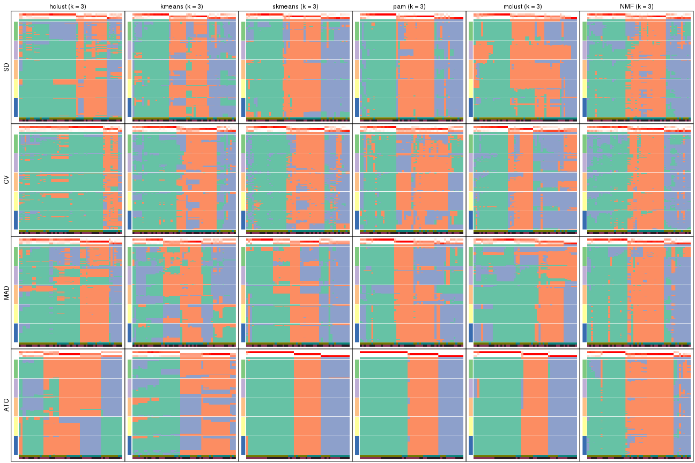
collect_plots(res_list, k = 4, fun = membership_heatmap, mc.cores = 4)
collect_plots(res_list, k = 5, fun = membership_heatmap, mc.cores = 4)
collect_plots(res_list, k = 6, fun = membership_heatmap, mc.cores = 4)
Signature heatmaps for all methods. (What is a signature heatmap?)
Note in following heatmaps, rows are scaled.
collect_plots(res_list, k = 2, fun = get_signatures, mc.cores = 4)
collect_plots(res_list, k = 3, fun = get_signatures, mc.cores = 4)
collect_plots(res_list, k = 4, fun = get_signatures, mc.cores = 4)
collect_plots(res_list, k = 5, fun = get_signatures, mc.cores = 4)
collect_plots(res_list, k = 6, fun = get_signatures, mc.cores = 4)
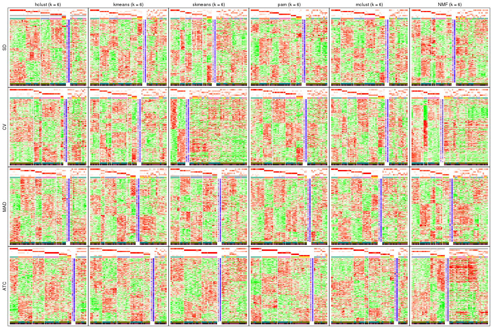
The statistics used for measuring the stability of consensus partitioning. (How are they defined?)
get_stats(res_list, k = 2)
#> k 1-PAC mean_silhouette concordance area_increased Rand Jaccard
#> SD:NMF 2 0.675 0.838 0.933 0.496 0.508 0.508
#> CV:NMF 2 0.885 0.912 0.964 0.487 0.508 0.508
#> MAD:NMF 2 0.627 0.838 0.931 0.507 0.493 0.493
#> ATC:NMF 2 0.959 0.946 0.976 0.493 0.502 0.502
#> SD:skmeans 2 0.623 0.822 0.928 0.508 0.491 0.491
#> CV:skmeans 2 0.885 0.947 0.974 0.504 0.493 0.493
#> MAD:skmeans 2 0.684 0.847 0.935 0.509 0.493 0.493
#> ATC:skmeans 2 1.000 1.000 1.000 0.507 0.493 0.493
#> SD:mclust 2 0.293 0.602 0.797 0.404 0.491 0.491
#> CV:mclust 2 0.466 0.804 0.840 0.424 0.497 0.497
#> MAD:mclust 2 0.413 0.850 0.886 0.458 0.497 0.497
#> ATC:mclust 2 0.576 0.933 0.953 0.492 0.491 0.491
#> SD:kmeans 2 0.275 0.711 0.833 0.498 0.493 0.493
#> CV:kmeans 2 0.799 0.842 0.931 0.485 0.508 0.508
#> MAD:kmeans 2 0.492 0.774 0.890 0.504 0.497 0.497
#> ATC:kmeans 2 1.000 0.984 0.994 0.506 0.493 0.493
#> SD:pam 2 0.600 0.859 0.932 0.506 0.491 0.491
#> CV:pam 2 0.577 0.857 0.931 0.506 0.491 0.491
#> MAD:pam 2 0.689 0.872 0.942 0.506 0.493 0.493
#> ATC:pam 2 1.000 0.983 0.993 0.509 0.491 0.491
#> SD:hclust 2 0.184 0.788 0.829 0.445 0.497 0.497
#> CV:hclust 2 0.206 0.785 0.855 0.313 0.693 0.693
#> MAD:hclust 2 0.201 0.600 0.785 0.378 0.770 0.770
#> ATC:hclust 2 0.987 0.942 0.973 0.493 0.508 0.508
get_stats(res_list, k = 3)
#> k 1-PAC mean_silhouette concordance area_increased Rand Jaccard
#> SD:NMF 3 0.479 0.663 0.813 0.340 0.809 0.631
#> CV:NMF 3 0.481 0.662 0.810 0.368 0.751 0.541
#> MAD:NMF 3 0.616 0.729 0.860 0.305 0.746 0.528
#> ATC:NMF 3 0.667 0.811 0.905 0.267 0.811 0.643
#> SD:skmeans 3 0.587 0.800 0.869 0.329 0.759 0.544
#> CV:skmeans 3 0.462 0.551 0.789 0.331 0.785 0.587
#> MAD:skmeans 3 0.596 0.551 0.743 0.323 0.706 0.476
#> ATC:skmeans 3 1.000 0.989 0.993 0.291 0.853 0.703
#> SD:mclust 3 0.303 0.509 0.769 0.440 0.610 0.377
#> CV:mclust 3 0.404 0.583 0.797 0.484 0.657 0.418
#> MAD:mclust 3 0.309 0.667 0.725 0.285 0.797 0.642
#> ATC:mclust 3 0.943 0.944 0.976 0.328 0.836 0.672
#> SD:kmeans 3 0.437 0.584 0.789 0.346 0.704 0.469
#> CV:kmeans 3 0.503 0.547 0.792 0.351 0.738 0.534
#> MAD:kmeans 3 0.474 0.301 0.604 0.320 0.709 0.477
#> ATC:kmeans 3 0.651 0.458 0.716 0.261 0.945 0.890
#> SD:pam 3 0.651 0.742 0.883 0.330 0.734 0.509
#> CV:pam 3 0.398 0.580 0.715 0.277 0.848 0.703
#> MAD:pam 3 0.552 0.536 0.742 0.307 0.736 0.513
#> ATC:pam 3 1.000 0.991 0.996 0.282 0.840 0.680
#> SD:hclust 3 0.219 0.673 0.772 0.285 0.911 0.820
#> CV:hclust 3 0.231 0.759 0.847 0.281 0.989 0.984
#> MAD:hclust 3 0.325 0.705 0.779 0.586 0.665 0.564
#> ATC:hclust 3 0.628 0.629 0.682 0.287 0.858 0.729
get_stats(res_list, k = 4)
#> k 1-PAC mean_silhouette concordance area_increased Rand Jaccard
#> SD:NMF 4 0.554 0.646 0.760 0.1248 0.788 0.462
#> CV:NMF 4 0.528 0.639 0.797 0.1271 0.801 0.487
#> MAD:NMF 4 0.522 0.517 0.739 0.1206 0.843 0.580
#> ATC:NMF 4 0.612 0.611 0.798 0.1498 0.803 0.522
#> SD:skmeans 4 0.636 0.623 0.805 0.1226 0.859 0.601
#> CV:skmeans 4 0.455 0.475 0.626 0.1223 0.821 0.541
#> MAD:skmeans 4 0.638 0.780 0.831 0.1272 0.792 0.472
#> ATC:skmeans 4 0.865 0.788 0.894 0.0931 0.968 0.907
#> SD:mclust 4 0.675 0.750 0.829 0.2780 0.795 0.501
#> CV:mclust 4 0.631 0.732 0.852 0.1484 0.800 0.511
#> MAD:mclust 4 0.616 0.756 0.858 0.2342 0.743 0.455
#> ATC:mclust 4 0.889 0.853 0.926 0.0916 0.881 0.676
#> SD:kmeans 4 0.577 0.639 0.761 0.1239 0.830 0.540
#> CV:kmeans 4 0.561 0.517 0.734 0.1321 0.860 0.632
#> MAD:kmeans 4 0.584 0.722 0.818 0.1311 0.769 0.420
#> ATC:kmeans 4 0.613 0.644 0.753 0.1480 0.761 0.483
#> SD:pam 4 0.641 0.636 0.779 0.1150 0.817 0.517
#> CV:pam 4 0.559 0.553 0.779 0.1585 0.817 0.548
#> MAD:pam 4 0.560 0.581 0.791 0.1292 0.824 0.527
#> ATC:pam 4 0.831 0.912 0.927 0.1190 0.895 0.714
#> SD:hclust 4 0.427 0.651 0.791 0.2432 0.843 0.616
#> CV:hclust 4 0.276 0.385 0.689 0.3559 0.832 0.754
#> MAD:hclust 4 0.619 0.703 0.846 0.2183 0.827 0.603
#> ATC:hclust 4 0.683 0.837 0.830 0.1516 0.681 0.353
get_stats(res_list, k = 5)
#> k 1-PAC mean_silhouette concordance area_increased Rand Jaccard
#> SD:NMF 5 0.576 0.443 0.726 0.0682 0.811 0.393
#> CV:NMF 5 0.611 0.621 0.783 0.0712 0.858 0.511
#> MAD:NMF 5 0.525 0.355 0.650 0.0710 0.828 0.462
#> ATC:NMF 5 0.566 0.534 0.727 0.0776 0.828 0.462
#> SD:skmeans 5 0.602 0.517 0.716 0.0615 0.925 0.715
#> CV:skmeans 5 0.508 0.334 0.583 0.0648 0.825 0.453
#> MAD:skmeans 5 0.604 0.476 0.650 0.0623 0.885 0.588
#> ATC:skmeans 5 0.784 0.623 0.847 0.0489 0.938 0.813
#> SD:mclust 5 0.650 0.691 0.806 0.0557 0.951 0.810
#> CV:mclust 5 0.635 0.610 0.703 0.0801 0.891 0.640
#> MAD:mclust 5 0.534 0.536 0.682 0.0569 0.897 0.637
#> ATC:mclust 5 0.817 0.834 0.889 0.0544 0.973 0.902
#> SD:kmeans 5 0.609 0.582 0.710 0.0623 0.930 0.729
#> CV:kmeans 5 0.599 0.505 0.695 0.0662 0.852 0.527
#> MAD:kmeans 5 0.628 0.534 0.735 0.0650 0.946 0.786
#> ATC:kmeans 5 0.716 0.698 0.792 0.0719 0.862 0.525
#> SD:pam 5 0.653 0.581 0.766 0.0696 0.925 0.708
#> CV:pam 5 0.609 0.626 0.763 0.0596 0.918 0.689
#> MAD:pam 5 0.704 0.392 0.721 0.0679 0.790 0.386
#> ATC:pam 5 0.934 0.878 0.952 0.1054 0.909 0.675
#> SD:hclust 5 0.543 0.665 0.779 0.0496 0.973 0.891
#> CV:hclust 5 0.358 0.557 0.702 0.2029 0.714 0.481
#> MAD:hclust 5 0.620 0.523 0.786 0.0632 0.990 0.963
#> ATC:hclust 5 0.741 0.728 0.834 0.0870 0.916 0.689
get_stats(res_list, k = 6)
#> k 1-PAC mean_silhouette concordance area_increased Rand Jaccard
#> SD:NMF 6 0.643 0.499 0.715 0.0460 0.840 0.381
#> CV:NMF 6 0.641 0.444 0.702 0.0399 0.869 0.455
#> MAD:NMF 6 0.611 0.459 0.686 0.0534 0.853 0.421
#> ATC:NMF 6 0.563 0.424 0.648 0.0408 0.907 0.630
#> SD:skmeans 6 0.628 0.459 0.667 0.0396 0.921 0.660
#> CV:skmeans 6 0.551 0.301 0.584 0.0413 0.932 0.680
#> MAD:skmeans 6 0.634 0.472 0.665 0.0373 0.898 0.593
#> ATC:skmeans 6 0.779 0.631 0.807 0.0333 0.973 0.909
#> SD:mclust 6 0.685 0.592 0.786 0.0504 0.925 0.674
#> CV:mclust 6 0.638 0.570 0.750 0.0484 0.892 0.555
#> MAD:mclust 6 0.729 0.610 0.781 0.0775 0.859 0.460
#> ATC:mclust 6 0.762 0.690 0.816 0.0600 0.910 0.675
#> SD:kmeans 6 0.647 0.527 0.709 0.0422 0.938 0.709
#> CV:kmeans 6 0.622 0.520 0.693 0.0467 0.920 0.656
#> MAD:kmeans 6 0.654 0.473 0.658 0.0405 0.916 0.630
#> ATC:kmeans 6 0.750 0.656 0.778 0.0455 0.980 0.903
#> SD:pam 6 0.699 0.600 0.786 0.0422 0.918 0.619
#> CV:pam 6 0.628 0.529 0.731 0.0369 0.964 0.828
#> MAD:pam 6 0.728 0.586 0.797 0.0435 0.886 0.562
#> ATC:pam 6 0.876 0.775 0.896 0.0316 0.939 0.708
#> SD:hclust 6 0.613 0.628 0.760 0.0586 1.000 1.000
#> CV:hclust 6 0.547 0.609 0.775 0.1360 0.875 0.629
#> MAD:hclust 6 0.669 0.604 0.710 0.0532 0.938 0.757
#> ATC:hclust 6 0.742 0.719 0.818 0.0275 0.918 0.632
Following heatmap plots the partition for each combination of methods and the lightness correspond to the silhouette scores for samples in each method. On top the consensus subgroup is inferred from all methods by taking the mean silhouette scores as weight.
collect_stats(res_list, k = 2)
collect_stats(res_list, k = 3)
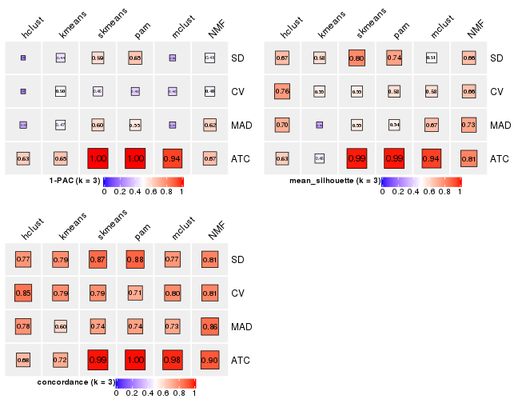
collect_stats(res_list, k = 4)
collect_stats(res_list, k = 5)
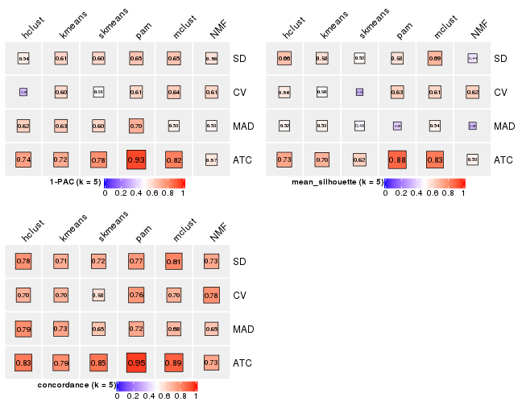
collect_stats(res_list, k = 6)
Collect partitions from all methods:
collect_classes(res_list, k = 2)
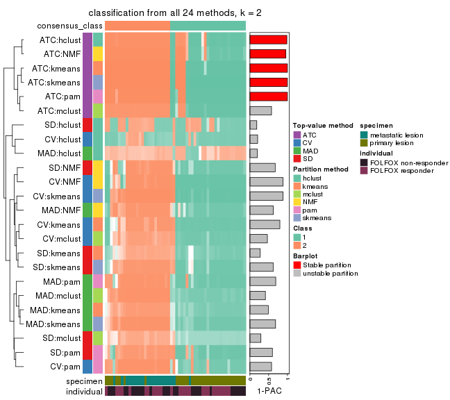
collect_classes(res_list, k = 3)
collect_classes(res_list, k = 4)
collect_classes(res_list, k = 5)
collect_classes(res_list, k = 6)
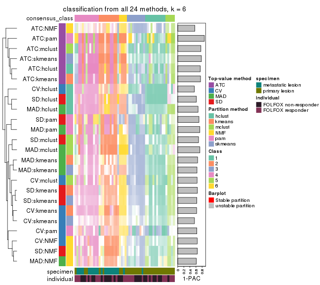
Overlap of top rows from different top-row methods:
top_rows_overlap(res_list, top_n = 1000, method = "euler")
top_rows_overlap(res_list, top_n = 2000, method = "euler")
top_rows_overlap(res_list, top_n = 3000, method = "euler")
top_rows_overlap(res_list, top_n = 4000, method = "euler")
top_rows_overlap(res_list, top_n = 5000, method = "euler")
Also visualize the correspondance of rankings between different top-row methods:
top_rows_overlap(res_list, top_n = 1000, method = "correspondance")
top_rows_overlap(res_list, top_n = 2000, method = "correspondance")
top_rows_overlap(res_list, top_n = 3000, method = "correspondance")
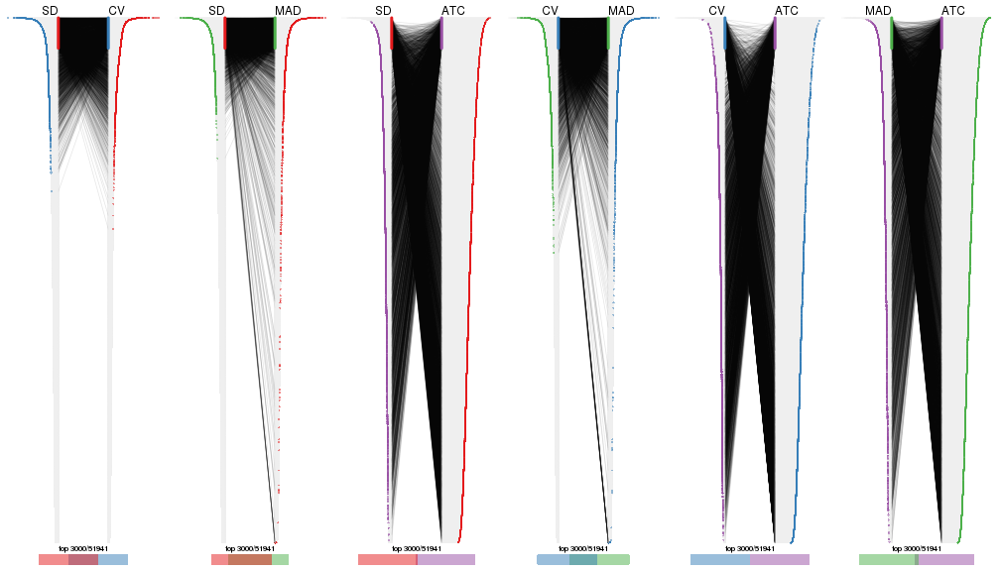
top_rows_overlap(res_list, top_n = 4000, method = "correspondance")
top_rows_overlap(res_list, top_n = 5000, method = "correspondance")
Heatmaps of the top rows:
top_rows_heatmap(res_list, top_n = 1000)
top_rows_heatmap(res_list, top_n = 2000)
top_rows_heatmap(res_list, top_n = 3000)
top_rows_heatmap(res_list, top_n = 4000)
top_rows_heatmap(res_list, top_n = 5000)
Test correlation between subgroups and known annotations. If the known annotation is numeric, one-way ANOVA test is applied, and if the known annotation is discrete, chi-squared contingency table test is applied.
test_to_known_factors(res_list, k = 2)
#> n specimen(p) individual(p) k
#> SD:NMF 49 6.13e-09 0.5171 2
#> CV:NMF 52 7.88e-09 0.5719 2
#> MAD:NMF 50 3.04e-07 0.7591 2
#> ATC:NMF 53 2.95e-03 0.8705 2
#> SD:skmeans 51 6.76e-09 0.6799 2
#> CV:skmeans 54 4.40e-08 0.5852 2
#> MAD:skmeans 50 3.04e-07 0.5704 2
#> ATC:skmeans 54 4.95e-04 1.0000 2
#> SD:mclust 47 2.95e-07 0.6402 2
#> CV:mclust 51 1.08e-08 0.4676 2
#> MAD:mclust 53 6.54e-06 0.4820 2
#> ATC:mclust 53 3.14e-04 1.0000 2
#> SD:kmeans 48 1.47e-09 0.5255 2
#> CV:kmeans 49 6.13e-09 0.6823 2
#> MAD:kmeans 50 3.04e-07 0.5704 2
#> ATC:kmeans 53 6.98e-04 1.0000 2
#> SD:pam 53 4.12e-06 0.8887 2
#> CV:pam 52 4.92e-05 0.5788 2
#> MAD:pam 51 4.64e-05 0.6799 2
#> ATC:pam 54 2.21e-04 1.0000 2
#> SD:hclust 52 3.05e-01 0.5631 2
#> CV:hclust 54 9.21e-04 0.0798 2
#> MAD:hclust 47 9.62e-01 0.7029 2
#> ATC:hclust 53 2.95e-03 0.8705 2
test_to_known_factors(res_list, k = 3)
#> n specimen(p) individual(p) k
#> SD:NMF 44 4.88e-08 0.860 3
#> CV:NMF 45 5.10e-08 0.497 3
#> MAD:NMF 45 1.75e-06 0.888 3
#> ATC:NMF 51 7.99e-03 0.786 3
#> SD:skmeans 52 5.98e-09 0.683 3
#> CV:skmeans 42 1.57e-08 0.781 3
#> MAD:skmeans 45 2.70e-05 0.995 3
#> ATC:skmeans 54 7.32e-04 0.822 3
#> SD:mclust 33 6.38e-06 0.390 3
#> CV:mclust 37 4.64e-07 0.782 3
#> MAD:mclust 50 2.14e-06 0.807 3
#> ATC:mclust 53 5.08e-04 0.677 3
#> SD:kmeans 43 1.12e-08 0.372 3
#> CV:kmeans 38 2.55e-08 0.571 3
#> MAD:kmeans 23 1.07e-03 0.636 3
#> ATC:kmeans 39 3.23e-05 0.803 3
#> SD:pam 46 1.40e-07 0.790 3
#> CV:pam 44 9.39e-06 0.888 3
#> MAD:pam 33 9.36e-06 0.305 3
#> ATC:pam 54 2.82e-04 0.943 3
#> SD:hclust 48 3.28e-02 0.725 3
#> CV:hclust 50 1.18e-02 0.471 3
#> MAD:hclust 49 8.18e-02 0.652 3
#> ATC:hclust 38 1.84e-02 0.762 3
test_to_known_factors(res_list, k = 4)
#> n specimen(p) individual(p) k
#> SD:NMF 44 2.06e-07 0.627 4
#> CV:NMF 45 1.96e-07 0.601 4
#> MAD:NMF 35 6.03e-05 0.847 4
#> ATC:NMF 39 1.87e-02 0.138 4
#> SD:skmeans 42 6.28e-07 0.508 4
#> CV:skmeans 28 2.96e-05 0.284 4
#> MAD:skmeans 50 1.71e-05 0.876 4
#> ATC:skmeans 45 9.48e-03 0.672 4
#> SD:mclust 52 3.13e-07 0.766 4
#> CV:mclust 48 6.30e-07 0.941 4
#> MAD:mclust 49 1.85e-05 0.879 4
#> ATC:mclust 48 2.35e-04 0.809 4
#> SD:kmeans 41 1.17e-06 0.417 4
#> CV:kmeans 32 2.92e-06 0.810 4
#> MAD:kmeans 50 2.08e-05 0.735 4
#> ATC:kmeans 43 2.32e-02 0.156 4
#> SD:pam 44 2.68e-05 0.896 4
#> CV:pam 37 4.81e-05 0.418 4
#> MAD:pam 40 7.78e-05 0.419 4
#> ATC:pam 54 1.39e-04 0.711 4
#> SD:hclust 44 1.66e-04 0.938 4
#> CV:hclust 33 8.90e-07 0.375 4
#> MAD:hclust 45 6.40e-04 0.911 4
#> ATC:hclust 53 2.48e-05 0.718 4
test_to_known_factors(res_list, k = 5)
#> n specimen(p) individual(p) k
#> SD:NMF 26 5.39e-04 0.6216 5
#> CV:NMF 43 2.99e-06 0.2547 5
#> MAD:NMF 18 6.11e-04 0.7095 5
#> ATC:NMF 34 1.36e-02 0.3067 5
#> SD:skmeans 35 2.86e-06 0.8604 5
#> CV:skmeans 14 9.12e-04 0.0798 5
#> MAD:skmeans 26 2.26e-01 0.8835 5
#> ATC:skmeans 34 1.84e-02 0.7134 5
#> SD:mclust 48 2.38e-08 0.7959 5
#> CV:mclust 41 8.29e-07 0.8256 5
#> MAD:mclust 40 1.04e-06 0.7699 5
#> ATC:mclust 51 2.76e-04 0.6673 5
#> SD:kmeans 42 1.00e-05 0.6489 5
#> CV:kmeans 40 5.30e-06 0.6417 5
#> MAD:kmeans 40 1.31e-04 0.9414 5
#> ATC:kmeans 45 3.17e-04 0.8578 5
#> SD:pam 36 4.68e-04 0.6987 5
#> CV:pam 44 5.84e-06 0.6440 5
#> MAD:pam 29 5.05e-04 0.5427 5
#> ATC:pam 51 1.03e-03 0.5358 5
#> SD:hclust 46 5.81e-05 0.3665 5
#> CV:hclust 41 3.43e-07 0.4551 5
#> MAD:hclust 34 2.20e-03 0.6444 5
#> ATC:hclust 48 4.23e-04 0.3969 5
test_to_known_factors(res_list, k = 6)
#> n specimen(p) individual(p) k
#> SD:NMF 31 3.18e-03 0.422 6
#> CV:NMF 22 3.58e-02 0.209 6
#> MAD:NMF 28 1.98e-03 0.686 6
#> ATC:NMF 25 8.58e-02 0.192 6
#> SD:skmeans 31 7.96e-04 0.924 6
#> CV:skmeans 11 6.76e-03 0.391 6
#> MAD:skmeans 35 5.54e-04 0.799 6
#> ATC:skmeans 36 3.93e-03 0.659 6
#> SD:mclust 40 1.56e-05 0.972 6
#> CV:mclust 40 3.89e-06 0.902 6
#> MAD:mclust 35 5.80e-05 0.752 6
#> ATC:mclust 47 9.40e-04 0.332 6
#> SD:kmeans 39 2.41e-05 0.798 6
#> CV:kmeans 35 1.07e-04 0.775 6
#> MAD:kmeans 34 1.95e-04 0.977 6
#> ATC:kmeans 45 3.45e-04 0.366 6
#> SD:pam 38 1.08e-04 0.334 6
#> CV:pam 39 1.25e-05 0.571 6
#> MAD:pam 42 3.64e-05 0.789 6
#> ATC:pam 45 5.44e-03 0.308 6
#> SD:hclust 42 5.08e-05 0.447 6
#> CV:hclust 40 2.80e-05 0.842 6
#> MAD:hclust 42 1.43e-03 0.474 6
#> ATC:hclust 46 1.20e-04 0.555 6
The object with results only for a single top-value method and a single partition method can be extracted as:
res = res_list["SD", "hclust"]
# you can also extract it by
# res = res_list["SD:hclust"]
A summary of res and all the functions that can be applied to it:
res
#> A 'ConsensusPartition' object with k = 2, 3, 4, 5, 6.
#> On a matrix with 51941 rows and 54 columns.
#> Top rows (1000, 2000, 3000, 4000, 5000) are extracted by 'SD' method.
#> Subgroups are detected by 'hclust' method.
#> Performed in total 1250 partitions by row resampling.
#> Best k for subgroups seems to be 2.
#>
#> Following methods can be applied to this 'ConsensusPartition' object:
#> [1] "cola_report" "collect_classes" "collect_plots"
#> [4] "collect_stats" "colnames" "compare_signatures"
#> [7] "consensus_heatmap" "dimension_reduction" "functional_enrichment"
#> [10] "get_anno_col" "get_anno" "get_classes"
#> [13] "get_consensus" "get_matrix" "get_membership"
#> [16] "get_param" "get_signatures" "get_stats"
#> [19] "is_best_k" "is_stable_k" "membership_heatmap"
#> [22] "ncol" "nrow" "plot_ecdf"
#> [25] "rownames" "select_partition_number" "show"
#> [28] "suggest_best_k" "test_to_known_factors"
collect_plots() function collects all the plots made from res for all k (number of partitions)
into one single page to provide an easy and fast comparison between different k.
collect_plots(res)
The plots are:
k and the heatmap of
predicted classes for each k.k.k.k.All the plots in panels can be made by individual functions and they are plotted later in this section.
select_partition_number() produces several plots showing different
statistics for choosing “optimized” k. There are following statistics:
k;k, the area increased is defined as \(A_k - A_{k-1}\).The detailed explanations of these statistics can be found in the cola vignette.
Generally speaking, lower PAC score, higher mean silhouette score or higher
concordance corresponds to better partition. Rand index and Jaccard index
measure how similar the current partition is compared to partition with k-1.
If they are too similar, we won't accept k is better than k-1.
select_partition_number(res)
The numeric values for all these statistics can be obtained by get_stats().
get_stats(res)
#> k 1-PAC mean_silhouette concordance area_increased Rand Jaccard
#> 2 2 0.184 0.788 0.829 0.4447 0.497 0.497
#> 3 3 0.219 0.673 0.772 0.2852 0.911 0.820
#> 4 4 0.427 0.651 0.791 0.2432 0.843 0.616
#> 5 5 0.543 0.665 0.779 0.0496 0.973 0.891
#> 6 6 0.613 0.628 0.760 0.0586 1.000 1.000
suggest_best_k() suggests the best \(k\) based on these statistics. The rules are as follows:
NA.suggest_best_k(res)
#> [1] 2
Following shows the table of the partitions (You need to click the show/hide
code output link to see it). The membership matrix (columns with name p*)
is inferred by
clue::cl_consensus()
function with the SE method. Basically the value in the membership matrix
represents the probability to belong to a certain group. The finall class
label for an item is determined with the group with highest probability it
belongs to.
In get_classes() function, the entropy is calculated from the membership
matrix and the silhouette score is calculated from the consensus matrix.
cbind(get_classes(res, k = 2), get_membership(res, k = 2))
#> class entropy silhouette p1 p2
#> GSM710828 1 0.0376 0.820 0.996 0.004
#> GSM710829 2 0.8267 0.764 0.260 0.740
#> GSM710839 1 0.0938 0.816 0.988 0.012
#> GSM710841 2 0.8267 0.764 0.260 0.740
#> GSM710843 1 0.6148 0.827 0.848 0.152
#> GSM710845 1 0.0000 0.817 1.000 0.000
#> GSM710846 2 0.8661 0.708 0.288 0.712
#> GSM710849 2 0.8267 0.764 0.260 0.740
#> GSM710853 2 0.0938 0.774 0.012 0.988
#> GSM710855 2 0.0376 0.768 0.004 0.996
#> GSM710858 2 0.0938 0.774 0.012 0.988
#> GSM710860 1 0.0938 0.816 0.988 0.012
#> GSM710801 2 0.8144 0.772 0.252 0.748
#> GSM710813 2 0.9044 0.705 0.320 0.680
#> GSM710814 1 0.1414 0.818 0.980 0.020
#> GSM710815 1 0.5178 0.826 0.884 0.116
#> GSM710816 1 0.0376 0.816 0.996 0.004
#> GSM710817 2 0.4298 0.801 0.088 0.912
#> GSM710818 1 0.0376 0.820 0.996 0.004
#> GSM710819 2 0.6801 0.654 0.180 0.820
#> GSM710820 2 0.8267 0.764 0.260 0.740
#> GSM710830 1 0.7056 0.843 0.808 0.192
#> GSM710831 2 0.4431 0.802 0.092 0.908
#> GSM710832 1 0.7056 0.843 0.808 0.192
#> GSM710833 2 0.7528 0.791 0.216 0.784
#> GSM710834 1 0.0376 0.819 0.996 0.004
#> GSM710835 2 0.7453 0.810 0.212 0.788
#> GSM710836 2 0.7528 0.790 0.216 0.784
#> GSM710837 2 0.7453 0.801 0.212 0.788
#> GSM710862 1 0.3879 0.848 0.924 0.076
#> GSM710863 1 0.6623 0.851 0.828 0.172
#> GSM710865 1 0.6623 0.851 0.828 0.172
#> GSM710867 1 0.7219 0.836 0.800 0.200
#> GSM710869 2 0.8608 0.759 0.284 0.716
#> GSM710871 1 0.7219 0.836 0.800 0.200
#> GSM710873 2 0.4690 0.772 0.100 0.900
#> GSM710802 1 0.5178 0.826 0.884 0.116
#> GSM710803 1 0.7056 0.843 0.808 0.192
#> GSM710804 2 0.7453 0.810 0.212 0.788
#> GSM710805 2 0.9552 0.677 0.376 0.624
#> GSM710806 2 0.7528 0.808 0.216 0.784
#> GSM710807 2 0.7219 0.806 0.200 0.800
#> GSM710808 1 0.6973 0.844 0.812 0.188
#> GSM710809 2 0.5946 0.812 0.144 0.856
#> GSM710810 1 0.4690 0.851 0.900 0.100
#> GSM710811 1 0.7139 0.840 0.804 0.196
#> GSM710812 1 0.6973 0.844 0.812 0.188
#> GSM710821 1 0.6343 0.854 0.840 0.160
#> GSM710822 1 0.9922 0.364 0.552 0.448
#> GSM710823 1 0.9922 0.364 0.552 0.448
#> GSM710824 1 0.1633 0.828 0.976 0.024
#> GSM710825 1 0.6247 0.854 0.844 0.156
#> GSM710826 1 0.7056 0.843 0.808 0.192
#> GSM710827 1 0.6623 0.851 0.828 0.172
cbind(get_classes(res, k = 3), get_membership(res, k = 3))
#> class entropy silhouette p1 p2 p3
#> GSM710828 1 0.4805 0.770 0.812 0.012 0.176
#> GSM710829 2 0.4346 0.693 0.184 0.816 0.000
#> GSM710839 1 0.5348 0.762 0.796 0.028 0.176
#> GSM710841 2 0.4346 0.693 0.184 0.816 0.000
#> GSM710843 1 0.6699 0.697 0.744 0.164 0.092
#> GSM710845 1 0.4700 0.769 0.812 0.008 0.180
#> GSM710846 2 0.6151 0.564 0.068 0.772 0.160
#> GSM710849 2 0.4346 0.693 0.184 0.816 0.000
#> GSM710853 2 0.5216 0.345 0.000 0.740 0.260
#> GSM710855 2 0.5431 0.310 0.000 0.716 0.284
#> GSM710858 2 0.5216 0.345 0.000 0.740 0.260
#> GSM710860 1 0.5348 0.762 0.796 0.028 0.176
#> GSM710801 2 0.4840 0.684 0.168 0.816 0.016
#> GSM710813 2 0.6143 0.629 0.256 0.720 0.024
#> GSM710814 1 0.5526 0.760 0.792 0.036 0.172
#> GSM710815 1 0.6662 0.718 0.752 0.128 0.120
#> GSM710816 1 0.4755 0.767 0.808 0.008 0.184
#> GSM710817 2 0.3583 0.615 0.044 0.900 0.056
#> GSM710818 1 0.4805 0.770 0.812 0.012 0.176
#> GSM710819 3 0.1636 0.535 0.016 0.020 0.964
#> GSM710820 2 0.4465 0.692 0.176 0.820 0.004
#> GSM710830 1 0.3031 0.785 0.912 0.076 0.012
#> GSM710831 2 0.3692 0.615 0.048 0.896 0.056
#> GSM710832 1 0.3031 0.785 0.912 0.076 0.012
#> GSM710833 3 0.8427 0.739 0.240 0.148 0.612
#> GSM710834 1 0.4755 0.770 0.808 0.008 0.184
#> GSM710835 2 0.5619 0.626 0.244 0.744 0.012
#> GSM710836 3 0.8379 0.738 0.268 0.128 0.604
#> GSM710837 3 0.8906 0.633 0.344 0.136 0.520
#> GSM710862 1 0.2945 0.791 0.908 0.004 0.088
#> GSM710863 1 0.2261 0.791 0.932 0.068 0.000
#> GSM710865 1 0.2165 0.792 0.936 0.064 0.000
#> GSM710867 1 0.3207 0.779 0.904 0.084 0.012
#> GSM710869 3 0.7940 0.690 0.332 0.076 0.592
#> GSM710871 1 0.3207 0.779 0.904 0.084 0.012
#> GSM710873 3 0.5618 0.648 0.156 0.048 0.796
#> GSM710802 1 0.6662 0.718 0.752 0.128 0.120
#> GSM710803 1 0.3031 0.785 0.912 0.076 0.012
#> GSM710804 2 0.5919 0.594 0.276 0.712 0.012
#> GSM710805 2 0.7624 0.415 0.368 0.580 0.052
#> GSM710806 2 0.6082 0.572 0.296 0.692 0.012
#> GSM710807 3 0.9295 0.620 0.224 0.252 0.524
#> GSM710808 1 0.2772 0.786 0.916 0.080 0.004
#> GSM710809 3 0.8835 0.632 0.164 0.268 0.568
#> GSM710810 1 0.2400 0.794 0.932 0.004 0.064
#> GSM710811 1 0.3120 0.782 0.908 0.080 0.012
#> GSM710812 1 0.2772 0.786 0.916 0.080 0.004
#> GSM710821 1 0.0237 0.795 0.996 0.004 0.000
#> GSM710822 1 0.9512 0.185 0.492 0.260 0.248
#> GSM710823 1 0.9512 0.185 0.492 0.260 0.248
#> GSM710824 1 0.4291 0.780 0.840 0.008 0.152
#> GSM710825 1 0.0475 0.795 0.992 0.004 0.004
#> GSM710826 1 0.3031 0.785 0.912 0.076 0.012
#> GSM710827 1 0.2261 0.791 0.932 0.068 0.000
cbind(get_classes(res, k = 4), get_membership(res, k = 4))
#> class entropy silhouette p1 p2 p3 p4
#> GSM710828 4 0.0779 0.8446 0.016 0.004 0.000 0.980
#> GSM710829 2 0.5567 0.6930 0.116 0.752 0.012 0.120
#> GSM710839 4 0.1297 0.8447 0.016 0.020 0.000 0.964
#> GSM710841 2 0.5567 0.6937 0.120 0.752 0.012 0.116
#> GSM710843 4 0.4118 0.7690 0.016 0.144 0.016 0.824
#> GSM710845 4 0.0592 0.8440 0.016 0.000 0.000 0.984
#> GSM710846 2 0.4961 0.6108 0.036 0.748 0.004 0.212
#> GSM710849 2 0.5567 0.6937 0.120 0.752 0.012 0.116
#> GSM710853 2 0.4535 0.4178 0.000 0.744 0.240 0.016
#> GSM710855 2 0.4720 0.3843 0.000 0.720 0.264 0.016
#> GSM710858 2 0.4535 0.4178 0.000 0.744 0.240 0.016
#> GSM710860 4 0.1297 0.8447 0.016 0.020 0.000 0.964
#> GSM710801 2 0.4590 0.6799 0.060 0.792 0.000 0.148
#> GSM710813 2 0.7443 0.6588 0.120 0.632 0.064 0.184
#> GSM710814 4 0.1510 0.8431 0.016 0.028 0.000 0.956
#> GSM710815 4 0.3505 0.7997 0.016 0.108 0.012 0.864
#> GSM710816 4 0.0779 0.8436 0.016 0.000 0.004 0.980
#> GSM710817 2 0.4163 0.6356 0.076 0.828 0.096 0.000
#> GSM710818 4 0.3157 0.7849 0.144 0.004 0.000 0.852
#> GSM710819 3 0.2011 0.5428 0.000 0.000 0.920 0.080
#> GSM710820 2 0.4894 0.6949 0.100 0.780 0.000 0.120
#> GSM710830 1 0.0336 0.8028 0.992 0.000 0.000 0.008
#> GSM710831 2 0.4155 0.6343 0.072 0.828 0.100 0.000
#> GSM710832 1 0.0336 0.8028 0.992 0.000 0.000 0.008
#> GSM710833 3 0.7666 0.7555 0.224 0.112 0.600 0.064
#> GSM710834 4 0.3569 0.7346 0.196 0.000 0.000 0.804
#> GSM710835 2 0.5013 0.5852 0.292 0.688 0.020 0.000
#> GSM710836 3 0.7751 0.7528 0.244 0.108 0.584 0.064
#> GSM710837 3 0.6850 0.6404 0.376 0.108 0.516 0.000
#> GSM710862 4 0.4855 0.3579 0.400 0.000 0.000 0.600
#> GSM710863 1 0.1211 0.7923 0.960 0.000 0.000 0.040
#> GSM710865 1 0.2868 0.7085 0.864 0.000 0.000 0.136
#> GSM710867 1 0.0000 0.7970 1.000 0.000 0.000 0.000
#> GSM710869 3 0.7511 0.7126 0.300 0.064 0.568 0.068
#> GSM710871 1 0.0000 0.7970 1.000 0.000 0.000 0.000
#> GSM710873 3 0.4838 0.6769 0.152 0.024 0.792 0.032
#> GSM710802 4 0.3505 0.7997 0.016 0.108 0.012 0.864
#> GSM710803 1 0.0336 0.8028 0.992 0.000 0.000 0.008
#> GSM710804 2 0.4585 0.5534 0.332 0.668 0.000 0.000
#> GSM710805 2 0.7664 0.4716 0.256 0.548 0.020 0.176
#> GSM710806 2 0.4679 0.5291 0.352 0.648 0.000 0.000
#> GSM710807 3 0.7067 0.6636 0.244 0.188 0.568 0.000
#> GSM710808 1 0.0592 0.7998 0.984 0.000 0.000 0.016
#> GSM710809 3 0.6613 0.6698 0.172 0.200 0.628 0.000
#> GSM710810 4 0.5016 0.3595 0.396 0.000 0.004 0.600
#> GSM710811 1 0.0188 0.7998 0.996 0.000 0.000 0.004
#> GSM710812 1 0.0592 0.7998 0.984 0.000 0.000 0.016
#> GSM710821 1 0.4941 0.1222 0.564 0.000 0.000 0.436
#> GSM710822 1 0.7813 0.1284 0.524 0.164 0.288 0.024
#> GSM710823 1 0.7813 0.1284 0.524 0.164 0.288 0.024
#> GSM710824 4 0.2796 0.8125 0.092 0.000 0.016 0.892
#> GSM710825 1 0.4972 0.0546 0.544 0.000 0.000 0.456
#> GSM710826 1 0.0336 0.8028 0.992 0.000 0.000 0.008
#> GSM710827 1 0.1302 0.7894 0.956 0.000 0.000 0.044
cbind(get_classes(res, k = 5), get_membership(res, k = 5))
#> class entropy silhouette p1 p2 p3 p4 p5
#> GSM710828 4 0.0771 0.813 0.000 0.020 0.000 0.976 0.004
#> GSM710829 2 0.5702 0.681 0.080 0.704 0.000 0.072 0.144
#> GSM710839 4 0.0609 0.811 0.000 0.000 0.000 0.980 0.020
#> GSM710841 2 0.5658 0.684 0.084 0.708 0.000 0.068 0.140
#> GSM710843 4 0.4150 0.712 0.000 0.140 0.004 0.788 0.068
#> GSM710845 4 0.0162 0.812 0.000 0.004 0.000 0.996 0.000
#> GSM710846 2 0.6804 0.175 0.008 0.420 0.000 0.204 0.368
#> GSM710849 2 0.5698 0.683 0.084 0.704 0.000 0.068 0.144
#> GSM710853 5 0.0000 0.987 0.000 0.000 0.000 0.000 1.000
#> GSM710855 5 0.0771 0.974 0.000 0.004 0.020 0.000 0.976
#> GSM710858 5 0.0000 0.987 0.000 0.000 0.000 0.000 1.000
#> GSM710860 4 0.0609 0.811 0.000 0.000 0.000 0.980 0.020
#> GSM710801 2 0.5790 0.626 0.032 0.668 0.000 0.100 0.200
#> GSM710813 2 0.6134 0.640 0.072 0.680 0.024 0.180 0.044
#> GSM710814 4 0.0794 0.810 0.000 0.000 0.000 0.972 0.028
#> GSM710815 4 0.3321 0.749 0.000 0.136 0.000 0.832 0.032
#> GSM710816 4 0.0324 0.812 0.000 0.004 0.004 0.992 0.000
#> GSM710817 2 0.3226 0.575 0.024 0.864 0.024 0.000 0.088
#> GSM710818 4 0.3308 0.750 0.144 0.020 0.000 0.832 0.004
#> GSM710819 3 0.0609 0.452 0.000 0.000 0.980 0.020 0.000
#> GSM710820 2 0.5883 0.669 0.072 0.680 0.000 0.072 0.176
#> GSM710830 1 0.0290 0.805 0.992 0.008 0.000 0.000 0.000
#> GSM710831 2 0.3313 0.573 0.024 0.860 0.028 0.000 0.088
#> GSM710832 1 0.0290 0.805 0.992 0.008 0.000 0.000 0.000
#> GSM710833 3 0.7210 0.762 0.212 0.148 0.568 0.056 0.016
#> GSM710834 4 0.3496 0.704 0.200 0.012 0.000 0.788 0.000
#> GSM710835 2 0.4602 0.594 0.252 0.708 0.008 0.000 0.032
#> GSM710836 3 0.7009 0.758 0.236 0.144 0.560 0.056 0.004
#> GSM710837 3 0.6186 0.632 0.356 0.128 0.512 0.000 0.004
#> GSM710862 4 0.4841 0.292 0.416 0.024 0.000 0.560 0.000
#> GSM710863 1 0.0703 0.796 0.976 0.000 0.000 0.024 0.000
#> GSM710865 1 0.2462 0.714 0.880 0.008 0.000 0.112 0.000
#> GSM710867 1 0.0510 0.801 0.984 0.016 0.000 0.000 0.000
#> GSM710869 3 0.6629 0.712 0.292 0.088 0.560 0.060 0.000
#> GSM710871 1 0.0510 0.801 0.984 0.016 0.000 0.000 0.000
#> GSM710873 3 0.3801 0.649 0.140 0.040 0.812 0.008 0.000
#> GSM710802 4 0.3321 0.749 0.000 0.136 0.000 0.832 0.032
#> GSM710803 1 0.0290 0.805 0.992 0.008 0.000 0.000 0.000
#> GSM710804 2 0.4708 0.580 0.292 0.668 0.000 0.000 0.040
#> GSM710805 2 0.6058 0.525 0.224 0.612 0.012 0.152 0.000
#> GSM710806 2 0.4503 0.558 0.312 0.664 0.000 0.000 0.024
#> GSM710807 3 0.6964 0.698 0.212 0.224 0.528 0.000 0.036
#> GSM710808 1 0.0807 0.802 0.976 0.012 0.000 0.012 0.000
#> GSM710809 3 0.6611 0.701 0.144 0.248 0.572 0.000 0.036
#> GSM710810 4 0.5036 0.307 0.404 0.036 0.000 0.560 0.000
#> GSM710811 1 0.0404 0.803 0.988 0.012 0.000 0.000 0.000
#> GSM710812 1 0.0807 0.802 0.976 0.012 0.000 0.012 0.000
#> GSM710821 1 0.4367 0.164 0.580 0.004 0.000 0.416 0.000
#> GSM710822 1 0.7304 0.143 0.532 0.180 0.220 0.004 0.064
#> GSM710823 1 0.7304 0.143 0.532 0.180 0.220 0.004 0.064
#> GSM710824 4 0.2331 0.789 0.068 0.008 0.016 0.908 0.000
#> GSM710825 1 0.4510 0.109 0.560 0.008 0.000 0.432 0.000
#> GSM710826 1 0.0290 0.805 0.992 0.008 0.000 0.000 0.000
#> GSM710827 1 0.0865 0.793 0.972 0.004 0.000 0.024 0.000
cbind(get_classes(res, k = 6), get_membership(res, k = 6))
#> class entropy silhouette p1 p2 p3 p4 p5 p6
#> GSM710828 4 0.1636 0.7224 0.000 0.024 0.000 0.936 NA 0.004
#> GSM710829 2 0.0653 0.6803 0.004 0.980 0.000 0.004 NA 0.012
#> GSM710839 4 0.0547 0.7224 0.000 0.000 0.000 0.980 NA 0.020
#> GSM710841 2 0.0405 0.6822 0.004 0.988 0.000 0.000 NA 0.008
#> GSM710843 4 0.6067 0.3284 0.000 0.272 0.000 0.396 NA 0.000
#> GSM710845 4 0.1327 0.7216 0.000 0.000 0.000 0.936 NA 0.000
#> GSM710846 2 0.5847 0.1567 0.000 0.444 0.000 0.196 NA 0.360
#> GSM710849 2 0.0508 0.6810 0.004 0.984 0.000 0.000 NA 0.012
#> GSM710853 6 0.1387 0.9878 0.000 0.068 0.000 0.000 NA 0.932
#> GSM710855 6 0.2094 0.9754 0.000 0.068 0.016 0.000 NA 0.908
#> GSM710858 6 0.1387 0.9878 0.000 0.068 0.000 0.000 NA 0.932
#> GSM710860 4 0.0806 0.7226 0.000 0.000 0.000 0.972 NA 0.020
#> GSM710801 2 0.2350 0.6461 0.000 0.888 0.000 0.036 NA 0.076
#> GSM710813 2 0.4839 0.6371 0.008 0.684 0.188 0.120 NA 0.000
#> GSM710814 4 0.0806 0.7218 0.000 0.008 0.000 0.972 NA 0.020
#> GSM710815 4 0.5609 0.4822 0.000 0.220 0.000 0.544 NA 0.000
#> GSM710816 4 0.1787 0.7110 0.000 0.008 0.004 0.920 NA 0.000
#> GSM710817 2 0.5042 0.5885 0.000 0.576 0.332 0.000 NA 0.000
#> GSM710818 4 0.5052 0.6525 0.084 0.036 0.000 0.700 NA 0.004
#> GSM710819 3 0.4786 0.4855 0.000 0.000 0.584 0.000 NA 0.064
#> GSM710820 2 0.1219 0.6698 0.000 0.948 0.000 0.004 NA 0.048
#> GSM710830 1 0.0458 0.7985 0.984 0.016 0.000 0.000 NA 0.000
#> GSM710831 2 0.5054 0.5865 0.000 0.572 0.336 0.000 NA 0.000
#> GSM710832 1 0.0458 0.7985 0.984 0.016 0.000 0.000 NA 0.000
#> GSM710833 3 0.5262 0.7511 0.124 0.084 0.720 0.036 NA 0.000
#> GSM710834 4 0.4514 0.6440 0.144 0.004 0.004 0.728 NA 0.000
#> GSM710835 2 0.6434 0.5666 0.172 0.560 0.092 0.000 NA 0.000
#> GSM710836 3 0.5515 0.7511 0.152 0.084 0.692 0.032 NA 0.000
#> GSM710837 3 0.5071 0.5869 0.340 0.080 0.576 0.000 NA 0.000
#> GSM710862 4 0.6714 0.3156 0.304 0.048 0.016 0.488 NA 0.000
#> GSM710863 1 0.0993 0.7849 0.964 0.000 0.000 0.024 NA 0.000
#> GSM710865 1 0.3465 0.6727 0.820 0.004 0.004 0.112 NA 0.000
#> GSM710867 1 0.0870 0.7949 0.972 0.012 0.012 0.000 NA 0.000
#> GSM710869 3 0.6032 0.7335 0.208 0.076 0.636 0.040 NA 0.004
#> GSM710871 1 0.0870 0.7949 0.972 0.012 0.012 0.000 NA 0.000
#> GSM710873 3 0.5274 0.6364 0.112 0.000 0.640 0.004 NA 0.012
#> GSM710802 4 0.5609 0.4822 0.000 0.220 0.000 0.544 NA 0.000
#> GSM710803 1 0.0458 0.7985 0.984 0.016 0.000 0.000 NA 0.000
#> GSM710804 2 0.5141 0.5959 0.204 0.672 0.032 0.000 NA 0.000
#> GSM710805 2 0.7632 0.4762 0.128 0.488 0.084 0.092 NA 0.000
#> GSM710806 2 0.6011 0.5351 0.224 0.564 0.032 0.000 NA 0.000
#> GSM710807 3 0.4201 0.7001 0.176 0.080 0.740 0.000 NA 0.000
#> GSM710808 1 0.0984 0.7961 0.968 0.008 0.012 0.012 NA 0.000
#> GSM710809 3 0.3112 0.6895 0.068 0.096 0.836 0.000 NA 0.000
#> GSM710810 4 0.6890 0.3280 0.292 0.048 0.028 0.488 NA 0.000
#> GSM710811 1 0.0622 0.7962 0.980 0.008 0.012 0.000 NA 0.000
#> GSM710812 1 0.0984 0.7961 0.968 0.008 0.012 0.012 NA 0.000
#> GSM710821 1 0.5373 0.1322 0.512 0.004 0.000 0.384 NA 0.000
#> GSM710822 1 0.5107 0.1151 0.492 0.000 0.444 0.004 NA 0.004
#> GSM710823 1 0.5107 0.1151 0.492 0.000 0.444 0.004 NA 0.004
#> GSM710824 4 0.3538 0.7047 0.056 0.012 0.020 0.844 NA 0.004
#> GSM710825 1 0.5560 0.0749 0.488 0.004 0.004 0.400 NA 0.000
#> GSM710826 1 0.0458 0.7985 0.984 0.016 0.000 0.000 NA 0.000
#> GSM710827 1 0.0891 0.7867 0.968 0.000 0.000 0.024 NA 0.000
Heatmaps for the consensus matrix. It visualizes the probability of two samples to be in a same group.
consensus_heatmap(res, k = 2)
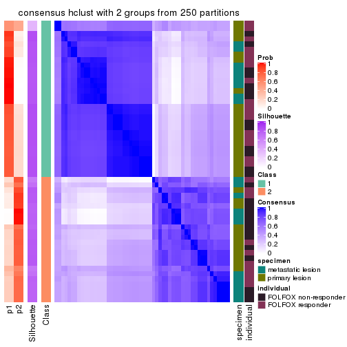
consensus_heatmap(res, k = 3)
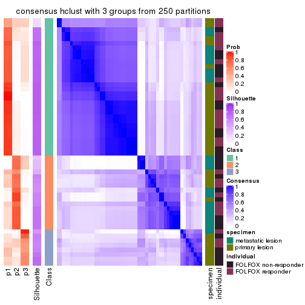
consensus_heatmap(res, k = 4)
consensus_heatmap(res, k = 5)
consensus_heatmap(res, k = 6)
Heatmaps for the membership of samples in all partitions to see how consistent they are:
membership_heatmap(res, k = 2)
membership_heatmap(res, k = 3)
membership_heatmap(res, k = 4)
membership_heatmap(res, k = 5)
membership_heatmap(res, k = 6)
As soon as we have had the classes for columns, we can look for signatures which are significantly different between classes which can be candidate marks for certain classes. Following are the heatmaps for signatures.
Signature heatmaps where rows are scaled:
get_signatures(res, k = 2)

get_signatures(res, k = 3)
get_signatures(res, k = 4)
get_signatures(res, k = 5)
get_signatures(res, k = 6)
Signature heatmaps where rows are not scaled:
get_signatures(res, k = 2, scale_rows = FALSE)
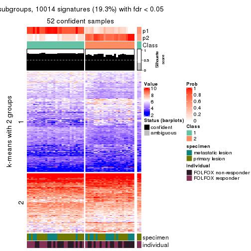
get_signatures(res, k = 3, scale_rows = FALSE)
get_signatures(res, k = 4, scale_rows = FALSE)
get_signatures(res, k = 5, scale_rows = FALSE)
get_signatures(res, k = 6, scale_rows = FALSE)
Compare the overlap of signatures from different k:
compare_signatures(res)
get_signature() returns a data frame invisibly. TO get the list of signatures, the function
call should be assigned to a variable explicitly. In following code, if plot argument is set
to FALSE, no heatmap is plotted while only the differential analysis is performed.
# code only for demonstration
tb = get_signature(res, k = ..., plot = FALSE)
An example of the output of tb is:
#> which_row fdr mean_1 mean_2 scaled_mean_1 scaled_mean_2 km
#> 1 38 0.042760348 8.373488 9.131774 -0.5533452 0.5164555 1
#> 2 40 0.018707592 7.106213 8.469186 -0.6173731 0.5762149 1
#> 3 55 0.019134737 10.221463 11.207825 -0.6159697 0.5749050 1
#> 4 59 0.006059896 5.921854 7.869574 -0.6899429 0.6439467 1
#> 5 60 0.018055526 8.928898 10.211722 -0.6204761 0.5791110 1
#> 6 98 0.009384629 15.714769 14.887706 0.6635654 -0.6193277 2
...
The columns in tb are:
which_row: row indices corresponding to the input matrix.fdr: FDR for the differential test. mean_x: The mean value in group x.scaled_mean_x: The mean value in group x after rows are scaled.km: Row groups if k-means clustering is applied to rows.UMAP plot which shows how samples are separated.
dimension_reduction(res, k = 2, method = "UMAP")
dimension_reduction(res, k = 3, method = "UMAP")
dimension_reduction(res, k = 4, method = "UMAP")
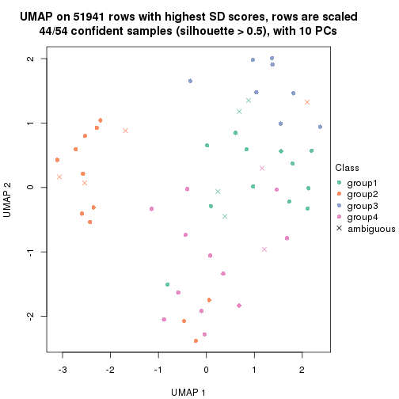
dimension_reduction(res, k = 5, method = "UMAP")
dimension_reduction(res, k = 6, method = "UMAP")
Following heatmap shows how subgroups are split when increasing k:
collect_classes(res)
Test correlation between subgroups and known annotations. If the known annotation is numeric, one-way ANOVA test is applied, and if the known annotation is discrete, chi-squared contingency table test is applied.
test_to_known_factors(res)
#> n specimen(p) individual(p) k
#> SD:hclust 52 3.05e-01 0.563 2
#> SD:hclust 48 3.28e-02 0.725 3
#> SD:hclust 44 1.66e-04 0.938 4
#> SD:hclust 46 5.81e-05 0.366 5
#> SD:hclust 42 5.08e-05 0.447 6
If matrix rows can be associated to genes, consider to use GO_Enrichment(res,
...) to perform function enrichment for the signature genes.
The object with results only for a single top-value method and a single partition method can be extracted as:
res = res_list["SD", "kmeans"]
# you can also extract it by
# res = res_list["SD:kmeans"]
A summary of res and all the functions that can be applied to it:
res
#> A 'ConsensusPartition' object with k = 2, 3, 4, 5, 6.
#> On a matrix with 51941 rows and 54 columns.
#> Top rows (1000, 2000, 3000, 4000, 5000) are extracted by 'SD' method.
#> Subgroups are detected by 'kmeans' method.
#> Performed in total 1250 partitions by row resampling.
#> Best k for subgroups seems to be 2.
#>
#> Following methods can be applied to this 'ConsensusPartition' object:
#> [1] "cola_report" "collect_classes" "collect_plots"
#> [4] "collect_stats" "colnames" "compare_signatures"
#> [7] "consensus_heatmap" "dimension_reduction" "functional_enrichment"
#> [10] "get_anno_col" "get_anno" "get_classes"
#> [13] "get_consensus" "get_matrix" "get_membership"
#> [16] "get_param" "get_signatures" "get_stats"
#> [19] "is_best_k" "is_stable_k" "membership_heatmap"
#> [22] "ncol" "nrow" "plot_ecdf"
#> [25] "rownames" "select_partition_number" "show"
#> [28] "suggest_best_k" "test_to_known_factors"
collect_plots() function collects all the plots made from res for all k (number of partitions)
into one single page to provide an easy and fast comparison between different k.
collect_plots(res)
The plots are:
k and the heatmap of
predicted classes for each k.k.k.k.All the plots in panels can be made by individual functions and they are plotted later in this section.
select_partition_number() produces several plots showing different
statistics for choosing “optimized” k. There are following statistics:
k;k, the area increased is defined as \(A_k - A_{k-1}\).The detailed explanations of these statistics can be found in the cola vignette.
Generally speaking, lower PAC score, higher mean silhouette score or higher
concordance corresponds to better partition. Rand index and Jaccard index
measure how similar the current partition is compared to partition with k-1.
If they are too similar, we won't accept k is better than k-1.
select_partition_number(res)
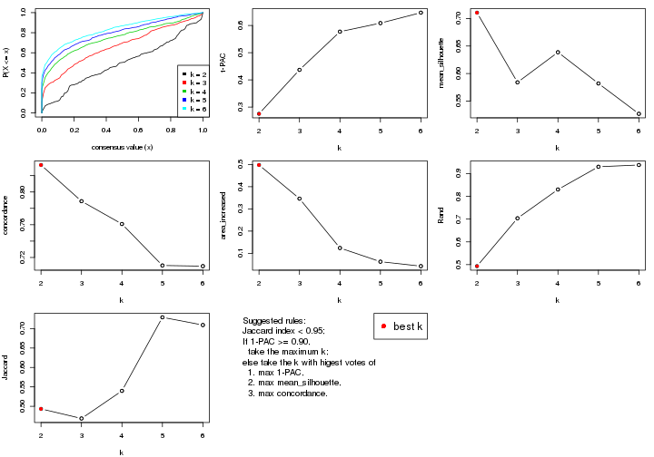
The numeric values for all these statistics can be obtained by get_stats().
get_stats(res)
#> k 1-PAC mean_silhouette concordance area_increased Rand Jaccard
#> 2 2 0.275 0.711 0.833 0.4976 0.493 0.493
#> 3 3 0.437 0.584 0.789 0.3462 0.704 0.469
#> 4 4 0.577 0.639 0.761 0.1239 0.830 0.540
#> 5 5 0.609 0.582 0.710 0.0623 0.930 0.729
#> 6 6 0.647 0.527 0.709 0.0422 0.938 0.709
suggest_best_k() suggests the best \(k\) based on these statistics. The rules are as follows:
NA.suggest_best_k(res)
#> [1] 2
Following shows the table of the partitions (You need to click the show/hide
code output link to see it). The membership matrix (columns with name p*)
is inferred by
clue::cl_consensus()
function with the SE method. Basically the value in the membership matrix
represents the probability to belong to a certain group. The finall class
label for an item is determined with the group with highest probability it
belongs to.
In get_classes() function, the entropy is calculated from the membership
matrix and the silhouette score is calculated from the consensus matrix.
cbind(get_classes(res, k = 2), get_membership(res, k = 2))
#> class entropy silhouette p1 p2
#> GSM710828 2 0.6343 0.74933 0.160 0.840
#> GSM710829 2 0.0672 0.77232 0.008 0.992
#> GSM710839 2 0.6343 0.74933 0.160 0.840
#> GSM710841 2 0.5178 0.73294 0.116 0.884
#> GSM710843 2 0.5737 0.75729 0.136 0.864
#> GSM710845 2 0.9977 0.23821 0.472 0.528
#> GSM710846 2 0.0000 0.77170 0.000 1.000
#> GSM710849 2 0.5059 0.73550 0.112 0.888
#> GSM710853 2 0.0000 0.77170 0.000 1.000
#> GSM710855 2 0.5946 0.70588 0.144 0.856
#> GSM710858 2 0.0376 0.77022 0.004 0.996
#> GSM710860 2 0.6343 0.74933 0.160 0.840
#> GSM710801 2 0.1633 0.77419 0.024 0.976
#> GSM710813 2 0.1184 0.77223 0.016 0.984
#> GSM710814 2 0.6343 0.74933 0.160 0.840
#> GSM710815 2 0.5737 0.75729 0.136 0.864
#> GSM710816 2 0.6343 0.74933 0.160 0.840
#> GSM710817 2 0.9608 0.36186 0.384 0.616
#> GSM710818 2 0.8327 0.66539 0.264 0.736
#> GSM710819 2 0.9977 0.00281 0.472 0.528
#> GSM710820 2 0.0000 0.77170 0.000 1.000
#> GSM710830 1 0.0376 0.86620 0.996 0.004
#> GSM710831 2 0.8861 0.51605 0.304 0.696
#> GSM710832 1 0.0376 0.86620 0.996 0.004
#> GSM710833 2 0.9977 0.00281 0.472 0.528
#> GSM710834 1 0.8081 0.54430 0.752 0.248
#> GSM710835 1 0.8443 0.65197 0.728 0.272
#> GSM710836 1 0.6801 0.77723 0.820 0.180
#> GSM710837 1 0.5842 0.80021 0.860 0.140
#> GSM710862 1 0.4431 0.80078 0.908 0.092
#> GSM710863 1 0.0376 0.86620 0.996 0.004
#> GSM710865 1 0.0376 0.86620 0.996 0.004
#> GSM710867 1 0.4815 0.82541 0.896 0.104
#> GSM710869 1 0.6438 0.80225 0.836 0.164
#> GSM710871 1 0.0376 0.86620 0.996 0.004
#> GSM710873 1 0.6343 0.78259 0.840 0.160
#> GSM710802 1 0.0376 0.86620 0.996 0.004
#> GSM710803 1 0.0376 0.86620 0.996 0.004
#> GSM710804 2 0.9815 0.26240 0.420 0.580
#> GSM710805 2 0.6148 0.70527 0.152 0.848
#> GSM710806 1 0.7376 0.75174 0.792 0.208
#> GSM710807 1 0.5842 0.80021 0.860 0.140
#> GSM710808 1 0.0376 0.86620 0.996 0.004
#> GSM710809 1 0.7674 0.72127 0.776 0.224
#> GSM710810 1 0.2603 0.84387 0.956 0.044
#> GSM710811 1 0.0376 0.86620 0.996 0.004
#> GSM710812 1 0.0376 0.86620 0.996 0.004
#> GSM710821 1 0.1184 0.86004 0.984 0.016
#> GSM710822 1 0.4815 0.82541 0.896 0.104
#> GSM710823 1 0.7815 0.62208 0.768 0.232
#> GSM710824 1 0.9635 0.21063 0.612 0.388
#> GSM710825 1 0.4939 0.77086 0.892 0.108
#> GSM710826 1 0.0376 0.86620 0.996 0.004
#> GSM710827 1 0.0376 0.86620 0.996 0.004
cbind(get_classes(res, k = 3), get_membership(res, k = 3))
#> class entropy silhouette p1 p2 p3
#> GSM710828 2 0.0848 0.690 0.008 0.984 0.008
#> GSM710829 2 0.5948 0.585 0.000 0.640 0.360
#> GSM710839 2 0.0424 0.693 0.008 0.992 0.000
#> GSM710841 2 0.6899 0.562 0.024 0.612 0.364
#> GSM710843 2 0.1015 0.692 0.008 0.980 0.012
#> GSM710845 2 0.8938 0.104 0.328 0.528 0.144
#> GSM710846 2 0.5138 0.650 0.000 0.748 0.252
#> GSM710849 2 0.5988 0.581 0.000 0.632 0.368
#> GSM710853 2 0.5733 0.617 0.000 0.676 0.324
#> GSM710855 3 0.5201 0.335 0.004 0.236 0.760
#> GSM710858 2 0.5706 0.617 0.000 0.680 0.320
#> GSM710860 2 0.0424 0.693 0.008 0.992 0.000
#> GSM710801 2 0.4172 0.676 0.004 0.840 0.156
#> GSM710813 2 0.6869 0.461 0.016 0.560 0.424
#> GSM710814 2 0.0424 0.693 0.008 0.992 0.000
#> GSM710815 2 0.1647 0.693 0.004 0.960 0.036
#> GSM710816 2 0.4514 0.583 0.012 0.832 0.156
#> GSM710817 3 0.4475 0.639 0.144 0.016 0.840
#> GSM710818 2 0.4068 0.615 0.120 0.864 0.016
#> GSM710819 3 0.6324 0.665 0.160 0.076 0.764
#> GSM710820 2 0.5760 0.614 0.000 0.672 0.328
#> GSM710830 1 0.0661 0.814 0.988 0.008 0.004
#> GSM710831 3 0.2918 0.623 0.044 0.032 0.924
#> GSM710832 1 0.0237 0.811 0.996 0.000 0.004
#> GSM710833 3 0.6122 0.669 0.152 0.072 0.776
#> GSM710834 2 0.9152 -0.203 0.428 0.428 0.144
#> GSM710835 3 0.5024 0.650 0.220 0.004 0.776
#> GSM710836 3 0.5778 0.666 0.200 0.032 0.768
#> GSM710837 1 0.6309 -0.448 0.500 0.000 0.500
#> GSM710862 1 0.7899 0.599 0.664 0.192 0.144
#> GSM710863 1 0.2063 0.808 0.948 0.008 0.044
#> GSM710865 1 0.2356 0.795 0.928 0.000 0.072
#> GSM710867 1 0.0592 0.806 0.988 0.000 0.012
#> GSM710869 3 0.7158 0.451 0.372 0.032 0.596
#> GSM710871 1 0.0424 0.809 0.992 0.000 0.008
#> GSM710873 3 0.5443 0.662 0.260 0.004 0.736
#> GSM710802 1 0.8022 0.577 0.656 0.184 0.160
#> GSM710803 1 0.0424 0.815 0.992 0.008 0.000
#> GSM710804 3 0.4602 0.637 0.152 0.016 0.832
#> GSM710805 3 0.6410 -0.219 0.004 0.420 0.576
#> GSM710806 1 0.3983 0.666 0.852 0.004 0.144
#> GSM710807 3 0.6307 0.401 0.488 0.000 0.512
#> GSM710808 1 0.0747 0.815 0.984 0.016 0.000
#> GSM710809 3 0.3573 0.681 0.120 0.004 0.876
#> GSM710810 1 0.7899 0.599 0.664 0.192 0.144
#> GSM710811 1 0.0000 0.813 1.000 0.000 0.000
#> GSM710812 1 0.2448 0.792 0.924 0.000 0.076
#> GSM710821 1 0.4489 0.757 0.856 0.108 0.036
#> GSM710822 3 0.6295 0.365 0.472 0.000 0.528
#> GSM710823 3 0.8285 0.495 0.288 0.112 0.600
#> GSM710824 2 0.9315 0.180 0.260 0.520 0.220
#> GSM710825 1 0.8109 0.565 0.628 0.256 0.116
#> GSM710826 1 0.0661 0.814 0.988 0.008 0.004
#> GSM710827 1 0.1711 0.811 0.960 0.008 0.032
cbind(get_classes(res, k = 4), get_membership(res, k = 4))
#> class entropy silhouette p1 p2 p3 p4
#> GSM710828 4 0.2466 0.720 0.000 0.096 0.004 0.900
#> GSM710829 2 0.3105 0.611 0.000 0.856 0.004 0.140
#> GSM710839 4 0.3831 0.679 0.000 0.204 0.004 0.792
#> GSM710841 2 0.3567 0.635 0.004 0.868 0.052 0.076
#> GSM710843 4 0.3217 0.716 0.000 0.128 0.012 0.860
#> GSM710845 4 0.3754 0.661 0.092 0.004 0.048 0.856
#> GSM710846 2 0.4456 0.489 0.000 0.716 0.004 0.280
#> GSM710849 2 0.1867 0.631 0.000 0.928 0.000 0.072
#> GSM710853 2 0.3907 0.542 0.000 0.768 0.000 0.232
#> GSM710855 3 0.6186 0.322 0.000 0.352 0.584 0.064
#> GSM710858 2 0.4019 0.573 0.000 0.792 0.012 0.196
#> GSM710860 4 0.3751 0.684 0.000 0.196 0.004 0.800
#> GSM710801 4 0.5000 0.141 0.000 0.496 0.000 0.504
#> GSM710813 2 0.6722 0.476 0.004 0.604 0.116 0.276
#> GSM710814 4 0.3831 0.679 0.000 0.204 0.004 0.792
#> GSM710815 4 0.4155 0.643 0.000 0.240 0.004 0.756
#> GSM710816 4 0.2563 0.689 0.000 0.020 0.072 0.908
#> GSM710817 2 0.5244 0.330 0.012 0.600 0.388 0.000
#> GSM710818 4 0.3031 0.720 0.016 0.072 0.016 0.896
#> GSM710819 3 0.3564 0.770 0.012 0.016 0.860 0.112
#> GSM710820 2 0.3688 0.566 0.000 0.792 0.000 0.208
#> GSM710830 1 0.2131 0.835 0.932 0.032 0.036 0.000
#> GSM710831 2 0.5392 0.308 0.008 0.564 0.424 0.004
#> GSM710832 1 0.2131 0.836 0.932 0.032 0.036 0.000
#> GSM710833 3 0.3444 0.773 0.012 0.016 0.868 0.104
#> GSM710834 4 0.5281 0.551 0.220 0.004 0.048 0.728
#> GSM710835 2 0.6031 0.272 0.048 0.564 0.388 0.000
#> GSM710836 3 0.4215 0.774 0.080 0.012 0.840 0.068
#> GSM710837 3 0.5160 0.703 0.180 0.072 0.748 0.000
#> GSM710862 1 0.6439 0.434 0.576 0.000 0.084 0.340
#> GSM710863 1 0.1182 0.837 0.968 0.000 0.016 0.016
#> GSM710865 1 0.2313 0.825 0.924 0.000 0.044 0.032
#> GSM710867 1 0.3052 0.827 0.896 0.032 0.064 0.008
#> GSM710869 3 0.5050 0.747 0.132 0.004 0.776 0.088
#> GSM710871 1 0.2555 0.839 0.920 0.032 0.040 0.008
#> GSM710873 3 0.2123 0.776 0.028 0.032 0.936 0.004
#> GSM710802 4 0.7439 0.335 0.252 0.016 0.164 0.568
#> GSM710803 1 0.1936 0.838 0.940 0.032 0.028 0.000
#> GSM710804 2 0.5558 0.397 0.036 0.640 0.324 0.000
#> GSM710805 2 0.7942 0.423 0.044 0.560 0.176 0.220
#> GSM710806 1 0.6214 0.211 0.536 0.408 0.056 0.000
#> GSM710807 3 0.4753 0.732 0.128 0.084 0.788 0.000
#> GSM710808 1 0.0188 0.842 0.996 0.000 0.000 0.004
#> GSM710809 3 0.3780 0.683 0.016 0.148 0.832 0.004
#> GSM710810 1 0.6265 0.444 0.588 0.000 0.072 0.340
#> GSM710811 1 0.2317 0.840 0.928 0.032 0.036 0.004
#> GSM710812 1 0.2124 0.828 0.932 0.000 0.040 0.028
#> GSM710821 1 0.2473 0.812 0.908 0.000 0.012 0.080
#> GSM710822 3 0.3606 0.773 0.140 0.020 0.840 0.000
#> GSM710823 3 0.5189 0.773 0.076 0.020 0.784 0.120
#> GSM710824 4 0.4363 0.641 0.052 0.004 0.128 0.816
#> GSM710825 1 0.5052 0.627 0.720 0.000 0.036 0.244
#> GSM710826 1 0.1833 0.840 0.944 0.032 0.024 0.000
#> GSM710827 1 0.0592 0.839 0.984 0.000 0.016 0.000
cbind(get_classes(res, k = 5), get_membership(res, k = 5))
#> class entropy silhouette p1 p2 p3 p4 p5
#> GSM710828 4 0.495 0.6825 0.004 0.204 0.008 0.720 0.064
#> GSM710829 2 0.284 0.6062 0.000 0.848 0.008 0.000 0.144
#> GSM710839 4 0.427 0.6183 0.000 0.320 0.000 0.668 0.012
#> GSM710841 2 0.462 0.2732 0.000 0.636 0.016 0.004 0.344
#> GSM710843 4 0.455 0.7021 0.000 0.152 0.028 0.772 0.048
#> GSM710845 4 0.215 0.6817 0.028 0.004 0.004 0.924 0.040
#> GSM710846 2 0.293 0.5787 0.000 0.832 0.000 0.164 0.004
#> GSM710849 2 0.324 0.5197 0.000 0.784 0.000 0.000 0.216
#> GSM710853 2 0.136 0.6603 0.000 0.952 0.000 0.036 0.012
#> GSM710855 2 0.566 -0.0943 0.000 0.468 0.468 0.008 0.056
#> GSM710858 2 0.152 0.6607 0.000 0.944 0.000 0.012 0.044
#> GSM710860 4 0.423 0.6261 0.000 0.312 0.000 0.676 0.012
#> GSM710801 2 0.304 0.4879 0.000 0.808 0.000 0.192 0.000
#> GSM710813 2 0.776 0.2373 0.000 0.460 0.096 0.244 0.200
#> GSM710814 4 0.427 0.6183 0.000 0.320 0.000 0.668 0.012
#> GSM710815 4 0.440 0.6298 0.000 0.296 0.004 0.684 0.016
#> GSM710816 4 0.291 0.7046 0.000 0.068 0.032 0.884 0.016
#> GSM710817 5 0.581 0.6580 0.000 0.208 0.180 0.000 0.612
#> GSM710818 4 0.607 0.6713 0.052 0.140 0.024 0.700 0.084
#> GSM710819 3 0.234 0.6714 0.000 0.000 0.904 0.064 0.032
#> GSM710820 2 0.120 0.6620 0.000 0.952 0.000 0.000 0.048
#> GSM710830 1 0.372 0.7323 0.784 0.000 0.004 0.016 0.196
#> GSM710831 5 0.608 0.6340 0.000 0.204 0.224 0.000 0.572
#> GSM710832 1 0.358 0.7351 0.792 0.000 0.004 0.012 0.192
#> GSM710833 3 0.164 0.6774 0.000 0.000 0.932 0.064 0.004
#> GSM710834 4 0.467 0.5955 0.140 0.004 0.020 0.772 0.064
#> GSM710835 5 0.568 0.6358 0.008 0.160 0.176 0.000 0.656
#> GSM710836 3 0.305 0.6507 0.060 0.000 0.880 0.032 0.028
#> GSM710837 3 0.628 0.4715 0.172 0.000 0.508 0.000 0.320
#> GSM710862 1 0.742 0.3622 0.508 0.000 0.120 0.260 0.112
#> GSM710863 1 0.252 0.7344 0.908 0.000 0.036 0.036 0.020
#> GSM710865 1 0.344 0.7167 0.860 0.000 0.064 0.036 0.040
#> GSM710867 1 0.400 0.7259 0.768 0.000 0.020 0.008 0.204
#> GSM710869 3 0.441 0.6149 0.144 0.000 0.784 0.036 0.036
#> GSM710871 1 0.366 0.7392 0.800 0.000 0.016 0.008 0.176
#> GSM710873 3 0.276 0.6620 0.000 0.000 0.872 0.024 0.104
#> GSM710802 4 0.678 0.4389 0.156 0.000 0.144 0.608 0.092
#> GSM710803 1 0.361 0.7362 0.796 0.000 0.004 0.016 0.184
#> GSM710804 5 0.531 0.6131 0.000 0.256 0.096 0.000 0.648
#> GSM710805 5 0.874 0.4004 0.048 0.228 0.212 0.100 0.412
#> GSM710806 5 0.572 -0.0103 0.388 0.076 0.004 0.000 0.532
#> GSM710807 3 0.569 0.5235 0.092 0.000 0.552 0.000 0.356
#> GSM710808 1 0.263 0.7492 0.888 0.000 0.000 0.040 0.072
#> GSM710809 3 0.442 0.0532 0.000 0.004 0.548 0.000 0.448
#> GSM710810 1 0.734 0.3724 0.512 0.000 0.112 0.268 0.108
#> GSM710811 1 0.352 0.7417 0.808 0.000 0.012 0.008 0.172
#> GSM710812 1 0.321 0.7233 0.872 0.000 0.060 0.040 0.028
#> GSM710821 1 0.450 0.6741 0.788 0.000 0.032 0.116 0.064
#> GSM710822 3 0.505 0.6622 0.108 0.000 0.720 0.008 0.164
#> GSM710823 3 0.544 0.6669 0.112 0.000 0.712 0.032 0.144
#> GSM710824 4 0.468 0.6191 0.044 0.004 0.128 0.780 0.044
#> GSM710825 1 0.660 0.4343 0.568 0.000 0.052 0.280 0.100
#> GSM710826 1 0.358 0.7361 0.792 0.000 0.004 0.012 0.192
#> GSM710827 1 0.339 0.7469 0.856 0.000 0.036 0.020 0.088
cbind(get_classes(res, k = 6), get_membership(res, k = 6))
#> class entropy silhouette p1 p2 p3 p4 p5 p6
#> GSM710828 4 0.5159 0.618 0.000 0.160 0.008 0.704 0.084 0.044
#> GSM710829 2 0.3519 0.605 0.000 0.800 0.008 0.008 0.020 0.164
#> GSM710839 4 0.3273 0.619 0.000 0.212 0.000 0.776 0.008 0.004
#> GSM710841 2 0.5124 0.277 0.000 0.576 0.016 0.016 0.028 0.364
#> GSM710843 4 0.5641 0.630 0.000 0.092 0.060 0.704 0.088 0.056
#> GSM710845 4 0.3611 0.648 0.000 0.000 0.020 0.788 0.172 0.020
#> GSM710846 2 0.3301 0.549 0.000 0.772 0.000 0.216 0.008 0.004
#> GSM710849 2 0.3386 0.576 0.000 0.788 0.000 0.008 0.016 0.188
#> GSM710853 2 0.1577 0.670 0.000 0.940 0.000 0.036 0.016 0.008
#> GSM710855 2 0.5867 -0.032 0.000 0.460 0.424 0.000 0.060 0.056
#> GSM710858 2 0.2038 0.668 0.000 0.920 0.000 0.032 0.020 0.028
#> GSM710860 4 0.3273 0.619 0.000 0.212 0.000 0.776 0.008 0.004
#> GSM710801 2 0.2191 0.630 0.000 0.876 0.000 0.120 0.000 0.004
#> GSM710813 2 0.7912 0.152 0.000 0.372 0.096 0.228 0.044 0.260
#> GSM710814 4 0.3535 0.613 0.000 0.220 0.000 0.760 0.012 0.008
#> GSM710815 4 0.4541 0.631 0.000 0.156 0.016 0.752 0.052 0.024
#> GSM710816 4 0.3428 0.676 0.000 0.028 0.028 0.848 0.076 0.020
#> GSM710817 6 0.3381 0.736 0.012 0.092 0.056 0.000 0.004 0.836
#> GSM710818 4 0.6328 0.517 0.016 0.088 0.008 0.576 0.264 0.048
#> GSM710819 3 0.1700 0.596 0.000 0.000 0.928 0.000 0.048 0.024
#> GSM710820 2 0.1483 0.672 0.000 0.944 0.000 0.008 0.012 0.036
#> GSM710830 1 0.1116 0.703 0.960 0.000 0.000 0.004 0.028 0.008
#> GSM710831 6 0.3418 0.731 0.000 0.092 0.084 0.000 0.004 0.820
#> GSM710832 1 0.0870 0.707 0.972 0.000 0.004 0.000 0.012 0.012
#> GSM710833 3 0.0922 0.615 0.000 0.000 0.968 0.004 0.004 0.024
#> GSM710834 4 0.4885 0.450 0.000 0.000 0.024 0.576 0.372 0.028
#> GSM710835 6 0.4144 0.705 0.056 0.080 0.044 0.000 0.016 0.804
#> GSM710836 3 0.3900 0.585 0.008 0.000 0.764 0.000 0.180 0.048
#> GSM710837 3 0.7077 0.397 0.328 0.000 0.380 0.000 0.084 0.208
#> GSM710862 5 0.5791 0.639 0.128 0.000 0.036 0.124 0.672 0.040
#> GSM710863 1 0.4381 -0.351 0.524 0.000 0.004 0.000 0.456 0.016
#> GSM710865 5 0.4617 0.388 0.428 0.000 0.012 0.000 0.540 0.020
#> GSM710867 1 0.2068 0.692 0.916 0.000 0.020 0.000 0.048 0.016
#> GSM710869 3 0.4129 0.571 0.028 0.000 0.732 0.000 0.220 0.020
#> GSM710871 1 0.2467 0.682 0.884 0.000 0.012 0.000 0.088 0.016
#> GSM710873 3 0.3352 0.561 0.004 0.000 0.820 0.000 0.056 0.120
#> GSM710802 4 0.7066 0.425 0.040 0.000 0.128 0.492 0.280 0.060
#> GSM710803 1 0.0260 0.711 0.992 0.000 0.000 0.000 0.008 0.000
#> GSM710804 6 0.4434 0.680 0.060 0.132 0.024 0.000 0.016 0.768
#> GSM710805 6 0.7655 0.307 0.000 0.212 0.156 0.016 0.200 0.416
#> GSM710806 1 0.4854 0.400 0.664 0.032 0.000 0.000 0.044 0.260
#> GSM710807 3 0.6921 0.416 0.204 0.000 0.420 0.000 0.072 0.304
#> GSM710808 1 0.4510 -0.128 0.556 0.000 0.000 0.020 0.416 0.008
#> GSM710809 6 0.4123 0.261 0.000 0.000 0.420 0.000 0.012 0.568
#> GSM710810 5 0.5108 0.653 0.128 0.000 0.032 0.124 0.708 0.008
#> GSM710811 1 0.2269 0.686 0.896 0.000 0.012 0.000 0.080 0.012
#> GSM710812 5 0.4566 0.352 0.452 0.000 0.012 0.000 0.520 0.016
#> GSM710821 5 0.4743 0.531 0.348 0.000 0.000 0.044 0.600 0.008
#> GSM710822 3 0.6293 0.566 0.108 0.000 0.576 0.000 0.112 0.204
#> GSM710823 3 0.6457 0.564 0.088 0.000 0.588 0.016 0.112 0.196
#> GSM710824 4 0.5277 0.549 0.000 0.000 0.120 0.636 0.228 0.016
#> GSM710825 5 0.4720 0.651 0.176 0.000 0.000 0.128 0.692 0.004
#> GSM710826 1 0.1194 0.702 0.956 0.000 0.000 0.004 0.032 0.008
#> GSM710827 1 0.3673 0.372 0.736 0.000 0.004 0.000 0.244 0.016
Heatmaps for the consensus matrix. It visualizes the probability of two samples to be in a same group.
consensus_heatmap(res, k = 2)
consensus_heatmap(res, k = 3)
consensus_heatmap(res, k = 4)
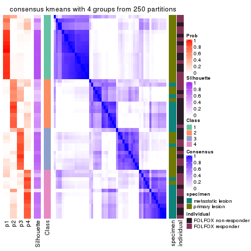
consensus_heatmap(res, k = 5)
consensus_heatmap(res, k = 6)
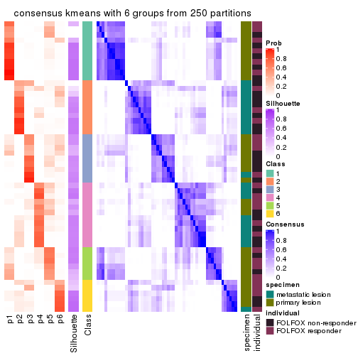
Heatmaps for the membership of samples in all partitions to see how consistent they are:
membership_heatmap(res, k = 2)
membership_heatmap(res, k = 3)
membership_heatmap(res, k = 4)
membership_heatmap(res, k = 5)
membership_heatmap(res, k = 6)
As soon as we have had the classes for columns, we can look for signatures which are significantly different between classes which can be candidate marks for certain classes. Following are the heatmaps for signatures.
Signature heatmaps where rows are scaled:
get_signatures(res, k = 2)
get_signatures(res, k = 3)
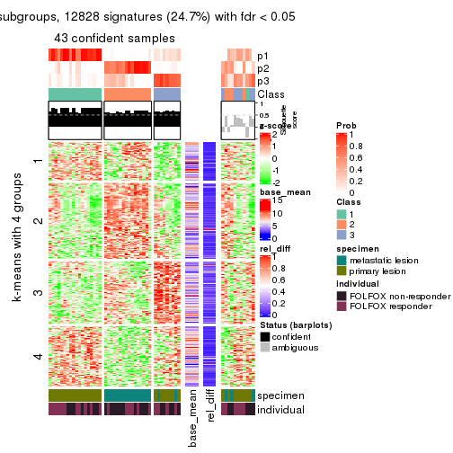
get_signatures(res, k = 4)
get_signatures(res, k = 5)
get_signatures(res, k = 6)
Signature heatmaps where rows are not scaled:
get_signatures(res, k = 2, scale_rows = FALSE)
get_signatures(res, k = 3, scale_rows = FALSE)

get_signatures(res, k = 4, scale_rows = FALSE)
get_signatures(res, k = 5, scale_rows = FALSE)
get_signatures(res, k = 6, scale_rows = FALSE)
Compare the overlap of signatures from different k:
compare_signatures(res)
get_signature() returns a data frame invisibly. TO get the list of signatures, the function
call should be assigned to a variable explicitly. In following code, if plot argument is set
to FALSE, no heatmap is plotted while only the differential analysis is performed.
# code only for demonstration
tb = get_signature(res, k = ..., plot = FALSE)
An example of the output of tb is:
#> which_row fdr mean_1 mean_2 scaled_mean_1 scaled_mean_2 km
#> 1 38 0.042760348 8.373488 9.131774 -0.5533452 0.5164555 1
#> 2 40 0.018707592 7.106213 8.469186 -0.6173731 0.5762149 1
#> 3 55 0.019134737 10.221463 11.207825 -0.6159697 0.5749050 1
#> 4 59 0.006059896 5.921854 7.869574 -0.6899429 0.6439467 1
#> 5 60 0.018055526 8.928898 10.211722 -0.6204761 0.5791110 1
#> 6 98 0.009384629 15.714769 14.887706 0.6635654 -0.6193277 2
...
The columns in tb are:
which_row: row indices corresponding to the input matrix.fdr: FDR for the differential test. mean_x: The mean value in group x.scaled_mean_x: The mean value in group x after rows are scaled.km: Row groups if k-means clustering is applied to rows.UMAP plot which shows how samples are separated.
dimension_reduction(res, k = 2, method = "UMAP")
dimension_reduction(res, k = 3, method = "UMAP")
dimension_reduction(res, k = 4, method = "UMAP")
dimension_reduction(res, k = 5, method = "UMAP")
dimension_reduction(res, k = 6, method = "UMAP")

Following heatmap shows how subgroups are split when increasing k:
collect_classes(res)
Test correlation between subgroups and known annotations. If the known annotation is numeric, one-way ANOVA test is applied, and if the known annotation is discrete, chi-squared contingency table test is applied.
test_to_known_factors(res)
#> n specimen(p) individual(p) k
#> SD:kmeans 48 1.47e-09 0.526 2
#> SD:kmeans 43 1.12e-08 0.372 3
#> SD:kmeans 41 1.17e-06 0.417 4
#> SD:kmeans 42 1.00e-05 0.649 5
#> SD:kmeans 39 2.41e-05 0.798 6
If matrix rows can be associated to genes, consider to use GO_Enrichment(res,
...) to perform function enrichment for the signature genes.
The object with results only for a single top-value method and a single partition method can be extracted as:
res = res_list["SD", "skmeans"]
# you can also extract it by
# res = res_list["SD:skmeans"]
A summary of res and all the functions that can be applied to it:
res
#> A 'ConsensusPartition' object with k = 2, 3, 4, 5, 6.
#> On a matrix with 51941 rows and 54 columns.
#> Top rows (1000, 2000, 3000, 4000, 5000) are extracted by 'SD' method.
#> Subgroups are detected by 'skmeans' method.
#> Performed in total 1250 partitions by row resampling.
#> Best k for subgroups seems to be 2.
#>
#> Following methods can be applied to this 'ConsensusPartition' object:
#> [1] "cola_report" "collect_classes" "collect_plots"
#> [4] "collect_stats" "colnames" "compare_signatures"
#> [7] "consensus_heatmap" "dimension_reduction" "functional_enrichment"
#> [10] "get_anno_col" "get_anno" "get_classes"
#> [13] "get_consensus" "get_matrix" "get_membership"
#> [16] "get_param" "get_signatures" "get_stats"
#> [19] "is_best_k" "is_stable_k" "membership_heatmap"
#> [22] "ncol" "nrow" "plot_ecdf"
#> [25] "rownames" "select_partition_number" "show"
#> [28] "suggest_best_k" "test_to_known_factors"
collect_plots() function collects all the plots made from res for all k (number of partitions)
into one single page to provide an easy and fast comparison between different k.
collect_plots(res)
The plots are:
k and the heatmap of
predicted classes for each k.k.k.k.All the plots in panels can be made by individual functions and they are plotted later in this section.
select_partition_number() produces several plots showing different
statistics for choosing “optimized” k. There are following statistics:
k;k, the area increased is defined as \(A_k - A_{k-1}\).The detailed explanations of these statistics can be found in the cola vignette.
Generally speaking, lower PAC score, higher mean silhouette score or higher
concordance corresponds to better partition. Rand index and Jaccard index
measure how similar the current partition is compared to partition with k-1.
If they are too similar, we won't accept k is better than k-1.
select_partition_number(res)
The numeric values for all these statistics can be obtained by get_stats().
get_stats(res)
#> k 1-PAC mean_silhouette concordance area_increased Rand Jaccard
#> 2 2 0.623 0.822 0.928 0.5081 0.491 0.491
#> 3 3 0.587 0.800 0.869 0.3292 0.759 0.544
#> 4 4 0.636 0.623 0.805 0.1226 0.859 0.601
#> 5 5 0.602 0.517 0.716 0.0615 0.925 0.715
#> 6 6 0.628 0.459 0.667 0.0396 0.921 0.660
suggest_best_k() suggests the best \(k\) based on these statistics. The rules are as follows:
NA.suggest_best_k(res)
#> [1] 2
Following shows the table of the partitions (You need to click the show/hide
code output link to see it). The membership matrix (columns with name p*)
is inferred by
clue::cl_consensus()
function with the SE method. Basically the value in the membership matrix
represents the probability to belong to a certain group. The finall class
label for an item is determined with the group with highest probability it
belongs to.
In get_classes() function, the entropy is calculated from the membership
matrix and the silhouette score is calculated from the consensus matrix.
cbind(get_classes(res, k = 2), get_membership(res, k = 2))
#> class entropy silhouette p1 p2
#> GSM710828 2 0.0000 0.9017 0.000 1.000
#> GSM710829 2 0.0000 0.9017 0.000 1.000
#> GSM710839 2 0.0000 0.9017 0.000 1.000
#> GSM710841 2 0.2236 0.8826 0.036 0.964
#> GSM710843 2 0.0000 0.9017 0.000 1.000
#> GSM710845 2 0.6801 0.7527 0.180 0.820
#> GSM710846 2 0.0000 0.9017 0.000 1.000
#> GSM710849 2 0.2236 0.8826 0.036 0.964
#> GSM710853 2 0.0000 0.9017 0.000 1.000
#> GSM710855 2 0.5519 0.8054 0.128 0.872
#> GSM710858 2 0.0000 0.9017 0.000 1.000
#> GSM710860 2 0.0000 0.9017 0.000 1.000
#> GSM710801 2 0.0000 0.9017 0.000 1.000
#> GSM710813 2 0.0000 0.9017 0.000 1.000
#> GSM710814 2 0.0000 0.9017 0.000 1.000
#> GSM710815 2 0.0000 0.9017 0.000 1.000
#> GSM710816 2 0.0000 0.9017 0.000 1.000
#> GSM710817 2 0.7219 0.7227 0.200 0.800
#> GSM710818 2 0.7219 0.7233 0.200 0.800
#> GSM710819 2 0.9996 0.0391 0.488 0.512
#> GSM710820 2 0.0000 0.9017 0.000 1.000
#> GSM710830 1 0.0000 0.9260 1.000 0.000
#> GSM710831 2 0.0672 0.8982 0.008 0.992
#> GSM710832 1 0.0000 0.9260 1.000 0.000
#> GSM710833 2 0.9954 0.1407 0.460 0.540
#> GSM710834 1 0.9996 -0.0316 0.512 0.488
#> GSM710835 1 0.9000 0.5312 0.684 0.316
#> GSM710836 1 0.2043 0.9059 0.968 0.032
#> GSM710837 1 0.0000 0.9260 1.000 0.000
#> GSM710862 1 0.5519 0.8124 0.872 0.128
#> GSM710863 1 0.0000 0.9260 1.000 0.000
#> GSM710865 1 0.0000 0.9260 1.000 0.000
#> GSM710867 1 0.0000 0.9260 1.000 0.000
#> GSM710869 1 0.2778 0.8939 0.952 0.048
#> GSM710871 1 0.0000 0.9260 1.000 0.000
#> GSM710873 1 0.0000 0.9260 1.000 0.000
#> GSM710802 1 0.0000 0.9260 1.000 0.000
#> GSM710803 1 0.0000 0.9260 1.000 0.000
#> GSM710804 2 0.8267 0.6297 0.260 0.740
#> GSM710805 2 0.0000 0.9017 0.000 1.000
#> GSM710806 1 0.7139 0.7204 0.804 0.196
#> GSM710807 1 0.0000 0.9260 1.000 0.000
#> GSM710808 1 0.0000 0.9260 1.000 0.000
#> GSM710809 1 0.7139 0.7310 0.804 0.196
#> GSM710810 1 0.2423 0.9001 0.960 0.040
#> GSM710811 1 0.0000 0.9260 1.000 0.000
#> GSM710812 1 0.0000 0.9260 1.000 0.000
#> GSM710821 1 0.0000 0.9260 1.000 0.000
#> GSM710822 1 0.0000 0.9260 1.000 0.000
#> GSM710823 1 0.8713 0.5495 0.708 0.292
#> GSM710824 2 0.6247 0.7778 0.156 0.844
#> GSM710825 1 0.0000 0.9260 1.000 0.000
#> GSM710826 1 0.0000 0.9260 1.000 0.000
#> GSM710827 1 0.0000 0.9260 1.000 0.000
cbind(get_classes(res, k = 3), get_membership(res, k = 3))
#> class entropy silhouette p1 p2 p3
#> GSM710828 2 0.0424 0.857 0.000 0.992 0.008
#> GSM710829 2 0.3038 0.851 0.000 0.896 0.104
#> GSM710839 2 0.0424 0.857 0.000 0.992 0.008
#> GSM710841 2 0.3267 0.847 0.000 0.884 0.116
#> GSM710843 2 0.0424 0.857 0.000 0.992 0.008
#> GSM710845 2 0.8889 -0.036 0.428 0.452 0.120
#> GSM710846 2 0.2625 0.855 0.000 0.916 0.084
#> GSM710849 2 0.3192 0.849 0.000 0.888 0.112
#> GSM710853 2 0.3038 0.851 0.000 0.896 0.104
#> GSM710855 3 0.5291 0.570 0.000 0.268 0.732
#> GSM710858 2 0.3038 0.851 0.000 0.896 0.104
#> GSM710860 2 0.0424 0.857 0.000 0.992 0.008
#> GSM710801 2 0.2165 0.858 0.000 0.936 0.064
#> GSM710813 2 0.5058 0.767 0.000 0.756 0.244
#> GSM710814 2 0.0424 0.857 0.000 0.992 0.008
#> GSM710815 2 0.0000 0.857 0.000 1.000 0.000
#> GSM710816 2 0.4342 0.779 0.024 0.856 0.120
#> GSM710817 3 0.3607 0.832 0.112 0.008 0.880
#> GSM710818 2 0.3295 0.797 0.096 0.896 0.008
#> GSM710819 3 0.4137 0.848 0.096 0.032 0.872
#> GSM710820 2 0.3038 0.851 0.000 0.896 0.104
#> GSM710830 1 0.1964 0.880 0.944 0.000 0.056
#> GSM710831 3 0.0424 0.839 0.000 0.008 0.992
#> GSM710832 1 0.1964 0.880 0.944 0.000 0.056
#> GSM710833 3 0.3805 0.849 0.092 0.024 0.884
#> GSM710834 1 0.8397 0.506 0.588 0.296 0.116
#> GSM710835 3 0.3340 0.832 0.120 0.000 0.880
#> GSM710836 3 0.3482 0.845 0.128 0.000 0.872
#> GSM710837 3 0.4931 0.786 0.232 0.000 0.768
#> GSM710862 1 0.5780 0.769 0.800 0.080 0.120
#> GSM710863 1 0.0000 0.879 1.000 0.000 0.000
#> GSM710865 1 0.0000 0.879 1.000 0.000 0.000
#> GSM710867 1 0.3412 0.822 0.876 0.000 0.124
#> GSM710869 3 0.4702 0.797 0.212 0.000 0.788
#> GSM710871 1 0.1964 0.880 0.944 0.000 0.056
#> GSM710873 3 0.2356 0.856 0.072 0.000 0.928
#> GSM710802 1 0.7568 0.733 0.680 0.108 0.212
#> GSM710803 1 0.1964 0.880 0.944 0.000 0.056
#> GSM710804 3 0.3682 0.831 0.116 0.008 0.876
#> GSM710805 2 0.7841 0.464 0.056 0.536 0.408
#> GSM710806 1 0.4796 0.754 0.780 0.000 0.220
#> GSM710807 3 0.4842 0.794 0.224 0.000 0.776
#> GSM710808 1 0.3039 0.875 0.920 0.044 0.036
#> GSM710809 3 0.0424 0.844 0.008 0.000 0.992
#> GSM710810 1 0.5863 0.767 0.796 0.084 0.120
#> GSM710811 1 0.1964 0.880 0.944 0.000 0.056
#> GSM710812 1 0.0000 0.879 1.000 0.000 0.000
#> GSM710821 1 0.2261 0.860 0.932 0.068 0.000
#> GSM710822 3 0.5098 0.807 0.248 0.000 0.752
#> GSM710823 3 0.4799 0.840 0.132 0.032 0.836
#> GSM710824 2 0.7885 0.578 0.128 0.660 0.212
#> GSM710825 1 0.3213 0.843 0.900 0.092 0.008
#> GSM710826 1 0.1964 0.880 0.944 0.000 0.056
#> GSM710827 1 0.0000 0.879 1.000 0.000 0.000
cbind(get_classes(res, k = 4), get_membership(res, k = 4))
#> class entropy silhouette p1 p2 p3 p4
#> GSM710828 4 0.4222 0.634 0.000 0.272 0.000 0.728
#> GSM710829 2 0.0779 0.761 0.000 0.980 0.004 0.016
#> GSM710839 4 0.4713 0.574 0.000 0.360 0.000 0.640
#> GSM710841 2 0.1114 0.756 0.008 0.972 0.016 0.004
#> GSM710843 4 0.4585 0.600 0.000 0.332 0.000 0.668
#> GSM710845 4 0.1674 0.623 0.012 0.004 0.032 0.952
#> GSM710846 2 0.2973 0.656 0.000 0.856 0.000 0.144
#> GSM710849 2 0.0657 0.757 0.004 0.984 0.012 0.000
#> GSM710853 2 0.1716 0.740 0.000 0.936 0.000 0.064
#> GSM710855 3 0.5203 0.246 0.000 0.416 0.576 0.008
#> GSM710858 2 0.1118 0.758 0.000 0.964 0.000 0.036
#> GSM710860 4 0.4585 0.600 0.000 0.332 0.000 0.668
#> GSM710801 2 0.4564 0.219 0.000 0.672 0.000 0.328
#> GSM710813 2 0.6690 0.509 0.000 0.620 0.192 0.188
#> GSM710814 4 0.4730 0.571 0.000 0.364 0.000 0.636
#> GSM710815 4 0.4925 0.457 0.000 0.428 0.000 0.572
#> GSM710816 4 0.3453 0.625 0.000 0.052 0.080 0.868
#> GSM710817 3 0.6384 0.198 0.064 0.440 0.496 0.000
#> GSM710818 4 0.5155 0.637 0.016 0.248 0.016 0.720
#> GSM710819 3 0.2216 0.743 0.000 0.000 0.908 0.092
#> GSM710820 2 0.1022 0.759 0.000 0.968 0.000 0.032
#> GSM710830 1 0.0188 0.865 0.996 0.000 0.004 0.000
#> GSM710831 3 0.4941 0.229 0.000 0.436 0.564 0.000
#> GSM710832 1 0.0188 0.865 0.996 0.000 0.004 0.000
#> GSM710833 3 0.2011 0.746 0.000 0.000 0.920 0.080
#> GSM710834 4 0.3051 0.601 0.088 0.000 0.028 0.884
#> GSM710835 3 0.6666 0.268 0.088 0.404 0.508 0.000
#> GSM710836 3 0.3391 0.730 0.004 0.004 0.844 0.148
#> GSM710837 3 0.3444 0.690 0.184 0.000 0.816 0.000
#> GSM710862 4 0.4998 -0.371 0.488 0.000 0.000 0.512
#> GSM710863 1 0.2011 0.853 0.920 0.000 0.000 0.080
#> GSM710865 1 0.2647 0.836 0.880 0.000 0.000 0.120
#> GSM710867 1 0.2281 0.796 0.904 0.000 0.096 0.000
#> GSM710869 3 0.5384 0.665 0.076 0.000 0.728 0.196
#> GSM710871 1 0.0188 0.865 0.996 0.000 0.004 0.000
#> GSM710873 3 0.0376 0.749 0.000 0.004 0.992 0.004
#> GSM710802 4 0.6531 0.469 0.204 0.000 0.160 0.636
#> GSM710803 1 0.0188 0.865 0.996 0.000 0.004 0.000
#> GSM710804 2 0.6404 0.201 0.096 0.608 0.296 0.000
#> GSM710805 2 0.6682 0.412 0.004 0.596 0.104 0.296
#> GSM710806 1 0.5143 0.343 0.628 0.360 0.012 0.000
#> GSM710807 3 0.2593 0.731 0.104 0.004 0.892 0.000
#> GSM710808 1 0.1118 0.863 0.964 0.000 0.000 0.036
#> GSM710809 3 0.1389 0.740 0.000 0.048 0.952 0.000
#> GSM710810 1 0.4998 0.336 0.512 0.000 0.000 0.488
#> GSM710811 1 0.0188 0.865 0.996 0.000 0.004 0.000
#> GSM710812 1 0.2773 0.837 0.880 0.000 0.004 0.116
#> GSM710821 1 0.2973 0.824 0.856 0.000 0.000 0.144
#> GSM710822 3 0.2489 0.750 0.068 0.000 0.912 0.020
#> GSM710823 3 0.2376 0.753 0.016 0.000 0.916 0.068
#> GSM710824 4 0.2520 0.613 0.004 0.004 0.088 0.904
#> GSM710825 1 0.4843 0.509 0.604 0.000 0.000 0.396
#> GSM710826 1 0.0188 0.865 0.996 0.000 0.004 0.000
#> GSM710827 1 0.1792 0.856 0.932 0.000 0.000 0.068
cbind(get_classes(res, k = 5), get_membership(res, k = 5))
#> class entropy silhouette p1 p2 p3 p4 p5
#> GSM710828 4 0.4848 0.6375 0.000 0.144 0.000 0.724 0.132
#> GSM710829 2 0.1671 0.5467 0.000 0.924 0.000 0.076 0.000
#> GSM710839 4 0.3123 0.6234 0.000 0.184 0.000 0.812 0.004
#> GSM710841 2 0.2275 0.5589 0.004 0.912 0.008 0.008 0.068
#> GSM710843 4 0.4973 0.6229 0.000 0.184 0.012 0.724 0.080
#> GSM710845 4 0.4096 0.4947 0.004 0.000 0.020 0.744 0.232
#> GSM710846 2 0.3983 0.3318 0.000 0.660 0.000 0.340 0.000
#> GSM710849 2 0.0960 0.5611 0.004 0.972 0.000 0.008 0.016
#> GSM710853 2 0.3305 0.4653 0.000 0.776 0.000 0.224 0.000
#> GSM710855 3 0.5641 0.1237 0.000 0.432 0.504 0.056 0.008
#> GSM710858 2 0.3074 0.4921 0.000 0.804 0.000 0.196 0.000
#> GSM710860 4 0.3163 0.6401 0.000 0.164 0.000 0.824 0.012
#> GSM710801 2 0.4299 0.1840 0.000 0.608 0.000 0.388 0.004
#> GSM710813 2 0.6974 0.0800 0.000 0.432 0.108 0.408 0.052
#> GSM710814 4 0.3231 0.6169 0.000 0.196 0.000 0.800 0.004
#> GSM710815 4 0.3756 0.5438 0.000 0.248 0.000 0.744 0.008
#> GSM710816 4 0.3352 0.5969 0.000 0.012 0.036 0.852 0.100
#> GSM710817 2 0.7187 0.2467 0.044 0.484 0.292 0.000 0.180
#> GSM710818 4 0.6798 0.5114 0.008 0.128 0.040 0.576 0.248
#> GSM710819 3 0.2654 0.7295 0.000 0.000 0.884 0.084 0.032
#> GSM710820 2 0.2813 0.5076 0.000 0.832 0.000 0.168 0.000
#> GSM710830 1 0.0963 0.7177 0.964 0.000 0.000 0.000 0.036
#> GSM710831 2 0.6420 0.1702 0.000 0.448 0.376 0.000 0.176
#> GSM710832 1 0.0703 0.7231 0.976 0.000 0.000 0.000 0.024
#> GSM710833 3 0.2754 0.7280 0.000 0.000 0.880 0.080 0.040
#> GSM710834 4 0.5858 0.1642 0.080 0.000 0.008 0.536 0.376
#> GSM710835 2 0.7942 0.0609 0.096 0.376 0.332 0.000 0.196
#> GSM710836 3 0.4088 0.6270 0.004 0.000 0.712 0.008 0.276
#> GSM710837 3 0.5557 0.6067 0.252 0.008 0.644 0.000 0.096
#> GSM710862 5 0.5176 0.8599 0.152 0.000 0.012 0.120 0.716
#> GSM710863 1 0.3884 0.5325 0.708 0.000 0.000 0.004 0.288
#> GSM710865 1 0.4201 0.3341 0.592 0.000 0.000 0.000 0.408
#> GSM710867 1 0.2569 0.6868 0.892 0.000 0.040 0.000 0.068
#> GSM710869 3 0.5597 0.5081 0.068 0.000 0.640 0.020 0.272
#> GSM710871 1 0.2193 0.7141 0.900 0.000 0.008 0.000 0.092
#> GSM710873 3 0.2474 0.7257 0.000 0.008 0.896 0.012 0.084
#> GSM710802 4 0.7852 0.0960 0.188 0.000 0.128 0.468 0.216
#> GSM710803 1 0.0703 0.7246 0.976 0.000 0.000 0.000 0.024
#> GSM710804 2 0.7181 0.3387 0.084 0.552 0.192 0.000 0.172
#> GSM710805 2 0.7070 0.2538 0.000 0.452 0.104 0.064 0.380
#> GSM710806 1 0.6206 0.2940 0.592 0.232 0.012 0.000 0.164
#> GSM710807 3 0.4588 0.6818 0.128 0.012 0.768 0.000 0.092
#> GSM710808 1 0.3491 0.6181 0.768 0.000 0.000 0.004 0.228
#> GSM710809 3 0.4696 0.5697 0.000 0.112 0.748 0.004 0.136
#> GSM710810 5 0.4936 0.8711 0.172 0.000 0.000 0.116 0.712
#> GSM710811 1 0.1877 0.7224 0.924 0.000 0.012 0.000 0.064
#> GSM710812 1 0.4558 0.4832 0.652 0.000 0.024 0.000 0.324
#> GSM710821 1 0.5106 -0.0473 0.508 0.000 0.000 0.036 0.456
#> GSM710822 3 0.3723 0.7293 0.080 0.004 0.844 0.020 0.052
#> GSM710823 3 0.4608 0.7141 0.048 0.004 0.792 0.104 0.052
#> GSM710824 4 0.4979 0.4641 0.008 0.000 0.064 0.700 0.228
#> GSM710825 5 0.5365 0.7888 0.228 0.000 0.000 0.116 0.656
#> GSM710826 1 0.1121 0.7205 0.956 0.000 0.000 0.000 0.044
#> GSM710827 1 0.3210 0.6191 0.788 0.000 0.000 0.000 0.212
cbind(get_classes(res, k = 6), get_membership(res, k = 6))
#> class entropy silhouette p1 p2 p3 p4 p5 p6
#> GSM710828 4 0.5567 0.520046 0.000 0.248 0.000 0.588 0.152 0.012
#> GSM710829 2 0.4092 0.604707 0.000 0.768 0.004 0.048 0.016 0.164
#> GSM710839 4 0.4115 0.541097 0.000 0.268 0.004 0.696 0.032 0.000
#> GSM710841 2 0.5112 0.172519 0.008 0.536 0.004 0.016 0.024 0.412
#> GSM710843 4 0.6406 0.483988 0.000 0.244 0.032 0.572 0.112 0.040
#> GSM710845 4 0.4159 0.539304 0.004 0.004 0.028 0.764 0.176 0.024
#> GSM710846 2 0.3705 0.459217 0.000 0.748 0.000 0.224 0.004 0.024
#> GSM710849 2 0.4009 0.469765 0.000 0.676 0.000 0.008 0.012 0.304
#> GSM710853 2 0.1857 0.650047 0.000 0.924 0.000 0.044 0.004 0.028
#> GSM710855 2 0.5447 0.092850 0.000 0.516 0.384 0.000 0.012 0.088
#> GSM710858 2 0.2711 0.649000 0.000 0.872 0.000 0.036 0.008 0.084
#> GSM710860 4 0.4113 0.582415 0.000 0.204 0.004 0.740 0.048 0.004
#> GSM710801 2 0.3571 0.449185 0.000 0.760 0.000 0.216 0.004 0.020
#> GSM710813 4 0.7766 -0.076840 0.000 0.292 0.088 0.324 0.028 0.268
#> GSM710814 4 0.4416 0.519652 0.000 0.288 0.000 0.668 0.032 0.012
#> GSM710815 4 0.4225 0.537302 0.000 0.216 0.000 0.728 0.016 0.040
#> GSM710816 4 0.3158 0.597300 0.000 0.024 0.032 0.868 0.052 0.024
#> GSM710817 6 0.4539 0.704854 0.040 0.096 0.112 0.000 0.000 0.752
#> GSM710818 4 0.7095 0.443627 0.000 0.200 0.064 0.436 0.288 0.012
#> GSM710819 3 0.1096 0.606239 0.000 0.004 0.964 0.008 0.004 0.020
#> GSM710820 2 0.2631 0.647251 0.000 0.856 0.000 0.012 0.004 0.128
#> GSM710830 1 0.0725 0.670526 0.976 0.000 0.000 0.000 0.012 0.012
#> GSM710831 6 0.4174 0.654341 0.000 0.084 0.184 0.000 0.000 0.732
#> GSM710832 1 0.1623 0.659511 0.940 0.000 0.004 0.004 0.032 0.020
#> GSM710833 3 0.1484 0.604509 0.000 0.008 0.944 0.004 0.004 0.040
#> GSM710834 4 0.5906 0.314522 0.052 0.008 0.008 0.544 0.348 0.040
#> GSM710835 6 0.4869 0.660791 0.080 0.064 0.088 0.000 0.016 0.752
#> GSM710836 3 0.4409 0.538125 0.008 0.000 0.744 0.004 0.144 0.100
#> GSM710837 3 0.6932 0.349571 0.316 0.004 0.424 0.004 0.048 0.204
#> GSM710862 5 0.4491 0.590623 0.060 0.004 0.048 0.080 0.788 0.020
#> GSM710863 1 0.4141 -0.011444 0.556 0.000 0.000 0.000 0.432 0.012
#> GSM710865 5 0.5057 0.019895 0.456 0.000 0.036 0.000 0.488 0.020
#> GSM710867 1 0.3610 0.608545 0.824 0.000 0.088 0.000 0.052 0.036
#> GSM710869 3 0.4940 0.461731 0.044 0.000 0.684 0.004 0.228 0.040
#> GSM710871 1 0.2736 0.650836 0.876 0.000 0.028 0.000 0.076 0.020
#> GSM710873 3 0.3178 0.574664 0.004 0.000 0.816 0.004 0.016 0.160
#> GSM710802 4 0.7876 0.218256 0.180 0.000 0.124 0.456 0.172 0.068
#> GSM710803 1 0.0405 0.671258 0.988 0.000 0.000 0.000 0.008 0.004
#> GSM710804 6 0.4543 0.615173 0.080 0.176 0.004 0.000 0.012 0.728
#> GSM710805 6 0.7908 0.339862 0.000 0.196 0.140 0.056 0.168 0.440
#> GSM710806 1 0.5203 0.000707 0.520 0.044 0.000 0.000 0.024 0.412
#> GSM710807 3 0.6820 0.391304 0.144 0.012 0.464 0.004 0.048 0.328
#> GSM710808 1 0.4122 0.317715 0.660 0.000 0.000 0.004 0.316 0.020
#> GSM710809 3 0.4386 0.029700 0.000 0.016 0.516 0.000 0.004 0.464
#> GSM710810 5 0.4548 0.634831 0.116 0.004 0.020 0.076 0.768 0.016
#> GSM710811 1 0.2445 0.656446 0.896 0.000 0.028 0.000 0.056 0.020
#> GSM710812 1 0.5444 -0.140011 0.484 0.000 0.056 0.000 0.432 0.028
#> GSM710821 5 0.4780 0.367776 0.392 0.000 0.000 0.028 0.564 0.016
#> GSM710822 3 0.6402 0.516622 0.092 0.016 0.596 0.004 0.080 0.212
#> GSM710823 3 0.7665 0.450143 0.040 0.044 0.520 0.100 0.084 0.212
#> GSM710824 4 0.5228 0.507135 0.004 0.004 0.076 0.680 0.204 0.032
#> GSM710825 5 0.4290 0.632367 0.168 0.000 0.000 0.076 0.744 0.012
#> GSM710826 1 0.1168 0.666662 0.956 0.000 0.000 0.000 0.028 0.016
#> GSM710827 1 0.3859 0.357052 0.692 0.000 0.000 0.000 0.288 0.020
Heatmaps for the consensus matrix. It visualizes the probability of two samples to be in a same group.
consensus_heatmap(res, k = 2)
consensus_heatmap(res, k = 3)
consensus_heatmap(res, k = 4)
consensus_heatmap(res, k = 5)
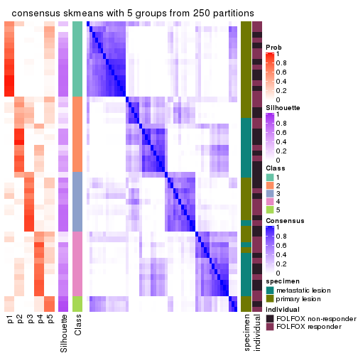
consensus_heatmap(res, k = 6)
Heatmaps for the membership of samples in all partitions to see how consistent they are:
membership_heatmap(res, k = 2)
membership_heatmap(res, k = 3)
membership_heatmap(res, k = 4)
membership_heatmap(res, k = 5)
membership_heatmap(res, k = 6)
As soon as we have had the classes for columns, we can look for signatures which are significantly different between classes which can be candidate marks for certain classes. Following are the heatmaps for signatures.
Signature heatmaps where rows are scaled:
get_signatures(res, k = 2)
get_signatures(res, k = 3)
get_signatures(res, k = 4)
get_signatures(res, k = 5)
get_signatures(res, k = 6)
Signature heatmaps where rows are not scaled:
get_signatures(res, k = 2, scale_rows = FALSE)
get_signatures(res, k = 3, scale_rows = FALSE)
get_signatures(res, k = 4, scale_rows = FALSE)
get_signatures(res, k = 5, scale_rows = FALSE)
get_signatures(res, k = 6, scale_rows = FALSE)
Compare the overlap of signatures from different k:
compare_signatures(res)

get_signature() returns a data frame invisibly. TO get the list of signatures, the function
call should be assigned to a variable explicitly. In following code, if plot argument is set
to FALSE, no heatmap is plotted while only the differential analysis is performed.
# code only for demonstration
tb = get_signature(res, k = ..., plot = FALSE)
An example of the output of tb is:
#> which_row fdr mean_1 mean_2 scaled_mean_1 scaled_mean_2 km
#> 1 38 0.042760348 8.373488 9.131774 -0.5533452 0.5164555 1
#> 2 40 0.018707592 7.106213 8.469186 -0.6173731 0.5762149 1
#> 3 55 0.019134737 10.221463 11.207825 -0.6159697 0.5749050 1
#> 4 59 0.006059896 5.921854 7.869574 -0.6899429 0.6439467 1
#> 5 60 0.018055526 8.928898 10.211722 -0.6204761 0.5791110 1
#> 6 98 0.009384629 15.714769 14.887706 0.6635654 -0.6193277 2
...
The columns in tb are:
which_row: row indices corresponding to the input matrix.fdr: FDR for the differential test. mean_x: The mean value in group x.scaled_mean_x: The mean value in group x after rows are scaled.km: Row groups if k-means clustering is applied to rows.UMAP plot which shows how samples are separated.
dimension_reduction(res, k = 2, method = "UMAP")
dimension_reduction(res, k = 3, method = "UMAP")
dimension_reduction(res, k = 4, method = "UMAP")
dimension_reduction(res, k = 5, method = "UMAP")
dimension_reduction(res, k = 6, method = "UMAP")
Following heatmap shows how subgroups are split when increasing k:
collect_classes(res)
Test correlation between subgroups and known annotations. If the known annotation is numeric, one-way ANOVA test is applied, and if the known annotation is discrete, chi-squared contingency table test is applied.
test_to_known_factors(res)
#> n specimen(p) individual(p) k
#> SD:skmeans 51 6.76e-09 0.680 2
#> SD:skmeans 52 5.98e-09 0.683 3
#> SD:skmeans 42 6.28e-07 0.508 4
#> SD:skmeans 35 2.86e-06 0.860 5
#> SD:skmeans 31 7.96e-04 0.924 6
If matrix rows can be associated to genes, consider to use GO_Enrichment(res,
...) to perform function enrichment for the signature genes.
The object with results only for a single top-value method and a single partition method can be extracted as:
res = res_list["SD", "pam"]
# you can also extract it by
# res = res_list["SD:pam"]
A summary of res and all the functions that can be applied to it:
res
#> A 'ConsensusPartition' object with k = 2, 3, 4, 5, 6.
#> On a matrix with 51941 rows and 54 columns.
#> Top rows (1000, 2000, 3000, 4000, 5000) are extracted by 'SD' method.
#> Subgroups are detected by 'pam' method.
#> Performed in total 1250 partitions by row resampling.
#> Best k for subgroups seems to be 2.
#>
#> Following methods can be applied to this 'ConsensusPartition' object:
#> [1] "cola_report" "collect_classes" "collect_plots"
#> [4] "collect_stats" "colnames" "compare_signatures"
#> [7] "consensus_heatmap" "dimension_reduction" "functional_enrichment"
#> [10] "get_anno_col" "get_anno" "get_classes"
#> [13] "get_consensus" "get_matrix" "get_membership"
#> [16] "get_param" "get_signatures" "get_stats"
#> [19] "is_best_k" "is_stable_k" "membership_heatmap"
#> [22] "ncol" "nrow" "plot_ecdf"
#> [25] "rownames" "select_partition_number" "show"
#> [28] "suggest_best_k" "test_to_known_factors"
collect_plots() function collects all the plots made from res for all k (number of partitions)
into one single page to provide an easy and fast comparison between different k.
collect_plots(res)
The plots are:
k and the heatmap of
predicted classes for each k.k.k.k.All the plots in panels can be made by individual functions and they are plotted later in this section.
select_partition_number() produces several plots showing different
statistics for choosing “optimized” k. There are following statistics:
k;k, the area increased is defined as \(A_k - A_{k-1}\).The detailed explanations of these statistics can be found in the cola vignette.
Generally speaking, lower PAC score, higher mean silhouette score or higher
concordance corresponds to better partition. Rand index and Jaccard index
measure how similar the current partition is compared to partition with k-1.
If they are too similar, we won't accept k is better than k-1.
select_partition_number(res)
The numeric values for all these statistics can be obtained by get_stats().
get_stats(res)
#> k 1-PAC mean_silhouette concordance area_increased Rand Jaccard
#> 2 2 0.600 0.859 0.932 0.5056 0.491 0.491
#> 3 3 0.651 0.742 0.883 0.3301 0.734 0.509
#> 4 4 0.641 0.636 0.779 0.1150 0.817 0.517
#> 5 5 0.653 0.581 0.766 0.0696 0.925 0.708
#> 6 6 0.699 0.600 0.786 0.0422 0.918 0.619
suggest_best_k() suggests the best \(k\) based on these statistics. The rules are as follows:
NA.suggest_best_k(res)
#> [1] 2
Following shows the table of the partitions (You need to click the show/hide
code output link to see it). The membership matrix (columns with name p*)
is inferred by
clue::cl_consensus()
function with the SE method. Basically the value in the membership matrix
represents the probability to belong to a certain group. The finall class
label for an item is determined with the group with highest probability it
belongs to.
In get_classes() function, the entropy is calculated from the membership
matrix and the silhouette score is calculated from the consensus matrix.
cbind(get_classes(res, k = 2), get_membership(res, k = 2))
#> class entropy silhouette p1 p2
#> GSM710828 2 0.2236 0.888 0.036 0.964
#> GSM710829 2 0.2236 0.891 0.036 0.964
#> GSM710839 2 0.0000 0.899 0.000 1.000
#> GSM710841 2 0.5519 0.835 0.128 0.872
#> GSM710843 2 0.0000 0.899 0.000 1.000
#> GSM710845 1 0.4022 0.889 0.920 0.080
#> GSM710846 2 0.0000 0.899 0.000 1.000
#> GSM710849 2 0.0672 0.898 0.008 0.992
#> GSM710853 2 0.0000 0.899 0.000 1.000
#> GSM710855 2 0.0672 0.898 0.008 0.992
#> GSM710858 2 0.0000 0.899 0.000 1.000
#> GSM710860 2 0.0000 0.899 0.000 1.000
#> GSM710801 2 0.0000 0.899 0.000 1.000
#> GSM710813 2 0.2423 0.889 0.040 0.960
#> GSM710814 2 0.0000 0.899 0.000 1.000
#> GSM710815 2 0.0000 0.899 0.000 1.000
#> GSM710816 2 0.5737 0.816 0.136 0.864
#> GSM710817 2 0.5946 0.822 0.144 0.856
#> GSM710818 2 0.2948 0.881 0.052 0.948
#> GSM710819 1 0.8267 0.636 0.740 0.260
#> GSM710820 2 0.0000 0.899 0.000 1.000
#> GSM710830 1 0.0000 0.943 1.000 0.000
#> GSM710831 2 0.0000 0.899 0.000 1.000
#> GSM710832 1 0.0000 0.943 1.000 0.000
#> GSM710833 2 0.5294 0.832 0.120 0.880
#> GSM710834 1 0.8327 0.630 0.736 0.264
#> GSM710835 2 0.8327 0.694 0.264 0.736
#> GSM710836 1 0.5059 0.853 0.888 0.112
#> GSM710837 1 0.0000 0.943 1.000 0.000
#> GSM710862 1 0.1184 0.934 0.984 0.016
#> GSM710863 1 0.0000 0.943 1.000 0.000
#> GSM710865 1 0.0000 0.943 1.000 0.000
#> GSM710867 1 0.0000 0.943 1.000 0.000
#> GSM710869 1 0.0000 0.943 1.000 0.000
#> GSM710871 1 0.0000 0.943 1.000 0.000
#> GSM710873 1 0.5629 0.833 0.868 0.132
#> GSM710802 1 0.1184 0.936 0.984 0.016
#> GSM710803 1 0.2236 0.923 0.964 0.036
#> GSM710804 2 0.8144 0.704 0.252 0.748
#> GSM710805 2 0.8144 0.704 0.252 0.748
#> GSM710806 2 0.9983 0.163 0.476 0.524
#> GSM710807 1 0.0938 0.938 0.988 0.012
#> GSM710808 1 0.0000 0.943 1.000 0.000
#> GSM710809 2 0.8207 0.699 0.256 0.744
#> GSM710810 1 0.0000 0.943 1.000 0.000
#> GSM710811 1 0.3114 0.910 0.944 0.056
#> GSM710812 1 0.0000 0.943 1.000 0.000
#> GSM710821 1 0.0000 0.943 1.000 0.000
#> GSM710822 1 0.0000 0.943 1.000 0.000
#> GSM710823 1 0.9000 0.532 0.684 0.316
#> GSM710824 2 0.6148 0.801 0.152 0.848
#> GSM710825 1 0.0000 0.943 1.000 0.000
#> GSM710826 1 0.0000 0.943 1.000 0.000
#> GSM710827 1 0.0000 0.943 1.000 0.000
cbind(get_classes(res, k = 3), get_membership(res, k = 3))
#> class entropy silhouette p1 p2 p3
#> GSM710828 2 0.0000 0.8731 0.000 1.000 0.000
#> GSM710829 2 0.4931 0.7963 0.032 0.828 0.140
#> GSM710839 2 0.0000 0.8731 0.000 1.000 0.000
#> GSM710841 2 0.5291 0.6767 0.000 0.732 0.268
#> GSM710843 2 0.2448 0.8552 0.000 0.924 0.076
#> GSM710845 1 0.2301 0.8537 0.936 0.060 0.004
#> GSM710846 2 0.0237 0.8734 0.000 0.996 0.004
#> GSM710849 2 0.3550 0.8447 0.024 0.896 0.080
#> GSM710853 2 0.0237 0.8734 0.000 0.996 0.004
#> GSM710855 2 0.6495 -0.0221 0.004 0.536 0.460
#> GSM710858 2 0.0000 0.8731 0.000 1.000 0.000
#> GSM710860 2 0.0000 0.8731 0.000 1.000 0.000
#> GSM710801 2 0.0237 0.8734 0.000 0.996 0.004
#> GSM710813 2 0.5363 0.6663 0.000 0.724 0.276
#> GSM710814 2 0.0000 0.8731 0.000 1.000 0.000
#> GSM710815 2 0.2165 0.8594 0.000 0.936 0.064
#> GSM710816 2 0.0000 0.8731 0.000 1.000 0.000
#> GSM710817 3 0.0237 0.7959 0.000 0.004 0.996
#> GSM710818 2 0.2711 0.8082 0.088 0.912 0.000
#> GSM710819 3 0.5378 0.6783 0.236 0.008 0.756
#> GSM710820 2 0.2448 0.8552 0.000 0.924 0.076
#> GSM710830 1 0.3116 0.8025 0.892 0.000 0.108
#> GSM710831 3 0.0424 0.7944 0.000 0.008 0.992
#> GSM710832 1 0.5905 0.3198 0.648 0.000 0.352
#> GSM710833 3 0.6189 0.3803 0.004 0.364 0.632
#> GSM710834 1 0.5331 0.7256 0.824 0.100 0.076
#> GSM710835 3 0.0000 0.7969 0.000 0.000 1.000
#> GSM710836 3 0.3551 0.7496 0.132 0.000 0.868
#> GSM710837 3 0.2448 0.7891 0.076 0.000 0.924
#> GSM710862 1 0.1753 0.8629 0.952 0.048 0.000
#> GSM710863 1 0.0000 0.8942 1.000 0.000 0.000
#> GSM710865 1 0.0000 0.8942 1.000 0.000 0.000
#> GSM710867 3 0.5397 0.5886 0.280 0.000 0.720
#> GSM710869 3 0.6111 0.4312 0.396 0.000 0.604
#> GSM710871 1 0.0237 0.8924 0.996 0.000 0.004
#> GSM710873 3 0.0592 0.7993 0.012 0.000 0.988
#> GSM710802 1 0.5785 0.3985 0.668 0.000 0.332
#> GSM710803 1 0.0000 0.8942 1.000 0.000 0.000
#> GSM710804 3 0.5810 0.2823 0.000 0.336 0.664
#> GSM710805 2 0.9329 0.1461 0.164 0.436 0.400
#> GSM710806 1 0.7248 0.1983 0.536 0.028 0.436
#> GSM710807 3 0.2537 0.7884 0.080 0.000 0.920
#> GSM710808 1 0.0000 0.8942 1.000 0.000 0.000
#> GSM710809 3 0.0000 0.7969 0.000 0.000 1.000
#> GSM710810 1 0.0000 0.8942 1.000 0.000 0.000
#> GSM710811 1 0.1031 0.8824 0.976 0.000 0.024
#> GSM710812 1 0.0000 0.8942 1.000 0.000 0.000
#> GSM710821 1 0.0000 0.8942 1.000 0.000 0.000
#> GSM710822 3 0.4291 0.7391 0.180 0.000 0.820
#> GSM710823 3 0.8388 0.5758 0.248 0.140 0.612
#> GSM710824 2 0.2096 0.8530 0.004 0.944 0.052
#> GSM710825 1 0.0000 0.8942 1.000 0.000 0.000
#> GSM710826 1 0.0000 0.8942 1.000 0.000 0.000
#> GSM710827 1 0.0000 0.8942 1.000 0.000 0.000
cbind(get_classes(res, k = 4), get_membership(res, k = 4))
#> class entropy silhouette p1 p2 p3 p4
#> GSM710828 4 0.0000 0.8671 0.000 0.000 0.000 1.000
#> GSM710829 2 0.4356 0.6632 0.000 0.708 0.000 0.292
#> GSM710839 4 0.0000 0.8671 0.000 0.000 0.000 1.000
#> GSM710841 2 0.4356 0.6632 0.000 0.708 0.000 0.292
#> GSM710843 2 0.4250 0.6611 0.000 0.724 0.000 0.276
#> GSM710845 1 0.6375 0.6652 0.624 0.272 0.000 0.104
#> GSM710846 4 0.2216 0.8207 0.000 0.092 0.000 0.908
#> GSM710849 2 0.4356 0.6632 0.000 0.708 0.000 0.292
#> GSM710853 4 0.2281 0.8186 0.000 0.096 0.000 0.904
#> GSM710855 3 0.5257 0.3010 0.000 0.008 0.548 0.444
#> GSM710858 4 0.0188 0.8663 0.000 0.004 0.000 0.996
#> GSM710860 4 0.0000 0.8671 0.000 0.000 0.000 1.000
#> GSM710801 4 0.2589 0.8016 0.000 0.116 0.000 0.884
#> GSM710813 2 0.4535 0.6633 0.000 0.704 0.004 0.292
#> GSM710814 4 0.0000 0.8671 0.000 0.000 0.000 1.000
#> GSM710815 4 0.4888 -0.0312 0.000 0.412 0.000 0.588
#> GSM710816 4 0.0592 0.8574 0.000 0.016 0.000 0.984
#> GSM710817 3 0.1302 0.8218 0.000 0.044 0.956 0.000
#> GSM710818 4 0.3688 0.6566 0.208 0.000 0.000 0.792
#> GSM710819 3 0.4458 0.7001 0.008 0.016 0.780 0.196
#> GSM710820 2 0.4624 0.5937 0.000 0.660 0.000 0.340
#> GSM710830 1 0.7369 0.5854 0.524 0.248 0.228 0.000
#> GSM710831 3 0.4088 0.6220 0.000 0.232 0.764 0.004
#> GSM710832 1 0.5137 0.1101 0.544 0.004 0.452 0.000
#> GSM710833 3 0.4989 0.2328 0.000 0.000 0.528 0.472
#> GSM710834 2 0.5582 -0.2795 0.400 0.576 0.000 0.024
#> GSM710835 3 0.1637 0.8061 0.000 0.060 0.940 0.000
#> GSM710836 1 0.7825 0.0373 0.412 0.284 0.304 0.000
#> GSM710837 3 0.0000 0.8285 0.000 0.000 1.000 0.000
#> GSM710862 1 0.0524 0.7543 0.988 0.004 0.000 0.008
#> GSM710863 1 0.0000 0.7577 1.000 0.000 0.000 0.000
#> GSM710865 1 0.0000 0.7577 1.000 0.000 0.000 0.000
#> GSM710867 3 0.1302 0.8169 0.044 0.000 0.956 0.000
#> GSM710869 1 0.4406 0.4840 0.700 0.000 0.300 0.000
#> GSM710871 1 0.0188 0.7573 0.996 0.000 0.004 0.000
#> GSM710873 3 0.0707 0.8270 0.000 0.020 0.980 0.000
#> GSM710802 1 0.6274 0.4824 0.664 0.184 0.152 0.000
#> GSM710803 1 0.3583 0.7654 0.816 0.180 0.004 0.000
#> GSM710804 2 0.5265 0.6096 0.000 0.748 0.092 0.160
#> GSM710805 2 0.4546 0.6617 0.000 0.732 0.012 0.256
#> GSM710806 2 0.7133 -0.2445 0.332 0.520 0.148 0.000
#> GSM710807 3 0.0000 0.8285 0.000 0.000 1.000 0.000
#> GSM710808 1 0.3907 0.7525 0.768 0.232 0.000 0.000
#> GSM710809 2 0.4992 -0.0163 0.000 0.524 0.476 0.000
#> GSM710810 1 0.3172 0.7667 0.840 0.160 0.000 0.000
#> GSM710811 1 0.4440 0.7208 0.804 0.136 0.060 0.000
#> GSM710812 1 0.3764 0.7572 0.784 0.216 0.000 0.000
#> GSM710821 1 0.3873 0.7535 0.772 0.228 0.000 0.000
#> GSM710822 3 0.0707 0.8282 0.020 0.000 0.980 0.000
#> GSM710823 3 0.1398 0.8192 0.040 0.000 0.956 0.004
#> GSM710824 4 0.2830 0.8224 0.060 0.040 0.000 0.900
#> GSM710825 1 0.3873 0.7535 0.772 0.228 0.000 0.000
#> GSM710826 1 0.4088 0.7514 0.764 0.232 0.004 0.000
#> GSM710827 1 0.0000 0.7577 1.000 0.000 0.000 0.000
cbind(get_classes(res, k = 5), get_membership(res, k = 5))
#> class entropy silhouette p1 p2 p3 p4 p5
#> GSM710828 4 0.0290 0.8547 0.008 0.000 0.000 0.992 0.000
#> GSM710829 2 0.2773 0.8829 0.000 0.836 0.000 0.164 0.000
#> GSM710839 4 0.0000 0.8561 0.000 0.000 0.000 1.000 0.000
#> GSM710841 2 0.2773 0.8829 0.000 0.836 0.000 0.164 0.000
#> GSM710843 2 0.2953 0.8761 0.000 0.844 0.000 0.144 0.012
#> GSM710845 5 0.5065 0.2760 0.220 0.016 0.000 0.060 0.704
#> GSM710846 4 0.1341 0.8365 0.000 0.056 0.000 0.944 0.000
#> GSM710849 2 0.2773 0.8829 0.000 0.836 0.000 0.164 0.000
#> GSM710853 4 0.1478 0.8336 0.000 0.064 0.000 0.936 0.000
#> GSM710855 3 0.4510 0.3027 0.000 0.008 0.560 0.432 0.000
#> GSM710858 4 0.0162 0.8557 0.000 0.004 0.000 0.996 0.000
#> GSM710860 4 0.0000 0.8561 0.000 0.000 0.000 1.000 0.000
#> GSM710801 4 0.1952 0.8228 0.000 0.084 0.000 0.912 0.004
#> GSM710813 2 0.3655 0.8716 0.000 0.804 0.000 0.160 0.036
#> GSM710814 4 0.0000 0.8561 0.000 0.000 0.000 1.000 0.000
#> GSM710815 4 0.5804 0.2696 0.000 0.304 0.000 0.576 0.120
#> GSM710816 4 0.3700 0.6918 0.000 0.008 0.000 0.752 0.240
#> GSM710817 3 0.2690 0.7495 0.000 0.156 0.844 0.000 0.000
#> GSM710818 4 0.3480 0.6034 0.248 0.000 0.000 0.752 0.000
#> GSM710819 3 0.4858 0.6466 0.040 0.004 0.688 0.004 0.264
#> GSM710820 2 0.3684 0.7386 0.000 0.720 0.000 0.280 0.000
#> GSM710830 5 0.4519 0.6654 0.228 0.000 0.052 0.000 0.720
#> GSM710831 3 0.5048 0.4544 0.000 0.380 0.580 0.000 0.040
#> GSM710832 1 0.6361 0.2595 0.484 0.000 0.340 0.000 0.176
#> GSM710833 3 0.6000 0.3873 0.000 0.000 0.532 0.340 0.128
#> GSM710834 5 0.6080 0.4988 0.200 0.228 0.000 0.000 0.572
#> GSM710835 3 0.2280 0.7684 0.000 0.120 0.880 0.000 0.000
#> GSM710836 1 0.6176 0.4270 0.664 0.148 0.072 0.000 0.116
#> GSM710837 3 0.0290 0.7969 0.000 0.000 0.992 0.000 0.008
#> GSM710862 1 0.2813 0.5044 0.832 0.000 0.000 0.000 0.168
#> GSM710863 1 0.0290 0.5183 0.992 0.000 0.000 0.000 0.008
#> GSM710865 1 0.0000 0.5195 1.000 0.000 0.000 0.000 0.000
#> GSM710867 3 0.0807 0.7949 0.012 0.000 0.976 0.000 0.012
#> GSM710869 1 0.4199 0.4961 0.772 0.000 0.068 0.000 0.160
#> GSM710871 1 0.1965 0.4470 0.904 0.000 0.000 0.000 0.096
#> GSM710873 3 0.2997 0.7552 0.000 0.012 0.840 0.000 0.148
#> GSM710802 1 0.5497 0.4024 0.560 0.008 0.052 0.000 0.380
#> GSM710803 5 0.4283 0.3811 0.456 0.000 0.000 0.000 0.544
#> GSM710804 2 0.0579 0.7571 0.000 0.984 0.008 0.000 0.008
#> GSM710805 2 0.3053 0.8822 0.000 0.828 0.000 0.164 0.008
#> GSM710806 5 0.5061 0.6399 0.188 0.012 0.084 0.000 0.716
#> GSM710807 3 0.0162 0.7972 0.000 0.004 0.996 0.000 0.000
#> GSM710808 5 0.3949 0.6519 0.332 0.000 0.000 0.000 0.668
#> GSM710809 2 0.5036 0.4165 0.000 0.628 0.320 0.000 0.052
#> GSM710810 1 0.3966 -0.1736 0.664 0.000 0.000 0.000 0.336
#> GSM710811 1 0.5540 -0.0818 0.540 0.052 0.008 0.000 0.400
#> GSM710812 1 0.4268 -0.4259 0.556 0.000 0.000 0.000 0.444
#> GSM710821 5 0.4307 0.4293 0.496 0.000 0.000 0.000 0.504
#> GSM710822 3 0.0404 0.7967 0.012 0.000 0.988 0.000 0.000
#> GSM710823 3 0.2362 0.7761 0.024 0.000 0.900 0.000 0.076
#> GSM710824 4 0.4039 0.7504 0.004 0.044 0.000 0.784 0.168
#> GSM710825 1 0.4307 -0.5307 0.504 0.000 0.000 0.000 0.496
#> GSM710826 5 0.3707 0.6684 0.284 0.000 0.000 0.000 0.716
#> GSM710827 1 0.0290 0.5183 0.992 0.000 0.000 0.000 0.008
cbind(get_classes(res, k = 6), get_membership(res, k = 6))
#> class entropy silhouette p1 p2 p3 p4 p5 p6
#> GSM710828 4 0.1745 0.8974 0.012 0.000 0.000 0.920 0.000 0.068
#> GSM710829 2 0.2854 0.8259 0.000 0.792 0.000 0.208 0.000 0.000
#> GSM710839 4 0.1267 0.9026 0.000 0.000 0.000 0.940 0.000 0.060
#> GSM710841 2 0.2823 0.8263 0.000 0.796 0.000 0.204 0.000 0.000
#> GSM710843 2 0.3754 0.7257 0.000 0.776 0.000 0.072 0.000 0.152
#> GSM710845 6 0.1930 0.6998 0.036 0.000 0.000 0.012 0.028 0.924
#> GSM710846 4 0.0790 0.8927 0.000 0.032 0.000 0.968 0.000 0.000
#> GSM710849 2 0.2823 0.8263 0.000 0.796 0.000 0.204 0.000 0.000
#> GSM710853 4 0.1267 0.8795 0.000 0.060 0.000 0.940 0.000 0.000
#> GSM710855 3 0.4594 0.2569 0.000 0.032 0.560 0.404 0.000 0.004
#> GSM710858 4 0.0363 0.8981 0.000 0.012 0.000 0.988 0.000 0.000
#> GSM710860 4 0.1267 0.9026 0.000 0.000 0.000 0.940 0.000 0.060
#> GSM710801 4 0.2255 0.8560 0.000 0.080 0.000 0.892 0.000 0.028
#> GSM710813 2 0.5327 0.7667 0.084 0.676 0.000 0.176 0.000 0.064
#> GSM710814 4 0.1267 0.9026 0.000 0.000 0.000 0.940 0.000 0.060
#> GSM710815 6 0.3213 0.6738 0.000 0.132 0.000 0.048 0.000 0.820
#> GSM710816 6 0.1588 0.7283 0.000 0.004 0.000 0.072 0.000 0.924
#> GSM710817 3 0.3564 0.6452 0.000 0.200 0.772 0.020 0.000 0.008
#> GSM710818 4 0.3215 0.6367 0.240 0.000 0.000 0.756 0.000 0.004
#> GSM710819 3 0.5121 0.3090 0.096 0.004 0.596 0.000 0.000 0.304
#> GSM710820 2 0.3499 0.7054 0.000 0.680 0.000 0.320 0.000 0.000
#> GSM710830 5 0.0146 0.6205 0.000 0.000 0.004 0.000 0.996 0.000
#> GSM710831 3 0.6490 0.3942 0.096 0.368 0.472 0.020 0.000 0.044
#> GSM710832 1 0.6001 0.1109 0.428 0.000 0.252 0.000 0.320 0.000
#> GSM710833 3 0.6090 0.3602 0.096 0.004 0.536 0.316 0.000 0.048
#> GSM710834 5 0.5012 0.2209 0.020 0.036 0.000 0.000 0.536 0.408
#> GSM710835 3 0.2488 0.7030 0.000 0.124 0.864 0.008 0.000 0.004
#> GSM710836 1 0.2492 0.6084 0.892 0.012 0.048 0.000 0.000 0.048
#> GSM710837 3 0.1124 0.7279 0.000 0.008 0.956 0.000 0.036 0.000
#> GSM710862 1 0.2006 0.6493 0.892 0.000 0.000 0.000 0.004 0.104
#> GSM710863 1 0.1957 0.6769 0.888 0.000 0.000 0.000 0.112 0.000
#> GSM710865 1 0.1863 0.6797 0.896 0.000 0.000 0.000 0.104 0.000
#> GSM710867 3 0.1327 0.7228 0.000 0.000 0.936 0.000 0.064 0.000
#> GSM710869 1 0.2505 0.6207 0.888 0.000 0.040 0.000 0.008 0.064
#> GSM710871 1 0.3464 0.4273 0.688 0.000 0.000 0.000 0.312 0.000
#> GSM710873 6 0.5137 0.2090 0.096 0.000 0.352 0.000 0.000 0.552
#> GSM710802 6 0.2664 0.6644 0.184 0.000 0.000 0.000 0.000 0.816
#> GSM710803 5 0.4244 0.4361 0.080 0.000 0.000 0.000 0.720 0.200
#> GSM710804 2 0.1723 0.6610 0.016 0.940 0.012 0.020 0.000 0.012
#> GSM710805 2 0.3800 0.8217 0.020 0.764 0.000 0.200 0.004 0.012
#> GSM710806 5 0.0622 0.6182 0.000 0.008 0.012 0.000 0.980 0.000
#> GSM710807 3 0.0692 0.7296 0.004 0.020 0.976 0.000 0.000 0.000
#> GSM710808 5 0.1663 0.6085 0.088 0.000 0.000 0.000 0.912 0.000
#> GSM710809 2 0.5946 0.3531 0.096 0.556 0.296 0.000 0.000 0.052
#> GSM710810 1 0.4444 -0.0824 0.536 0.000 0.000 0.000 0.436 0.028
#> GSM710811 5 0.3383 0.3395 0.268 0.004 0.000 0.000 0.728 0.000
#> GSM710812 5 0.3857 0.1203 0.468 0.000 0.000 0.000 0.532 0.000
#> GSM710821 5 0.4388 0.2740 0.400 0.000 0.000 0.000 0.572 0.028
#> GSM710822 3 0.1007 0.7251 0.044 0.000 0.956 0.000 0.000 0.000
#> GSM710823 3 0.2136 0.7138 0.048 0.000 0.904 0.000 0.000 0.048
#> GSM710824 6 0.4382 0.4026 0.012 0.020 0.000 0.332 0.000 0.636
#> GSM710825 5 0.4294 0.2380 0.428 0.000 0.000 0.000 0.552 0.020
#> GSM710826 5 0.0458 0.6226 0.016 0.000 0.000 0.000 0.984 0.000
#> GSM710827 1 0.1910 0.6790 0.892 0.000 0.000 0.000 0.108 0.000
Heatmaps for the consensus matrix. It visualizes the probability of two samples to be in a same group.
consensus_heatmap(res, k = 2)
consensus_heatmap(res, k = 3)
consensus_heatmap(res, k = 4)
consensus_heatmap(res, k = 5)
consensus_heatmap(res, k = 6)
Heatmaps for the membership of samples in all partitions to see how consistent they are:
membership_heatmap(res, k = 2)
membership_heatmap(res, k = 3)
membership_heatmap(res, k = 4)

membership_heatmap(res, k = 5)
membership_heatmap(res, k = 6)
As soon as we have had the classes for columns, we can look for signatures which are significantly different between classes which can be candidate marks for certain classes. Following are the heatmaps for signatures.
Signature heatmaps where rows are scaled:
get_signatures(res, k = 2)
get_signatures(res, k = 3)
get_signatures(res, k = 4)
get_signatures(res, k = 5)
get_signatures(res, k = 6)
Signature heatmaps where rows are not scaled:
get_signatures(res, k = 2, scale_rows = FALSE)
get_signatures(res, k = 3, scale_rows = FALSE)
get_signatures(res, k = 4, scale_rows = FALSE)
get_signatures(res, k = 5, scale_rows = FALSE)
get_signatures(res, k = 6, scale_rows = FALSE)
Compare the overlap of signatures from different k:
compare_signatures(res)
get_signature() returns a data frame invisibly. TO get the list of signatures, the function
call should be assigned to a variable explicitly. In following code, if plot argument is set
to FALSE, no heatmap is plotted while only the differential analysis is performed.
# code only for demonstration
tb = get_signature(res, k = ..., plot = FALSE)
An example of the output of tb is:
#> which_row fdr mean_1 mean_2 scaled_mean_1 scaled_mean_2 km
#> 1 38 0.042760348 8.373488 9.131774 -0.5533452 0.5164555 1
#> 2 40 0.018707592 7.106213 8.469186 -0.6173731 0.5762149 1
#> 3 55 0.019134737 10.221463 11.207825 -0.6159697 0.5749050 1
#> 4 59 0.006059896 5.921854 7.869574 -0.6899429 0.6439467 1
#> 5 60 0.018055526 8.928898 10.211722 -0.6204761 0.5791110 1
#> 6 98 0.009384629 15.714769 14.887706 0.6635654 -0.6193277 2
...
The columns in tb are:
which_row: row indices corresponding to the input matrix.fdr: FDR for the differential test. mean_x: The mean value in group x.scaled_mean_x: The mean value in group x after rows are scaled.km: Row groups if k-means clustering is applied to rows.UMAP plot which shows how samples are separated.
dimension_reduction(res, k = 2, method = "UMAP")
dimension_reduction(res, k = 3, method = "UMAP")
dimension_reduction(res, k = 4, method = "UMAP")
dimension_reduction(res, k = 5, method = "UMAP")
dimension_reduction(res, k = 6, method = "UMAP")
Following heatmap shows how subgroups are split when increasing k:
collect_classes(res)
Test correlation between subgroups and known annotations. If the known annotation is numeric, one-way ANOVA test is applied, and if the known annotation is discrete, chi-squared contingency table test is applied.
test_to_known_factors(res)
#> n specimen(p) individual(p) k
#> SD:pam 53 4.12e-06 0.889 2
#> SD:pam 46 1.40e-07 0.790 3
#> SD:pam 44 2.68e-05 0.896 4
#> SD:pam 36 4.68e-04 0.699 5
#> SD:pam 38 1.08e-04 0.334 6
If matrix rows can be associated to genes, consider to use GO_Enrichment(res,
...) to perform function enrichment for the signature genes.
The object with results only for a single top-value method and a single partition method can be extracted as:
res = res_list["SD", "mclust"]
# you can also extract it by
# res = res_list["SD:mclust"]
A summary of res and all the functions that can be applied to it:
res
#> A 'ConsensusPartition' object with k = 2, 3, 4, 5, 6.
#> On a matrix with 51941 rows and 54 columns.
#> Top rows (1000, 2000, 3000, 4000, 5000) are extracted by 'SD' method.
#> Subgroups are detected by 'mclust' method.
#> Performed in total 1250 partitions by row resampling.
#> Best k for subgroups seems to be 4.
#>
#> Following methods can be applied to this 'ConsensusPartition' object:
#> [1] "cola_report" "collect_classes" "collect_plots"
#> [4] "collect_stats" "colnames" "compare_signatures"
#> [7] "consensus_heatmap" "dimension_reduction" "functional_enrichment"
#> [10] "get_anno_col" "get_anno" "get_classes"
#> [13] "get_consensus" "get_matrix" "get_membership"
#> [16] "get_param" "get_signatures" "get_stats"
#> [19] "is_best_k" "is_stable_k" "membership_heatmap"
#> [22] "ncol" "nrow" "plot_ecdf"
#> [25] "rownames" "select_partition_number" "show"
#> [28] "suggest_best_k" "test_to_known_factors"
collect_plots() function collects all the plots made from res for all k (number of partitions)
into one single page to provide an easy and fast comparison between different k.
collect_plots(res)
The plots are:
k and the heatmap of
predicted classes for each k.k.k.k.All the plots in panels can be made by individual functions and they are plotted later in this section.
select_partition_number() produces several plots showing different
statistics for choosing “optimized” k. There are following statistics:
k;k, the area increased is defined as \(A_k - A_{k-1}\).The detailed explanations of these statistics can be found in the cola vignette.
Generally speaking, lower PAC score, higher mean silhouette score or higher
concordance corresponds to better partition. Rand index and Jaccard index
measure how similar the current partition is compared to partition with k-1.
If they are too similar, we won't accept k is better than k-1.
select_partition_number(res)

The numeric values for all these statistics can be obtained by get_stats().
get_stats(res)
#> k 1-PAC mean_silhouette concordance area_increased Rand Jaccard
#> 2 2 0.293 0.602 0.797 0.4037 0.491 0.491
#> 3 3 0.303 0.509 0.769 0.4396 0.610 0.377
#> 4 4 0.675 0.750 0.829 0.2780 0.795 0.501
#> 5 5 0.650 0.691 0.806 0.0557 0.951 0.810
#> 6 6 0.685 0.592 0.786 0.0504 0.925 0.674
suggest_best_k() suggests the best \(k\) based on these statistics. The rules are as follows:
NA.suggest_best_k(res)
#> [1] 4
Following shows the table of the partitions (You need to click the show/hide
code output link to see it). The membership matrix (columns with name p*)
is inferred by
clue::cl_consensus()
function with the SE method. Basically the value in the membership matrix
represents the probability to belong to a certain group. The finall class
label for an item is determined with the group with highest probability it
belongs to.
In get_classes() function, the entropy is calculated from the membership
matrix and the silhouette score is calculated from the consensus matrix.
cbind(get_classes(res, k = 2), get_membership(res, k = 2))
#> class entropy silhouette p1 p2
#> GSM710828 2 0.0000 0.7270 0.000 1.000
#> GSM710829 2 0.3879 0.7653 0.076 0.924
#> GSM710839 2 0.0000 0.7270 0.000 1.000
#> GSM710841 2 0.3879 0.7653 0.076 0.924
#> GSM710843 2 0.0000 0.7270 0.000 1.000
#> GSM710845 2 0.9815 0.1688 0.420 0.580
#> GSM710846 2 0.3879 0.7653 0.076 0.924
#> GSM710849 2 0.3879 0.7653 0.076 0.924
#> GSM710853 2 0.3879 0.7653 0.076 0.924
#> GSM710855 2 0.8267 0.5255 0.260 0.740
#> GSM710858 2 0.3879 0.7653 0.076 0.924
#> GSM710860 2 0.0000 0.7270 0.000 1.000
#> GSM710801 2 0.3879 0.7653 0.076 0.924
#> GSM710813 2 0.8207 0.6171 0.256 0.744
#> GSM710814 2 0.0000 0.7270 0.000 1.000
#> GSM710815 2 0.0000 0.7270 0.000 1.000
#> GSM710816 2 0.7056 0.6314 0.192 0.808
#> GSM710817 2 0.8327 0.6058 0.264 0.736
#> GSM710818 2 0.9522 0.2158 0.372 0.628
#> GSM710819 1 0.9522 0.6189 0.628 0.372
#> GSM710820 2 0.3879 0.7653 0.076 0.924
#> GSM710830 1 0.0672 0.6271 0.992 0.008
#> GSM710831 2 0.8386 0.5995 0.268 0.732
#> GSM710832 1 0.0000 0.6207 1.000 0.000
#> GSM710833 1 0.9522 0.6189 0.628 0.372
#> GSM710834 2 0.9686 0.2675 0.396 0.604
#> GSM710835 2 0.8955 0.5110 0.312 0.688
#> GSM710836 1 0.9522 0.6189 0.628 0.372
#> GSM710837 1 0.9522 0.6189 0.628 0.372
#> GSM710862 1 0.9460 0.6226 0.636 0.364
#> GSM710863 1 0.4562 0.6504 0.904 0.096
#> GSM710865 1 0.6048 0.6523 0.852 0.148
#> GSM710867 1 0.9427 0.6236 0.640 0.360
#> GSM710869 1 0.9522 0.6189 0.628 0.372
#> GSM710871 1 0.1184 0.6306 0.984 0.016
#> GSM710873 1 0.9522 0.6189 0.628 0.372
#> GSM710802 1 0.9522 0.6189 0.628 0.372
#> GSM710803 1 0.0000 0.6207 1.000 0.000
#> GSM710804 2 0.3879 0.7653 0.076 0.924
#> GSM710805 2 0.8386 0.5995 0.268 0.732
#> GSM710806 2 0.9944 -0.0146 0.456 0.544
#> GSM710807 1 0.9522 0.6189 0.628 0.372
#> GSM710808 1 0.1843 0.6275 0.972 0.028
#> GSM710809 1 0.9933 0.3937 0.548 0.452
#> GSM710810 1 0.9460 0.6188 0.636 0.364
#> GSM710811 1 0.0672 0.6271 0.992 0.008
#> GSM710812 1 0.5059 0.6528 0.888 0.112
#> GSM710821 1 0.6801 0.5791 0.820 0.180
#> GSM710822 1 0.9522 0.6189 0.628 0.372
#> GSM710823 1 0.9522 0.6189 0.628 0.372
#> GSM710824 2 0.9833 0.1376 0.424 0.576
#> GSM710825 1 0.9933 0.3882 0.548 0.452
#> GSM710826 1 0.0672 0.6271 0.992 0.008
#> GSM710827 1 0.0672 0.6267 0.992 0.008
cbind(get_classes(res, k = 3), get_membership(res, k = 3))
#> class entropy silhouette p1 p2 p3
#> GSM710828 3 0.3816 0.6942 0.000 0.148 0.852
#> GSM710829 2 0.5988 0.2636 0.000 0.632 0.368
#> GSM710839 3 0.0000 0.6826 0.000 0.000 1.000
#> GSM710841 2 0.5397 0.3522 0.000 0.720 0.280
#> GSM710843 3 0.3879 0.6907 0.000 0.152 0.848
#> GSM710845 1 0.9756 0.0957 0.428 0.332 0.240
#> GSM710846 2 0.6225 0.0922 0.000 0.568 0.432
#> GSM710849 2 0.5431 0.3425 0.000 0.716 0.284
#> GSM710853 2 0.6026 0.2501 0.000 0.624 0.376
#> GSM710855 2 0.9234 0.4220 0.196 0.524 0.280
#> GSM710858 2 0.6008 0.2556 0.000 0.628 0.372
#> GSM710860 3 0.0000 0.6826 0.000 0.000 1.000
#> GSM710801 3 0.6274 0.1912 0.000 0.456 0.544
#> GSM710813 2 0.5346 0.4996 0.040 0.808 0.152
#> GSM710814 3 0.0000 0.6826 0.000 0.000 1.000
#> GSM710815 3 0.3816 0.6942 0.000 0.148 0.852
#> GSM710816 3 0.7163 0.4258 0.040 0.332 0.628
#> GSM710817 2 0.2173 0.5397 0.008 0.944 0.048
#> GSM710818 3 0.9849 -0.1997 0.260 0.332 0.408
#> GSM710819 2 0.5404 0.5525 0.256 0.740 0.004
#> GSM710820 2 0.6008 0.2556 0.000 0.628 0.372
#> GSM710830 1 0.0848 0.7716 0.984 0.008 0.008
#> GSM710831 2 0.2173 0.5397 0.008 0.944 0.048
#> GSM710832 1 0.0000 0.7694 1.000 0.000 0.000
#> GSM710833 2 0.5216 0.5496 0.260 0.740 0.000
#> GSM710834 1 0.8737 -0.0102 0.464 0.428 0.108
#> GSM710835 2 0.3207 0.5886 0.084 0.904 0.012
#> GSM710836 2 0.5706 0.4940 0.320 0.680 0.000
#> GSM710837 2 0.5785 0.4880 0.332 0.668 0.000
#> GSM710862 1 0.5058 0.6462 0.756 0.244 0.000
#> GSM710863 1 0.2959 0.7522 0.900 0.100 0.000
#> GSM710865 1 0.4062 0.7049 0.836 0.164 0.000
#> GSM710867 1 0.6180 0.0813 0.584 0.416 0.000
#> GSM710869 2 0.5733 0.4891 0.324 0.676 0.000
#> GSM710871 1 0.0237 0.7713 0.996 0.004 0.000
#> GSM710873 2 0.5291 0.5454 0.268 0.732 0.000
#> GSM710802 1 0.6140 0.3656 0.596 0.404 0.000
#> GSM710803 1 0.0000 0.7694 1.000 0.000 0.000
#> GSM710804 2 0.6354 0.4345 0.052 0.744 0.204
#> GSM710805 2 0.3780 0.5371 0.044 0.892 0.064
#> GSM710806 2 0.6295 0.1079 0.472 0.528 0.000
#> GSM710807 2 0.5465 0.5320 0.288 0.712 0.000
#> GSM710808 1 0.0848 0.7716 0.984 0.008 0.008
#> GSM710809 2 0.4399 0.5915 0.188 0.812 0.000
#> GSM710810 1 0.5420 0.6523 0.752 0.240 0.008
#> GSM710811 1 0.0237 0.7713 0.996 0.004 0.000
#> GSM710812 1 0.3038 0.7502 0.896 0.104 0.000
#> GSM710821 1 0.2879 0.7612 0.924 0.052 0.024
#> GSM710822 2 0.5397 0.5360 0.280 0.720 0.000
#> GSM710823 2 0.5327 0.5421 0.272 0.728 0.000
#> GSM710824 2 0.7844 0.5170 0.240 0.652 0.108
#> GSM710825 1 0.6715 0.6340 0.716 0.228 0.056
#> GSM710826 1 0.0848 0.7716 0.984 0.008 0.008
#> GSM710827 1 0.0000 0.7694 1.000 0.000 0.000
cbind(get_classes(res, k = 4), get_membership(res, k = 4))
#> class entropy silhouette p1 p2 p3 p4
#> GSM710828 4 0.0000 0.8230 0.000 0.000 0.000 1.000
#> GSM710829 2 0.4331 0.7375 0.000 0.712 0.000 0.288
#> GSM710839 4 0.0000 0.8230 0.000 0.000 0.000 1.000
#> GSM710841 2 0.3726 0.7703 0.000 0.788 0.000 0.212
#> GSM710843 4 0.0188 0.8227 0.000 0.004 0.000 0.996
#> GSM710845 4 0.6049 0.6157 0.012 0.088 0.200 0.700
#> GSM710846 4 0.2149 0.7448 0.000 0.088 0.000 0.912
#> GSM710849 2 0.3907 0.7633 0.000 0.768 0.000 0.232
#> GSM710853 2 0.4661 0.6878 0.000 0.652 0.000 0.348
#> GSM710855 3 0.6587 0.3103 0.000 0.112 0.596 0.292
#> GSM710858 2 0.4522 0.7173 0.000 0.680 0.000 0.320
#> GSM710860 4 0.0000 0.8230 0.000 0.000 0.000 1.000
#> GSM710801 4 0.1118 0.8006 0.000 0.036 0.000 0.964
#> GSM710813 2 0.2401 0.7181 0.000 0.904 0.004 0.092
#> GSM710814 4 0.0000 0.8230 0.000 0.000 0.000 1.000
#> GSM710815 4 0.0336 0.8216 0.000 0.008 0.000 0.992
#> GSM710816 4 0.4122 0.6192 0.000 0.236 0.004 0.760
#> GSM710817 2 0.0657 0.6665 0.000 0.984 0.012 0.004
#> GSM710818 4 0.0817 0.8144 0.000 0.024 0.000 0.976
#> GSM710819 3 0.4401 0.8689 0.000 0.272 0.724 0.004
#> GSM710820 2 0.4522 0.7173 0.000 0.680 0.000 0.320
#> GSM710830 1 0.0000 0.8497 1.000 0.000 0.000 0.000
#> GSM710831 2 0.1305 0.6431 0.000 0.960 0.036 0.004
#> GSM710832 1 0.0000 0.8497 1.000 0.000 0.000 0.000
#> GSM710833 3 0.4401 0.8689 0.000 0.272 0.724 0.004
#> GSM710834 4 0.9085 0.0732 0.284 0.088 0.204 0.424
#> GSM710835 2 0.2376 0.6036 0.016 0.916 0.068 0.000
#> GSM710836 3 0.4343 0.8734 0.000 0.264 0.732 0.004
#> GSM710837 3 0.7310 0.6378 0.256 0.212 0.532 0.000
#> GSM710862 1 0.5815 0.7940 0.704 0.072 0.216 0.008
#> GSM710863 1 0.4250 0.8177 0.724 0.000 0.276 0.000
#> GSM710865 1 0.4250 0.8177 0.724 0.000 0.276 0.000
#> GSM710867 1 0.0000 0.8497 1.000 0.000 0.000 0.000
#> GSM710869 3 0.4343 0.8734 0.000 0.264 0.732 0.004
#> GSM710871 1 0.0000 0.8497 1.000 0.000 0.000 0.000
#> GSM710873 3 0.4283 0.8729 0.000 0.256 0.740 0.004
#> GSM710802 1 0.5321 0.6240 0.704 0.256 0.036 0.004
#> GSM710803 1 0.0000 0.8497 1.000 0.000 0.000 0.000
#> GSM710804 2 0.3219 0.7744 0.000 0.836 0.000 0.164
#> GSM710805 2 0.3051 0.5744 0.000 0.884 0.088 0.028
#> GSM710806 1 0.4193 0.5345 0.732 0.268 0.000 0.000
#> GSM710807 3 0.4690 0.8655 0.016 0.260 0.724 0.000
#> GSM710808 1 0.0188 0.8499 0.996 0.000 0.004 0.000
#> GSM710809 3 0.5132 0.6415 0.000 0.448 0.548 0.004
#> GSM710810 1 0.5677 0.7958 0.708 0.072 0.216 0.004
#> GSM710811 1 0.0000 0.8497 1.000 0.000 0.000 0.000
#> GSM710812 1 0.4250 0.8177 0.724 0.000 0.276 0.000
#> GSM710821 1 0.5212 0.8145 0.740 0.068 0.192 0.000
#> GSM710822 3 0.4462 0.8733 0.004 0.256 0.736 0.004
#> GSM710823 3 0.5597 0.8506 0.044 0.272 0.680 0.004
#> GSM710824 4 0.5252 0.5286 0.008 0.280 0.020 0.692
#> GSM710825 1 0.5534 0.8059 0.724 0.072 0.200 0.004
#> GSM710826 1 0.0000 0.8497 1.000 0.000 0.000 0.000
#> GSM710827 1 0.3311 0.8387 0.828 0.000 0.172 0.000
cbind(get_classes(res, k = 5), get_membership(res, k = 5))
#> class entropy silhouette p1 p2 p3 p4 p5
#> GSM710828 4 0.0290 0.752 0.000 0.008 0.000 0.992 0.000
#> GSM710829 2 0.3508 0.697 0.000 0.748 0.000 0.252 0.000
#> GSM710839 4 0.0703 0.750 0.000 0.024 0.000 0.976 0.000
#> GSM710841 2 0.3003 0.667 0.000 0.812 0.000 0.188 0.000
#> GSM710843 4 0.0510 0.752 0.000 0.016 0.000 0.984 0.000
#> GSM710845 4 0.5711 0.545 0.120 0.004 0.004 0.644 0.228
#> GSM710846 2 0.4182 0.561 0.000 0.600 0.000 0.400 0.000
#> GSM710849 2 0.0671 0.672 0.000 0.980 0.004 0.000 0.016
#> GSM710853 2 0.2516 0.747 0.000 0.860 0.000 0.140 0.000
#> GSM710855 3 0.6564 0.325 0.000 0.292 0.548 0.028 0.132
#> GSM710858 2 0.1671 0.748 0.000 0.924 0.000 0.076 0.000
#> GSM710860 4 0.0794 0.748 0.000 0.028 0.000 0.972 0.000
#> GSM710801 2 0.3424 0.682 0.000 0.760 0.000 0.240 0.000
#> GSM710813 2 0.5307 0.623 0.000 0.736 0.128 0.064 0.072
#> GSM710814 4 0.0794 0.749 0.000 0.028 0.000 0.972 0.000
#> GSM710815 4 0.2648 0.608 0.000 0.152 0.000 0.848 0.000
#> GSM710816 4 0.4106 0.625 0.000 0.004 0.136 0.792 0.068
#> GSM710817 5 0.5354 0.854 0.000 0.240 0.108 0.000 0.652
#> GSM710818 4 0.2125 0.728 0.052 0.004 0.024 0.920 0.000
#> GSM710819 3 0.1990 0.751 0.008 0.004 0.920 0.000 0.068
#> GSM710820 2 0.1671 0.748 0.000 0.924 0.000 0.076 0.000
#> GSM710830 1 0.1478 0.838 0.936 0.000 0.000 0.000 0.064
#> GSM710831 5 0.5752 0.840 0.000 0.240 0.148 0.000 0.612
#> GSM710832 1 0.0162 0.846 0.996 0.000 0.000 0.000 0.004
#> GSM710833 3 0.1591 0.754 0.004 0.004 0.940 0.000 0.052
#> GSM710834 4 0.6855 -0.115 0.364 0.004 0.000 0.384 0.248
#> GSM710835 5 0.6290 0.813 0.016 0.220 0.172 0.000 0.592
#> GSM710836 3 0.2505 0.772 0.092 0.000 0.888 0.000 0.020
#> GSM710837 3 0.4768 0.529 0.304 0.000 0.656 0.000 0.040
#> GSM710862 1 0.4524 0.782 0.736 0.000 0.004 0.052 0.208
#> GSM710863 1 0.2966 0.829 0.816 0.000 0.000 0.000 0.184
#> GSM710865 1 0.2966 0.829 0.816 0.000 0.000 0.000 0.184
#> GSM710867 1 0.3099 0.743 0.848 0.000 0.124 0.000 0.028
#> GSM710869 3 0.1892 0.782 0.080 0.000 0.916 0.000 0.004
#> GSM710871 1 0.0162 0.846 0.996 0.000 0.000 0.000 0.004
#> GSM710873 3 0.0865 0.776 0.024 0.000 0.972 0.000 0.004
#> GSM710802 1 0.5101 0.730 0.724 0.000 0.140 0.012 0.124
#> GSM710803 1 0.0000 0.846 1.000 0.000 0.000 0.000 0.000
#> GSM710804 5 0.6311 0.686 0.000 0.252 0.016 0.152 0.580
#> GSM710805 2 0.5366 0.440 0.004 0.684 0.204 0.004 0.104
#> GSM710806 1 0.6249 0.228 0.568 0.124 0.016 0.000 0.292
#> GSM710807 3 0.3812 0.735 0.092 0.000 0.812 0.000 0.096
#> GSM710808 1 0.1410 0.839 0.940 0.000 0.000 0.000 0.060
#> GSM710809 3 0.6203 -0.153 0.016 0.092 0.504 0.000 0.388
#> GSM710810 1 0.4243 0.787 0.712 0.000 0.000 0.024 0.264
#> GSM710811 1 0.0000 0.846 1.000 0.000 0.000 0.000 0.000
#> GSM710812 1 0.2966 0.829 0.816 0.000 0.000 0.000 0.184
#> GSM710821 1 0.2648 0.842 0.848 0.000 0.000 0.000 0.152
#> GSM710822 3 0.1704 0.781 0.068 0.000 0.928 0.000 0.004
#> GSM710823 3 0.2068 0.771 0.092 0.004 0.904 0.000 0.000
#> GSM710824 4 0.6964 0.483 0.072 0.004 0.188 0.588 0.148
#> GSM710825 1 0.5112 0.747 0.664 0.000 0.000 0.080 0.256
#> GSM710826 1 0.1965 0.826 0.904 0.000 0.000 0.000 0.096
#> GSM710827 1 0.1478 0.853 0.936 0.000 0.000 0.000 0.064
cbind(get_classes(res, k = 6), get_membership(res, k = 6))
#> class entropy silhouette p1 p2 p3 p4 p5 p6
#> GSM710828 4 0.0000 0.8404 0.000 0.000 0.000 1.000 0.000 0.000
#> GSM710829 2 0.3319 0.8129 0.000 0.800 0.000 0.164 0.000 0.036
#> GSM710839 4 0.0146 0.8410 0.000 0.004 0.000 0.996 0.000 0.000
#> GSM710841 2 0.3387 0.8116 0.000 0.796 0.000 0.164 0.000 0.040
#> GSM710843 4 0.0000 0.8404 0.000 0.000 0.000 1.000 0.000 0.000
#> GSM710845 4 0.5271 -0.0184 0.088 0.000 0.000 0.516 0.392 0.004
#> GSM710846 2 0.2378 0.8337 0.000 0.848 0.000 0.152 0.000 0.000
#> GSM710849 2 0.0260 0.8737 0.000 0.992 0.000 0.000 0.000 0.008
#> GSM710853 2 0.0146 0.8764 0.000 0.996 0.000 0.004 0.000 0.000
#> GSM710855 3 0.7642 -0.0537 0.000 0.304 0.312 0.004 0.148 0.232
#> GSM710858 2 0.0146 0.8764 0.000 0.996 0.000 0.004 0.000 0.000
#> GSM710860 4 0.0146 0.8410 0.000 0.004 0.000 0.996 0.000 0.000
#> GSM710801 2 0.0547 0.8722 0.000 0.980 0.000 0.020 0.000 0.000
#> GSM710813 2 0.3594 0.7887 0.000 0.796 0.044 0.000 0.008 0.152
#> GSM710814 4 0.0146 0.8410 0.000 0.004 0.000 0.996 0.000 0.000
#> GSM710815 4 0.2697 0.6760 0.000 0.188 0.000 0.812 0.000 0.000
#> GSM710816 4 0.3646 0.6702 0.008 0.000 0.132 0.800 0.060 0.000
#> GSM710817 6 0.1245 0.7834 0.000 0.016 0.032 0.000 0.000 0.952
#> GSM710818 4 0.3291 0.7215 0.064 0.004 0.000 0.828 0.104 0.000
#> GSM710819 3 0.2593 0.6771 0.000 0.000 0.844 0.000 0.148 0.008
#> GSM710820 2 0.0260 0.8760 0.000 0.992 0.000 0.008 0.000 0.000
#> GSM710830 1 0.2260 0.5587 0.860 0.000 0.000 0.000 0.140 0.000
#> GSM710831 6 0.1391 0.7842 0.000 0.016 0.040 0.000 0.000 0.944
#> GSM710832 1 0.1007 0.5930 0.956 0.000 0.000 0.000 0.044 0.000
#> GSM710833 3 0.2553 0.6793 0.000 0.000 0.848 0.000 0.144 0.008
#> GSM710834 5 0.5223 0.4674 0.108 0.000 0.000 0.300 0.588 0.004
#> GSM710835 6 0.3046 0.7203 0.000 0.012 0.188 0.000 0.000 0.800
#> GSM710836 3 0.2237 0.7292 0.068 0.000 0.896 0.000 0.036 0.000
#> GSM710837 3 0.5313 0.4278 0.324 0.000 0.588 0.000 0.048 0.040
#> GSM710862 5 0.3954 0.5241 0.372 0.000 0.004 0.000 0.620 0.004
#> GSM710863 1 0.3804 -0.0918 0.576 0.000 0.000 0.000 0.424 0.000
#> GSM710865 1 0.3804 -0.0918 0.576 0.000 0.000 0.000 0.424 0.000
#> GSM710867 1 0.4305 0.3665 0.692 0.000 0.256 0.000 0.048 0.004
#> GSM710869 3 0.2046 0.7337 0.060 0.000 0.908 0.000 0.032 0.000
#> GSM710871 1 0.0458 0.5993 0.984 0.000 0.000 0.000 0.016 0.000
#> GSM710873 3 0.0146 0.7254 0.004 0.000 0.996 0.000 0.000 0.000
#> GSM710802 5 0.5603 0.4751 0.336 0.000 0.140 0.000 0.520 0.004
#> GSM710803 1 0.1501 0.5723 0.924 0.000 0.000 0.000 0.076 0.000
#> GSM710804 6 0.2790 0.7025 0.000 0.020 0.000 0.140 0.000 0.840
#> GSM710805 2 0.4710 0.6996 0.004 0.728 0.160 0.000 0.084 0.024
#> GSM710806 1 0.5827 0.3205 0.604 0.036 0.004 0.000 0.124 0.232
#> GSM710807 3 0.4054 0.5821 0.052 0.000 0.748 0.000 0.008 0.192
#> GSM710808 1 0.2762 0.5358 0.804 0.000 0.000 0.000 0.196 0.000
#> GSM710809 6 0.3706 0.4330 0.000 0.000 0.380 0.000 0.000 0.620
#> GSM710810 5 0.3646 0.5794 0.292 0.000 0.004 0.000 0.700 0.004
#> GSM710811 1 0.0000 0.6007 1.000 0.000 0.000 0.000 0.000 0.000
#> GSM710812 1 0.3804 -0.0918 0.576 0.000 0.000 0.000 0.424 0.000
#> GSM710821 5 0.3852 0.4279 0.384 0.000 0.000 0.000 0.612 0.004
#> GSM710822 3 0.1075 0.7331 0.048 0.000 0.952 0.000 0.000 0.000
#> GSM710823 3 0.2913 0.6594 0.180 0.000 0.812 0.000 0.004 0.004
#> GSM710824 5 0.6391 0.3447 0.032 0.004 0.196 0.228 0.536 0.004
#> GSM710825 5 0.4943 0.5905 0.272 0.000 0.000 0.092 0.632 0.004
#> GSM710826 1 0.2838 0.5349 0.808 0.000 0.000 0.000 0.188 0.004
#> GSM710827 1 0.3409 0.2364 0.700 0.000 0.000 0.000 0.300 0.000
Heatmaps for the consensus matrix. It visualizes the probability of two samples to be in a same group.
consensus_heatmap(res, k = 2)
consensus_heatmap(res, k = 3)
consensus_heatmap(res, k = 4)
consensus_heatmap(res, k = 5)
consensus_heatmap(res, k = 6)
Heatmaps for the membership of samples in all partitions to see how consistent they are:
membership_heatmap(res, k = 2)
membership_heatmap(res, k = 3)
membership_heatmap(res, k = 4)
membership_heatmap(res, k = 5)
membership_heatmap(res, k = 6)
As soon as we have had the classes for columns, we can look for signatures which are significantly different between classes which can be candidate marks for certain classes. Following are the heatmaps for signatures.
Signature heatmaps where rows are scaled:
get_signatures(res, k = 2)
get_signatures(res, k = 3)
get_signatures(res, k = 4)
get_signatures(res, k = 5)
get_signatures(res, k = 6)
Signature heatmaps where rows are not scaled:
get_signatures(res, k = 2, scale_rows = FALSE)
get_signatures(res, k = 3, scale_rows = FALSE)
get_signatures(res, k = 4, scale_rows = FALSE)
get_signatures(res, k = 5, scale_rows = FALSE)
get_signatures(res, k = 6, scale_rows = FALSE)
Compare the overlap of signatures from different k:
compare_signatures(res)
get_signature() returns a data frame invisibly. TO get the list of signatures, the function
call should be assigned to a variable explicitly. In following code, if plot argument is set
to FALSE, no heatmap is plotted while only the differential analysis is performed.
# code only for demonstration
tb = get_signature(res, k = ..., plot = FALSE)
An example of the output of tb is:
#> which_row fdr mean_1 mean_2 scaled_mean_1 scaled_mean_2 km
#> 1 38 0.042760348 8.373488 9.131774 -0.5533452 0.5164555 1
#> 2 40 0.018707592 7.106213 8.469186 -0.6173731 0.5762149 1
#> 3 55 0.019134737 10.221463 11.207825 -0.6159697 0.5749050 1
#> 4 59 0.006059896 5.921854 7.869574 -0.6899429 0.6439467 1
#> 5 60 0.018055526 8.928898 10.211722 -0.6204761 0.5791110 1
#> 6 98 0.009384629 15.714769 14.887706 0.6635654 -0.6193277 2
...
The columns in tb are:
which_row: row indices corresponding to the input matrix.fdr: FDR for the differential test. mean_x: The mean value in group x.scaled_mean_x: The mean value in group x after rows are scaled.km: Row groups if k-means clustering is applied to rows.UMAP plot which shows how samples are separated.
dimension_reduction(res, k = 2, method = "UMAP")
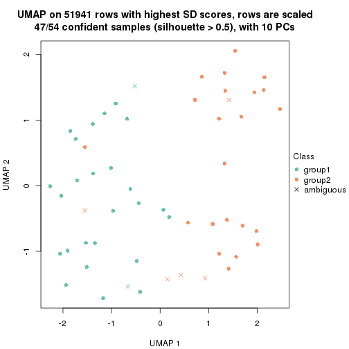
dimension_reduction(res, k = 3, method = "UMAP")
dimension_reduction(res, k = 4, method = "UMAP")
dimension_reduction(res, k = 5, method = "UMAP")

dimension_reduction(res, k = 6, method = "UMAP")
Following heatmap shows how subgroups are split when increasing k:
collect_classes(res)
Test correlation between subgroups and known annotations. If the known annotation is numeric, one-way ANOVA test is applied, and if the known annotation is discrete, chi-squared contingency table test is applied.
test_to_known_factors(res)
#> n specimen(p) individual(p) k
#> SD:mclust 47 2.95e-07 0.640 2
#> SD:mclust 33 6.38e-06 0.390 3
#> SD:mclust 52 3.13e-07 0.766 4
#> SD:mclust 48 2.38e-08 0.796 5
#> SD:mclust 40 1.56e-05 0.972 6
If matrix rows can be associated to genes, consider to use GO_Enrichment(res,
...) to perform function enrichment for the signature genes.
The object with results only for a single top-value method and a single partition method can be extracted as:
res = res_list["SD", "NMF"]
# you can also extract it by
# res = res_list["SD:NMF"]
A summary of res and all the functions that can be applied to it:
res
#> A 'ConsensusPartition' object with k = 2, 3, 4, 5, 6.
#> On a matrix with 51941 rows and 54 columns.
#> Top rows (1000, 2000, 3000, 4000, 5000) are extracted by 'SD' method.
#> Subgroups are detected by 'NMF' method.
#> Performed in total 1250 partitions by row resampling.
#> Best k for subgroups seems to be 2.
#>
#> Following methods can be applied to this 'ConsensusPartition' object:
#> [1] "cola_report" "collect_classes" "collect_plots"
#> [4] "collect_stats" "colnames" "compare_signatures"
#> [7] "consensus_heatmap" "dimension_reduction" "functional_enrichment"
#> [10] "get_anno_col" "get_anno" "get_classes"
#> [13] "get_consensus" "get_matrix" "get_membership"
#> [16] "get_param" "get_signatures" "get_stats"
#> [19] "is_best_k" "is_stable_k" "membership_heatmap"
#> [22] "ncol" "nrow" "plot_ecdf"
#> [25] "rownames" "select_partition_number" "show"
#> [28] "suggest_best_k" "test_to_known_factors"
collect_plots() function collects all the plots made from res for all k (number of partitions)
into one single page to provide an easy and fast comparison between different k.
collect_plots(res)

The plots are:
k and the heatmap of
predicted classes for each k.k.k.k.All the plots in panels can be made by individual functions and they are plotted later in this section.
select_partition_number() produces several plots showing different
statistics for choosing “optimized” k. There are following statistics:
k;k, the area increased is defined as \(A_k - A_{k-1}\).The detailed explanations of these statistics can be found in the cola vignette.
Generally speaking, lower PAC score, higher mean silhouette score or higher
concordance corresponds to better partition. Rand index and Jaccard index
measure how similar the current partition is compared to partition with k-1.
If they are too similar, we won't accept k is better than k-1.
select_partition_number(res)
The numeric values for all these statistics can be obtained by get_stats().
get_stats(res)
#> k 1-PAC mean_silhouette concordance area_increased Rand Jaccard
#> 2 2 0.675 0.838 0.933 0.4962 0.508 0.508
#> 3 3 0.479 0.663 0.813 0.3402 0.809 0.631
#> 4 4 0.554 0.646 0.760 0.1248 0.788 0.462
#> 5 5 0.576 0.443 0.726 0.0682 0.811 0.393
#> 6 6 0.643 0.499 0.715 0.0460 0.840 0.381
suggest_best_k() suggests the best \(k\) based on these statistics. The rules are as follows:
NA.suggest_best_k(res)
#> [1] 2
Following shows the table of the partitions (You need to click the show/hide
code output link to see it). The membership matrix (columns with name p*)
is inferred by
clue::cl_consensus()
function with the SE method. Basically the value in the membership matrix
represents the probability to belong to a certain group. The finall class
label for an item is determined with the group with highest probability it
belongs to.
In get_classes() function, the entropy is calculated from the membership
matrix and the silhouette score is calculated from the consensus matrix.
cbind(get_classes(res, k = 2), get_membership(res, k = 2))
#> class entropy silhouette p1 p2
#> GSM710828 2 0.0000 0.92852 0.000 1.000
#> GSM710829 2 0.0938 0.92322 0.012 0.988
#> GSM710839 2 0.0000 0.92852 0.000 1.000
#> GSM710841 2 0.5294 0.83540 0.120 0.880
#> GSM710843 2 0.0000 0.92852 0.000 1.000
#> GSM710845 2 0.0000 0.92852 0.000 1.000
#> GSM710846 2 0.0000 0.92852 0.000 1.000
#> GSM710849 2 0.2043 0.91163 0.032 0.968
#> GSM710853 2 0.0000 0.92852 0.000 1.000
#> GSM710855 2 0.9460 0.36288 0.364 0.636
#> GSM710858 2 0.0000 0.92852 0.000 1.000
#> GSM710860 2 0.0000 0.92852 0.000 1.000
#> GSM710801 2 0.0000 0.92852 0.000 1.000
#> GSM710813 2 0.5737 0.81756 0.136 0.864
#> GSM710814 2 0.0000 0.92852 0.000 1.000
#> GSM710815 2 0.0000 0.92852 0.000 1.000
#> GSM710816 2 0.0000 0.92852 0.000 1.000
#> GSM710817 1 0.7453 0.71387 0.788 0.212
#> GSM710818 2 0.0376 0.92674 0.004 0.996
#> GSM710819 1 0.9358 0.47920 0.648 0.352
#> GSM710820 2 0.0000 0.92852 0.000 1.000
#> GSM710830 1 0.0000 0.91896 1.000 0.000
#> GSM710831 1 0.9954 0.13509 0.540 0.460
#> GSM710832 1 0.0000 0.91896 1.000 0.000
#> GSM710833 1 0.9427 0.46225 0.640 0.360
#> GSM710834 2 1.0000 0.00233 0.496 0.504
#> GSM710835 1 0.0000 0.91896 1.000 0.000
#> GSM710836 1 0.0000 0.91896 1.000 0.000
#> GSM710837 1 0.0000 0.91896 1.000 0.000
#> GSM710862 1 0.6712 0.76473 0.824 0.176
#> GSM710863 1 0.0000 0.91896 1.000 0.000
#> GSM710865 1 0.0000 0.91896 1.000 0.000
#> GSM710867 1 0.0000 0.91896 1.000 0.000
#> GSM710869 1 0.0000 0.91896 1.000 0.000
#> GSM710871 1 0.0000 0.91896 1.000 0.000
#> GSM710873 1 0.0000 0.91896 1.000 0.000
#> GSM710802 1 0.0000 0.91896 1.000 0.000
#> GSM710803 1 0.0000 0.91896 1.000 0.000
#> GSM710804 1 0.6712 0.76024 0.824 0.176
#> GSM710805 2 0.3879 0.88091 0.076 0.924
#> GSM710806 1 0.0000 0.91896 1.000 0.000
#> GSM710807 1 0.0000 0.91896 1.000 0.000
#> GSM710808 1 0.0000 0.91896 1.000 0.000
#> GSM710809 1 0.0000 0.91896 1.000 0.000
#> GSM710810 1 0.0000 0.91896 1.000 0.000
#> GSM710811 1 0.0000 0.91896 1.000 0.000
#> GSM710812 1 0.0000 0.91896 1.000 0.000
#> GSM710821 1 0.2948 0.88167 0.948 0.052
#> GSM710822 1 0.0000 0.91896 1.000 0.000
#> GSM710823 1 0.6712 0.76559 0.824 0.176
#> GSM710824 2 0.4562 0.85604 0.096 0.904
#> GSM710825 1 0.8763 0.55745 0.704 0.296
#> GSM710826 1 0.0000 0.91896 1.000 0.000
#> GSM710827 1 0.0000 0.91896 1.000 0.000
cbind(get_classes(res, k = 3), get_membership(res, k = 3))
#> class entropy silhouette p1 p2 p3
#> GSM710828 2 0.3995 0.7534 0.016 0.868 0.116
#> GSM710829 2 0.5884 0.6162 0.012 0.716 0.272
#> GSM710839 2 0.0000 0.7853 0.000 1.000 0.000
#> GSM710841 2 0.5428 0.7265 0.120 0.816 0.064
#> GSM710843 2 0.0892 0.7867 0.000 0.980 0.020
#> GSM710845 2 0.8720 0.4957 0.252 0.584 0.164
#> GSM710846 2 0.1411 0.7820 0.000 0.964 0.036
#> GSM710849 2 0.5588 0.6146 0.004 0.720 0.276
#> GSM710853 2 0.3340 0.7512 0.000 0.880 0.120
#> GSM710855 3 0.5363 0.4339 0.000 0.276 0.724
#> GSM710858 2 0.5948 0.4909 0.000 0.640 0.360
#> GSM710860 2 0.0000 0.7853 0.000 1.000 0.000
#> GSM710801 2 0.1411 0.7820 0.000 0.964 0.036
#> GSM710813 2 0.7497 0.6153 0.072 0.652 0.276
#> GSM710814 2 0.1585 0.7805 0.008 0.964 0.028
#> GSM710815 2 0.0892 0.7846 0.000 0.980 0.020
#> GSM710816 2 0.5412 0.7165 0.032 0.796 0.172
#> GSM710817 3 0.4602 0.7297 0.152 0.016 0.832
#> GSM710818 2 0.5237 0.7369 0.056 0.824 0.120
#> GSM710819 3 0.3181 0.6902 0.024 0.064 0.912
#> GSM710820 2 0.2959 0.7618 0.000 0.900 0.100
#> GSM710830 1 0.2165 0.8040 0.936 0.000 0.064
#> GSM710831 3 0.4586 0.7221 0.096 0.048 0.856
#> GSM710832 1 0.2165 0.8040 0.936 0.000 0.064
#> GSM710833 3 0.2982 0.6911 0.024 0.056 0.920
#> GSM710834 2 0.9322 0.1506 0.392 0.444 0.164
#> GSM710835 3 0.4605 0.7254 0.204 0.000 0.796
#> GSM710836 3 0.6079 0.2821 0.388 0.000 0.612
#> GSM710837 1 0.4654 0.5904 0.792 0.000 0.208
#> GSM710862 1 0.6652 0.6637 0.744 0.084 0.172
#> GSM710863 1 0.2625 0.7943 0.916 0.000 0.084
#> GSM710865 1 0.3686 0.7587 0.860 0.000 0.140
#> GSM710867 1 0.3192 0.7537 0.888 0.000 0.112
#> GSM710869 3 0.6305 -0.0923 0.484 0.000 0.516
#> GSM710871 1 0.2261 0.8014 0.932 0.000 0.068
#> GSM710873 3 0.5098 0.6639 0.248 0.000 0.752
#> GSM710802 1 0.4749 0.7283 0.816 0.012 0.172
#> GSM710803 1 0.0892 0.8145 0.980 0.000 0.020
#> GSM710804 3 0.5202 0.7106 0.220 0.008 0.772
#> GSM710805 2 0.7363 0.6613 0.064 0.656 0.280
#> GSM710806 1 0.2261 0.8014 0.932 0.000 0.068
#> GSM710807 3 0.6225 0.4690 0.432 0.000 0.568
#> GSM710808 1 0.0661 0.8123 0.988 0.004 0.008
#> GSM710809 3 0.4062 0.7372 0.164 0.000 0.836
#> GSM710810 1 0.5631 0.7065 0.792 0.044 0.164
#> GSM710811 1 0.2066 0.8057 0.940 0.000 0.060
#> GSM710812 1 0.2165 0.8157 0.936 0.000 0.064
#> GSM710821 1 0.2187 0.7973 0.948 0.024 0.028
#> GSM710822 1 0.6192 0.0321 0.580 0.000 0.420
#> GSM710823 3 0.6905 0.6009 0.280 0.044 0.676
#> GSM710824 2 0.9049 0.4843 0.232 0.556 0.212
#> GSM710825 1 0.8290 0.4990 0.632 0.204 0.164
#> GSM710826 1 0.1399 0.8141 0.968 0.004 0.028
#> GSM710827 1 0.3116 0.7783 0.892 0.000 0.108
cbind(get_classes(res, k = 4), get_membership(res, k = 4))
#> class entropy silhouette p1 p2 p3 p4
#> GSM710828 4 0.5000 0.0889 0.000 0.496 0.000 0.504
#> GSM710829 2 0.1022 0.8303 0.000 0.968 0.032 0.000
#> GSM710839 2 0.2814 0.7897 0.000 0.868 0.000 0.132
#> GSM710841 2 0.2596 0.7953 0.068 0.908 0.000 0.024
#> GSM710843 2 0.4382 0.5365 0.000 0.704 0.000 0.296
#> GSM710845 4 0.3873 0.6247 0.000 0.228 0.000 0.772
#> GSM710846 2 0.1302 0.8402 0.000 0.956 0.000 0.044
#> GSM710849 2 0.2911 0.7894 0.016 0.900 0.012 0.072
#> GSM710853 2 0.2032 0.8392 0.000 0.936 0.028 0.036
#> GSM710855 3 0.5682 0.0932 0.000 0.456 0.520 0.024
#> GSM710858 2 0.3658 0.7187 0.000 0.836 0.144 0.020
#> GSM710860 2 0.2868 0.7924 0.000 0.864 0.000 0.136
#> GSM710801 2 0.0817 0.8424 0.000 0.976 0.000 0.024
#> GSM710813 2 0.4214 0.6294 0.000 0.780 0.204 0.016
#> GSM710814 2 0.3837 0.6691 0.000 0.776 0.000 0.224
#> GSM710815 2 0.1867 0.8322 0.000 0.928 0.000 0.072
#> GSM710816 4 0.5865 0.4664 0.000 0.340 0.048 0.612
#> GSM710817 3 0.8829 0.3821 0.140 0.300 0.460 0.100
#> GSM710818 4 0.6358 0.5800 0.004 0.204 0.128 0.664
#> GSM710819 3 0.0592 0.7677 0.000 0.000 0.984 0.016
#> GSM710820 2 0.0188 0.8388 0.000 0.996 0.000 0.004
#> GSM710830 1 0.0707 0.7783 0.980 0.000 0.000 0.020
#> GSM710831 3 0.6632 0.6156 0.028 0.200 0.672 0.100
#> GSM710832 1 0.3355 0.7647 0.836 0.000 0.004 0.160
#> GSM710833 3 0.0707 0.7683 0.000 0.000 0.980 0.020
#> GSM710834 4 0.4482 0.5927 0.008 0.264 0.000 0.728
#> GSM710835 1 0.6421 0.5510 0.724 0.076 0.100 0.100
#> GSM710836 3 0.3647 0.7308 0.040 0.000 0.852 0.108
#> GSM710837 1 0.2722 0.7761 0.904 0.000 0.064 0.032
#> GSM710862 4 0.3758 0.6183 0.104 0.000 0.048 0.848
#> GSM710863 1 0.5459 0.4231 0.552 0.000 0.016 0.432
#> GSM710865 4 0.5497 0.2856 0.284 0.000 0.044 0.672
#> GSM710867 1 0.0336 0.7745 0.992 0.000 0.000 0.008
#> GSM710869 3 0.4336 0.6961 0.060 0.000 0.812 0.128
#> GSM710871 1 0.2760 0.7774 0.872 0.000 0.000 0.128
#> GSM710873 3 0.1109 0.7698 0.004 0.000 0.968 0.028
#> GSM710802 4 0.4282 0.6060 0.124 0.000 0.060 0.816
#> GSM710803 1 0.3219 0.7641 0.836 0.000 0.000 0.164
#> GSM710804 1 0.7375 0.3922 0.612 0.236 0.048 0.104
#> GSM710805 4 0.7170 0.3155 0.004 0.388 0.120 0.488
#> GSM710806 1 0.2197 0.7285 0.916 0.000 0.004 0.080
#> GSM710807 1 0.5643 0.2711 0.548 0.000 0.428 0.024
#> GSM710808 1 0.1211 0.7812 0.960 0.000 0.000 0.040
#> GSM710809 3 0.3623 0.7357 0.004 0.048 0.864 0.084
#> GSM710810 4 0.3402 0.5764 0.164 0.000 0.004 0.832
#> GSM710811 1 0.2081 0.7846 0.916 0.000 0.000 0.084
#> GSM710812 1 0.5131 0.6584 0.692 0.000 0.028 0.280
#> GSM710821 1 0.3907 0.6977 0.768 0.000 0.000 0.232
#> GSM710822 3 0.4940 0.6683 0.128 0.000 0.776 0.096
#> GSM710823 3 0.2474 0.7637 0.016 0.008 0.920 0.056
#> GSM710824 4 0.6786 0.5898 0.008 0.184 0.172 0.636
#> GSM710825 4 0.3581 0.6433 0.116 0.032 0.000 0.852
#> GSM710826 1 0.1716 0.7847 0.936 0.000 0.000 0.064
#> GSM710827 1 0.5193 0.4769 0.580 0.000 0.008 0.412
cbind(get_classes(res, k = 5), get_membership(res, k = 5))
#> class entropy silhouette p1 p2 p3 p4 p5
#> GSM710828 2 0.6205 0.28790 0.056 0.552 0.004 0.352 0.036
#> GSM710829 2 0.2370 0.75647 0.000 0.904 0.000 0.056 0.040
#> GSM710839 2 0.3796 0.59379 0.000 0.700 0.000 0.300 0.000
#> GSM710841 5 0.6630 -0.14526 0.000 0.308 0.004 0.212 0.476
#> GSM710843 4 0.5081 0.48119 0.008 0.264 0.020 0.684 0.024
#> GSM710845 4 0.1538 0.66897 0.008 0.036 0.000 0.948 0.008
#> GSM710846 2 0.1478 0.75810 0.000 0.936 0.000 0.064 0.000
#> GSM710849 2 0.3977 0.66275 0.000 0.764 0.000 0.032 0.204
#> GSM710853 2 0.0451 0.75009 0.000 0.988 0.004 0.008 0.000
#> GSM710855 2 0.4184 0.49305 0.000 0.700 0.284 0.000 0.016
#> GSM710858 2 0.1525 0.72995 0.000 0.948 0.036 0.004 0.012
#> GSM710860 2 0.4249 0.37350 0.000 0.568 0.000 0.432 0.000
#> GSM710801 2 0.1444 0.75925 0.000 0.948 0.000 0.040 0.012
#> GSM710813 4 0.6093 0.46087 0.000 0.176 0.040 0.652 0.132
#> GSM710814 2 0.4251 0.44582 0.000 0.624 0.000 0.372 0.004
#> GSM710815 4 0.3700 0.49948 0.000 0.240 0.000 0.752 0.008
#> GSM710816 4 0.1571 0.66126 0.000 0.060 0.000 0.936 0.004
#> GSM710817 5 0.5522 -0.22972 0.000 0.056 0.424 0.004 0.516
#> GSM710818 4 0.8887 0.16155 0.188 0.300 0.124 0.348 0.040
#> GSM710819 3 0.1235 0.68597 0.012 0.016 0.964 0.004 0.004
#> GSM710820 2 0.2325 0.75535 0.000 0.904 0.000 0.068 0.028
#> GSM710830 5 0.4430 -0.03783 0.456 0.000 0.000 0.004 0.540
#> GSM710831 3 0.5197 0.48635 0.000 0.056 0.652 0.008 0.284
#> GSM710832 1 0.3530 0.49684 0.784 0.000 0.000 0.012 0.204
#> GSM710833 3 0.1428 0.68272 0.004 0.024 0.956 0.004 0.012
#> GSM710834 4 0.1883 0.66716 0.008 0.048 0.000 0.932 0.012
#> GSM710835 5 0.4608 0.26792 0.048 0.008 0.212 0.000 0.732
#> GSM710836 3 0.4412 0.58129 0.208 0.000 0.748 0.028 0.016
#> GSM710837 1 0.5797 0.22422 0.592 0.000 0.132 0.000 0.276
#> GSM710862 1 0.6809 -0.00583 0.508 0.004 0.096 0.348 0.044
#> GSM710863 1 0.0833 0.60222 0.976 0.000 0.004 0.016 0.004
#> GSM710865 1 0.3989 0.52068 0.824 0.000 0.096 0.040 0.040
#> GSM710867 5 0.4306 -0.10081 0.492 0.000 0.000 0.000 0.508
#> GSM710869 3 0.4546 0.50829 0.284 0.000 0.688 0.020 0.008
#> GSM710871 1 0.3714 0.56185 0.808 0.000 0.016 0.016 0.160
#> GSM710873 3 0.1597 0.68154 0.020 0.000 0.948 0.024 0.008
#> GSM710802 4 0.3416 0.63205 0.088 0.000 0.072 0.840 0.000
#> GSM710803 1 0.4760 0.17004 0.564 0.000 0.000 0.020 0.416
#> GSM710804 5 0.2633 0.40730 0.012 0.068 0.024 0.000 0.896
#> GSM710805 4 0.8368 0.45726 0.168 0.068 0.076 0.492 0.196
#> GSM710806 5 0.3508 0.30139 0.252 0.000 0.000 0.000 0.748
#> GSM710807 3 0.6165 0.34135 0.292 0.004 0.568 0.004 0.132
#> GSM710808 1 0.4331 0.24407 0.596 0.000 0.000 0.004 0.400
#> GSM710809 3 0.3266 0.60989 0.004 0.000 0.796 0.000 0.200
#> GSM710810 4 0.6300 0.08530 0.452 0.004 0.044 0.456 0.044
#> GSM710811 5 0.4302 -0.06953 0.480 0.000 0.000 0.000 0.520
#> GSM710812 1 0.2966 0.57472 0.884 0.000 0.056 0.020 0.040
#> GSM710821 1 0.2848 0.59015 0.868 0.000 0.000 0.028 0.104
#> GSM710822 3 0.5167 0.43908 0.372 0.012 0.592 0.004 0.020
#> GSM710823 3 0.6848 0.55657 0.172 0.160 0.608 0.044 0.016
#> GSM710824 4 0.2444 0.66239 0.024 0.028 0.036 0.912 0.000
#> GSM710825 1 0.5438 0.15457 0.604 0.012 0.004 0.340 0.040
#> GSM710826 1 0.4088 0.39441 0.688 0.000 0.000 0.008 0.304
#> GSM710827 1 0.1403 0.60109 0.952 0.000 0.000 0.024 0.024
cbind(get_classes(res, k = 6), get_membership(res, k = 6))
#> class entropy silhouette p1 p2 p3 p4 p5 p6
#> GSM710828 5 0.5423 9.82e-02 0.000 0.440 0.000 0.080 0.468 0.012
#> GSM710829 2 0.2011 8.63e-01 0.000 0.912 0.004 0.000 0.020 0.064
#> GSM710839 4 0.3993 1.46e-01 0.000 0.476 0.000 0.520 0.004 0.000
#> GSM710841 6 0.4591 4.51e-01 0.000 0.152 0.000 0.064 0.044 0.740
#> GSM710843 5 0.6007 3.30e-01 0.000 0.188 0.004 0.244 0.548 0.016
#> GSM710845 4 0.1327 7.96e-01 0.000 0.000 0.000 0.936 0.064 0.000
#> GSM710846 2 0.0146 8.89e-01 0.000 0.996 0.000 0.004 0.000 0.000
#> GSM710849 2 0.2695 7.93e-01 0.000 0.844 0.000 0.004 0.008 0.144
#> GSM710853 2 0.0260 8.89e-01 0.000 0.992 0.000 0.000 0.008 0.000
#> GSM710855 2 0.3229 7.22e-01 0.008 0.796 0.188 0.000 0.004 0.004
#> GSM710858 2 0.0405 8.88e-01 0.004 0.988 0.008 0.000 0.000 0.000
#> GSM710860 4 0.3874 6.75e-01 0.004 0.224 0.000 0.744 0.020 0.008
#> GSM710801 2 0.0291 8.89e-01 0.000 0.992 0.004 0.000 0.004 0.000
#> GSM710813 4 0.4325 6.72e-01 0.000 0.028 0.072 0.776 0.008 0.116
#> GSM710814 2 0.3956 4.88e-01 0.000 0.684 0.000 0.292 0.024 0.000
#> GSM710815 4 0.2573 7.87e-01 0.000 0.112 0.000 0.864 0.024 0.000
#> GSM710816 4 0.1480 8.03e-01 0.000 0.020 0.000 0.940 0.040 0.000
#> GSM710817 6 0.5316 1.41e-05 0.020 0.016 0.440 0.020 0.004 0.500
#> GSM710818 5 0.4831 5.26e-01 0.016 0.180 0.044 0.028 0.728 0.004
#> GSM710819 3 0.1818 6.14e-01 0.004 0.004 0.920 0.000 0.068 0.004
#> GSM710820 2 0.0653 8.87e-01 0.000 0.980 0.000 0.004 0.012 0.004
#> GSM710830 1 0.3634 5.18e-01 0.696 0.000 0.000 0.008 0.000 0.296
#> GSM710831 3 0.5049 2.37e-01 0.020 0.008 0.636 0.028 0.008 0.300
#> GSM710832 1 0.1294 6.06e-01 0.956 0.000 0.008 0.004 0.024 0.008
#> GSM710833 3 0.1477 6.11e-01 0.000 0.004 0.940 0.000 0.048 0.008
#> GSM710834 4 0.1829 7.98e-01 0.000 0.004 0.000 0.920 0.064 0.012
#> GSM710835 6 0.5224 4.15e-01 0.204 0.000 0.140 0.012 0.000 0.644
#> GSM710836 5 0.4322 -1.11e-01 0.000 0.000 0.452 0.000 0.528 0.020
#> GSM710837 1 0.2237 5.64e-01 0.896 0.000 0.080 0.000 0.004 0.020
#> GSM710862 5 0.2123 5.83e-01 0.052 0.000 0.012 0.024 0.912 0.000
#> GSM710863 1 0.3194 5.92e-01 0.808 0.000 0.012 0.004 0.172 0.004
#> GSM710865 5 0.4094 3.31e-01 0.324 0.000 0.024 0.000 0.652 0.000
#> GSM710867 1 0.3944 4.03e-01 0.568 0.000 0.000 0.000 0.004 0.428
#> GSM710869 3 0.4276 1.94e-01 0.020 0.000 0.564 0.000 0.416 0.000
#> GSM710871 1 0.5259 1.79e-01 0.468 0.000 0.000 0.000 0.436 0.096
#> GSM710873 3 0.3571 5.58e-01 0.000 0.000 0.760 0.004 0.216 0.020
#> GSM710802 4 0.2779 7.52e-01 0.004 0.000 0.016 0.856 0.120 0.004
#> GSM710803 1 0.4545 5.25e-01 0.668 0.000 0.000 0.032 0.020 0.280
#> GSM710804 6 0.1003 5.34e-01 0.004 0.000 0.028 0.000 0.004 0.964
#> GSM710805 5 0.6012 3.88e-01 0.004 0.012 0.104 0.048 0.624 0.208
#> GSM710806 6 0.3620 2.57e-02 0.352 0.000 0.000 0.000 0.000 0.648
#> GSM710807 1 0.5046 -1.17e-01 0.484 0.000 0.468 0.016 0.020 0.012
#> GSM710808 1 0.5852 3.09e-01 0.452 0.000 0.000 0.004 0.168 0.376
#> GSM710809 3 0.3470 4.44e-01 0.000 0.000 0.740 0.000 0.012 0.248
#> GSM710810 5 0.3249 5.92e-01 0.028 0.000 0.000 0.104 0.840 0.028
#> GSM710811 1 0.4602 3.23e-01 0.488 0.000 0.000 0.004 0.028 0.480
#> GSM710812 5 0.4192 2.09e-01 0.372 0.000 0.008 0.004 0.612 0.004
#> GSM710821 1 0.5056 4.93e-01 0.664 0.000 0.000 0.048 0.240 0.048
#> GSM710822 1 0.5037 5.96e-02 0.548 0.000 0.396 0.008 0.040 0.008
#> GSM710823 3 0.6743 1.89e-01 0.348 0.032 0.492 0.076 0.036 0.016
#> GSM710824 4 0.2770 7.58e-01 0.016 0.004 0.052 0.888 0.032 0.008
#> GSM710825 5 0.4926 5.37e-01 0.152 0.000 0.000 0.140 0.692 0.016
#> GSM710826 1 0.2138 6.12e-01 0.908 0.000 0.000 0.004 0.036 0.052
#> GSM710827 1 0.2163 6.09e-01 0.892 0.000 0.008 0.004 0.096 0.000
Heatmaps for the consensus matrix. It visualizes the probability of two samples to be in a same group.
consensus_heatmap(res, k = 2)
consensus_heatmap(res, k = 3)
consensus_heatmap(res, k = 4)
consensus_heatmap(res, k = 5)
consensus_heatmap(res, k = 6)
Heatmaps for the membership of samples in all partitions to see how consistent they are:
membership_heatmap(res, k = 2)
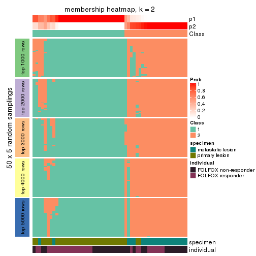
membership_heatmap(res, k = 3)
membership_heatmap(res, k = 4)
membership_heatmap(res, k = 5)
membership_heatmap(res, k = 6)
As soon as we have had the classes for columns, we can look for signatures which are significantly different between classes which can be candidate marks for certain classes. Following are the heatmaps for signatures.
Signature heatmaps where rows are scaled:
get_signatures(res, k = 2)
get_signatures(res, k = 3)
get_signatures(res, k = 4)
get_signatures(res, k = 5)
get_signatures(res, k = 6)
Signature heatmaps where rows are not scaled:
get_signatures(res, k = 2, scale_rows = FALSE)
get_signatures(res, k = 3, scale_rows = FALSE)
get_signatures(res, k = 4, scale_rows = FALSE)
get_signatures(res, k = 5, scale_rows = FALSE)
get_signatures(res, k = 6, scale_rows = FALSE)
Compare the overlap of signatures from different k:
compare_signatures(res)
get_signature() returns a data frame invisibly. TO get the list of signatures, the function
call should be assigned to a variable explicitly. In following code, if plot argument is set
to FALSE, no heatmap is plotted while only the differential analysis is performed.
# code only for demonstration
tb = get_signature(res, k = ..., plot = FALSE)
An example of the output of tb is:
#> which_row fdr mean_1 mean_2 scaled_mean_1 scaled_mean_2 km
#> 1 38 0.042760348 8.373488 9.131774 -0.5533452 0.5164555 1
#> 2 40 0.018707592 7.106213 8.469186 -0.6173731 0.5762149 1
#> 3 55 0.019134737 10.221463 11.207825 -0.6159697 0.5749050 1
#> 4 59 0.006059896 5.921854 7.869574 -0.6899429 0.6439467 1
#> 5 60 0.018055526 8.928898 10.211722 -0.6204761 0.5791110 1
#> 6 98 0.009384629 15.714769 14.887706 0.6635654 -0.6193277 2
...
The columns in tb are:
which_row: row indices corresponding to the input matrix.fdr: FDR for the differential test. mean_x: The mean value in group x.scaled_mean_x: The mean value in group x after rows are scaled.km: Row groups if k-means clustering is applied to rows.UMAP plot which shows how samples are separated.
dimension_reduction(res, k = 2, method = "UMAP")
dimension_reduction(res, k = 3, method = "UMAP")
dimension_reduction(res, k = 4, method = "UMAP")
dimension_reduction(res, k = 5, method = "UMAP")
dimension_reduction(res, k = 6, method = "UMAP")
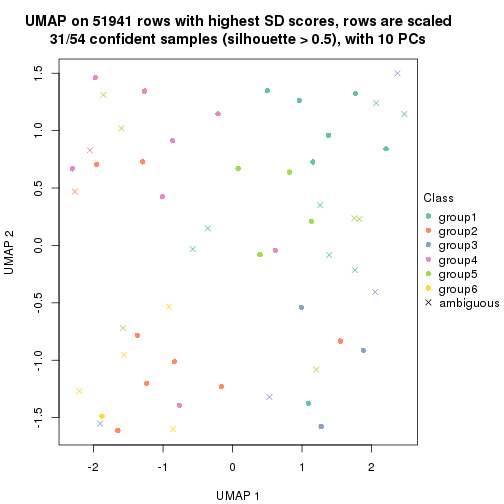
Following heatmap shows how subgroups are split when increasing k:
collect_classes(res)
Test correlation between subgroups and known annotations. If the known annotation is numeric, one-way ANOVA test is applied, and if the known annotation is discrete, chi-squared contingency table test is applied.
test_to_known_factors(res)
#> n specimen(p) individual(p) k
#> SD:NMF 49 6.13e-09 0.517 2
#> SD:NMF 44 4.88e-08 0.860 3
#> SD:NMF 44 2.06e-07 0.627 4
#> SD:NMF 26 5.39e-04 0.622 5
#> SD:NMF 31 3.18e-03 0.422 6
If matrix rows can be associated to genes, consider to use GO_Enrichment(res,
...) to perform function enrichment for the signature genes.
The object with results only for a single top-value method and a single partition method can be extracted as:
res = res_list["CV", "hclust"]
# you can also extract it by
# res = res_list["CV:hclust"]
A summary of res and all the functions that can be applied to it:
res
#> A 'ConsensusPartition' object with k = 2, 3, 4, 5, 6.
#> On a matrix with 51941 rows and 54 columns.
#> Top rows (1000, 2000, 3000, 4000, 5000) are extracted by 'CV' method.
#> Subgroups are detected by 'hclust' method.
#> Performed in total 1250 partitions by row resampling.
#> Best k for subgroups seems to be 5.
#>
#> Following methods can be applied to this 'ConsensusPartition' object:
#> [1] "cola_report" "collect_classes" "collect_plots"
#> [4] "collect_stats" "colnames" "compare_signatures"
#> [7] "consensus_heatmap" "dimension_reduction" "functional_enrichment"
#> [10] "get_anno_col" "get_anno" "get_classes"
#> [13] "get_consensus" "get_matrix" "get_membership"
#> [16] "get_param" "get_signatures" "get_stats"
#> [19] "is_best_k" "is_stable_k" "membership_heatmap"
#> [22] "ncol" "nrow" "plot_ecdf"
#> [25] "rownames" "select_partition_number" "show"
#> [28] "suggest_best_k" "test_to_known_factors"
collect_plots() function collects all the plots made from res for all k (number of partitions)
into one single page to provide an easy and fast comparison between different k.
collect_plots(res)
The plots are:
k and the heatmap of
predicted classes for each k.k.k.k.All the plots in panels can be made by individual functions and they are plotted later in this section.
select_partition_number() produces several plots showing different
statistics for choosing “optimized” k. There are following statistics:
k;k, the area increased is defined as \(A_k - A_{k-1}\).The detailed explanations of these statistics can be found in the cola vignette.
Generally speaking, lower PAC score, higher mean silhouette score or higher
concordance corresponds to better partition. Rand index and Jaccard index
measure how similar the current partition is compared to partition with k-1.
If they are too similar, we won't accept k is better than k-1.
select_partition_number(res)
The numeric values for all these statistics can be obtained by get_stats().
get_stats(res)
#> k 1-PAC mean_silhouette concordance area_increased Rand Jaccard
#> 2 2 0.206 0.785 0.855 0.313 0.693 0.693
#> 3 3 0.231 0.759 0.847 0.281 0.989 0.984
#> 4 4 0.276 0.385 0.689 0.356 0.832 0.754
#> 5 5 0.358 0.557 0.702 0.203 0.714 0.481
#> 6 6 0.547 0.609 0.775 0.136 0.875 0.629
suggest_best_k() suggests the best \(k\) based on these statistics. The rules are as follows:
NA.suggest_best_k(res)
#> [1] 5
Following shows the table of the partitions (You need to click the show/hide
code output link to see it). The membership matrix (columns with name p*)
is inferred by
clue::cl_consensus()
function with the SE method. Basically the value in the membership matrix
represents the probability to belong to a certain group. The finall class
label for an item is determined with the group with highest probability it
belongs to.
In get_classes() function, the entropy is calculated from the membership
matrix and the silhouette score is calculated from the consensus matrix.
cbind(get_classes(res, k = 2), get_membership(res, k = 2))
#> class entropy silhouette p1 p2
#> GSM710828 1 0.7745 0.704 0.772 0.228
#> GSM710829 1 0.7745 0.710 0.772 0.228
#> GSM710839 1 0.7674 0.712 0.776 0.224
#> GSM710841 2 0.9896 0.560 0.440 0.560
#> GSM710843 1 0.7219 0.752 0.800 0.200
#> GSM710845 1 0.4161 0.848 0.916 0.084
#> GSM710846 2 0.9087 0.771 0.324 0.676
#> GSM710849 2 0.8763 0.792 0.296 0.704
#> GSM710853 2 0.7056 0.776 0.192 0.808
#> GSM710855 2 0.5737 0.733 0.136 0.864
#> GSM710858 2 0.6887 0.764 0.184 0.816
#> GSM710860 2 0.9661 0.624 0.392 0.608
#> GSM710801 1 0.8081 0.672 0.752 0.248
#> GSM710813 1 0.7219 0.749 0.800 0.200
#> GSM710814 1 0.7602 0.719 0.780 0.220
#> GSM710815 1 0.7219 0.751 0.800 0.200
#> GSM710816 1 0.5946 0.821 0.856 0.144
#> GSM710817 1 0.7453 0.713 0.788 0.212
#> GSM710818 1 0.7674 0.710 0.776 0.224
#> GSM710819 2 0.8499 0.704 0.276 0.724
#> GSM710820 2 0.8713 0.792 0.292 0.708
#> GSM710830 1 0.1184 0.853 0.984 0.016
#> GSM710831 1 0.7528 0.705 0.784 0.216
#> GSM710832 1 0.1184 0.853 0.984 0.016
#> GSM710833 1 0.6801 0.798 0.820 0.180
#> GSM710834 1 0.4022 0.849 0.920 0.080
#> GSM710835 1 0.5178 0.815 0.884 0.116
#> GSM710836 1 0.6148 0.766 0.848 0.152
#> GSM710837 1 0.4022 0.836 0.920 0.080
#> GSM710862 1 0.2948 0.855 0.948 0.052
#> GSM710863 1 0.1414 0.856 0.980 0.020
#> GSM710865 1 0.2236 0.858 0.964 0.036
#> GSM710867 1 0.1633 0.852 0.976 0.024
#> GSM710869 1 0.3733 0.848 0.928 0.072
#> GSM710871 1 0.1633 0.852 0.976 0.024
#> GSM710873 2 0.9795 0.580 0.416 0.584
#> GSM710802 1 0.5408 0.835 0.876 0.124
#> GSM710803 1 0.1184 0.853 0.984 0.016
#> GSM710804 1 0.7815 0.620 0.768 0.232
#> GSM710805 1 0.5842 0.830 0.860 0.140
#> GSM710806 1 0.2603 0.848 0.956 0.044
#> GSM710807 1 0.5178 0.821 0.884 0.116
#> GSM710808 1 0.1843 0.852 0.972 0.028
#> GSM710809 1 0.7528 0.695 0.784 0.216
#> GSM710810 1 0.2778 0.855 0.952 0.048
#> GSM710811 1 0.1843 0.852 0.972 0.028
#> GSM710812 1 0.2043 0.856 0.968 0.032
#> GSM710821 1 0.0376 0.853 0.996 0.004
#> GSM710822 1 0.4690 0.834 0.900 0.100
#> GSM710823 1 0.4431 0.836 0.908 0.092
#> GSM710824 1 0.4298 0.848 0.912 0.088
#> GSM710825 1 0.2778 0.854 0.952 0.048
#> GSM710826 1 0.1184 0.853 0.984 0.016
#> GSM710827 1 0.0376 0.853 0.996 0.004
cbind(get_classes(res, k = 3), get_membership(res, k = 3))
#> class entropy silhouette p1 p2 p3
#> GSM710828 1 0.5977 0.717 0.728 0.252 0.020
#> GSM710829 1 0.6276 0.737 0.736 0.224 0.040
#> GSM710839 1 0.6025 0.733 0.740 0.232 0.028
#> GSM710841 2 0.6224 0.413 0.296 0.688 0.016
#> GSM710843 1 0.6054 0.771 0.768 0.180 0.052
#> GSM710845 1 0.3472 0.852 0.904 0.056 0.040
#> GSM710846 2 0.4062 0.628 0.164 0.836 0.000
#> GSM710849 2 0.3412 0.662 0.124 0.876 0.000
#> GSM710853 2 0.1999 0.555 0.012 0.952 0.036
#> GSM710855 2 0.3989 0.478 0.012 0.864 0.124
#> GSM710858 2 0.4605 0.469 0.000 0.796 0.204
#> GSM710860 2 0.8940 0.432 0.232 0.568 0.200
#> GSM710801 1 0.6129 0.680 0.700 0.284 0.016
#> GSM710813 1 0.5955 0.770 0.772 0.180 0.048
#> GSM710814 1 0.5982 0.738 0.744 0.228 0.028
#> GSM710815 1 0.5955 0.770 0.772 0.180 0.048
#> GSM710816 1 0.5319 0.825 0.824 0.104 0.072
#> GSM710817 1 0.6979 0.720 0.732 0.140 0.128
#> GSM710818 1 0.5899 0.727 0.736 0.244 0.020
#> GSM710819 3 0.5826 0.616 0.032 0.204 0.764
#> GSM710820 2 0.3340 0.663 0.120 0.880 0.000
#> GSM710830 1 0.1163 0.855 0.972 0.000 0.028
#> GSM710831 1 0.7039 0.714 0.728 0.144 0.128
#> GSM710832 1 0.1163 0.855 0.972 0.000 0.028
#> GSM710833 1 0.6295 0.785 0.764 0.072 0.164
#> GSM710834 1 0.3263 0.854 0.912 0.048 0.040
#> GSM710835 1 0.5042 0.809 0.836 0.060 0.104
#> GSM710836 1 0.5435 0.758 0.808 0.048 0.144
#> GSM710837 1 0.3771 0.832 0.876 0.012 0.112
#> GSM710862 1 0.2550 0.858 0.936 0.040 0.024
#> GSM710863 1 0.0848 0.859 0.984 0.008 0.008
#> GSM710865 1 0.1774 0.860 0.960 0.016 0.024
#> GSM710867 1 0.1411 0.856 0.964 0.000 0.036
#> GSM710869 1 0.3369 0.848 0.908 0.040 0.052
#> GSM710871 1 0.1411 0.856 0.964 0.000 0.036
#> GSM710873 3 0.8484 0.606 0.188 0.196 0.616
#> GSM710802 1 0.4652 0.841 0.856 0.080 0.064
#> GSM710803 1 0.1163 0.855 0.972 0.000 0.028
#> GSM710804 1 0.6703 0.602 0.692 0.268 0.040
#> GSM710805 1 0.5093 0.837 0.836 0.088 0.076
#> GSM710806 1 0.2229 0.854 0.944 0.012 0.044
#> GSM710807 1 0.4164 0.817 0.848 0.008 0.144
#> GSM710808 1 0.1647 0.856 0.960 0.004 0.036
#> GSM710809 1 0.6939 0.679 0.712 0.072 0.216
#> GSM710810 1 0.2176 0.858 0.948 0.032 0.020
#> GSM710811 1 0.1647 0.856 0.960 0.004 0.036
#> GSM710812 1 0.1647 0.858 0.960 0.004 0.036
#> GSM710821 1 0.0424 0.858 0.992 0.000 0.008
#> GSM710822 1 0.3826 0.825 0.868 0.008 0.124
#> GSM710823 1 0.3682 0.828 0.876 0.008 0.116
#> GSM710824 1 0.3797 0.853 0.892 0.056 0.052
#> GSM710825 1 0.2527 0.857 0.936 0.044 0.020
#> GSM710826 1 0.1163 0.855 0.972 0.000 0.028
#> GSM710827 1 0.0424 0.858 0.992 0.000 0.008
cbind(get_classes(res, k = 4), get_membership(res, k = 4))
#> class entropy silhouette p1 p2 p3 p4
#> GSM710828 4 0.7221 0.6679 0.424 0.140 0.000 0.436
#> GSM710829 1 0.7259 -0.7033 0.444 0.112 0.008 0.436
#> GSM710839 4 0.7046 0.6885 0.432 0.120 0.000 0.448
#> GSM710841 2 0.6679 0.5388 0.148 0.632 0.004 0.216
#> GSM710843 4 0.6848 0.6562 0.444 0.076 0.008 0.472
#> GSM710845 1 0.4898 -0.2320 0.584 0.000 0.000 0.416
#> GSM710846 2 0.4906 0.7186 0.084 0.776 0.000 0.140
#> GSM710849 2 0.4153 0.7500 0.048 0.820 0.000 0.132
#> GSM710853 2 0.1004 0.6780 0.000 0.972 0.004 0.024
#> GSM710855 2 0.3333 0.5911 0.004 0.876 0.088 0.032
#> GSM710858 2 0.5432 0.4611 0.000 0.652 0.032 0.316
#> GSM710860 4 0.6377 -0.5357 0.028 0.364 0.028 0.580
#> GSM710801 1 0.7450 -0.6802 0.424 0.172 0.000 0.404
#> GSM710813 4 0.6855 0.6477 0.456 0.068 0.012 0.464
#> GSM710814 4 0.7007 0.6897 0.432 0.116 0.000 0.452
#> GSM710815 4 0.6612 0.6651 0.444 0.068 0.004 0.484
#> GSM710816 1 0.6509 -0.3882 0.528 0.028 0.028 0.416
#> GSM710817 1 0.7733 0.3350 0.560 0.112 0.048 0.280
#> GSM710818 1 0.7188 -0.7175 0.432 0.136 0.000 0.432
#> GSM710819 3 0.1488 0.7330 0.000 0.012 0.956 0.032
#> GSM710820 2 0.4070 0.7500 0.044 0.824 0.000 0.132
#> GSM710830 1 0.0336 0.5912 0.992 0.000 0.000 0.008
#> GSM710831 1 0.7779 0.3311 0.556 0.116 0.048 0.280
#> GSM710832 1 0.0188 0.5910 0.996 0.000 0.000 0.004
#> GSM710833 1 0.7354 0.2216 0.564 0.020 0.124 0.292
#> GSM710834 1 0.4713 0.0234 0.640 0.000 0.000 0.360
#> GSM710835 1 0.6049 0.4798 0.712 0.044 0.044 0.200
#> GSM710836 1 0.6750 0.4442 0.640 0.008 0.176 0.176
#> GSM710837 1 0.4475 0.5506 0.816 0.008 0.056 0.120
#> GSM710862 1 0.4661 0.2483 0.708 0.004 0.004 0.284
#> GSM710863 1 0.2647 0.5297 0.880 0.000 0.000 0.120
#> GSM710865 1 0.3962 0.5141 0.820 0.000 0.028 0.152
#> GSM710867 1 0.0967 0.5918 0.976 0.004 0.004 0.016
#> GSM710869 1 0.5079 0.5153 0.768 0.004 0.072 0.156
#> GSM710871 1 0.0967 0.5918 0.976 0.004 0.004 0.016
#> GSM710873 3 0.5400 0.7349 0.108 0.020 0.772 0.100
#> GSM710802 1 0.6164 -0.1086 0.592 0.032 0.016 0.360
#> GSM710803 1 0.0188 0.5910 0.996 0.000 0.000 0.004
#> GSM710804 1 0.7438 0.2621 0.512 0.244 0.000 0.244
#> GSM710805 1 0.6463 0.2472 0.560 0.016 0.044 0.380
#> GSM710806 1 0.3791 0.5105 0.796 0.004 0.000 0.200
#> GSM710807 1 0.4665 0.5389 0.804 0.004 0.088 0.104
#> GSM710808 1 0.0859 0.5921 0.980 0.004 0.008 0.008
#> GSM710809 1 0.7845 0.3705 0.568 0.040 0.180 0.212
#> GSM710810 1 0.4313 0.3139 0.736 0.004 0.000 0.260
#> GSM710811 1 0.0859 0.5921 0.980 0.004 0.008 0.008
#> GSM710812 1 0.2075 0.5862 0.936 0.004 0.016 0.044
#> GSM710821 1 0.1940 0.5656 0.924 0.000 0.000 0.076
#> GSM710822 1 0.4297 0.5602 0.820 0.000 0.084 0.096
#> GSM710823 1 0.4955 0.5490 0.772 0.000 0.084 0.144
#> GSM710824 1 0.5313 -0.0725 0.608 0.000 0.016 0.376
#> GSM710825 1 0.4509 0.2399 0.708 0.000 0.004 0.288
#> GSM710826 1 0.0469 0.5915 0.988 0.000 0.000 0.012
#> GSM710827 1 0.1940 0.5647 0.924 0.000 0.000 0.076
cbind(get_classes(res, k = 5), get_membership(res, k = 5))
#> class entropy silhouette p1 p2 p3 p4 p5
#> GSM710828 4 0.5163 0.7873 0.296 0.068 0.000 0.636 0.000
#> GSM710829 4 0.5593 0.7758 0.296 0.044 0.000 0.628 0.032
#> GSM710839 4 0.4908 0.7949 0.288 0.044 0.000 0.664 0.004
#> GSM710841 2 0.6816 0.6067 0.072 0.548 0.000 0.288 0.092
#> GSM710843 4 0.4630 0.7861 0.288 0.008 0.004 0.684 0.016
#> GSM710845 4 0.4403 0.5579 0.436 0.000 0.004 0.560 0.000
#> GSM710846 2 0.5479 0.7227 0.040 0.680 0.000 0.228 0.052
#> GSM710849 2 0.5147 0.7463 0.024 0.724 0.004 0.188 0.060
#> GSM710853 2 0.2339 0.6761 0.004 0.892 0.000 0.100 0.004
#> GSM710855 2 0.4244 0.5821 0.004 0.816 0.056 0.088 0.036
#> GSM710858 2 0.6145 0.3317 0.000 0.580 0.008 0.264 0.148
#> GSM710860 4 0.6370 -0.4527 0.000 0.272 0.008 0.548 0.172
#> GSM710801 4 0.5562 0.7677 0.296 0.100 0.000 0.604 0.000
#> GSM710813 4 0.4677 0.7787 0.300 0.000 0.000 0.664 0.036
#> GSM710814 4 0.4687 0.7958 0.288 0.040 0.000 0.672 0.000
#> GSM710815 4 0.4206 0.7871 0.288 0.000 0.000 0.696 0.016
#> GSM710816 4 0.5215 0.6524 0.380 0.000 0.016 0.580 0.024
#> GSM710817 5 0.4455 0.6134 0.132 0.096 0.004 0.000 0.768
#> GSM710818 4 0.5200 0.7867 0.304 0.068 0.000 0.628 0.000
#> GSM710819 3 0.0671 0.7584 0.000 0.000 0.980 0.016 0.004
#> GSM710820 2 0.4804 0.7473 0.016 0.736 0.004 0.200 0.044
#> GSM710830 1 0.1282 0.7185 0.952 0.004 0.000 0.000 0.044
#> GSM710831 5 0.4411 0.6105 0.128 0.096 0.004 0.000 0.772
#> GSM710832 1 0.1121 0.7186 0.956 0.000 0.000 0.000 0.044
#> GSM710833 1 0.7398 0.0535 0.488 0.000 0.088 0.292 0.132
#> GSM710834 1 0.4451 -0.4093 0.504 0.000 0.004 0.492 0.000
#> GSM710835 5 0.5955 0.5356 0.380 0.040 0.016 0.016 0.548
#> GSM710836 1 0.6598 0.4548 0.612 0.000 0.188 0.064 0.136
#> GSM710837 1 0.4973 0.3938 0.700 0.008 0.028 0.016 0.248
#> GSM710862 1 0.4706 0.1909 0.656 0.000 0.008 0.316 0.020
#> GSM710863 1 0.2628 0.6625 0.884 0.000 0.000 0.088 0.028
#> GSM710865 1 0.4151 0.6320 0.808 0.000 0.028 0.116 0.048
#> GSM710867 1 0.1798 0.7151 0.928 0.004 0.004 0.000 0.064
#> GSM710869 1 0.5046 0.6267 0.760 0.000 0.076 0.096 0.068
#> GSM710871 1 0.1798 0.7151 0.928 0.004 0.004 0.000 0.064
#> GSM710873 3 0.3920 0.7131 0.044 0.004 0.796 0.000 0.156
#> GSM710802 4 0.5403 0.4807 0.444 0.000 0.016 0.512 0.028
#> GSM710803 1 0.1197 0.7183 0.952 0.000 0.000 0.000 0.048
#> GSM710804 5 0.5422 0.5127 0.120 0.208 0.004 0.000 0.668
#> GSM710805 5 0.7339 0.2949 0.188 0.008 0.036 0.284 0.484
#> GSM710806 5 0.4838 0.5587 0.336 0.004 0.000 0.028 0.632
#> GSM710807 1 0.4805 0.4716 0.700 0.000 0.032 0.016 0.252
#> GSM710808 1 0.1628 0.7176 0.936 0.000 0.008 0.000 0.056
#> GSM710809 5 0.6504 0.5276 0.228 0.028 0.144 0.004 0.596
#> GSM710810 1 0.4359 0.3294 0.704 0.000 0.004 0.272 0.020
#> GSM710811 1 0.1628 0.7176 0.936 0.000 0.008 0.000 0.056
#> GSM710812 1 0.3019 0.7105 0.880 0.000 0.016 0.048 0.056
#> GSM710821 1 0.1493 0.7049 0.948 0.000 0.000 0.028 0.024
#> GSM710822 1 0.4063 0.6256 0.812 0.000 0.056 0.020 0.112
#> GSM710823 1 0.4718 0.6438 0.780 0.000 0.056 0.060 0.104
#> GSM710824 1 0.5098 -0.4392 0.492 0.000 0.016 0.480 0.012
#> GSM710825 1 0.4759 0.1488 0.644 0.000 0.008 0.328 0.020
#> GSM710826 1 0.1430 0.7181 0.944 0.004 0.000 0.000 0.052
#> GSM710827 1 0.1493 0.7041 0.948 0.000 0.000 0.024 0.028
cbind(get_classes(res, k = 6), get_membership(res, k = 6))
#> class entropy silhouette p1 p2 p3 p4 p5 p6
#> GSM710828 4 0.1938 0.706 0.004 0.036 0.000 0.920 0.040 0.000
#> GSM710829 4 0.2507 0.703 0.008 0.044 0.000 0.900 0.020 0.028
#> GSM710839 4 0.1341 0.712 0.000 0.024 0.000 0.948 0.028 0.000
#> GSM710841 2 0.6047 0.498 0.004 0.556 0.000 0.280 0.036 0.124
#> GSM710843 4 0.2122 0.706 0.000 0.024 0.000 0.916 0.032 0.028
#> GSM710845 4 0.2973 0.708 0.136 0.000 0.000 0.836 0.024 0.004
#> GSM710846 2 0.5430 0.598 0.000 0.648 0.000 0.220 0.068 0.064
#> GSM710849 2 0.4818 0.676 0.000 0.724 0.000 0.152 0.052 0.072
#> GSM710853 2 0.2318 0.530 0.000 0.892 0.000 0.064 0.044 0.000
#> GSM710855 2 0.3911 0.420 0.000 0.816 0.024 0.032 0.096 0.032
#> GSM710858 5 0.4224 0.376 0.000 0.432 0.000 0.016 0.552 0.000
#> GSM710860 5 0.5267 0.473 0.000 0.164 0.000 0.236 0.600 0.000
#> GSM710801 4 0.2437 0.691 0.004 0.072 0.000 0.888 0.036 0.000
#> GSM710813 4 0.1837 0.719 0.012 0.004 0.000 0.932 0.020 0.032
#> GSM710814 4 0.1176 0.715 0.000 0.024 0.000 0.956 0.020 0.000
#> GSM710815 4 0.1642 0.708 0.000 0.004 0.000 0.936 0.032 0.028
#> GSM710816 4 0.3786 0.710 0.092 0.000 0.008 0.820 0.040 0.040
#> GSM710817 6 0.1933 0.561 0.032 0.044 0.000 0.000 0.004 0.920
#> GSM710818 4 0.2245 0.710 0.016 0.036 0.000 0.908 0.040 0.000
#> GSM710819 3 0.0806 0.733 0.000 0.008 0.972 0.000 0.020 0.000
#> GSM710820 2 0.4343 0.683 0.000 0.748 0.000 0.160 0.020 0.072
#> GSM710830 1 0.1053 0.793 0.964 0.000 0.000 0.004 0.012 0.020
#> GSM710831 6 0.1856 0.561 0.032 0.048 0.000 0.000 0.000 0.920
#> GSM710832 1 0.0951 0.794 0.968 0.000 0.000 0.004 0.008 0.020
#> GSM710833 4 0.7464 0.161 0.340 0.000 0.072 0.412 0.056 0.120
#> GSM710834 4 0.3905 0.630 0.256 0.000 0.000 0.716 0.024 0.004
#> GSM710835 6 0.5183 0.427 0.300 0.016 0.020 0.000 0.040 0.624
#> GSM710836 1 0.7503 0.445 0.524 0.004 0.188 0.096 0.096 0.092
#> GSM710837 1 0.4970 0.537 0.672 0.008 0.032 0.000 0.040 0.248
#> GSM710862 4 0.5140 0.342 0.388 0.000 0.000 0.532 0.076 0.004
#> GSM710863 1 0.3521 0.729 0.812 0.000 0.000 0.120 0.060 0.008
#> GSM710865 1 0.5174 0.669 0.712 0.000 0.024 0.160 0.068 0.036
#> GSM710867 1 0.1391 0.788 0.944 0.000 0.000 0.000 0.016 0.040
#> GSM710869 1 0.5797 0.659 0.684 0.000 0.060 0.124 0.088 0.044
#> GSM710871 1 0.1391 0.788 0.944 0.000 0.000 0.000 0.016 0.040
#> GSM710873 3 0.3526 0.731 0.036 0.004 0.808 0.000 0.008 0.144
#> GSM710802 4 0.5016 0.646 0.188 0.000 0.008 0.704 0.056 0.044
#> GSM710803 1 0.1053 0.793 0.964 0.000 0.000 0.004 0.012 0.020
#> GSM710804 6 0.3852 0.469 0.008 0.136 0.000 0.000 0.072 0.784
#> GSM710805 6 0.8212 0.158 0.056 0.064 0.028 0.276 0.184 0.392
#> GSM710806 6 0.6079 0.431 0.244 0.032 0.004 0.000 0.156 0.564
#> GSM710807 1 0.5061 0.572 0.676 0.008 0.032 0.004 0.040 0.240
#> GSM710808 1 0.1194 0.792 0.956 0.000 0.004 0.000 0.008 0.032
#> GSM710809 6 0.5855 0.400 0.168 0.012 0.152 0.004 0.028 0.636
#> GSM710810 1 0.5116 -0.119 0.484 0.000 0.000 0.444 0.068 0.004
#> GSM710811 1 0.1194 0.792 0.956 0.000 0.004 0.000 0.008 0.032
#> GSM710812 1 0.2689 0.784 0.888 0.000 0.008 0.056 0.016 0.032
#> GSM710821 1 0.2186 0.783 0.908 0.000 0.000 0.036 0.048 0.008
#> GSM710822 1 0.4619 0.700 0.764 0.004 0.064 0.004 0.056 0.108
#> GSM710823 1 0.5424 0.700 0.724 0.004 0.064 0.040 0.064 0.104
#> GSM710824 4 0.4501 0.650 0.216 0.000 0.012 0.720 0.036 0.016
#> GSM710825 4 0.5117 0.372 0.376 0.000 0.000 0.544 0.076 0.004
#> GSM710826 1 0.1562 0.789 0.940 0.000 0.000 0.004 0.032 0.024
#> GSM710827 1 0.2177 0.782 0.908 0.000 0.000 0.032 0.052 0.008
Heatmaps for the consensus matrix. It visualizes the probability of two samples to be in a same group.
consensus_heatmap(res, k = 2)
consensus_heatmap(res, k = 3)
consensus_heatmap(res, k = 4)
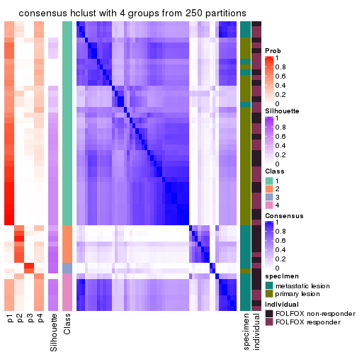
consensus_heatmap(res, k = 5)
consensus_heatmap(res, k = 6)
Heatmaps for the membership of samples in all partitions to see how consistent they are:
membership_heatmap(res, k = 2)
membership_heatmap(res, k = 3)
membership_heatmap(res, k = 4)
membership_heatmap(res, k = 5)
membership_heatmap(res, k = 6)
As soon as we have had the classes for columns, we can look for signatures which are significantly different between classes which can be candidate marks for certain classes. Following are the heatmaps for signatures.
Signature heatmaps where rows are scaled:
get_signatures(res, k = 2)
get_signatures(res, k = 3)
get_signatures(res, k = 4)

get_signatures(res, k = 5)
get_signatures(res, k = 6)
Signature heatmaps where rows are not scaled:
get_signatures(res, k = 2, scale_rows = FALSE)
get_signatures(res, k = 3, scale_rows = FALSE)
get_signatures(res, k = 4, scale_rows = FALSE)
get_signatures(res, k = 5, scale_rows = FALSE)
get_signatures(res, k = 6, scale_rows = FALSE)
Compare the overlap of signatures from different k:
compare_signatures(res)
get_signature() returns a data frame invisibly. TO get the list of signatures, the function
call should be assigned to a variable explicitly. In following code, if plot argument is set
to FALSE, no heatmap is plotted while only the differential analysis is performed.
# code only for demonstration
tb = get_signature(res, k = ..., plot = FALSE)
An example of the output of tb is:
#> which_row fdr mean_1 mean_2 scaled_mean_1 scaled_mean_2 km
#> 1 38 0.042760348 8.373488 9.131774 -0.5533452 0.5164555 1
#> 2 40 0.018707592 7.106213 8.469186 -0.6173731 0.5762149 1
#> 3 55 0.019134737 10.221463 11.207825 -0.6159697 0.5749050 1
#> 4 59 0.006059896 5.921854 7.869574 -0.6899429 0.6439467 1
#> 5 60 0.018055526 8.928898 10.211722 -0.6204761 0.5791110 1
#> 6 98 0.009384629 15.714769 14.887706 0.6635654 -0.6193277 2
...
The columns in tb are:
which_row: row indices corresponding to the input matrix.fdr: FDR for the differential test. mean_x: The mean value in group x.scaled_mean_x: The mean value in group x after rows are scaled.km: Row groups if k-means clustering is applied to rows.UMAP plot which shows how samples are separated.
dimension_reduction(res, k = 2, method = "UMAP")
dimension_reduction(res, k = 3, method = "UMAP")
dimension_reduction(res, k = 4, method = "UMAP")
dimension_reduction(res, k = 5, method = "UMAP")
dimension_reduction(res, k = 6, method = "UMAP")
Following heatmap shows how subgroups are split when increasing k:
collect_classes(res)
Test correlation between subgroups and known annotations. If the known annotation is numeric, one-way ANOVA test is applied, and if the known annotation is discrete, chi-squared contingency table test is applied.
test_to_known_factors(res)
#> n specimen(p) individual(p) k
#> CV:hclust 54 9.21e-04 0.0798 2
#> CV:hclust 50 1.18e-02 0.4705 3
#> CV:hclust 33 8.90e-07 0.3745 4
#> CV:hclust 41 3.43e-07 0.4551 5
#> CV:hclust 40 2.80e-05 0.8422 6
If matrix rows can be associated to genes, consider to use GO_Enrichment(res,
...) to perform function enrichment for the signature genes.
The object with results only for a single top-value method and a single partition method can be extracted as:
res = res_list["CV", "kmeans"]
# you can also extract it by
# res = res_list["CV:kmeans"]
A summary of res and all the functions that can be applied to it:
res
#> A 'ConsensusPartition' object with k = 2, 3, 4, 5, 6.
#> On a matrix with 51941 rows and 54 columns.
#> Top rows (1000, 2000, 3000, 4000, 5000) are extracted by 'CV' method.
#> Subgroups are detected by 'kmeans' method.
#> Performed in total 1250 partitions by row resampling.
#> Best k for subgroups seems to be 2.
#>
#> Following methods can be applied to this 'ConsensusPartition' object:
#> [1] "cola_report" "collect_classes" "collect_plots"
#> [4] "collect_stats" "colnames" "compare_signatures"
#> [7] "consensus_heatmap" "dimension_reduction" "functional_enrichment"
#> [10] "get_anno_col" "get_anno" "get_classes"
#> [13] "get_consensus" "get_matrix" "get_membership"
#> [16] "get_param" "get_signatures" "get_stats"
#> [19] "is_best_k" "is_stable_k" "membership_heatmap"
#> [22] "ncol" "nrow" "plot_ecdf"
#> [25] "rownames" "select_partition_number" "show"
#> [28] "suggest_best_k" "test_to_known_factors"
collect_plots() function collects all the plots made from res for all k (number of partitions)
into one single page to provide an easy and fast comparison between different k.
collect_plots(res)
The plots are:
k and the heatmap of
predicted classes for each k.k.k.k.All the plots in panels can be made by individual functions and they are plotted later in this section.
select_partition_number() produces several plots showing different
statistics for choosing “optimized” k. There are following statistics:
k;k, the area increased is defined as \(A_k - A_{k-1}\).The detailed explanations of these statistics can be found in the cola vignette.
Generally speaking, lower PAC score, higher mean silhouette score or higher
concordance corresponds to better partition. Rand index and Jaccard index
measure how similar the current partition is compared to partition with k-1.
If they are too similar, we won't accept k is better than k-1.
select_partition_number(res)
The numeric values for all these statistics can be obtained by get_stats().
get_stats(res)
#> k 1-PAC mean_silhouette concordance area_increased Rand Jaccard
#> 2 2 0.799 0.842 0.931 0.4848 0.508 0.508
#> 3 3 0.503 0.547 0.792 0.3506 0.738 0.534
#> 4 4 0.561 0.517 0.734 0.1321 0.860 0.632
#> 5 5 0.599 0.505 0.695 0.0662 0.852 0.527
#> 6 6 0.622 0.520 0.693 0.0467 0.920 0.656
suggest_best_k() suggests the best \(k\) based on these statistics. The rules are as follows:
NA.suggest_best_k(res)
#> [1] 2
Following shows the table of the partitions (You need to click the show/hide
code output link to see it). The membership matrix (columns with name p*)
is inferred by
clue::cl_consensus()
function with the SE method. Basically the value in the membership matrix
represents the probability to belong to a certain group. The finall class
label for an item is determined with the group with highest probability it
belongs to.
In get_classes() function, the entropy is calculated from the membership
matrix and the silhouette score is calculated from the consensus matrix.
cbind(get_classes(res, k = 2), get_membership(res, k = 2))
#> class entropy silhouette p1 p2
#> GSM710828 2 0.2236 0.902 0.036 0.964
#> GSM710829 2 0.1184 0.902 0.016 0.984
#> GSM710839 2 0.2236 0.902 0.036 0.964
#> GSM710841 2 0.0000 0.899 0.000 1.000
#> GSM710843 2 0.2236 0.902 0.036 0.964
#> GSM710845 1 0.9963 -0.003 0.536 0.464
#> GSM710846 2 0.0376 0.900 0.004 0.996
#> GSM710849 2 0.0000 0.899 0.000 1.000
#> GSM710853 2 0.0000 0.899 0.000 1.000
#> GSM710855 2 0.3114 0.872 0.056 0.944
#> GSM710858 2 0.0000 0.899 0.000 1.000
#> GSM710860 2 0.2236 0.902 0.036 0.964
#> GSM710801 2 0.2236 0.902 0.036 0.964
#> GSM710813 2 0.7602 0.748 0.220 0.780
#> GSM710814 2 0.2236 0.902 0.036 0.964
#> GSM710815 2 0.2236 0.902 0.036 0.964
#> GSM710816 2 0.8608 0.662 0.284 0.716
#> GSM710817 2 0.9732 0.363 0.404 0.596
#> GSM710818 2 0.2236 0.902 0.036 0.964
#> GSM710819 1 0.1843 0.930 0.972 0.028
#> GSM710820 2 0.0000 0.899 0.000 1.000
#> GSM710830 1 0.0376 0.935 0.996 0.004
#> GSM710831 2 0.9661 0.395 0.392 0.608
#> GSM710832 1 0.0000 0.935 1.000 0.000
#> GSM710833 1 0.1414 0.932 0.980 0.020
#> GSM710834 1 0.9866 0.119 0.568 0.432
#> GSM710835 1 0.2236 0.927 0.964 0.036
#> GSM710836 1 0.1843 0.930 0.972 0.028
#> GSM710837 1 0.2236 0.927 0.964 0.036
#> GSM710862 1 0.0000 0.935 1.000 0.000
#> GSM710863 1 0.0000 0.935 1.000 0.000
#> GSM710865 1 0.0000 0.935 1.000 0.000
#> GSM710867 1 0.2043 0.929 0.968 0.032
#> GSM710869 1 0.0376 0.935 0.996 0.004
#> GSM710871 1 0.2043 0.929 0.968 0.032
#> GSM710873 1 0.2236 0.927 0.964 0.036
#> GSM710802 1 0.0000 0.935 1.000 0.000
#> GSM710803 1 0.0000 0.935 1.000 0.000
#> GSM710804 2 0.3879 0.860 0.076 0.924
#> GSM710805 2 0.7602 0.720 0.220 0.780
#> GSM710806 1 0.2236 0.927 0.964 0.036
#> GSM710807 1 0.2236 0.927 0.964 0.036
#> GSM710808 1 0.0000 0.935 1.000 0.000
#> GSM710809 1 0.2236 0.927 0.964 0.036
#> GSM710810 1 0.0000 0.935 1.000 0.000
#> GSM710811 1 0.0376 0.935 0.996 0.004
#> GSM710812 1 0.0000 0.935 1.000 0.000
#> GSM710821 1 0.0000 0.935 1.000 0.000
#> GSM710822 1 0.1843 0.930 0.972 0.028
#> GSM710823 1 0.0376 0.935 0.996 0.004
#> GSM710824 1 0.9686 0.242 0.604 0.396
#> GSM710825 1 0.3114 0.885 0.944 0.056
#> GSM710826 1 0.0376 0.935 0.996 0.004
#> GSM710827 1 0.0000 0.935 1.000 0.000
cbind(get_classes(res, k = 3), get_membership(res, k = 3))
#> class entropy silhouette p1 p2 p3
#> GSM710828 2 0.0424 0.7170 0.000 0.992 0.008
#> GSM710829 2 0.1753 0.7155 0.000 0.952 0.048
#> GSM710839 2 0.0237 0.7180 0.000 0.996 0.004
#> GSM710841 2 0.6095 0.5088 0.000 0.608 0.392
#> GSM710843 2 0.0892 0.7138 0.000 0.980 0.020
#> GSM710845 2 0.8902 0.1165 0.396 0.480 0.124
#> GSM710846 2 0.5254 0.6272 0.000 0.736 0.264
#> GSM710849 2 0.6062 0.5185 0.000 0.616 0.384
#> GSM710853 2 0.5327 0.6224 0.000 0.728 0.272
#> GSM710855 2 0.6274 0.3755 0.000 0.544 0.456
#> GSM710858 2 0.5327 0.6224 0.000 0.728 0.272
#> GSM710860 2 0.0424 0.7178 0.000 0.992 0.008
#> GSM710801 2 0.1964 0.7094 0.000 0.944 0.056
#> GSM710813 2 0.5905 0.5454 0.044 0.772 0.184
#> GSM710814 2 0.0237 0.7180 0.000 0.996 0.004
#> GSM710815 2 0.0424 0.7182 0.000 0.992 0.008
#> GSM710816 2 0.7558 0.4492 0.124 0.688 0.188
#> GSM710817 3 0.2806 0.5828 0.040 0.032 0.928
#> GSM710818 2 0.1774 0.7036 0.016 0.960 0.024
#> GSM710819 3 0.7581 0.0683 0.464 0.040 0.496
#> GSM710820 2 0.5431 0.6128 0.000 0.716 0.284
#> GSM710830 1 0.2448 0.7691 0.924 0.000 0.076
#> GSM710831 3 0.2810 0.5769 0.036 0.036 0.928
#> GSM710832 1 0.2261 0.7732 0.932 0.000 0.068
#> GSM710833 3 0.7839 0.0618 0.464 0.052 0.484
#> GSM710834 2 0.8842 0.0593 0.432 0.452 0.116
#> GSM710835 3 0.3879 0.5924 0.152 0.000 0.848
#> GSM710836 1 0.6104 0.3489 0.648 0.004 0.348
#> GSM710837 1 0.6192 0.2325 0.580 0.000 0.420
#> GSM710862 1 0.3028 0.7442 0.920 0.032 0.048
#> GSM710863 1 0.0237 0.7820 0.996 0.000 0.004
#> GSM710865 1 0.1031 0.7776 0.976 0.000 0.024
#> GSM710867 1 0.3192 0.7409 0.888 0.000 0.112
#> GSM710869 1 0.2096 0.7699 0.944 0.004 0.052
#> GSM710871 1 0.3192 0.7409 0.888 0.000 0.112
#> GSM710873 3 0.5733 0.3967 0.324 0.000 0.676
#> GSM710802 1 0.6543 0.5548 0.748 0.076 0.176
#> GSM710803 1 0.1163 0.7811 0.972 0.000 0.028
#> GSM710804 3 0.4128 0.4463 0.012 0.132 0.856
#> GSM710805 3 0.7683 0.0567 0.064 0.328 0.608
#> GSM710806 3 0.6307 0.0784 0.488 0.000 0.512
#> GSM710807 1 0.6168 0.2554 0.588 0.000 0.412
#> GSM710808 1 0.2066 0.7756 0.940 0.000 0.060
#> GSM710809 3 0.4842 0.5465 0.224 0.000 0.776
#> GSM710810 1 0.4357 0.7015 0.868 0.080 0.052
#> GSM710811 1 0.2448 0.7691 0.924 0.000 0.076
#> GSM710812 1 0.1031 0.7776 0.976 0.000 0.024
#> GSM710821 1 0.1525 0.7708 0.964 0.032 0.004
#> GSM710822 1 0.5926 0.3315 0.644 0.000 0.356
#> GSM710823 1 0.8173 -0.0136 0.508 0.072 0.420
#> GSM710824 2 0.9606 0.0376 0.240 0.472 0.288
#> GSM710825 1 0.4449 0.6894 0.860 0.100 0.040
#> GSM710826 1 0.2356 0.7706 0.928 0.000 0.072
#> GSM710827 1 0.0000 0.7821 1.000 0.000 0.000
cbind(get_classes(res, k = 4), get_membership(res, k = 4))
#> class entropy silhouette p1 p2 p3 p4
#> GSM710828 4 0.1398 0.64741 0.000 0.004 0.040 0.956
#> GSM710829 4 0.1109 0.64124 0.000 0.028 0.004 0.968
#> GSM710839 4 0.0188 0.64868 0.000 0.000 0.004 0.996
#> GSM710841 2 0.4713 0.29078 0.000 0.640 0.000 0.360
#> GSM710843 4 0.2469 0.63178 0.000 0.000 0.108 0.892
#> GSM710845 4 0.6774 0.37937 0.120 0.000 0.312 0.568
#> GSM710846 4 0.6718 0.21881 0.000 0.380 0.096 0.524
#> GSM710849 2 0.6599 0.10336 0.000 0.564 0.096 0.340
#> GSM710853 4 0.6718 0.21881 0.000 0.380 0.096 0.524
#> GSM710855 4 0.7852 0.00175 0.000 0.332 0.276 0.392
#> GSM710858 4 0.6718 0.21881 0.000 0.380 0.096 0.524
#> GSM710860 4 0.0000 0.64789 0.000 0.000 0.000 1.000
#> GSM710801 4 0.3143 0.59081 0.000 0.100 0.024 0.876
#> GSM710813 4 0.4941 0.54522 0.004 0.048 0.184 0.764
#> GSM710814 4 0.0188 0.64868 0.000 0.000 0.004 0.996
#> GSM710815 4 0.0707 0.64865 0.000 0.000 0.020 0.980
#> GSM710816 4 0.5411 0.48191 0.012 0.012 0.324 0.652
#> GSM710817 2 0.4235 0.48650 0.016 0.792 0.188 0.004
#> GSM710818 4 0.2944 0.62414 0.000 0.004 0.128 0.868
#> GSM710819 3 0.4992 0.58914 0.100 0.104 0.788 0.008
#> GSM710820 4 0.6758 0.17501 0.000 0.400 0.096 0.504
#> GSM710830 1 0.1807 0.81090 0.940 0.052 0.008 0.000
#> GSM710831 2 0.4333 0.47493 0.008 0.776 0.208 0.008
#> GSM710832 1 0.1489 0.81542 0.952 0.044 0.004 0.000
#> GSM710833 3 0.5118 0.58775 0.100 0.104 0.784 0.012
#> GSM710834 4 0.7265 0.31081 0.184 0.000 0.288 0.528
#> GSM710835 2 0.4387 0.47213 0.052 0.804 0.144 0.000
#> GSM710836 3 0.5549 0.50366 0.280 0.048 0.672 0.000
#> GSM710837 3 0.7673 0.48217 0.368 0.216 0.416 0.000
#> GSM710862 1 0.5180 0.53524 0.672 0.004 0.308 0.016
#> GSM710863 1 0.1661 0.81605 0.944 0.004 0.052 0.000
#> GSM710865 1 0.2530 0.79823 0.888 0.000 0.112 0.000
#> GSM710867 1 0.2797 0.79091 0.900 0.068 0.032 0.000
#> GSM710869 1 0.5000 -0.04071 0.500 0.000 0.500 0.000
#> GSM710871 1 0.2797 0.79091 0.900 0.068 0.032 0.000
#> GSM710873 3 0.6186 0.36909 0.064 0.352 0.584 0.000
#> GSM710802 3 0.7677 0.05602 0.384 0.004 0.428 0.184
#> GSM710803 1 0.1256 0.81956 0.964 0.028 0.008 0.000
#> GSM710804 2 0.2221 0.55185 0.020 0.936 0.020 0.024
#> GSM710805 2 0.7212 0.36802 0.008 0.580 0.240 0.172
#> GSM710806 2 0.5337 0.11648 0.424 0.564 0.012 0.000
#> GSM710807 3 0.7654 0.48795 0.368 0.212 0.420 0.000
#> GSM710808 1 0.1284 0.82152 0.964 0.024 0.012 0.000
#> GSM710809 3 0.5853 0.16106 0.032 0.460 0.508 0.000
#> GSM710810 1 0.4957 0.54715 0.684 0.000 0.300 0.016
#> GSM710811 1 0.2131 0.81178 0.932 0.036 0.032 0.000
#> GSM710812 1 0.2530 0.79823 0.888 0.000 0.112 0.000
#> GSM710821 1 0.2053 0.80861 0.924 0.004 0.072 0.000
#> GSM710822 3 0.7106 0.54632 0.324 0.148 0.528 0.000
#> GSM710823 3 0.5802 0.58544 0.140 0.092 0.744 0.024
#> GSM710824 4 0.6570 0.21204 0.056 0.008 0.468 0.468
#> GSM710825 1 0.4652 0.64862 0.756 0.004 0.220 0.020
#> GSM710826 1 0.1890 0.81075 0.936 0.056 0.008 0.000
#> GSM710827 1 0.1807 0.81583 0.940 0.008 0.052 0.000
cbind(get_classes(res, k = 5), get_membership(res, k = 5))
#> class entropy silhouette p1 p2 p3 p4 p5
#> GSM710828 4 0.4804 0.56507 0.000 0.004 0.024 0.624 0.348
#> GSM710829 4 0.4849 0.53443 0.000 0.032 0.000 0.608 0.360
#> GSM710839 4 0.4283 0.57695 0.000 0.008 0.000 0.644 0.348
#> GSM710841 2 0.5868 0.37712 0.000 0.576 0.000 0.132 0.292
#> GSM710843 4 0.3544 0.63415 0.000 0.004 0.008 0.788 0.200
#> GSM710845 4 0.2482 0.58060 0.016 0.016 0.064 0.904 0.000
#> GSM710846 5 0.1357 0.76995 0.000 0.004 0.000 0.048 0.948
#> GSM710849 5 0.3628 0.49331 0.000 0.216 0.000 0.012 0.772
#> GSM710853 5 0.1569 0.77057 0.000 0.004 0.008 0.044 0.944
#> GSM710855 5 0.3343 0.60715 0.000 0.016 0.172 0.000 0.812
#> GSM710858 5 0.1934 0.76821 0.000 0.008 0.020 0.040 0.932
#> GSM710860 4 0.4654 0.56989 0.000 0.008 0.012 0.632 0.348
#> GSM710801 5 0.4443 -0.34373 0.000 0.004 0.000 0.472 0.524
#> GSM710813 4 0.3838 0.61873 0.000 0.044 0.004 0.804 0.148
#> GSM710814 4 0.4268 0.57815 0.000 0.008 0.000 0.648 0.344
#> GSM710815 4 0.4127 0.59983 0.000 0.008 0.000 0.680 0.312
#> GSM710816 4 0.1503 0.60996 0.000 0.008 0.020 0.952 0.020
#> GSM710817 2 0.2844 0.70535 0.000 0.880 0.020 0.012 0.088
#> GSM710818 4 0.5000 0.58175 0.000 0.004 0.068 0.688 0.240
#> GSM710819 3 0.6093 0.54511 0.032 0.140 0.692 0.108 0.028
#> GSM710820 5 0.1725 0.76878 0.000 0.020 0.000 0.044 0.936
#> GSM710830 1 0.2320 0.66617 0.920 0.044 0.012 0.012 0.012
#> GSM710831 2 0.3232 0.69770 0.000 0.864 0.036 0.016 0.084
#> GSM710832 1 0.1780 0.66957 0.940 0.028 0.024 0.000 0.008
#> GSM710833 3 0.6390 0.56747 0.044 0.140 0.660 0.140 0.016
#> GSM710834 4 0.3075 0.56628 0.048 0.012 0.056 0.880 0.004
#> GSM710835 2 0.3720 0.69127 0.044 0.844 0.040 0.000 0.072
#> GSM710836 3 0.4157 0.55544 0.136 0.028 0.804 0.028 0.004
#> GSM710837 1 0.6706 -0.14997 0.456 0.224 0.316 0.000 0.004
#> GSM710862 3 0.7086 -0.20293 0.368 0.016 0.416 0.196 0.004
#> GSM710863 1 0.4725 0.60717 0.728 0.016 0.224 0.024 0.008
#> GSM710865 1 0.4669 0.54313 0.664 0.008 0.308 0.020 0.000
#> GSM710867 1 0.2171 0.67370 0.912 0.024 0.064 0.000 0.000
#> GSM710869 3 0.4251 0.43220 0.232 0.004 0.740 0.020 0.004
#> GSM710871 1 0.1845 0.67948 0.928 0.016 0.056 0.000 0.000
#> GSM710873 3 0.5983 0.27716 0.020 0.348 0.576 0.024 0.032
#> GSM710802 4 0.6871 -0.00823 0.220 0.032 0.188 0.556 0.004
#> GSM710803 1 0.0854 0.68217 0.976 0.008 0.000 0.012 0.004
#> GSM710804 2 0.3550 0.67257 0.020 0.796 0.000 0.000 0.184
#> GSM710805 2 0.6801 0.54335 0.000 0.604 0.156 0.152 0.088
#> GSM710806 2 0.4959 0.48043 0.308 0.652 0.020 0.000 0.020
#> GSM710807 1 0.6965 -0.17195 0.444 0.224 0.320 0.008 0.004
#> GSM710808 1 0.2555 0.67994 0.908 0.016 0.048 0.024 0.004
#> GSM710809 2 0.4697 0.22429 0.000 0.620 0.360 0.012 0.008
#> GSM710810 1 0.7248 0.17569 0.408 0.020 0.348 0.220 0.004
#> GSM710811 1 0.1731 0.68248 0.940 0.008 0.040 0.012 0.000
#> GSM710812 1 0.4347 0.59253 0.716 0.004 0.256 0.024 0.000
#> GSM710821 1 0.5681 0.57467 0.668 0.024 0.236 0.064 0.008
#> GSM710822 3 0.6621 0.51658 0.212 0.188 0.576 0.016 0.008
#> GSM710823 3 0.7443 0.56874 0.096 0.148 0.548 0.200 0.008
#> GSM710824 4 0.4587 0.34983 0.008 0.040 0.228 0.724 0.000
#> GSM710825 1 0.7458 0.23539 0.424 0.028 0.320 0.220 0.008
#> GSM710826 1 0.2602 0.66558 0.908 0.048 0.016 0.016 0.012
#> GSM710827 1 0.4758 0.61027 0.732 0.024 0.216 0.020 0.008
cbind(get_classes(res, k = 6), get_membership(res, k = 6))
#> class entropy silhouette p1 p2 p3 p4 p5 p6
#> GSM710828 4 0.4291 0.648279 0.000 0.160 0.004 0.756 0.064 0.016
#> GSM710829 4 0.3807 0.633850 0.000 0.228 0.000 0.740 0.004 0.028
#> GSM710839 4 0.2762 0.667943 0.000 0.196 0.000 0.804 0.000 0.000
#> GSM710841 6 0.5782 0.440246 0.000 0.220 0.000 0.180 0.020 0.580
#> GSM710843 4 0.3696 0.680326 0.000 0.056 0.024 0.836 0.056 0.028
#> GSM710845 4 0.4683 0.582066 0.004 0.000 0.056 0.712 0.204 0.024
#> GSM710846 2 0.1728 0.885863 0.000 0.924 0.000 0.064 0.008 0.004
#> GSM710849 2 0.3488 0.733844 0.000 0.804 0.000 0.032 0.012 0.152
#> GSM710853 2 0.1693 0.890799 0.000 0.932 0.004 0.044 0.020 0.000
#> GSM710855 2 0.2871 0.791826 0.000 0.852 0.116 0.008 0.024 0.000
#> GSM710858 2 0.1760 0.888388 0.000 0.928 0.004 0.048 0.020 0.000
#> GSM710860 4 0.3141 0.663991 0.000 0.200 0.000 0.788 0.012 0.000
#> GSM710801 4 0.4057 0.335944 0.000 0.436 0.000 0.556 0.008 0.000
#> GSM710813 4 0.3826 0.677951 0.000 0.088 0.048 0.820 0.012 0.032
#> GSM710814 4 0.2762 0.667881 0.000 0.196 0.000 0.804 0.000 0.000
#> GSM710815 4 0.2544 0.685641 0.000 0.140 0.000 0.852 0.004 0.004
#> GSM710816 4 0.3125 0.661059 0.000 0.000 0.056 0.856 0.064 0.024
#> GSM710817 6 0.2697 0.694505 0.000 0.044 0.092 0.000 0.000 0.864
#> GSM710818 4 0.5481 0.601151 0.000 0.132 0.008 0.640 0.204 0.016
#> GSM710819 3 0.2014 0.594842 0.000 0.016 0.924 0.024 0.032 0.004
#> GSM710820 2 0.1882 0.883280 0.000 0.920 0.000 0.060 0.012 0.008
#> GSM710830 1 0.0717 0.619616 0.976 0.000 0.000 0.000 0.016 0.008
#> GSM710831 6 0.2795 0.690938 0.000 0.044 0.100 0.000 0.000 0.856
#> GSM710832 1 0.1151 0.610745 0.956 0.000 0.000 0.000 0.032 0.012
#> GSM710833 3 0.3708 0.586334 0.008 0.004 0.820 0.068 0.092 0.008
#> GSM710834 4 0.4970 0.575131 0.016 0.000 0.052 0.688 0.224 0.020
#> GSM710835 6 0.3036 0.687463 0.044 0.028 0.056 0.000 0.004 0.868
#> GSM710836 3 0.4876 0.147653 0.020 0.004 0.544 0.008 0.416 0.008
#> GSM710837 1 0.6401 0.105578 0.524 0.004 0.272 0.000 0.048 0.152
#> GSM710862 5 0.4279 0.557520 0.080 0.000 0.060 0.080 0.780 0.000
#> GSM710863 1 0.4211 0.095810 0.632 0.004 0.004 0.000 0.348 0.012
#> GSM710865 5 0.5273 0.348461 0.364 0.000 0.068 0.000 0.552 0.016
#> GSM710867 1 0.4179 0.578511 0.784 0.004 0.064 0.000 0.116 0.032
#> GSM710869 5 0.5032 -0.111773 0.060 0.000 0.464 0.000 0.472 0.004
#> GSM710871 1 0.4287 0.569083 0.772 0.004 0.060 0.000 0.132 0.032
#> GSM710873 3 0.2909 0.542899 0.000 0.012 0.852 0.008 0.008 0.120
#> GSM710802 4 0.7841 0.151657 0.120 0.004 0.184 0.420 0.240 0.032
#> GSM710803 1 0.1949 0.609089 0.904 0.004 0.000 0.000 0.088 0.004
#> GSM710804 6 0.2361 0.701621 0.012 0.104 0.000 0.000 0.004 0.880
#> GSM710805 6 0.6938 0.418751 0.000 0.044 0.064 0.116 0.244 0.532
#> GSM710806 6 0.4862 0.487497 0.272 0.000 0.012 0.000 0.068 0.648
#> GSM710807 1 0.6377 0.069189 0.508 0.000 0.288 0.000 0.052 0.152
#> GSM710808 1 0.4142 0.487278 0.732 0.004 0.020 0.000 0.224 0.020
#> GSM710809 3 0.4222 0.000141 0.000 0.004 0.516 0.000 0.008 0.472
#> GSM710810 5 0.4032 0.604748 0.120 0.000 0.016 0.084 0.780 0.000
#> GSM710811 1 0.3664 0.566964 0.808 0.004 0.040 0.000 0.132 0.016
#> GSM710812 5 0.5193 0.221846 0.444 0.004 0.048 0.000 0.492 0.012
#> GSM710821 5 0.4556 0.441800 0.324 0.008 0.004 0.008 0.640 0.016
#> GSM710822 3 0.6951 0.383290 0.240 0.004 0.476 0.000 0.196 0.084
#> GSM710823 3 0.7599 0.385834 0.144 0.004 0.460 0.068 0.264 0.060
#> GSM710824 4 0.6176 0.358879 0.004 0.000 0.172 0.540 0.256 0.028
#> GSM710825 5 0.4047 0.604730 0.152 0.000 0.004 0.084 0.760 0.000
#> GSM710826 1 0.1644 0.608758 0.932 0.000 0.004 0.000 0.052 0.012
#> GSM710827 1 0.4353 0.053929 0.616 0.004 0.008 0.000 0.360 0.012
Heatmaps for the consensus matrix. It visualizes the probability of two samples to be in a same group.
consensus_heatmap(res, k = 2)
consensus_heatmap(res, k = 3)
consensus_heatmap(res, k = 4)
consensus_heatmap(res, k = 5)
consensus_heatmap(res, k = 6)
Heatmaps for the membership of samples in all partitions to see how consistent they are:
membership_heatmap(res, k = 2)
membership_heatmap(res, k = 3)
membership_heatmap(res, k = 4)
membership_heatmap(res, k = 5)
membership_heatmap(res, k = 6)
As soon as we have had the classes for columns, we can look for signatures which are significantly different between classes which can be candidate marks for certain classes. Following are the heatmaps for signatures.
Signature heatmaps where rows are scaled:
get_signatures(res, k = 2)
get_signatures(res, k = 3)

get_signatures(res, k = 4)
get_signatures(res, k = 5)
get_signatures(res, k = 6)
Signature heatmaps where rows are not scaled:
get_signatures(res, k = 2, scale_rows = FALSE)
get_signatures(res, k = 3, scale_rows = FALSE)
get_signatures(res, k = 4, scale_rows = FALSE)
get_signatures(res, k = 5, scale_rows = FALSE)

get_signatures(res, k = 6, scale_rows = FALSE)
Compare the overlap of signatures from different k:
compare_signatures(res)
get_signature() returns a data frame invisibly. TO get the list of signatures, the function
call should be assigned to a variable explicitly. In following code, if plot argument is set
to FALSE, no heatmap is plotted while only the differential analysis is performed.
# code only for demonstration
tb = get_signature(res, k = ..., plot = FALSE)
An example of the output of tb is:
#> which_row fdr mean_1 mean_2 scaled_mean_1 scaled_mean_2 km
#> 1 38 0.042760348 8.373488 9.131774 -0.5533452 0.5164555 1
#> 2 40 0.018707592 7.106213 8.469186 -0.6173731 0.5762149 1
#> 3 55 0.019134737 10.221463 11.207825 -0.6159697 0.5749050 1
#> 4 59 0.006059896 5.921854 7.869574 -0.6899429 0.6439467 1
#> 5 60 0.018055526 8.928898 10.211722 -0.6204761 0.5791110 1
#> 6 98 0.009384629 15.714769 14.887706 0.6635654 -0.6193277 2
...
The columns in tb are:
which_row: row indices corresponding to the input matrix.fdr: FDR for the differential test. mean_x: The mean value in group x.scaled_mean_x: The mean value in group x after rows are scaled.km: Row groups if k-means clustering is applied to rows.UMAP plot which shows how samples are separated.
dimension_reduction(res, k = 2, method = "UMAP")
dimension_reduction(res, k = 3, method = "UMAP")
dimension_reduction(res, k = 4, method = "UMAP")
dimension_reduction(res, k = 5, method = "UMAP")
dimension_reduction(res, k = 6, method = "UMAP")
Following heatmap shows how subgroups are split when increasing k:
collect_classes(res)
Test correlation between subgroups and known annotations. If the known annotation is numeric, one-way ANOVA test is applied, and if the known annotation is discrete, chi-squared contingency table test is applied.
test_to_known_factors(res)
#> n specimen(p) individual(p) k
#> CV:kmeans 49 6.13e-09 0.682 2
#> CV:kmeans 38 2.55e-08 0.571 3
#> CV:kmeans 32 2.92e-06 0.810 4
#> CV:kmeans 40 5.30e-06 0.642 5
#> CV:kmeans 35 1.07e-04 0.775 6
If matrix rows can be associated to genes, consider to use GO_Enrichment(res,
...) to perform function enrichment for the signature genes.
The object with results only for a single top-value method and a single partition method can be extracted as:
res = res_list["CV", "skmeans"]
# you can also extract it by
# res = res_list["CV:skmeans"]
A summary of res and all the functions that can be applied to it:
res
#> A 'ConsensusPartition' object with k = 2, 3, 4, 5, 6.
#> On a matrix with 51941 rows and 54 columns.
#> Top rows (1000, 2000, 3000, 4000, 5000) are extracted by 'CV' method.
#> Subgroups are detected by 'skmeans' method.
#> Performed in total 1250 partitions by row resampling.
#> Best k for subgroups seems to be 2.
#>
#> Following methods can be applied to this 'ConsensusPartition' object:
#> [1] "cola_report" "collect_classes" "collect_plots"
#> [4] "collect_stats" "colnames" "compare_signatures"
#> [7] "consensus_heatmap" "dimension_reduction" "functional_enrichment"
#> [10] "get_anno_col" "get_anno" "get_classes"
#> [13] "get_consensus" "get_matrix" "get_membership"
#> [16] "get_param" "get_signatures" "get_stats"
#> [19] "is_best_k" "is_stable_k" "membership_heatmap"
#> [22] "ncol" "nrow" "plot_ecdf"
#> [25] "rownames" "select_partition_number" "show"
#> [28] "suggest_best_k" "test_to_known_factors"
collect_plots() function collects all the plots made from res for all k (number of partitions)
into one single page to provide an easy and fast comparison between different k.
collect_plots(res)
The plots are:
k and the heatmap of
predicted classes for each k.k.k.k.All the plots in panels can be made by individual functions and they are plotted later in this section.
select_partition_number() produces several plots showing different
statistics for choosing “optimized” k. There are following statistics:
k;k, the area increased is defined as \(A_k - A_{k-1}\).The detailed explanations of these statistics can be found in the cola vignette.
Generally speaking, lower PAC score, higher mean silhouette score or higher
concordance corresponds to better partition. Rand index and Jaccard index
measure how similar the current partition is compared to partition with k-1.
If they are too similar, we won't accept k is better than k-1.
select_partition_number(res)
The numeric values for all these statistics can be obtained by get_stats().
get_stats(res)
#> k 1-PAC mean_silhouette concordance area_increased Rand Jaccard
#> 2 2 0.885 0.947 0.974 0.5045 0.493 0.493
#> 3 3 0.462 0.551 0.789 0.3305 0.785 0.587
#> 4 4 0.455 0.475 0.626 0.1223 0.821 0.541
#> 5 5 0.508 0.334 0.583 0.0648 0.825 0.453
#> 6 6 0.551 0.301 0.584 0.0413 0.932 0.680
suggest_best_k() suggests the best \(k\) based on these statistics. The rules are as follows:
NA.suggest_best_k(res)
#> [1] 2
Following shows the table of the partitions (You need to click the show/hide
code output link to see it). The membership matrix (columns with name p*)
is inferred by
clue::cl_consensus()
function with the SE method. Basically the value in the membership matrix
represents the probability to belong to a certain group. The finall class
label for an item is determined with the group with highest probability it
belongs to.
In get_classes() function, the entropy is calculated from the membership
matrix and the silhouette score is calculated from the consensus matrix.
cbind(get_classes(res, k = 2), get_membership(res, k = 2))
#> class entropy silhouette p1 p2
#> GSM710828 2 0.0000 0.962 0.000 1.000
#> GSM710829 2 0.0000 0.962 0.000 1.000
#> GSM710839 2 0.0000 0.962 0.000 1.000
#> GSM710841 2 0.0000 0.962 0.000 1.000
#> GSM710843 2 0.0000 0.962 0.000 1.000
#> GSM710845 2 0.6801 0.793 0.180 0.820
#> GSM710846 2 0.0000 0.962 0.000 1.000
#> GSM710849 2 0.0000 0.962 0.000 1.000
#> GSM710853 2 0.0000 0.962 0.000 1.000
#> GSM710855 2 0.1633 0.948 0.024 0.976
#> GSM710858 2 0.0000 0.962 0.000 1.000
#> GSM710860 2 0.0000 0.962 0.000 1.000
#> GSM710801 2 0.0000 0.962 0.000 1.000
#> GSM710813 2 0.0000 0.962 0.000 1.000
#> GSM710814 2 0.0000 0.962 0.000 1.000
#> GSM710815 2 0.0000 0.962 0.000 1.000
#> GSM710816 2 0.0000 0.962 0.000 1.000
#> GSM710817 2 0.5408 0.862 0.124 0.876
#> GSM710818 2 0.0376 0.960 0.004 0.996
#> GSM710819 1 0.1843 0.962 0.972 0.028
#> GSM710820 2 0.0000 0.962 0.000 1.000
#> GSM710830 1 0.0000 0.980 1.000 0.000
#> GSM710831 2 0.3274 0.922 0.060 0.940
#> GSM710832 1 0.0000 0.980 1.000 0.000
#> GSM710833 1 0.6048 0.831 0.852 0.148
#> GSM710834 2 0.7528 0.746 0.216 0.784
#> GSM710835 1 0.0672 0.976 0.992 0.008
#> GSM710836 1 0.0000 0.980 1.000 0.000
#> GSM710837 1 0.0000 0.980 1.000 0.000
#> GSM710862 1 0.0376 0.978 0.996 0.004
#> GSM710863 1 0.0000 0.980 1.000 0.000
#> GSM710865 1 0.0000 0.980 1.000 0.000
#> GSM710867 1 0.0000 0.980 1.000 0.000
#> GSM710869 1 0.0000 0.980 1.000 0.000
#> GSM710871 1 0.0000 0.980 1.000 0.000
#> GSM710873 1 0.0000 0.980 1.000 0.000
#> GSM710802 1 0.1843 0.962 0.972 0.028
#> GSM710803 1 0.0000 0.980 1.000 0.000
#> GSM710804 2 0.0938 0.955 0.012 0.988
#> GSM710805 2 0.0000 0.962 0.000 1.000
#> GSM710806 1 0.0376 0.978 0.996 0.004
#> GSM710807 1 0.0000 0.980 1.000 0.000
#> GSM710808 1 0.0000 0.980 1.000 0.000
#> GSM710809 1 0.0000 0.980 1.000 0.000
#> GSM710810 1 0.3274 0.936 0.940 0.060
#> GSM710811 1 0.0000 0.980 1.000 0.000
#> GSM710812 1 0.0000 0.980 1.000 0.000
#> GSM710821 1 0.1414 0.968 0.980 0.020
#> GSM710822 1 0.0000 0.980 1.000 0.000
#> GSM710823 1 0.6438 0.804 0.836 0.164
#> GSM710824 2 0.8327 0.668 0.264 0.736
#> GSM710825 1 0.3584 0.928 0.932 0.068
#> GSM710826 1 0.0000 0.980 1.000 0.000
#> GSM710827 1 0.0000 0.980 1.000 0.000
cbind(get_classes(res, k = 3), get_membership(res, k = 3))
#> class entropy silhouette p1 p2 p3
#> GSM710828 2 0.0237 0.73585 0.000 0.996 0.004
#> GSM710829 2 0.3686 0.69956 0.000 0.860 0.140
#> GSM710839 2 0.0237 0.73782 0.000 0.996 0.004
#> GSM710841 2 0.5760 0.55591 0.000 0.672 0.328
#> GSM710843 2 0.0747 0.73908 0.000 0.984 0.016
#> GSM710845 2 0.8318 0.34362 0.260 0.612 0.128
#> GSM710846 2 0.5216 0.63010 0.000 0.740 0.260
#> GSM710849 2 0.5948 0.50519 0.000 0.640 0.360
#> GSM710853 2 0.5397 0.61204 0.000 0.720 0.280
#> GSM710855 3 0.6308 -0.24425 0.000 0.492 0.508
#> GSM710858 2 0.5254 0.62673 0.000 0.736 0.264
#> GSM710860 2 0.1289 0.73786 0.000 0.968 0.032
#> GSM710801 2 0.0892 0.73913 0.000 0.980 0.020
#> GSM710813 2 0.4605 0.59810 0.000 0.796 0.204
#> GSM710814 2 0.0000 0.73690 0.000 1.000 0.000
#> GSM710815 2 0.0424 0.73815 0.000 0.992 0.008
#> GSM710816 2 0.5167 0.56670 0.016 0.792 0.192
#> GSM710817 3 0.1620 0.61311 0.012 0.024 0.964
#> GSM710818 2 0.1751 0.72157 0.028 0.960 0.012
#> GSM710819 3 0.6506 0.52908 0.236 0.044 0.720
#> GSM710820 2 0.5363 0.61568 0.000 0.724 0.276
#> GSM710830 1 0.1289 0.80554 0.968 0.000 0.032
#> GSM710831 3 0.0892 0.61119 0.000 0.020 0.980
#> GSM710832 1 0.0892 0.80802 0.980 0.000 0.020
#> GSM710833 3 0.7451 0.55535 0.144 0.156 0.700
#> GSM710834 2 0.8271 0.10770 0.400 0.520 0.080
#> GSM710835 3 0.3192 0.61878 0.112 0.000 0.888
#> GSM710836 1 0.6305 0.00433 0.516 0.000 0.484
#> GSM710837 3 0.6286 0.10731 0.464 0.000 0.536
#> GSM710862 1 0.2806 0.78257 0.928 0.040 0.032
#> GSM710863 1 0.0424 0.80622 0.992 0.000 0.008
#> GSM710865 1 0.0983 0.80484 0.980 0.004 0.016
#> GSM710867 1 0.3686 0.73068 0.860 0.000 0.140
#> GSM710869 1 0.3816 0.72217 0.852 0.000 0.148
#> GSM710871 1 0.2625 0.78070 0.916 0.000 0.084
#> GSM710873 3 0.4654 0.56247 0.208 0.000 0.792
#> GSM710802 1 0.9730 0.03095 0.428 0.232 0.340
#> GSM710803 1 0.0592 0.80837 0.988 0.000 0.012
#> GSM710804 3 0.5560 0.27196 0.000 0.300 0.700
#> GSM710805 3 0.6823 -0.24795 0.012 0.484 0.504
#> GSM710806 1 0.6305 0.10382 0.516 0.000 0.484
#> GSM710807 3 0.6215 0.20704 0.428 0.000 0.572
#> GSM710808 1 0.1031 0.80785 0.976 0.000 0.024
#> GSM710809 3 0.2537 0.63899 0.080 0.000 0.920
#> GSM710810 1 0.5988 0.64984 0.776 0.168 0.056
#> GSM710811 1 0.1289 0.80494 0.968 0.000 0.032
#> GSM710812 1 0.0592 0.80527 0.988 0.000 0.012
#> GSM710821 1 0.3752 0.74872 0.884 0.096 0.020
#> GSM710822 1 0.6299 -0.05318 0.524 0.000 0.476
#> GSM710823 3 0.8260 0.50353 0.192 0.172 0.636
#> GSM710824 2 0.8466 0.03809 0.092 0.508 0.400
#> GSM710825 1 0.5402 0.65859 0.792 0.180 0.028
#> GSM710826 1 0.1163 0.80668 0.972 0.000 0.028
#> GSM710827 1 0.0237 0.80742 0.996 0.000 0.004
cbind(get_classes(res, k = 4), get_membership(res, k = 4))
#> class entropy silhouette p1 p2 p3 p4
#> GSM710828 2 0.513 0.3637 0.000 0.552 0.004 0.444
#> GSM710829 2 0.397 0.5565 0.000 0.788 0.008 0.204
#> GSM710839 2 0.493 0.3844 0.000 0.568 0.000 0.432
#> GSM710841 2 0.426 0.5031 0.000 0.816 0.128 0.056
#> GSM710843 2 0.544 0.3657 0.000 0.560 0.016 0.424
#> GSM710845 4 0.475 0.6094 0.092 0.096 0.008 0.804
#> GSM710846 2 0.190 0.5906 0.000 0.932 0.004 0.064
#> GSM710849 2 0.266 0.5334 0.004 0.900 0.088 0.008
#> GSM710853 2 0.194 0.5904 0.000 0.936 0.012 0.052
#> GSM710855 2 0.417 0.5017 0.004 0.828 0.120 0.048
#> GSM710858 2 0.166 0.5894 0.000 0.944 0.004 0.052
#> GSM710860 2 0.484 0.4293 0.000 0.604 0.000 0.396
#> GSM710801 2 0.463 0.4986 0.000 0.688 0.004 0.308
#> GSM710813 4 0.678 0.1271 0.000 0.336 0.112 0.552
#> GSM710814 2 0.496 0.3647 0.000 0.552 0.000 0.448
#> GSM710815 2 0.498 0.3314 0.000 0.536 0.000 0.464
#> GSM710816 4 0.500 0.5156 0.008 0.184 0.044 0.764
#> GSM710817 3 0.556 0.4844 0.004 0.292 0.668 0.036
#> GSM710818 2 0.646 0.2415 0.020 0.496 0.032 0.452
#> GSM710819 3 0.606 0.4644 0.052 0.012 0.656 0.280
#> GSM710820 2 0.106 0.5791 0.000 0.972 0.016 0.012
#> GSM710830 1 0.371 0.6580 0.836 0.000 0.140 0.024
#> GSM710831 3 0.614 0.4698 0.004 0.280 0.644 0.072
#> GSM710832 1 0.382 0.6888 0.840 0.000 0.120 0.040
#> GSM710833 3 0.672 0.4013 0.048 0.032 0.592 0.328
#> GSM710834 4 0.613 0.5859 0.196 0.096 0.012 0.696
#> GSM710835 3 0.609 0.5465 0.084 0.212 0.692 0.012
#> GSM710836 3 0.743 0.2042 0.288 0.000 0.504 0.208
#> GSM710837 3 0.558 0.3858 0.340 0.008 0.632 0.020
#> GSM710862 1 0.700 0.3906 0.468 0.000 0.116 0.416
#> GSM710863 1 0.404 0.7061 0.832 0.000 0.056 0.112
#> GSM710865 1 0.620 0.6383 0.672 0.000 0.160 0.168
#> GSM710867 1 0.508 0.5654 0.700 0.000 0.272 0.028
#> GSM710869 1 0.766 0.2274 0.436 0.000 0.344 0.220
#> GSM710871 1 0.542 0.6067 0.712 0.008 0.240 0.040
#> GSM710873 3 0.428 0.5974 0.068 0.012 0.836 0.084
#> GSM710802 4 0.759 0.2339 0.252 0.012 0.196 0.540
#> GSM710803 1 0.289 0.7053 0.896 0.000 0.068 0.036
#> GSM710804 2 0.602 -0.1702 0.016 0.504 0.464 0.016
#> GSM710805 2 0.853 0.0382 0.032 0.424 0.268 0.276
#> GSM710806 3 0.730 0.1164 0.428 0.116 0.448 0.008
#> GSM710807 3 0.552 0.4822 0.272 0.012 0.688 0.028
#> GSM710808 1 0.345 0.7158 0.868 0.000 0.080 0.052
#> GSM710809 3 0.435 0.5893 0.044 0.060 0.844 0.052
#> GSM710810 1 0.673 0.4116 0.524 0.008 0.072 0.396
#> GSM710811 1 0.354 0.6993 0.852 0.000 0.120 0.028
#> GSM710812 1 0.516 0.6865 0.760 0.000 0.104 0.136
#> GSM710821 1 0.489 0.6818 0.788 0.012 0.052 0.148
#> GSM710822 3 0.684 0.4344 0.288 0.012 0.600 0.100
#> GSM710823 3 0.864 0.2918 0.136 0.084 0.468 0.312
#> GSM710824 4 0.587 0.5459 0.048 0.056 0.152 0.744
#> GSM710825 1 0.576 0.4840 0.592 0.000 0.036 0.372
#> GSM710826 1 0.291 0.6845 0.888 0.000 0.092 0.020
#> GSM710827 1 0.346 0.7088 0.864 0.000 0.040 0.096
cbind(get_classes(res, k = 5), get_membership(res, k = 5))
#> class entropy silhouette p1 p2 p3 p4 p5
#> GSM710828 4 0.566 0.21244 0.000 0.408 0.000 0.512 0.080
#> GSM710829 2 0.521 0.28397 0.000 0.604 0.040 0.348 0.008
#> GSM710839 4 0.457 0.31562 0.000 0.392 0.004 0.596 0.008
#> GSM710841 2 0.522 0.53522 0.000 0.692 0.208 0.092 0.008
#> GSM710843 4 0.612 0.16185 0.000 0.424 0.016 0.480 0.080
#> GSM710845 4 0.430 0.47677 0.032 0.016 0.008 0.788 0.156
#> GSM710846 2 0.295 0.66282 0.000 0.872 0.036 0.088 0.004
#> GSM710849 2 0.325 0.59264 0.000 0.820 0.168 0.008 0.004
#> GSM710853 2 0.136 0.66788 0.000 0.948 0.004 0.048 0.000
#> GSM710855 2 0.483 0.57203 0.008 0.768 0.140 0.028 0.056
#> GSM710858 2 0.255 0.66372 0.000 0.896 0.028 0.072 0.004
#> GSM710860 4 0.506 0.11541 0.004 0.480 0.008 0.496 0.012
#> GSM710801 2 0.479 0.16883 0.000 0.608 0.004 0.368 0.020
#> GSM710813 4 0.492 0.45294 0.000 0.140 0.100 0.744 0.016
#> GSM710814 4 0.406 0.36265 0.000 0.360 0.000 0.640 0.000
#> GSM710815 4 0.482 0.36427 0.000 0.352 0.004 0.620 0.024
#> GSM710816 4 0.336 0.50654 0.008 0.052 0.004 0.860 0.076
#> GSM710817 3 0.552 0.42004 0.020 0.236 0.684 0.028 0.032
#> GSM710818 2 0.721 -0.12848 0.008 0.408 0.016 0.368 0.200
#> GSM710819 3 0.759 0.15576 0.032 0.028 0.412 0.144 0.384
#> GSM710820 2 0.175 0.67030 0.000 0.936 0.036 0.028 0.000
#> GSM710830 1 0.204 0.56800 0.920 0.000 0.056 0.000 0.024
#> GSM710831 3 0.553 0.46438 0.004 0.188 0.704 0.056 0.048
#> GSM710832 1 0.310 0.55032 0.860 0.000 0.056 0.000 0.084
#> GSM710833 3 0.802 0.17404 0.036 0.024 0.356 0.256 0.328
#> GSM710834 4 0.647 0.34420 0.148 0.032 0.012 0.632 0.176
#> GSM710835 3 0.525 0.45957 0.112 0.164 0.712 0.004 0.008
#> GSM710836 5 0.688 0.29128 0.148 0.012 0.268 0.024 0.548
#> GSM710837 3 0.652 0.05629 0.428 0.004 0.432 0.008 0.128
#> GSM710862 5 0.544 0.48907 0.164 0.004 0.032 0.084 0.716
#> GSM710863 1 0.525 0.28798 0.624 0.000 0.036 0.016 0.324
#> GSM710865 5 0.570 0.13131 0.404 0.000 0.072 0.004 0.520
#> GSM710867 1 0.563 0.44136 0.652 0.000 0.184 0.004 0.160
#> GSM710869 5 0.638 0.42076 0.192 0.004 0.148 0.032 0.624
#> GSM710871 1 0.594 0.43548 0.624 0.000 0.176 0.008 0.192
#> GSM710873 3 0.660 0.34020 0.112 0.012 0.596 0.032 0.248
#> GSM710802 4 0.825 -0.07043 0.240 0.008 0.124 0.424 0.204
#> GSM710803 1 0.326 0.54606 0.852 0.000 0.012 0.024 0.112
#> GSM710804 3 0.553 0.17764 0.020 0.400 0.552 0.008 0.020
#> GSM710805 3 0.883 0.10171 0.028 0.320 0.320 0.140 0.192
#> GSM710806 1 0.725 -0.00954 0.440 0.108 0.384 0.004 0.064
#> GSM710807 3 0.643 0.09144 0.424 0.000 0.460 0.028 0.088
#> GSM710808 1 0.477 0.51505 0.760 0.008 0.048 0.020 0.164
#> GSM710809 3 0.487 0.44502 0.044 0.032 0.784 0.028 0.112
#> GSM710810 5 0.724 0.32572 0.264 0.016 0.028 0.176 0.516
#> GSM710811 1 0.373 0.54441 0.816 0.000 0.048 0.004 0.132
#> GSM710812 1 0.569 -0.07081 0.484 0.000 0.040 0.020 0.456
#> GSM710821 1 0.690 0.02458 0.480 0.012 0.040 0.084 0.384
#> GSM710822 3 0.764 0.05607 0.280 0.004 0.364 0.036 0.316
#> GSM710823 3 0.909 0.17368 0.084 0.072 0.324 0.248 0.272
#> GSM710824 4 0.615 0.28708 0.012 0.024 0.100 0.644 0.220
#> GSM710825 5 0.666 0.34473 0.256 0.016 0.008 0.160 0.560
#> GSM710826 1 0.373 0.55972 0.836 0.008 0.064 0.004 0.088
#> GSM710827 1 0.500 0.30086 0.632 0.000 0.032 0.008 0.328
cbind(get_classes(res, k = 6), get_membership(res, k = 6))
#> class entropy silhouette p1 p2 p3 p4 p5 p6
#> GSM710828 4 0.638 -0.00203 0.000 0.412 0.044 0.420 0.120 0.004
#> GSM710829 2 0.627 0.19368 0.000 0.500 0.028 0.360 0.028 0.084
#> GSM710839 4 0.475 0.22771 0.000 0.356 0.004 0.600 0.024 0.016
#> GSM710841 2 0.620 0.31478 0.000 0.528 0.020 0.092 0.032 0.328
#> GSM710843 4 0.686 0.12040 0.004 0.360 0.088 0.456 0.072 0.020
#> GSM710845 4 0.541 0.44558 0.056 0.012 0.068 0.716 0.132 0.016
#> GSM710846 2 0.284 0.60901 0.000 0.880 0.020 0.060 0.008 0.032
#> GSM710849 2 0.416 0.55108 0.004 0.764 0.024 0.016 0.012 0.180
#> GSM710853 2 0.262 0.61034 0.000 0.888 0.028 0.052 0.000 0.032
#> GSM710855 2 0.442 0.54617 0.000 0.760 0.140 0.016 0.012 0.072
#> GSM710858 2 0.340 0.59875 0.000 0.840 0.020 0.084 0.004 0.052
#> GSM710860 2 0.532 0.08126 0.000 0.500 0.020 0.436 0.028 0.016
#> GSM710801 2 0.464 0.33353 0.000 0.668 0.012 0.280 0.028 0.012
#> GSM710813 4 0.626 0.38503 0.000 0.140 0.068 0.628 0.028 0.136
#> GSM710814 4 0.468 0.26605 0.000 0.324 0.004 0.628 0.036 0.008
#> GSM710815 4 0.430 0.34325 0.000 0.280 0.004 0.684 0.012 0.020
#> GSM710816 4 0.461 0.49022 0.004 0.048 0.076 0.780 0.072 0.020
#> GSM710817 6 0.465 0.32962 0.000 0.120 0.160 0.004 0.004 0.712
#> GSM710818 2 0.754 -0.04685 0.000 0.384 0.108 0.272 0.224 0.012
#> GSM710819 3 0.549 0.44901 0.024 0.016 0.720 0.044 0.112 0.084
#> GSM710820 2 0.218 0.61031 0.000 0.912 0.008 0.028 0.004 0.048
#> GSM710830 1 0.283 0.56193 0.884 0.000 0.020 0.016 0.028 0.052
#> GSM710831 6 0.503 0.28089 0.000 0.080 0.204 0.020 0.008 0.688
#> GSM710832 1 0.508 0.50681 0.712 0.000 0.064 0.008 0.160 0.056
#> GSM710833 3 0.661 0.39035 0.024 0.016 0.616 0.136 0.068 0.140
#> GSM710834 4 0.705 0.36568 0.156 0.040 0.048 0.580 0.148 0.028
#> GSM710835 6 0.542 0.33818 0.084 0.088 0.124 0.000 0.008 0.696
#> GSM710836 5 0.727 0.04365 0.064 0.012 0.388 0.024 0.396 0.116
#> GSM710837 6 0.715 -0.08404 0.296 0.004 0.316 0.004 0.048 0.332
#> GSM710862 5 0.510 0.46015 0.056 0.008 0.104 0.088 0.736 0.008
#> GSM710863 1 0.592 0.16784 0.500 0.004 0.060 0.024 0.396 0.016
#> GSM710865 5 0.606 0.30759 0.264 0.000 0.156 0.008 0.552 0.020
#> GSM710867 1 0.641 0.40628 0.596 0.000 0.120 0.008 0.132 0.144
#> GSM710869 5 0.635 0.31157 0.124 0.000 0.356 0.008 0.476 0.036
#> GSM710871 1 0.658 0.39857 0.556 0.000 0.096 0.004 0.184 0.160
#> GSM710873 3 0.663 0.14542 0.076 0.012 0.532 0.016 0.064 0.300
#> GSM710802 4 0.832 -0.04931 0.232 0.008 0.192 0.372 0.148 0.048
#> GSM710803 1 0.356 0.54981 0.832 0.000 0.020 0.040 0.096 0.012
#> GSM710804 6 0.439 0.31752 0.004 0.288 0.012 0.016 0.004 0.676
#> GSM710805 6 0.871 0.09338 0.020 0.200 0.116 0.088 0.212 0.364
#> GSM710806 6 0.675 0.14566 0.348 0.076 0.024 0.004 0.068 0.480
#> GSM710807 6 0.684 -0.05020 0.344 0.008 0.264 0.004 0.020 0.360
#> GSM710808 1 0.499 0.44141 0.664 0.000 0.012 0.024 0.260 0.040
#> GSM710809 6 0.574 -0.01505 0.024 0.008 0.364 0.008 0.056 0.540
#> GSM710810 5 0.714 0.32760 0.168 0.016 0.076 0.140 0.564 0.036
#> GSM710811 1 0.424 0.50816 0.760 0.000 0.040 0.000 0.160 0.040
#> GSM710812 5 0.622 0.04619 0.392 0.000 0.088 0.020 0.472 0.028
#> GSM710821 1 0.679 0.09387 0.440 0.008 0.020 0.060 0.392 0.080
#> GSM710822 3 0.747 0.26410 0.188 0.000 0.436 0.008 0.180 0.188
#> GSM710823 3 0.846 0.30845 0.076 0.048 0.456 0.116 0.120 0.184
#> GSM710824 4 0.740 0.18720 0.036 0.024 0.232 0.520 0.120 0.068
#> GSM710825 5 0.618 0.32686 0.212 0.016 0.020 0.112 0.616 0.024
#> GSM710826 1 0.399 0.55361 0.792 0.000 0.004 0.016 0.108 0.080
#> GSM710827 1 0.566 0.13059 0.492 0.000 0.084 0.008 0.404 0.012
Heatmaps for the consensus matrix. It visualizes the probability of two samples to be in a same group.
consensus_heatmap(res, k = 2)
consensus_heatmap(res, k = 3)
consensus_heatmap(res, k = 4)
consensus_heatmap(res, k = 5)
consensus_heatmap(res, k = 6)
Heatmaps for the membership of samples in all partitions to see how consistent they are:
membership_heatmap(res, k = 2)
membership_heatmap(res, k = 3)
membership_heatmap(res, k = 4)
membership_heatmap(res, k = 5)
membership_heatmap(res, k = 6)
As soon as we have had the classes for columns, we can look for signatures which are significantly different between classes which can be candidate marks for certain classes. Following are the heatmaps for signatures.
Signature heatmaps where rows are scaled:
get_signatures(res, k = 2)
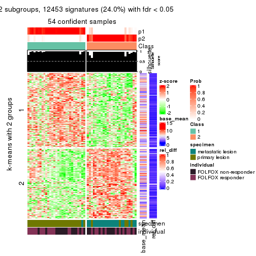
get_signatures(res, k = 3)
get_signatures(res, k = 4)
get_signatures(res, k = 5)
get_signatures(res, k = 6)

Signature heatmaps where rows are not scaled:
get_signatures(res, k = 2, scale_rows = FALSE)
get_signatures(res, k = 3, scale_rows = FALSE)
get_signatures(res, k = 4, scale_rows = FALSE)
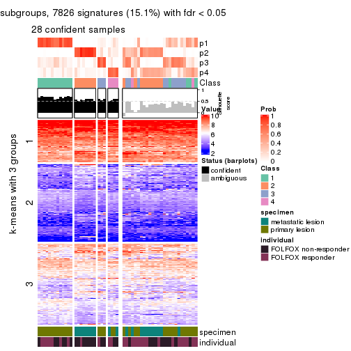
get_signatures(res, k = 5, scale_rows = FALSE)
get_signatures(res, k = 6, scale_rows = FALSE)
Compare the overlap of signatures from different k:
compare_signatures(res)
get_signature() returns a data frame invisibly. TO get the list of signatures, the function
call should be assigned to a variable explicitly. In following code, if plot argument is set
to FALSE, no heatmap is plotted while only the differential analysis is performed.
# code only for demonstration
tb = get_signature(res, k = ..., plot = FALSE)
An example of the output of tb is:
#> which_row fdr mean_1 mean_2 scaled_mean_1 scaled_mean_2 km
#> 1 38 0.042760348 8.373488 9.131774 -0.5533452 0.5164555 1
#> 2 40 0.018707592 7.106213 8.469186 -0.6173731 0.5762149 1
#> 3 55 0.019134737 10.221463 11.207825 -0.6159697 0.5749050 1
#> 4 59 0.006059896 5.921854 7.869574 -0.6899429 0.6439467 1
#> 5 60 0.018055526 8.928898 10.211722 -0.6204761 0.5791110 1
#> 6 98 0.009384629 15.714769 14.887706 0.6635654 -0.6193277 2
...
The columns in tb are:
which_row: row indices corresponding to the input matrix.fdr: FDR for the differential test. mean_x: The mean value in group x.scaled_mean_x: The mean value in group x after rows are scaled.km: Row groups if k-means clustering is applied to rows.UMAP plot which shows how samples are separated.
dimension_reduction(res, k = 2, method = "UMAP")
dimension_reduction(res, k = 3, method = "UMAP")
dimension_reduction(res, k = 4, method = "UMAP")
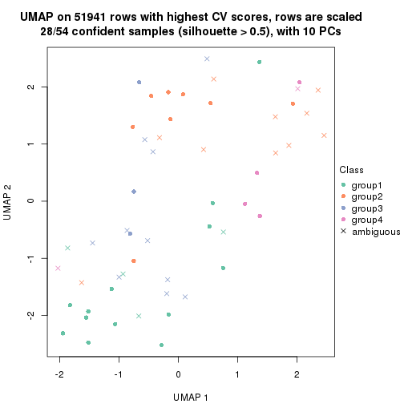
dimension_reduction(res, k = 5, method = "UMAP")
dimension_reduction(res, k = 6, method = "UMAP")

Following heatmap shows how subgroups are split when increasing k:
collect_classes(res)
Test correlation between subgroups and known annotations. If the known annotation is numeric, one-way ANOVA test is applied, and if the known annotation is discrete, chi-squared contingency table test is applied.
test_to_known_factors(res)
#> n specimen(p) individual(p) k
#> CV:skmeans 54 4.40e-08 0.5852 2
#> CV:skmeans 42 1.57e-08 0.7811 3
#> CV:skmeans 28 2.96e-05 0.2840 4
#> CV:skmeans 14 9.12e-04 0.0798 5
#> CV:skmeans 11 6.76e-03 0.3907 6
If matrix rows can be associated to genes, consider to use GO_Enrichment(res,
...) to perform function enrichment for the signature genes.
The object with results only for a single top-value method and a single partition method can be extracted as:
res = res_list["CV", "pam"]
# you can also extract it by
# res = res_list["CV:pam"]
A summary of res and all the functions that can be applied to it:
res
#> A 'ConsensusPartition' object with k = 2, 3, 4, 5, 6.
#> On a matrix with 51941 rows and 54 columns.
#> Top rows (1000, 2000, 3000, 4000, 5000) are extracted by 'CV' method.
#> Subgroups are detected by 'pam' method.
#> Performed in total 1250 partitions by row resampling.
#> Best k for subgroups seems to be 2.
#>
#> Following methods can be applied to this 'ConsensusPartition' object:
#> [1] "cola_report" "collect_classes" "collect_plots"
#> [4] "collect_stats" "colnames" "compare_signatures"
#> [7] "consensus_heatmap" "dimension_reduction" "functional_enrichment"
#> [10] "get_anno_col" "get_anno" "get_classes"
#> [13] "get_consensus" "get_matrix" "get_membership"
#> [16] "get_param" "get_signatures" "get_stats"
#> [19] "is_best_k" "is_stable_k" "membership_heatmap"
#> [22] "ncol" "nrow" "plot_ecdf"
#> [25] "rownames" "select_partition_number" "show"
#> [28] "suggest_best_k" "test_to_known_factors"
collect_plots() function collects all the plots made from res for all k (number of partitions)
into one single page to provide an easy and fast comparison between different k.
collect_plots(res)
The plots are:
k and the heatmap of
predicted classes for each k.k.k.k.All the plots in panels can be made by individual functions and they are plotted later in this section.
select_partition_number() produces several plots showing different
statistics for choosing “optimized” k. There are following statistics:
k;k, the area increased is defined as \(A_k - A_{k-1}\).The detailed explanations of these statistics can be found in the cola vignette.
Generally speaking, lower PAC score, higher mean silhouette score or higher
concordance corresponds to better partition. Rand index and Jaccard index
measure how similar the current partition is compared to partition with k-1.
If they are too similar, we won't accept k is better than k-1.
select_partition_number(res)
The numeric values for all these statistics can be obtained by get_stats().
get_stats(res)
#> k 1-PAC mean_silhouette concordance area_increased Rand Jaccard
#> 2 2 0.577 0.857 0.931 0.5061 0.491 0.491
#> 3 3 0.398 0.580 0.715 0.2775 0.848 0.703
#> 4 4 0.559 0.553 0.779 0.1585 0.817 0.548
#> 5 5 0.609 0.626 0.763 0.0596 0.918 0.689
#> 6 6 0.628 0.529 0.731 0.0369 0.964 0.828
suggest_best_k() suggests the best \(k\) based on these statistics. The rules are as follows:
NA.suggest_best_k(res)
#> [1] 2
Following shows the table of the partitions (You need to click the show/hide
code output link to see it). The membership matrix (columns with name p*)
is inferred by
clue::cl_consensus()
function with the SE method. Basically the value in the membership matrix
represents the probability to belong to a certain group. The finall class
label for an item is determined with the group with highest probability it
belongs to.
In get_classes() function, the entropy is calculated from the membership
matrix and the silhouette score is calculated from the consensus matrix.
cbind(get_classes(res, k = 2), get_membership(res, k = 2))
#> class entropy silhouette p1 p2
#> GSM710828 2 0.0376 0.9491 0.004 0.996
#> GSM710829 2 0.0000 0.9507 0.000 1.000
#> GSM710839 2 0.0376 0.9491 0.004 0.996
#> GSM710841 2 0.0000 0.9507 0.000 1.000
#> GSM710843 2 0.0000 0.9507 0.000 1.000
#> GSM710845 1 0.9000 0.6141 0.684 0.316
#> GSM710846 2 0.0000 0.9507 0.000 1.000
#> GSM710849 2 0.0000 0.9507 0.000 1.000
#> GSM710853 2 0.0000 0.9507 0.000 1.000
#> GSM710855 2 0.2423 0.9232 0.040 0.960
#> GSM710858 2 0.0000 0.9507 0.000 1.000
#> GSM710860 2 0.0000 0.9507 0.000 1.000
#> GSM710801 2 0.0000 0.9507 0.000 1.000
#> GSM710813 2 0.0000 0.9507 0.000 1.000
#> GSM710814 2 0.0000 0.9507 0.000 1.000
#> GSM710815 2 0.0000 0.9507 0.000 1.000
#> GSM710816 2 0.4562 0.8843 0.096 0.904
#> GSM710817 2 0.0376 0.9490 0.004 0.996
#> GSM710818 1 0.9580 0.4885 0.620 0.380
#> GSM710819 1 0.6973 0.7823 0.812 0.188
#> GSM710820 2 0.0000 0.9507 0.000 1.000
#> GSM710830 1 0.9996 0.0333 0.512 0.488
#> GSM710831 2 0.0376 0.9490 0.004 0.996
#> GSM710832 1 0.0000 0.8942 1.000 0.000
#> GSM710833 2 0.4815 0.8710 0.104 0.896
#> GSM710834 2 0.6712 0.8015 0.176 0.824
#> GSM710835 2 0.6148 0.8248 0.152 0.848
#> GSM710836 1 0.5178 0.8377 0.884 0.116
#> GSM710837 1 0.0000 0.8942 1.000 0.000
#> GSM710862 1 0.1843 0.8877 0.972 0.028
#> GSM710863 1 0.0000 0.8942 1.000 0.000
#> GSM710865 1 0.0000 0.8942 1.000 0.000
#> GSM710867 1 0.0000 0.8942 1.000 0.000
#> GSM710869 1 0.1414 0.8904 0.980 0.020
#> GSM710871 1 0.0000 0.8942 1.000 0.000
#> GSM710873 1 0.4690 0.8438 0.900 0.100
#> GSM710802 1 0.9248 0.5250 0.660 0.340
#> GSM710803 1 0.0000 0.8942 1.000 0.000
#> GSM710804 2 0.0000 0.9507 0.000 1.000
#> GSM710805 2 0.0000 0.9507 0.000 1.000
#> GSM710806 2 0.5408 0.8552 0.124 0.876
#> GSM710807 1 0.2603 0.8839 0.956 0.044
#> GSM710808 1 0.0000 0.8942 1.000 0.000
#> GSM710809 1 0.7950 0.7277 0.760 0.240
#> GSM710810 1 0.2423 0.8843 0.960 0.040
#> GSM710811 1 0.0376 0.8935 0.996 0.004
#> GSM710812 1 0.0000 0.8942 1.000 0.000
#> GSM710821 1 0.7139 0.7536 0.804 0.196
#> GSM710822 1 0.0000 0.8942 1.000 0.000
#> GSM710823 2 0.8499 0.6190 0.276 0.724
#> GSM710824 2 0.6343 0.8096 0.160 0.840
#> GSM710825 1 0.0000 0.8942 1.000 0.000
#> GSM710826 1 0.4562 0.8465 0.904 0.096
#> GSM710827 1 0.0000 0.8942 1.000 0.000
cbind(get_classes(res, k = 3), get_membership(res, k = 3))
#> class entropy silhouette p1 p2 p3
#> GSM710828 2 0.5926 0.713 0.000 0.644 0.356
#> GSM710829 2 0.0237 0.782 0.000 0.996 0.004
#> GSM710839 2 0.2625 0.782 0.000 0.916 0.084
#> GSM710841 2 0.2448 0.771 0.000 0.924 0.076
#> GSM710843 2 0.3644 0.789 0.004 0.872 0.124
#> GSM710845 2 0.9544 -0.134 0.192 0.420 0.388
#> GSM710846 2 0.5785 0.715 0.000 0.668 0.332
#> GSM710849 2 0.5835 0.705 0.000 0.660 0.340
#> GSM710853 2 0.5706 0.718 0.000 0.680 0.320
#> GSM710855 2 0.7424 0.694 0.064 0.648 0.288
#> GSM710858 2 0.5497 0.720 0.000 0.708 0.292
#> GSM710860 2 0.4062 0.767 0.000 0.836 0.164
#> GSM710801 2 0.5810 0.715 0.000 0.664 0.336
#> GSM710813 2 0.0592 0.782 0.000 0.988 0.012
#> GSM710814 2 0.2537 0.781 0.000 0.920 0.080
#> GSM710815 2 0.2356 0.779 0.000 0.928 0.072
#> GSM710816 2 0.6302 0.675 0.048 0.744 0.208
#> GSM710817 2 0.4411 0.734 0.016 0.844 0.140
#> GSM710818 1 0.8623 0.294 0.584 0.144 0.272
#> GSM710819 1 0.6148 0.420 0.728 0.244 0.028
#> GSM710820 2 0.5810 0.707 0.000 0.664 0.336
#> GSM710830 3 0.8181 0.582 0.312 0.096 0.592
#> GSM710831 2 0.5269 0.718 0.016 0.784 0.200
#> GSM710832 3 0.6307 0.596 0.488 0.000 0.512
#> GSM710833 2 0.3846 0.741 0.108 0.876 0.016
#> GSM710834 2 0.5961 0.697 0.136 0.788 0.076
#> GSM710835 2 0.9183 0.091 0.156 0.484 0.360
#> GSM710836 1 0.3832 0.616 0.880 0.100 0.020
#> GSM710837 3 0.6291 0.606 0.468 0.000 0.532
#> GSM710862 1 0.0237 0.680 0.996 0.000 0.004
#> GSM710863 1 0.2959 0.587 0.900 0.000 0.100
#> GSM710865 1 0.0000 0.679 1.000 0.000 0.000
#> GSM710867 1 0.3340 0.603 0.880 0.000 0.120
#> GSM710869 1 0.0424 0.679 0.992 0.000 0.008
#> GSM710871 1 0.1411 0.670 0.964 0.000 0.036
#> GSM710873 1 0.4609 0.616 0.856 0.052 0.092
#> GSM710802 3 0.8924 0.442 0.172 0.268 0.560
#> GSM710803 3 0.6299 0.602 0.476 0.000 0.524
#> GSM710804 2 0.3941 0.769 0.000 0.844 0.156
#> GSM710805 2 0.3406 0.769 0.028 0.904 0.068
#> GSM710806 3 0.8582 0.425 0.124 0.308 0.568
#> GSM710807 3 0.7054 0.611 0.456 0.020 0.524
#> GSM710808 1 0.6308 -0.606 0.508 0.000 0.492
#> GSM710809 1 0.8763 0.233 0.552 0.312 0.136
#> GSM710810 1 0.2301 0.646 0.936 0.004 0.060
#> GSM710811 1 0.6291 -0.617 0.532 0.000 0.468
#> GSM710812 1 0.0592 0.679 0.988 0.000 0.012
#> GSM710821 1 0.7016 0.361 0.728 0.156 0.116
#> GSM710822 1 0.2384 0.659 0.936 0.008 0.056
#> GSM710823 2 0.6486 0.688 0.144 0.760 0.096
#> GSM710824 2 0.5223 0.732 0.024 0.800 0.176
#> GSM710825 1 0.4399 0.592 0.864 0.044 0.092
#> GSM710826 3 0.6302 0.598 0.480 0.000 0.520
#> GSM710827 1 0.0747 0.672 0.984 0.000 0.016
cbind(get_classes(res, k = 4), get_membership(res, k = 4))
#> class entropy silhouette p1 p2 p3 p4
#> GSM710828 4 0.5062 0.4605 0.000 0.300 0.020 0.680
#> GSM710829 4 0.4961 -0.2309 0.000 0.448 0.000 0.552
#> GSM710839 4 0.1637 0.6223 0.000 0.060 0.000 0.940
#> GSM710841 2 0.4564 0.5114 0.000 0.672 0.000 0.328
#> GSM710843 2 0.5252 0.3040 0.004 0.572 0.004 0.420
#> GSM710845 4 0.1124 0.6132 0.012 0.004 0.012 0.972
#> GSM710846 4 0.4817 0.3921 0.000 0.388 0.000 0.612
#> GSM710849 2 0.0000 0.5212 0.000 1.000 0.000 0.000
#> GSM710853 4 0.4855 0.3841 0.000 0.400 0.000 0.600
#> GSM710855 2 0.4284 0.4482 0.008 0.828 0.052 0.112
#> GSM710858 2 0.4356 0.1915 0.000 0.708 0.000 0.292
#> GSM710860 4 0.2197 0.6168 0.000 0.080 0.004 0.916
#> GSM710801 2 0.4713 0.0136 0.000 0.640 0.000 0.360
#> GSM710813 4 0.4961 -0.2309 0.000 0.448 0.000 0.552
#> GSM710814 4 0.1474 0.6220 0.000 0.052 0.000 0.948
#> GSM710815 4 0.1635 0.6223 0.008 0.044 0.000 0.948
#> GSM710816 4 0.0524 0.6131 0.008 0.000 0.004 0.988
#> GSM710817 2 0.6340 0.5165 0.096 0.620 0.000 0.284
#> GSM710818 4 0.7812 0.1680 0.000 0.256 0.348 0.396
#> GSM710819 3 0.5237 0.4604 0.016 0.000 0.628 0.356
#> GSM710820 2 0.0336 0.5180 0.000 0.992 0.000 0.008
#> GSM710830 1 0.2737 0.8973 0.888 0.000 0.104 0.008
#> GSM710831 2 0.5286 0.4756 0.008 0.604 0.004 0.384
#> GSM710832 1 0.1211 0.8752 0.960 0.000 0.040 0.000
#> GSM710833 2 0.8111 0.3158 0.016 0.404 0.204 0.376
#> GSM710834 4 0.7865 -0.2056 0.040 0.376 0.108 0.476
#> GSM710835 2 0.4992 0.1447 0.476 0.524 0.000 0.000
#> GSM710836 3 0.2797 0.7792 0.032 0.000 0.900 0.068
#> GSM710837 1 0.0921 0.8693 0.972 0.000 0.028 0.000
#> GSM710862 3 0.0000 0.8012 0.000 0.000 1.000 0.000
#> GSM710863 3 0.3486 0.6751 0.188 0.000 0.812 0.000
#> GSM710865 3 0.0469 0.8006 0.012 0.000 0.988 0.000
#> GSM710867 3 0.4250 0.6072 0.276 0.000 0.724 0.000
#> GSM710869 3 0.0524 0.8016 0.008 0.000 0.988 0.004
#> GSM710871 3 0.2345 0.7786 0.100 0.000 0.900 0.000
#> GSM710873 3 0.4976 0.7422 0.140 0.032 0.792 0.036
#> GSM710802 1 0.4262 0.6523 0.756 0.000 0.008 0.236
#> GSM710803 1 0.2944 0.8923 0.868 0.000 0.128 0.004
#> GSM710804 2 0.4955 0.5580 0.084 0.772 0.000 0.144
#> GSM710805 2 0.5538 0.5064 0.000 0.644 0.036 0.320
#> GSM710806 1 0.2635 0.8927 0.904 0.020 0.076 0.000
#> GSM710807 1 0.1890 0.8648 0.936 0.008 0.056 0.000
#> GSM710808 1 0.3649 0.8270 0.796 0.000 0.204 0.000
#> GSM710809 3 0.8212 0.0537 0.020 0.208 0.408 0.364
#> GSM710810 3 0.1297 0.8001 0.020 0.000 0.964 0.016
#> GSM710811 1 0.2814 0.8857 0.868 0.000 0.132 0.000
#> GSM710812 3 0.1118 0.7977 0.036 0.000 0.964 0.000
#> GSM710821 3 0.6919 0.6040 0.116 0.116 0.688 0.080
#> GSM710822 3 0.2921 0.7642 0.140 0.000 0.860 0.000
#> GSM710823 4 0.5157 0.5200 0.116 0.016 0.084 0.784
#> GSM710824 4 0.0524 0.6131 0.008 0.000 0.004 0.988
#> GSM710825 3 0.4836 0.4593 0.008 0.000 0.672 0.320
#> GSM710826 1 0.2647 0.8926 0.880 0.000 0.120 0.000
#> GSM710827 3 0.0592 0.8002 0.016 0.000 0.984 0.000
cbind(get_classes(res, k = 5), get_membership(res, k = 5))
#> class entropy silhouette p1 p2 p3 p4 p5
#> GSM710828 4 0.5042 0.558 0.000 0.180 0.096 0.716 0.008
#> GSM710829 2 0.5420 0.542 0.000 0.524 0.000 0.416 0.060
#> GSM710839 4 0.0703 0.707 0.000 0.024 0.000 0.976 0.000
#> GSM710841 2 0.5357 0.530 0.000 0.640 0.000 0.264 0.096
#> GSM710843 2 0.5635 0.538 0.008 0.560 0.004 0.376 0.052
#> GSM710845 4 0.2393 0.684 0.016 0.000 0.004 0.900 0.080
#> GSM710846 4 0.4225 0.465 0.000 0.364 0.000 0.632 0.004
#> GSM710849 2 0.1197 0.503 0.000 0.952 0.000 0.000 0.048
#> GSM710853 4 0.4219 0.420 0.000 0.416 0.000 0.584 0.000
#> GSM710855 2 0.2124 0.500 0.000 0.900 0.000 0.004 0.096
#> GSM710858 2 0.3534 0.387 0.000 0.744 0.000 0.256 0.000
#> GSM710860 4 0.0963 0.709 0.000 0.036 0.000 0.964 0.000
#> GSM710801 2 0.3884 0.331 0.000 0.708 0.000 0.288 0.004
#> GSM710813 2 0.5314 0.537 0.000 0.528 0.000 0.420 0.052
#> GSM710814 4 0.0798 0.704 0.000 0.016 0.000 0.976 0.008
#> GSM710815 4 0.1018 0.710 0.016 0.016 0.000 0.968 0.000
#> GSM710816 4 0.2141 0.683 0.016 0.000 0.004 0.916 0.064
#> GSM710817 5 0.4575 0.661 0.004 0.068 0.000 0.184 0.744
#> GSM710818 4 0.6833 0.178 0.000 0.172 0.384 0.428 0.016
#> GSM710819 3 0.6581 0.301 0.016 0.000 0.540 0.264 0.180
#> GSM710820 2 0.0566 0.509 0.000 0.984 0.000 0.004 0.012
#> GSM710830 1 0.0794 0.866 0.972 0.000 0.028 0.000 0.000
#> GSM710831 5 0.4108 0.564 0.000 0.008 0.000 0.308 0.684
#> GSM710832 1 0.2915 0.818 0.860 0.000 0.024 0.000 0.116
#> GSM710833 2 0.6583 0.462 0.000 0.504 0.012 0.320 0.164
#> GSM710834 2 0.7796 0.483 0.144 0.468 0.024 0.304 0.060
#> GSM710835 5 0.4998 0.533 0.104 0.196 0.000 0.000 0.700
#> GSM710836 3 0.1626 0.761 0.016 0.000 0.940 0.000 0.044
#> GSM710837 1 0.3123 0.795 0.828 0.000 0.012 0.000 0.160
#> GSM710862 3 0.0162 0.773 0.004 0.000 0.996 0.000 0.000
#> GSM710863 3 0.3835 0.688 0.260 0.000 0.732 0.000 0.008
#> GSM710865 3 0.1544 0.781 0.068 0.000 0.932 0.000 0.000
#> GSM710867 3 0.5365 0.618 0.284 0.000 0.628 0.000 0.088
#> GSM710869 3 0.0162 0.773 0.000 0.000 0.996 0.000 0.004
#> GSM710871 3 0.3550 0.755 0.184 0.000 0.796 0.000 0.020
#> GSM710873 3 0.4575 0.612 0.024 0.000 0.648 0.000 0.328
#> GSM710802 1 0.5430 0.472 0.660 0.000 0.000 0.192 0.148
#> GSM710803 1 0.0566 0.865 0.984 0.000 0.012 0.000 0.004
#> GSM710804 5 0.4969 0.543 0.000 0.292 0.000 0.056 0.652
#> GSM710805 2 0.6851 0.519 0.008 0.612 0.088 0.188 0.104
#> GSM710806 1 0.1670 0.856 0.936 0.000 0.012 0.000 0.052
#> GSM710807 1 0.3958 0.774 0.780 0.000 0.044 0.000 0.176
#> GSM710808 1 0.2407 0.817 0.896 0.000 0.088 0.004 0.012
#> GSM710809 5 0.3583 0.662 0.000 0.004 0.012 0.192 0.792
#> GSM710810 3 0.3658 0.772 0.104 0.000 0.836 0.016 0.044
#> GSM710811 1 0.0865 0.864 0.972 0.000 0.024 0.000 0.004
#> GSM710812 3 0.2488 0.772 0.124 0.000 0.872 0.000 0.004
#> GSM710821 3 0.7605 0.545 0.208 0.120 0.560 0.072 0.040
#> GSM710822 3 0.3491 0.700 0.004 0.000 0.768 0.000 0.228
#> GSM710823 4 0.5380 0.510 0.004 0.012 0.076 0.684 0.224
#> GSM710824 4 0.2110 0.680 0.016 0.000 0.000 0.912 0.072
#> GSM710825 3 0.5324 0.361 0.020 0.000 0.624 0.320 0.036
#> GSM710826 1 0.0609 0.865 0.980 0.000 0.020 0.000 0.000
#> GSM710827 3 0.0290 0.773 0.000 0.000 0.992 0.000 0.008
cbind(get_classes(res, k = 6), get_membership(res, k = 6))
#> class entropy silhouette p1 p2 p3 p4 p5 p6
#> GSM710828 4 0.3701 0.5997 0.000 0.168 0.036 0.784 0.012 0.000
#> GSM710829 2 0.6010 0.5365 0.000 0.512 0.000 0.308 0.020 0.160
#> GSM710839 4 0.0603 0.6767 0.000 0.016 0.000 0.980 0.000 0.004
#> GSM710841 2 0.5218 0.5339 0.000 0.640 0.000 0.128 0.012 0.220
#> GSM710843 2 0.5984 0.4845 0.000 0.504 0.004 0.368 0.040 0.084
#> GSM710845 4 0.5758 -0.0173 0.000 0.000 0.008 0.432 0.428 0.132
#> GSM710846 4 0.3690 0.5246 0.000 0.308 0.000 0.684 0.000 0.008
#> GSM710849 2 0.1714 0.5231 0.000 0.908 0.000 0.000 0.000 0.092
#> GSM710853 4 0.4032 0.4092 0.000 0.420 0.000 0.572 0.008 0.000
#> GSM710855 2 0.2663 0.5163 0.000 0.884 0.004 0.012 0.032 0.068
#> GSM710858 2 0.3383 0.3907 0.000 0.728 0.000 0.268 0.004 0.000
#> GSM710860 4 0.0748 0.6787 0.000 0.016 0.000 0.976 0.004 0.004
#> GSM710801 2 0.3615 0.3113 0.000 0.700 0.000 0.292 0.008 0.000
#> GSM710813 2 0.6006 0.5286 0.000 0.508 0.000 0.316 0.020 0.156
#> GSM710814 4 0.1346 0.6700 0.000 0.016 0.000 0.952 0.008 0.024
#> GSM710815 4 0.1080 0.6760 0.000 0.004 0.000 0.960 0.032 0.004
#> GSM710816 4 0.3134 0.5918 0.000 0.000 0.000 0.820 0.036 0.144
#> GSM710817 6 0.5411 0.6125 0.000 0.048 0.000 0.140 0.144 0.668
#> GSM710818 4 0.6513 0.2582 0.000 0.168 0.300 0.480 0.052 0.000
#> GSM710819 5 0.6937 -0.0656 0.000 0.000 0.304 0.072 0.416 0.208
#> GSM710820 2 0.1036 0.5319 0.000 0.964 0.000 0.008 0.004 0.024
#> GSM710830 1 0.0146 0.8621 0.996 0.000 0.004 0.000 0.000 0.000
#> GSM710831 6 0.4053 0.5185 0.000 0.008 0.000 0.200 0.048 0.744
#> GSM710832 1 0.2652 0.8163 0.868 0.000 0.008 0.000 0.104 0.020
#> GSM710833 2 0.6944 0.4508 0.000 0.492 0.012 0.204 0.068 0.224
#> GSM710834 5 0.8013 0.1644 0.124 0.224 0.012 0.140 0.448 0.052
#> GSM710835 6 0.5624 0.5379 0.028 0.184 0.000 0.000 0.168 0.620
#> GSM710836 3 0.1408 0.6673 0.000 0.000 0.944 0.000 0.036 0.020
#> GSM710837 1 0.3672 0.7718 0.792 0.000 0.004 0.000 0.140 0.064
#> GSM710862 3 0.0146 0.6835 0.004 0.000 0.996 0.000 0.000 0.000
#> GSM710863 3 0.3974 0.5442 0.296 0.000 0.680 0.000 0.024 0.000
#> GSM710865 3 0.1444 0.6863 0.072 0.000 0.928 0.000 0.000 0.000
#> GSM710867 3 0.5690 0.5092 0.260 0.000 0.604 0.000 0.060 0.076
#> GSM710869 3 0.0000 0.6832 0.000 0.000 1.000 0.000 0.000 0.000
#> GSM710871 3 0.3912 0.6345 0.204 0.000 0.748 0.000 0.004 0.044
#> GSM710873 3 0.5586 0.4071 0.000 0.000 0.552 0.004 0.284 0.160
#> GSM710802 5 0.6700 0.1873 0.340 0.000 0.000 0.092 0.448 0.120
#> GSM710803 1 0.0713 0.8579 0.972 0.000 0.000 0.000 0.028 0.000
#> GSM710804 6 0.3881 0.5500 0.000 0.252 0.000 0.024 0.004 0.720
#> GSM710805 2 0.6829 0.5326 0.016 0.584 0.056 0.144 0.028 0.172
#> GSM710806 1 0.1956 0.8369 0.908 0.004 0.000 0.000 0.008 0.080
#> GSM710807 1 0.4117 0.7495 0.764 0.000 0.016 0.000 0.156 0.064
#> GSM710808 1 0.2685 0.7600 0.868 0.000 0.060 0.000 0.072 0.000
#> GSM710809 6 0.3097 0.5938 0.000 0.000 0.012 0.072 0.064 0.852
#> GSM710810 3 0.5414 0.0333 0.116 0.000 0.468 0.000 0.416 0.000
#> GSM710811 1 0.0806 0.8534 0.972 0.000 0.020 0.000 0.008 0.000
#> GSM710812 3 0.2431 0.6648 0.132 0.000 0.860 0.000 0.008 0.000
#> GSM710821 5 0.7465 0.0540 0.156 0.064 0.324 0.036 0.416 0.004
#> GSM710822 3 0.4807 0.5561 0.008 0.000 0.692 0.000 0.164 0.136
#> GSM710823 4 0.5618 0.4678 0.004 0.000 0.044 0.648 0.184 0.120
#> GSM710824 4 0.3806 0.5697 0.000 0.000 0.000 0.772 0.076 0.152
#> GSM710825 3 0.6376 -0.1431 0.048 0.000 0.436 0.132 0.384 0.000
#> GSM710826 1 0.0000 0.8614 1.000 0.000 0.000 0.000 0.000 0.000
#> GSM710827 3 0.0725 0.6840 0.012 0.000 0.976 0.000 0.012 0.000
Heatmaps for the consensus matrix. It visualizes the probability of two samples to be in a same group.
consensus_heatmap(res, k = 2)
consensus_heatmap(res, k = 3)
consensus_heatmap(res, k = 4)
consensus_heatmap(res, k = 5)
consensus_heatmap(res, k = 6)
Heatmaps for the membership of samples in all partitions to see how consistent they are:
membership_heatmap(res, k = 2)
membership_heatmap(res, k = 3)
membership_heatmap(res, k = 4)
membership_heatmap(res, k = 5)
membership_heatmap(res, k = 6)
As soon as we have had the classes for columns, we can look for signatures which are significantly different between classes which can be candidate marks for certain classes. Following are the heatmaps for signatures.
Signature heatmaps where rows are scaled:
get_signatures(res, k = 2)
get_signatures(res, k = 3)
get_signatures(res, k = 4)

get_signatures(res, k = 5)
get_signatures(res, k = 6)
Signature heatmaps where rows are not scaled:
get_signatures(res, k = 2, scale_rows = FALSE)
get_signatures(res, k = 3, scale_rows = FALSE)
get_signatures(res, k = 4, scale_rows = FALSE)
get_signatures(res, k = 5, scale_rows = FALSE)
get_signatures(res, k = 6, scale_rows = FALSE)
Compare the overlap of signatures from different k:
compare_signatures(res)
get_signature() returns a data frame invisibly. TO get the list of signatures, the function
call should be assigned to a variable explicitly. In following code, if plot argument is set
to FALSE, no heatmap is plotted while only the differential analysis is performed.
# code only for demonstration
tb = get_signature(res, k = ..., plot = FALSE)
An example of the output of tb is:
#> which_row fdr mean_1 mean_2 scaled_mean_1 scaled_mean_2 km
#> 1 38 0.042760348 8.373488 9.131774 -0.5533452 0.5164555 1
#> 2 40 0.018707592 7.106213 8.469186 -0.6173731 0.5762149 1
#> 3 55 0.019134737 10.221463 11.207825 -0.6159697 0.5749050 1
#> 4 59 0.006059896 5.921854 7.869574 -0.6899429 0.6439467 1
#> 5 60 0.018055526 8.928898 10.211722 -0.6204761 0.5791110 1
#> 6 98 0.009384629 15.714769 14.887706 0.6635654 -0.6193277 2
...
The columns in tb are:
which_row: row indices corresponding to the input matrix.fdr: FDR for the differential test. mean_x: The mean value in group x.scaled_mean_x: The mean value in group x after rows are scaled.km: Row groups if k-means clustering is applied to rows.UMAP plot which shows how samples are separated.
dimension_reduction(res, k = 2, method = "UMAP")
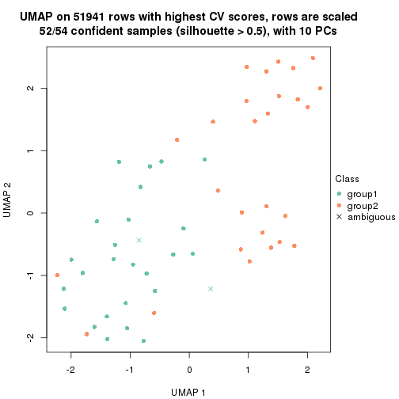
dimension_reduction(res, k = 3, method = "UMAP")
dimension_reduction(res, k = 4, method = "UMAP")
dimension_reduction(res, k = 5, method = "UMAP")
dimension_reduction(res, k = 6, method = "UMAP")
Following heatmap shows how subgroups are split when increasing k:
collect_classes(res)
Test correlation between subgroups and known annotations. If the known annotation is numeric, one-way ANOVA test is applied, and if the known annotation is discrete, chi-squared contingency table test is applied.
test_to_known_factors(res)
#> n specimen(p) individual(p) k
#> CV:pam 52 4.92e-05 0.579 2
#> CV:pam 44 9.39e-06 0.888 3
#> CV:pam 37 4.81e-05 0.418 4
#> CV:pam 44 5.84e-06 0.644 5
#> CV:pam 39 1.25e-05 0.571 6
If matrix rows can be associated to genes, consider to use GO_Enrichment(res,
...) to perform function enrichment for the signature genes.
The object with results only for a single top-value method and a single partition method can be extracted as:
res = res_list["CV", "mclust"]
# you can also extract it by
# res = res_list["CV:mclust"]
A summary of res and all the functions that can be applied to it:
res
#> A 'ConsensusPartition' object with k = 2, 3, 4, 5, 6.
#> On a matrix with 51941 rows and 54 columns.
#> Top rows (1000, 2000, 3000, 4000, 5000) are extracted by 'CV' method.
#> Subgroups are detected by 'mclust' method.
#> Performed in total 1250 partitions by row resampling.
#> Best k for subgroups seems to be 4.
#>
#> Following methods can be applied to this 'ConsensusPartition' object:
#> [1] "cola_report" "collect_classes" "collect_plots"
#> [4] "collect_stats" "colnames" "compare_signatures"
#> [7] "consensus_heatmap" "dimension_reduction" "functional_enrichment"
#> [10] "get_anno_col" "get_anno" "get_classes"
#> [13] "get_consensus" "get_matrix" "get_membership"
#> [16] "get_param" "get_signatures" "get_stats"
#> [19] "is_best_k" "is_stable_k" "membership_heatmap"
#> [22] "ncol" "nrow" "plot_ecdf"
#> [25] "rownames" "select_partition_number" "show"
#> [28] "suggest_best_k" "test_to_known_factors"
collect_plots() function collects all the plots made from res for all k (number of partitions)
into one single page to provide an easy and fast comparison between different k.
collect_plots(res)
The plots are:
k and the heatmap of
predicted classes for each k.k.k.k.All the plots in panels can be made by individual functions and they are plotted later in this section.
select_partition_number() produces several plots showing different
statistics for choosing “optimized” k. There are following statistics:
k;k, the area increased is defined as \(A_k - A_{k-1}\).The detailed explanations of these statistics can be found in the cola vignette.
Generally speaking, lower PAC score, higher mean silhouette score or higher
concordance corresponds to better partition. Rand index and Jaccard index
measure how similar the current partition is compared to partition with k-1.
If they are too similar, we won't accept k is better than k-1.
select_partition_number(res)
The numeric values for all these statistics can be obtained by get_stats().
get_stats(res)
#> k 1-PAC mean_silhouette concordance area_increased Rand Jaccard
#> 2 2 0.466 0.804 0.840 0.4238 0.497 0.497
#> 3 3 0.404 0.583 0.797 0.4841 0.657 0.418
#> 4 4 0.631 0.732 0.852 0.1484 0.800 0.511
#> 5 5 0.635 0.610 0.703 0.0801 0.891 0.640
#> 6 6 0.638 0.570 0.750 0.0484 0.892 0.555
suggest_best_k() suggests the best \(k\) based on these statistics. The rules are as follows:
NA.suggest_best_k(res)
#> [1] 4
Following shows the table of the partitions (You need to click the show/hide
code output link to see it). The membership matrix (columns with name p*)
is inferred by
clue::cl_consensus()
function with the SE method. Basically the value in the membership matrix
represents the probability to belong to a certain group. The finall class
label for an item is determined with the group with highest probability it
belongs to.
In get_classes() function, the entropy is calculated from the membership
matrix and the silhouette score is calculated from the consensus matrix.
cbind(get_classes(res, k = 2), get_membership(res, k = 2))
#> class entropy silhouette p1 p2
#> GSM710828 2 0.3733 0.789 0.072 0.928
#> GSM710829 2 0.7056 0.838 0.192 0.808
#> GSM710839 2 0.0376 0.751 0.004 0.996
#> GSM710841 2 0.7376 0.835 0.208 0.792
#> GSM710843 2 0.4431 0.799 0.092 0.908
#> GSM710845 2 0.9866 0.509 0.432 0.568
#> GSM710846 2 0.7056 0.838 0.192 0.808
#> GSM710849 2 0.7376 0.835 0.208 0.792
#> GSM710853 2 0.7056 0.838 0.192 0.808
#> GSM710855 2 0.7602 0.828 0.220 0.780
#> GSM710858 2 0.7056 0.838 0.192 0.808
#> GSM710860 2 0.0376 0.751 0.004 0.996
#> GSM710801 2 0.0376 0.751 0.004 0.996
#> GSM710813 2 0.8016 0.804 0.244 0.756
#> GSM710814 2 0.0376 0.751 0.004 0.996
#> GSM710815 2 0.0376 0.751 0.004 0.996
#> GSM710816 2 0.9522 0.619 0.372 0.628
#> GSM710817 2 0.9933 0.454 0.452 0.548
#> GSM710818 2 0.7376 0.835 0.208 0.792
#> GSM710819 1 0.4298 0.910 0.912 0.088
#> GSM710820 2 0.7056 0.838 0.192 0.808
#> GSM710830 1 0.0376 0.890 0.996 0.004
#> GSM710831 2 0.9866 0.509 0.432 0.568
#> GSM710832 1 0.0000 0.894 1.000 0.000
#> GSM710833 1 0.4298 0.910 0.912 0.088
#> GSM710834 1 0.9983 -0.242 0.524 0.476
#> GSM710835 1 0.4298 0.910 0.912 0.088
#> GSM710836 1 0.4298 0.910 0.912 0.088
#> GSM710837 1 0.4298 0.910 0.912 0.088
#> GSM710862 1 0.4022 0.911 0.920 0.080
#> GSM710863 1 0.0376 0.897 0.996 0.004
#> GSM710865 1 0.1414 0.903 0.980 0.020
#> GSM710867 1 0.1843 0.905 0.972 0.028
#> GSM710869 1 0.4298 0.910 0.912 0.088
#> GSM710871 1 0.0672 0.899 0.992 0.008
#> GSM710873 1 0.4298 0.910 0.912 0.088
#> GSM710802 1 0.3879 0.911 0.924 0.076
#> GSM710803 1 0.0376 0.897 0.996 0.004
#> GSM710804 2 0.7376 0.835 0.208 0.792
#> GSM710805 2 0.7602 0.828 0.220 0.780
#> GSM710806 1 0.4298 0.910 0.912 0.088
#> GSM710807 1 0.4298 0.910 0.912 0.088
#> GSM710808 1 0.0376 0.890 0.996 0.004
#> GSM710809 1 0.4298 0.910 0.912 0.088
#> GSM710810 1 0.5178 0.872 0.884 0.116
#> GSM710811 1 0.0000 0.894 1.000 0.000
#> GSM710812 1 0.0376 0.897 0.996 0.004
#> GSM710821 1 0.2778 0.909 0.952 0.048
#> GSM710822 1 0.4298 0.910 0.912 0.088
#> GSM710823 1 0.8499 0.573 0.724 0.276
#> GSM710824 2 0.9922 0.466 0.448 0.552
#> GSM710825 1 0.6247 0.826 0.844 0.156
#> GSM710826 1 0.0672 0.894 0.992 0.008
#> GSM710827 1 0.0376 0.897 0.996 0.004
cbind(get_classes(res, k = 3), get_membership(res, k = 3))
#> class entropy silhouette p1 p2 p3
#> GSM710828 2 0.2066 0.733 0.000 0.940 0.060
#> GSM710829 2 0.5706 0.388 0.000 0.680 0.320
#> GSM710839 2 0.0237 0.744 0.000 0.996 0.004
#> GSM710841 3 0.6274 0.193 0.000 0.456 0.544
#> GSM710843 2 0.1964 0.735 0.000 0.944 0.056
#> GSM710845 2 0.8848 0.313 0.156 0.560 0.284
#> GSM710846 2 0.6299 -0.156 0.000 0.524 0.476
#> GSM710849 3 0.6126 0.252 0.000 0.400 0.600
#> GSM710853 3 0.6308 0.133 0.000 0.492 0.508
#> GSM710855 3 0.6483 0.200 0.004 0.452 0.544
#> GSM710858 3 0.6307 0.141 0.000 0.488 0.512
#> GSM710860 2 0.0237 0.744 0.000 0.996 0.004
#> GSM710801 2 0.0237 0.744 0.000 0.996 0.004
#> GSM710813 2 0.5864 0.549 0.008 0.704 0.288
#> GSM710814 2 0.0237 0.744 0.000 0.996 0.004
#> GSM710815 2 0.0237 0.744 0.000 0.996 0.004
#> GSM710816 2 0.6451 0.503 0.024 0.684 0.292
#> GSM710817 3 0.3499 0.582 0.028 0.072 0.900
#> GSM710818 2 0.5517 0.483 0.004 0.728 0.268
#> GSM710819 3 0.3412 0.640 0.124 0.000 0.876
#> GSM710820 3 0.6307 0.141 0.000 0.488 0.512
#> GSM710830 1 0.0237 0.869 0.996 0.000 0.004
#> GSM710831 3 0.2537 0.572 0.000 0.080 0.920
#> GSM710832 1 0.0892 0.873 0.980 0.000 0.020
#> GSM710833 3 0.3682 0.639 0.116 0.008 0.876
#> GSM710834 1 0.8693 0.501 0.592 0.232 0.176
#> GSM710835 3 0.5397 0.506 0.280 0.000 0.720
#> GSM710836 3 0.4346 0.630 0.184 0.000 0.816
#> GSM710837 3 0.6398 0.344 0.416 0.004 0.580
#> GSM710862 1 0.6333 0.583 0.656 0.012 0.332
#> GSM710863 1 0.2063 0.875 0.948 0.008 0.044
#> GSM710865 1 0.2878 0.855 0.904 0.000 0.096
#> GSM710867 1 0.5982 0.449 0.668 0.004 0.328
#> GSM710869 3 0.4605 0.617 0.204 0.000 0.796
#> GSM710871 1 0.3193 0.844 0.896 0.004 0.100
#> GSM710873 3 0.3551 0.641 0.132 0.000 0.868
#> GSM710802 1 0.5737 0.697 0.732 0.012 0.256
#> GSM710803 1 0.0237 0.869 0.996 0.000 0.004
#> GSM710804 3 0.6033 0.358 0.004 0.336 0.660
#> GSM710805 3 0.6287 0.455 0.024 0.272 0.704
#> GSM710806 3 0.6079 0.328 0.388 0.000 0.612
#> GSM710807 3 0.6033 0.485 0.336 0.004 0.660
#> GSM710808 1 0.0237 0.869 0.996 0.000 0.004
#> GSM710809 3 0.3482 0.641 0.128 0.000 0.872
#> GSM710810 1 0.4280 0.832 0.856 0.020 0.124
#> GSM710811 1 0.0237 0.869 0.996 0.000 0.004
#> GSM710812 1 0.1765 0.876 0.956 0.004 0.040
#> GSM710821 1 0.2384 0.873 0.936 0.008 0.056
#> GSM710822 3 0.3619 0.641 0.136 0.000 0.864
#> GSM710823 3 0.3845 0.638 0.116 0.012 0.872
#> GSM710824 3 0.8202 0.118 0.080 0.376 0.544
#> GSM710825 1 0.3966 0.850 0.876 0.024 0.100
#> GSM710826 1 0.0237 0.869 0.996 0.000 0.004
#> GSM710827 1 0.1399 0.875 0.968 0.004 0.028
cbind(get_classes(res, k = 4), get_membership(res, k = 4))
#> class entropy silhouette p1 p2 p3 p4
#> GSM710828 4 0.0336 0.833 0.000 0.000 0.008 0.992
#> GSM710829 4 0.0592 0.832 0.000 0.000 0.016 0.984
#> GSM710839 4 0.0188 0.832 0.000 0.004 0.000 0.996
#> GSM710841 2 0.5700 0.289 0.000 0.560 0.028 0.412
#> GSM710843 4 0.0376 0.833 0.000 0.004 0.004 0.992
#> GSM710845 4 0.7617 0.472 0.188 0.064 0.132 0.616
#> GSM710846 4 0.1284 0.827 0.000 0.024 0.012 0.964
#> GSM710849 2 0.4204 0.651 0.000 0.788 0.020 0.192
#> GSM710853 4 0.4136 0.673 0.000 0.196 0.016 0.788
#> GSM710855 3 0.7218 0.150 0.000 0.164 0.520 0.316
#> GSM710858 4 0.4502 0.625 0.000 0.236 0.016 0.748
#> GSM710860 4 0.0000 0.832 0.000 0.000 0.000 1.000
#> GSM710801 4 0.0592 0.829 0.000 0.016 0.000 0.984
#> GSM710813 4 0.4175 0.687 0.000 0.016 0.200 0.784
#> GSM710814 4 0.0188 0.832 0.000 0.004 0.000 0.996
#> GSM710815 4 0.0000 0.832 0.000 0.000 0.000 1.000
#> GSM710816 4 0.4529 0.681 0.004 0.024 0.196 0.776
#> GSM710817 2 0.3837 0.662 0.000 0.776 0.224 0.000
#> GSM710818 4 0.0524 0.833 0.000 0.004 0.008 0.988
#> GSM710819 3 0.0376 0.859 0.004 0.004 0.992 0.000
#> GSM710820 4 0.4468 0.625 0.000 0.232 0.016 0.752
#> GSM710830 1 0.0336 0.845 0.992 0.008 0.000 0.000
#> GSM710831 2 0.4304 0.613 0.000 0.716 0.284 0.000
#> GSM710832 1 0.0336 0.844 0.992 0.008 0.000 0.000
#> GSM710833 3 0.0524 0.861 0.008 0.004 0.988 0.000
#> GSM710834 1 0.7562 0.519 0.560 0.164 0.020 0.256
#> GSM710835 2 0.4290 0.665 0.016 0.772 0.212 0.000
#> GSM710836 3 0.1004 0.859 0.024 0.004 0.972 0.000
#> GSM710837 1 0.5174 0.488 0.620 0.012 0.368 0.000
#> GSM710862 1 0.4322 0.838 0.804 0.152 0.044 0.000
#> GSM710863 1 0.3219 0.848 0.836 0.164 0.000 0.000
#> GSM710865 1 0.3355 0.849 0.836 0.160 0.004 0.000
#> GSM710867 1 0.1398 0.839 0.956 0.004 0.040 0.000
#> GSM710869 3 0.2282 0.818 0.052 0.024 0.924 0.000
#> GSM710871 1 0.1284 0.840 0.964 0.012 0.024 0.000
#> GSM710873 3 0.0524 0.861 0.008 0.004 0.988 0.000
#> GSM710802 1 0.4182 0.756 0.796 0.024 0.180 0.000
#> GSM710803 1 0.0336 0.847 0.992 0.008 0.000 0.000
#> GSM710804 2 0.4940 0.693 0.000 0.776 0.096 0.128
#> GSM710805 4 0.5982 0.607 0.000 0.112 0.204 0.684
#> GSM710806 2 0.5558 0.411 0.364 0.608 0.028 0.000
#> GSM710807 1 0.5285 0.245 0.524 0.008 0.468 0.000
#> GSM710808 1 0.0188 0.846 0.996 0.004 0.000 0.000
#> GSM710809 3 0.0672 0.861 0.008 0.008 0.984 0.000
#> GSM710810 1 0.3695 0.847 0.828 0.156 0.016 0.000
#> GSM710811 1 0.0336 0.845 0.992 0.008 0.000 0.000
#> GSM710812 1 0.3219 0.848 0.836 0.164 0.000 0.000
#> GSM710821 1 0.3257 0.850 0.844 0.152 0.004 0.000
#> GSM710822 3 0.1452 0.848 0.036 0.008 0.956 0.000
#> GSM710823 3 0.4424 0.684 0.036 0.008 0.808 0.148
#> GSM710824 4 0.6832 0.540 0.120 0.024 0.204 0.652
#> GSM710825 1 0.3577 0.848 0.832 0.156 0.012 0.000
#> GSM710826 1 0.0469 0.843 0.988 0.012 0.000 0.000
#> GSM710827 1 0.2921 0.852 0.860 0.140 0.000 0.000
cbind(get_classes(res, k = 5), get_membership(res, k = 5))
#> class entropy silhouette p1 p2 p3 p4 p5
#> GSM710828 4 0.4156 0.6192 0.000 0.288 0.004 0.700 0.008
#> GSM710829 2 0.4338 0.2986 0.000 0.684 0.008 0.300 0.008
#> GSM710839 4 0.4147 0.6101 0.000 0.316 0.000 0.676 0.008
#> GSM710841 2 0.4986 0.4829 0.000 0.732 0.024 0.064 0.180
#> GSM710843 4 0.4416 0.5967 0.000 0.356 0.012 0.632 0.000
#> GSM710845 4 0.4091 0.4724 0.092 0.000 0.096 0.804 0.008
#> GSM710846 2 0.2513 0.6141 0.000 0.876 0.008 0.116 0.000
#> GSM710849 5 0.4801 0.4476 0.000 0.396 0.012 0.008 0.584
#> GSM710853 2 0.0404 0.7002 0.000 0.988 0.000 0.012 0.000
#> GSM710855 2 0.5601 0.1757 0.000 0.528 0.404 0.004 0.064
#> GSM710858 2 0.0404 0.7002 0.000 0.988 0.000 0.012 0.000
#> GSM710860 4 0.4101 0.5813 0.000 0.372 0.000 0.628 0.000
#> GSM710801 4 0.4510 0.5312 0.000 0.432 0.000 0.560 0.008
#> GSM710813 4 0.6723 0.2984 0.000 0.380 0.124 0.468 0.028
#> GSM710814 4 0.4147 0.6101 0.000 0.316 0.000 0.676 0.008
#> GSM710815 4 0.4327 0.5920 0.000 0.360 0.000 0.632 0.008
#> GSM710816 4 0.3590 0.4925 0.008 0.004 0.136 0.828 0.024
#> GSM710817 5 0.4712 0.7178 0.000 0.100 0.168 0.000 0.732
#> GSM710818 4 0.3252 0.5898 0.000 0.156 0.008 0.828 0.008
#> GSM710819 3 0.1356 0.8186 0.000 0.004 0.956 0.012 0.028
#> GSM710820 2 0.0290 0.6998 0.000 0.992 0.000 0.008 0.000
#> GSM710830 1 0.2813 0.7409 0.832 0.000 0.000 0.000 0.168
#> GSM710831 5 0.5901 0.6809 0.000 0.136 0.208 0.016 0.640
#> GSM710832 1 0.2358 0.7565 0.888 0.000 0.008 0.000 0.104
#> GSM710833 3 0.1106 0.8220 0.000 0.000 0.964 0.024 0.012
#> GSM710834 4 0.4719 0.2868 0.264 0.000 0.024 0.696 0.016
#> GSM710835 5 0.5441 0.7142 0.040 0.096 0.148 0.000 0.716
#> GSM710836 3 0.1978 0.8148 0.024 0.000 0.932 0.032 0.012
#> GSM710837 1 0.5919 0.0896 0.480 0.000 0.416 0.000 0.104
#> GSM710862 1 0.5781 0.6246 0.628 0.000 0.068 0.276 0.028
#> GSM710863 1 0.3652 0.7401 0.832 0.004 0.008 0.120 0.036
#> GSM710865 1 0.4038 0.7369 0.808 0.000 0.032 0.132 0.028
#> GSM710867 1 0.4094 0.7263 0.788 0.000 0.084 0.000 0.128
#> GSM710869 3 0.2945 0.7804 0.056 0.000 0.884 0.044 0.016
#> GSM710871 1 0.3647 0.7422 0.816 0.000 0.052 0.000 0.132
#> GSM710873 3 0.0794 0.8158 0.000 0.000 0.972 0.000 0.028
#> GSM710802 1 0.6672 0.5487 0.552 0.000 0.148 0.268 0.032
#> GSM710803 1 0.2233 0.7623 0.904 0.000 0.016 0.000 0.080
#> GSM710804 5 0.5560 0.6310 0.000 0.220 0.048 0.052 0.680
#> GSM710805 2 0.6963 0.3661 0.000 0.556 0.132 0.244 0.068
#> GSM710806 5 0.5116 0.4766 0.248 0.032 0.032 0.000 0.688
#> GSM710807 3 0.5840 0.0171 0.416 0.000 0.488 0.000 0.096
#> GSM710808 1 0.2813 0.7409 0.832 0.000 0.000 0.000 0.168
#> GSM710809 3 0.1364 0.8081 0.000 0.012 0.952 0.000 0.036
#> GSM710810 1 0.5613 0.6020 0.612 0.000 0.040 0.316 0.032
#> GSM710811 1 0.3355 0.7449 0.832 0.000 0.036 0.000 0.132
#> GSM710812 1 0.3504 0.7443 0.844 0.004 0.008 0.108 0.036
#> GSM710821 1 0.2630 0.7624 0.892 0.000 0.012 0.080 0.016
#> GSM710822 3 0.0693 0.8234 0.012 0.000 0.980 0.000 0.008
#> GSM710823 3 0.4352 0.6143 0.020 0.000 0.732 0.236 0.012
#> GSM710824 4 0.4049 0.4667 0.040 0.000 0.164 0.788 0.008
#> GSM710825 1 0.4957 0.6244 0.648 0.000 0.012 0.312 0.028
#> GSM710826 1 0.2929 0.7344 0.820 0.000 0.000 0.000 0.180
#> GSM710827 1 0.2788 0.7554 0.892 0.004 0.008 0.064 0.032
cbind(get_classes(res, k = 6), get_membership(res, k = 6))
#> class entropy silhouette p1 p2 p3 p4 p5 p6
#> GSM710828 4 0.0790 0.7610 0.000 0.000 0.000 0.968 0.032 0.000
#> GSM710829 4 0.3944 -0.0335 0.000 0.428 0.004 0.568 0.000 0.000
#> GSM710839 4 0.0260 0.7624 0.000 0.000 0.000 0.992 0.008 0.000
#> GSM710841 2 0.5055 0.4221 0.000 0.652 0.004 0.160 0.000 0.184
#> GSM710843 4 0.1313 0.7623 0.000 0.028 0.004 0.952 0.016 0.000
#> GSM710845 4 0.6094 -0.2172 0.096 0.000 0.036 0.432 0.432 0.004
#> GSM710846 2 0.2527 0.6828 0.000 0.832 0.000 0.168 0.000 0.000
#> GSM710849 6 0.4157 0.3878 0.000 0.444 0.000 0.012 0.000 0.544
#> GSM710853 2 0.1444 0.7165 0.000 0.928 0.000 0.072 0.000 0.000
#> GSM710855 2 0.5721 0.3234 0.000 0.628 0.240 0.032 0.080 0.020
#> GSM710858 2 0.1588 0.7158 0.000 0.924 0.000 0.072 0.000 0.004
#> GSM710860 4 0.0790 0.7576 0.000 0.032 0.000 0.968 0.000 0.000
#> GSM710801 4 0.2378 0.6777 0.000 0.152 0.000 0.848 0.000 0.000
#> GSM710813 4 0.6047 0.4535 0.000 0.168 0.060 0.632 0.016 0.124
#> GSM710814 4 0.0260 0.7624 0.000 0.000 0.000 0.992 0.008 0.000
#> GSM710815 4 0.0790 0.7576 0.000 0.032 0.000 0.968 0.000 0.000
#> GSM710816 4 0.5587 0.5086 0.000 0.000 0.156 0.624 0.192 0.028
#> GSM710817 6 0.1967 0.7225 0.000 0.084 0.012 0.000 0.000 0.904
#> GSM710818 4 0.2178 0.7147 0.000 0.000 0.000 0.868 0.132 0.000
#> GSM710819 3 0.3386 0.6908 0.000 0.024 0.832 0.000 0.104 0.040
#> GSM710820 2 0.1327 0.7130 0.000 0.936 0.000 0.064 0.000 0.000
#> GSM710830 1 0.0622 0.7429 0.980 0.000 0.000 0.000 0.012 0.008
#> GSM710831 6 0.4061 0.6487 0.000 0.164 0.088 0.000 0.000 0.748
#> GSM710832 1 0.2178 0.7094 0.868 0.000 0.000 0.000 0.132 0.000
#> GSM710833 3 0.2928 0.7072 0.000 0.012 0.860 0.004 0.100 0.024
#> GSM710834 5 0.5408 0.4685 0.144 0.000 0.000 0.304 0.552 0.000
#> GSM710835 6 0.1989 0.7172 0.000 0.052 0.028 0.000 0.004 0.916
#> GSM710836 3 0.2871 0.7278 0.040 0.004 0.868 0.000 0.080 0.008
#> GSM710837 3 0.6152 0.1422 0.380 0.012 0.460 0.000 0.012 0.136
#> GSM710862 5 0.5187 0.6531 0.248 0.000 0.036 0.068 0.648 0.000
#> GSM710863 5 0.3706 0.5284 0.380 0.000 0.000 0.000 0.620 0.000
#> GSM710865 5 0.4167 0.5424 0.368 0.000 0.020 0.000 0.612 0.000
#> GSM710867 1 0.5264 0.5318 0.652 0.012 0.248 0.000 0.024 0.064
#> GSM710869 3 0.3946 0.6854 0.080 0.004 0.792 0.000 0.112 0.012
#> GSM710871 1 0.4797 0.6223 0.708 0.012 0.208 0.000 0.024 0.048
#> GSM710873 3 0.2261 0.7244 0.000 0.008 0.884 0.000 0.004 0.104
#> GSM710802 5 0.6095 0.6110 0.164 0.000 0.120 0.076 0.628 0.012
#> GSM710803 1 0.2703 0.6755 0.824 0.000 0.004 0.000 0.172 0.000
#> GSM710804 6 0.4474 0.6324 0.000 0.188 0.000 0.108 0.000 0.704
#> GSM710805 2 0.7118 0.3124 0.000 0.472 0.064 0.304 0.040 0.120
#> GSM710806 6 0.6769 0.5315 0.208 0.052 0.056 0.000 0.116 0.568
#> GSM710807 3 0.5769 0.4275 0.268 0.012 0.576 0.000 0.008 0.136
#> GSM710808 1 0.0891 0.7428 0.968 0.000 0.000 0.000 0.024 0.008
#> GSM710809 3 0.2615 0.7131 0.000 0.008 0.852 0.000 0.004 0.136
#> GSM710810 5 0.4837 0.6578 0.232 0.000 0.008 0.092 0.668 0.000
#> GSM710811 1 0.2595 0.7351 0.872 0.000 0.084 0.000 0.044 0.000
#> GSM710812 5 0.3727 0.5157 0.388 0.000 0.000 0.000 0.612 0.000
#> GSM710821 1 0.4653 0.2243 0.664 0.000 0.004 0.072 0.260 0.000
#> GSM710822 3 0.1606 0.7373 0.004 0.000 0.932 0.000 0.008 0.056
#> GSM710823 3 0.5180 0.4739 0.016 0.000 0.632 0.056 0.284 0.012
#> GSM710824 5 0.6033 -0.0114 0.000 0.000 0.168 0.376 0.444 0.012
#> GSM710825 5 0.4999 0.6489 0.240 0.000 0.000 0.128 0.632 0.000
#> GSM710826 1 0.2056 0.6948 0.904 0.004 0.000 0.000 0.080 0.012
#> GSM710827 5 0.3866 0.2711 0.484 0.000 0.000 0.000 0.516 0.000
Heatmaps for the consensus matrix. It visualizes the probability of two samples to be in a same group.
consensus_heatmap(res, k = 2)
consensus_heatmap(res, k = 3)

consensus_heatmap(res, k = 4)
consensus_heatmap(res, k = 5)
consensus_heatmap(res, k = 6)
Heatmaps for the membership of samples in all partitions to see how consistent they are:
membership_heatmap(res, k = 2)
membership_heatmap(res, k = 3)
membership_heatmap(res, k = 4)
membership_heatmap(res, k = 5)
membership_heatmap(res, k = 6)
As soon as we have had the classes for columns, we can look for signatures which are significantly different between classes which can be candidate marks for certain classes. Following are the heatmaps for signatures.
Signature heatmaps where rows are scaled:
get_signatures(res, k = 2)
get_signatures(res, k = 3)
get_signatures(res, k = 4)

get_signatures(res, k = 5)
get_signatures(res, k = 6)
Signature heatmaps where rows are not scaled:
get_signatures(res, k = 2, scale_rows = FALSE)
get_signatures(res, k = 3, scale_rows = FALSE)
get_signatures(res, k = 4, scale_rows = FALSE)
get_signatures(res, k = 5, scale_rows = FALSE)
get_signatures(res, k = 6, scale_rows = FALSE)
Compare the overlap of signatures from different k:
compare_signatures(res)
get_signature() returns a data frame invisibly. TO get the list of signatures, the function
call should be assigned to a variable explicitly. In following code, if plot argument is set
to FALSE, no heatmap is plotted while only the differential analysis is performed.
# code only for demonstration
tb = get_signature(res, k = ..., plot = FALSE)
An example of the output of tb is:
#> which_row fdr mean_1 mean_2 scaled_mean_1 scaled_mean_2 km
#> 1 38 0.042760348 8.373488 9.131774 -0.5533452 0.5164555 1
#> 2 40 0.018707592 7.106213 8.469186 -0.6173731 0.5762149 1
#> 3 55 0.019134737 10.221463 11.207825 -0.6159697 0.5749050 1
#> 4 59 0.006059896 5.921854 7.869574 -0.6899429 0.6439467 1
#> 5 60 0.018055526 8.928898 10.211722 -0.6204761 0.5791110 1
#> 6 98 0.009384629 15.714769 14.887706 0.6635654 -0.6193277 2
...
The columns in tb are:
which_row: row indices corresponding to the input matrix.fdr: FDR for the differential test. mean_x: The mean value in group x.scaled_mean_x: The mean value in group x after rows are scaled.km: Row groups if k-means clustering is applied to rows.UMAP plot which shows how samples are separated.
dimension_reduction(res, k = 2, method = "UMAP")
dimension_reduction(res, k = 3, method = "UMAP")
dimension_reduction(res, k = 4, method = "UMAP")

dimension_reduction(res, k = 5, method = "UMAP")
dimension_reduction(res, k = 6, method = "UMAP")
Following heatmap shows how subgroups are split when increasing k:
collect_classes(res)
Test correlation between subgroups and known annotations. If the known annotation is numeric, one-way ANOVA test is applied, and if the known annotation is discrete, chi-squared contingency table test is applied.
test_to_known_factors(res)
#> n specimen(p) individual(p) k
#> CV:mclust 51 1.08e-08 0.468 2
#> CV:mclust 37 4.64e-07 0.782 3
#> CV:mclust 48 6.30e-07 0.941 4
#> CV:mclust 41 8.29e-07 0.826 5
#> CV:mclust 40 3.89e-06 0.902 6
If matrix rows can be associated to genes, consider to use GO_Enrichment(res,
...) to perform function enrichment for the signature genes.
The object with results only for a single top-value method and a single partition method can be extracted as:
res = res_list["CV", "NMF"]
# you can also extract it by
# res = res_list["CV:NMF"]
A summary of res and all the functions that can be applied to it:
res
#> A 'ConsensusPartition' object with k = 2, 3, 4, 5, 6.
#> On a matrix with 51941 rows and 54 columns.
#> Top rows (1000, 2000, 3000, 4000, 5000) are extracted by 'CV' method.
#> Subgroups are detected by 'NMF' method.
#> Performed in total 1250 partitions by row resampling.
#> Best k for subgroups seems to be 2.
#>
#> Following methods can be applied to this 'ConsensusPartition' object:
#> [1] "cola_report" "collect_classes" "collect_plots"
#> [4] "collect_stats" "colnames" "compare_signatures"
#> [7] "consensus_heatmap" "dimension_reduction" "functional_enrichment"
#> [10] "get_anno_col" "get_anno" "get_classes"
#> [13] "get_consensus" "get_matrix" "get_membership"
#> [16] "get_param" "get_signatures" "get_stats"
#> [19] "is_best_k" "is_stable_k" "membership_heatmap"
#> [22] "ncol" "nrow" "plot_ecdf"
#> [25] "rownames" "select_partition_number" "show"
#> [28] "suggest_best_k" "test_to_known_factors"
collect_plots() function collects all the plots made from res for all k (number of partitions)
into one single page to provide an easy and fast comparison between different k.
collect_plots(res)
The plots are:
k and the heatmap of
predicted classes for each k.k.k.k.All the plots in panels can be made by individual functions and they are plotted later in this section.
select_partition_number() produces several plots showing different
statistics for choosing “optimized” k. There are following statistics:
k;k, the area increased is defined as \(A_k - A_{k-1}\).The detailed explanations of these statistics can be found in the cola vignette.
Generally speaking, lower PAC score, higher mean silhouette score or higher
concordance corresponds to better partition. Rand index and Jaccard index
measure how similar the current partition is compared to partition with k-1.
If they are too similar, we won't accept k is better than k-1.
select_partition_number(res)
The numeric values for all these statistics can be obtained by get_stats().
get_stats(res)
#> k 1-PAC mean_silhouette concordance area_increased Rand Jaccard
#> 2 2 0.885 0.912 0.964 0.4870 0.508 0.508
#> 3 3 0.481 0.662 0.810 0.3683 0.751 0.541
#> 4 4 0.528 0.639 0.797 0.1271 0.801 0.487
#> 5 5 0.611 0.621 0.783 0.0712 0.858 0.511
#> 6 6 0.641 0.444 0.702 0.0399 0.869 0.455
suggest_best_k() suggests the best \(k\) based on these statistics. The rules are as follows:
NA.suggest_best_k(res)
#> [1] 2
Following shows the table of the partitions (You need to click the show/hide
code output link to see it). The membership matrix (columns with name p*)
is inferred by
clue::cl_consensus()
function with the SE method. Basically the value in the membership matrix
represents the probability to belong to a certain group. The finall class
label for an item is determined with the group with highest probability it
belongs to.
In get_classes() function, the entropy is calculated from the membership
matrix and the silhouette score is calculated from the consensus matrix.
cbind(get_classes(res, k = 2), get_membership(res, k = 2))
#> class entropy silhouette p1 p2
#> GSM710828 2 0.0000 0.943 0.000 1.000
#> GSM710829 2 0.0000 0.943 0.000 1.000
#> GSM710839 2 0.0000 0.943 0.000 1.000
#> GSM710841 2 0.0000 0.943 0.000 1.000
#> GSM710843 2 0.0000 0.943 0.000 1.000
#> GSM710845 2 0.7299 0.749 0.204 0.796
#> GSM710846 2 0.0000 0.943 0.000 1.000
#> GSM710849 2 0.0000 0.943 0.000 1.000
#> GSM710853 2 0.0000 0.943 0.000 1.000
#> GSM710855 2 0.0000 0.943 0.000 1.000
#> GSM710858 2 0.0000 0.943 0.000 1.000
#> GSM710860 2 0.0000 0.943 0.000 1.000
#> GSM710801 2 0.0000 0.943 0.000 1.000
#> GSM710813 2 0.2043 0.924 0.032 0.968
#> GSM710814 2 0.0000 0.943 0.000 1.000
#> GSM710815 2 0.0000 0.943 0.000 1.000
#> GSM710816 2 0.3114 0.906 0.056 0.944
#> GSM710817 1 0.0000 0.973 1.000 0.000
#> GSM710818 2 0.0000 0.943 0.000 1.000
#> GSM710819 1 0.0000 0.973 1.000 0.000
#> GSM710820 2 0.0000 0.943 0.000 1.000
#> GSM710830 1 0.0000 0.973 1.000 0.000
#> GSM710831 1 0.8955 0.508 0.688 0.312
#> GSM710832 1 0.0000 0.973 1.000 0.000
#> GSM710833 1 0.0000 0.973 1.000 0.000
#> GSM710834 1 0.9815 0.214 0.580 0.420
#> GSM710835 1 0.0000 0.973 1.000 0.000
#> GSM710836 1 0.0000 0.973 1.000 0.000
#> GSM710837 1 0.0000 0.973 1.000 0.000
#> GSM710862 1 0.0000 0.973 1.000 0.000
#> GSM710863 1 0.0000 0.973 1.000 0.000
#> GSM710865 1 0.0000 0.973 1.000 0.000
#> GSM710867 1 0.0000 0.973 1.000 0.000
#> GSM710869 1 0.0000 0.973 1.000 0.000
#> GSM710871 1 0.0000 0.973 1.000 0.000
#> GSM710873 1 0.0000 0.973 1.000 0.000
#> GSM710802 1 0.0000 0.973 1.000 0.000
#> GSM710803 1 0.0000 0.973 1.000 0.000
#> GSM710804 2 0.8909 0.572 0.308 0.692
#> GSM710805 2 0.5519 0.841 0.128 0.872
#> GSM710806 1 0.0000 0.973 1.000 0.000
#> GSM710807 1 0.0000 0.973 1.000 0.000
#> GSM710808 1 0.0000 0.973 1.000 0.000
#> GSM710809 1 0.0000 0.973 1.000 0.000
#> GSM710810 1 0.0000 0.973 1.000 0.000
#> GSM710811 1 0.0000 0.973 1.000 0.000
#> GSM710812 1 0.0000 0.973 1.000 0.000
#> GSM710821 1 0.0000 0.973 1.000 0.000
#> GSM710822 1 0.0000 0.973 1.000 0.000
#> GSM710823 1 0.2423 0.933 0.960 0.040
#> GSM710824 2 0.9833 0.291 0.424 0.576
#> GSM710825 1 0.0376 0.969 0.996 0.004
#> GSM710826 1 0.0000 0.973 1.000 0.000
#> GSM710827 1 0.0000 0.973 1.000 0.000
cbind(get_classes(res, k = 3), get_membership(res, k = 3))
#> class entropy silhouette p1 p2 p3
#> GSM710828 2 0.4931 0.7404 0.232 0.768 0.000
#> GSM710829 2 0.0000 0.8641 0.000 1.000 0.000
#> GSM710839 2 0.2448 0.8534 0.076 0.924 0.000
#> GSM710841 2 0.1529 0.8517 0.000 0.960 0.040
#> GSM710843 2 0.2301 0.8585 0.060 0.936 0.004
#> GSM710845 1 0.5492 0.6272 0.816 0.104 0.080
#> GSM710846 2 0.0000 0.8641 0.000 1.000 0.000
#> GSM710849 2 0.3267 0.7936 0.000 0.884 0.116
#> GSM710853 2 0.0000 0.8641 0.000 1.000 0.000
#> GSM710855 2 0.4555 0.6973 0.000 0.800 0.200
#> GSM710858 2 0.0747 0.8599 0.000 0.984 0.016
#> GSM710860 2 0.1163 0.8644 0.028 0.972 0.000
#> GSM710801 2 0.0592 0.8651 0.012 0.988 0.000
#> GSM710813 2 0.4915 0.7709 0.036 0.832 0.132
#> GSM710814 2 0.2959 0.8413 0.100 0.900 0.000
#> GSM710815 2 0.1585 0.8650 0.028 0.964 0.008
#> GSM710816 2 0.8633 0.2306 0.436 0.464 0.100
#> GSM710817 3 0.2492 0.6976 0.016 0.048 0.936
#> GSM710818 2 0.5948 0.5535 0.360 0.640 0.000
#> GSM710819 3 0.5591 0.4175 0.304 0.000 0.696
#> GSM710820 2 0.0424 0.8623 0.000 0.992 0.008
#> GSM710830 1 0.6309 0.0547 0.504 0.000 0.496
#> GSM710831 3 0.5315 0.5662 0.012 0.216 0.772
#> GSM710832 1 0.5216 0.6280 0.740 0.000 0.260
#> GSM710833 3 0.5785 0.3165 0.332 0.000 0.668
#> GSM710834 1 0.3134 0.7165 0.916 0.032 0.052
#> GSM710835 3 0.2945 0.7152 0.088 0.004 0.908
#> GSM710836 1 0.6235 0.3284 0.564 0.000 0.436
#> GSM710837 3 0.3686 0.7089 0.140 0.000 0.860
#> GSM710862 1 0.1529 0.7405 0.960 0.000 0.040
#> GSM710863 1 0.2356 0.7555 0.928 0.000 0.072
#> GSM710865 1 0.3192 0.7466 0.888 0.000 0.112
#> GSM710867 3 0.5016 0.6193 0.240 0.000 0.760
#> GSM710869 1 0.5678 0.6003 0.684 0.000 0.316
#> GSM710871 3 0.6192 0.2286 0.420 0.000 0.580
#> GSM710873 3 0.2537 0.6948 0.080 0.000 0.920
#> GSM710802 1 0.3412 0.7210 0.876 0.000 0.124
#> GSM710803 1 0.4235 0.7145 0.824 0.000 0.176
#> GSM710804 3 0.6881 0.2685 0.020 0.388 0.592
#> GSM710805 2 0.6887 0.6550 0.236 0.704 0.060
#> GSM710806 3 0.4235 0.6833 0.176 0.000 0.824
#> GSM710807 3 0.3412 0.7145 0.124 0.000 0.876
#> GSM710808 1 0.4555 0.6910 0.800 0.000 0.200
#> GSM710809 3 0.0892 0.7083 0.020 0.000 0.980
#> GSM710810 1 0.1411 0.7408 0.964 0.000 0.036
#> GSM710811 1 0.6140 0.3551 0.596 0.000 0.404
#> GSM710812 1 0.3267 0.7426 0.884 0.000 0.116
#> GSM710821 1 0.0747 0.7459 0.984 0.000 0.016
#> GSM710822 3 0.4931 0.5806 0.232 0.000 0.768
#> GSM710823 1 0.6527 0.5972 0.660 0.020 0.320
#> GSM710824 1 0.6526 0.5829 0.760 0.112 0.128
#> GSM710825 1 0.0237 0.7431 0.996 0.004 0.000
#> GSM710826 1 0.5905 0.4696 0.648 0.000 0.352
#> GSM710827 1 0.2066 0.7548 0.940 0.000 0.060
cbind(get_classes(res, k = 4), get_membership(res, k = 4))
#> class entropy silhouette p1 p2 p3 p4
#> GSM710828 4 0.5060 0.3887 0.412 0.000 0.004 0.584
#> GSM710829 4 0.1913 0.8026 0.020 0.000 0.040 0.940
#> GSM710839 4 0.4799 0.7377 0.224 0.000 0.032 0.744
#> GSM710841 4 0.3005 0.7843 0.008 0.044 0.048 0.900
#> GSM710843 4 0.3681 0.7748 0.176 0.000 0.008 0.816
#> GSM710845 1 0.3907 0.6559 0.828 0.000 0.140 0.032
#> GSM710846 4 0.0592 0.7976 0.000 0.000 0.016 0.984
#> GSM710849 4 0.1388 0.7891 0.000 0.028 0.012 0.960
#> GSM710853 4 0.0707 0.7964 0.000 0.000 0.020 0.980
#> GSM710855 4 0.4991 0.2562 0.000 0.004 0.388 0.608
#> GSM710858 4 0.0707 0.7964 0.000 0.000 0.020 0.980
#> GSM710860 4 0.3606 0.7872 0.132 0.000 0.024 0.844
#> GSM710801 4 0.1474 0.8043 0.052 0.000 0.000 0.948
#> GSM710813 4 0.6678 0.5991 0.148 0.000 0.240 0.612
#> GSM710814 4 0.5745 0.6588 0.288 0.000 0.056 0.656
#> GSM710815 4 0.5517 0.7351 0.184 0.000 0.092 0.724
#> GSM710816 1 0.5926 0.5325 0.692 0.000 0.192 0.116
#> GSM710817 2 0.7061 0.2236 0.000 0.540 0.312 0.148
#> GSM710818 1 0.5815 0.0282 0.540 0.000 0.032 0.428
#> GSM710819 3 0.2500 0.8138 0.044 0.040 0.916 0.000
#> GSM710820 4 0.0469 0.7985 0.000 0.000 0.012 0.988
#> GSM710830 2 0.1398 0.7481 0.040 0.956 0.004 0.000
#> GSM710831 3 0.6139 0.5084 0.000 0.100 0.656 0.244
#> GSM710832 2 0.5883 0.2554 0.388 0.572 0.040 0.000
#> GSM710833 3 0.1543 0.7965 0.032 0.008 0.956 0.004
#> GSM710834 1 0.3731 0.6730 0.856 0.008 0.104 0.032
#> GSM710835 2 0.1661 0.7110 0.000 0.944 0.052 0.004
#> GSM710836 3 0.5172 0.6672 0.260 0.036 0.704 0.000
#> GSM710837 2 0.4019 0.6317 0.012 0.792 0.196 0.000
#> GSM710862 1 0.2984 0.6997 0.888 0.028 0.084 0.000
#> GSM710863 1 0.4565 0.6657 0.796 0.140 0.064 0.000
#> GSM710865 1 0.5902 0.5825 0.696 0.120 0.184 0.000
#> GSM710867 2 0.2036 0.7468 0.032 0.936 0.032 0.000
#> GSM710869 3 0.5074 0.6932 0.236 0.040 0.724 0.000
#> GSM710871 2 0.3342 0.7362 0.100 0.868 0.032 0.000
#> GSM710873 3 0.3557 0.7955 0.036 0.108 0.856 0.000
#> GSM710802 1 0.3768 0.6582 0.808 0.008 0.184 0.000
#> GSM710803 1 0.5671 0.3053 0.572 0.400 0.028 0.000
#> GSM710804 2 0.5865 0.3634 0.000 0.612 0.048 0.340
#> GSM710805 4 0.6212 0.4556 0.380 0.000 0.060 0.560
#> GSM710806 2 0.0657 0.7370 0.012 0.984 0.004 0.000
#> GSM710807 2 0.5300 0.2300 0.012 0.580 0.408 0.000
#> GSM710808 2 0.4012 0.6798 0.184 0.800 0.016 0.000
#> GSM710809 3 0.3024 0.7445 0.000 0.148 0.852 0.000
#> GSM710810 1 0.1584 0.7131 0.952 0.012 0.036 0.000
#> GSM710811 2 0.3707 0.7169 0.132 0.840 0.028 0.000
#> GSM710812 1 0.5632 0.5960 0.712 0.196 0.092 0.000
#> GSM710821 1 0.4719 0.6136 0.752 0.224 0.016 0.008
#> GSM710822 3 0.4106 0.7908 0.084 0.084 0.832 0.000
#> GSM710823 3 0.2530 0.7943 0.072 0.008 0.912 0.008
#> GSM710824 1 0.5334 0.5304 0.680 0.000 0.284 0.036
#> GSM710825 1 0.1811 0.7157 0.948 0.028 0.020 0.004
#> GSM710826 2 0.3271 0.7250 0.132 0.856 0.012 0.000
#> GSM710827 1 0.4656 0.6521 0.784 0.160 0.056 0.000
cbind(get_classes(res, k = 5), get_membership(res, k = 5))
#> class entropy silhouette p1 p2 p3 p4 p5
#> GSM710828 2 0.3955 0.6776 0.084 0.800 0.000 0.116 0.000
#> GSM710829 2 0.4443 0.5214 0.000 0.680 0.008 0.300 0.012
#> GSM710839 4 0.4025 0.5827 0.008 0.292 0.000 0.700 0.000
#> GSM710841 2 0.5645 0.6045 0.004 0.668 0.008 0.124 0.196
#> GSM710843 2 0.4714 0.3348 0.012 0.576 0.004 0.408 0.000
#> GSM710845 4 0.2798 0.8023 0.140 0.008 0.000 0.852 0.000
#> GSM710846 2 0.0290 0.7530 0.000 0.992 0.000 0.008 0.000
#> GSM710849 2 0.1652 0.7438 0.004 0.944 0.008 0.004 0.040
#> GSM710853 2 0.0162 0.7527 0.000 0.996 0.000 0.004 0.000
#> GSM710855 2 0.2929 0.6589 0.000 0.820 0.180 0.000 0.000
#> GSM710858 2 0.0324 0.7535 0.000 0.992 0.004 0.004 0.000
#> GSM710860 2 0.4288 0.3689 0.000 0.612 0.004 0.384 0.000
#> GSM710801 2 0.0609 0.7513 0.000 0.980 0.000 0.020 0.000
#> GSM710813 4 0.3771 0.7536 0.004 0.068 0.072 0.840 0.016
#> GSM710814 4 0.4062 0.7313 0.040 0.196 0.000 0.764 0.000
#> GSM710815 4 0.2230 0.7887 0.000 0.116 0.000 0.884 0.000
#> GSM710816 4 0.2086 0.8299 0.048 0.020 0.008 0.924 0.000
#> GSM710817 3 0.6480 0.2836 0.004 0.012 0.488 0.116 0.380
#> GSM710818 2 0.5731 0.3931 0.352 0.560 0.004 0.084 0.000
#> GSM710819 3 0.2179 0.7325 0.100 0.000 0.896 0.000 0.004
#> GSM710820 2 0.0290 0.7523 0.000 0.992 0.000 0.000 0.008
#> GSM710830 5 0.2770 0.7149 0.076 0.000 0.000 0.044 0.880
#> GSM710831 3 0.5262 0.6020 0.004 0.020 0.716 0.184 0.076
#> GSM710832 1 0.5576 -0.0718 0.512 0.000 0.004 0.060 0.424
#> GSM710833 3 0.1357 0.7347 0.048 0.000 0.948 0.004 0.000
#> GSM710834 4 0.2462 0.8214 0.112 0.008 0.000 0.880 0.000
#> GSM710835 5 0.2289 0.6424 0.000 0.004 0.080 0.012 0.904
#> GSM710836 3 0.4576 0.2939 0.456 0.000 0.536 0.004 0.004
#> GSM710837 5 0.5439 0.5289 0.100 0.000 0.244 0.004 0.652
#> GSM710862 1 0.1907 0.7459 0.928 0.000 0.028 0.044 0.000
#> GSM710863 1 0.2452 0.7675 0.908 0.000 0.012 0.052 0.028
#> GSM710865 1 0.1857 0.7270 0.928 0.000 0.060 0.004 0.008
#> GSM710867 5 0.2516 0.7176 0.140 0.000 0.000 0.000 0.860
#> GSM710869 3 0.4562 0.3331 0.444 0.000 0.548 0.004 0.004
#> GSM710871 5 0.4201 0.4636 0.408 0.000 0.000 0.000 0.592
#> GSM710873 3 0.2074 0.7322 0.104 0.000 0.896 0.000 0.000
#> GSM710802 4 0.2971 0.7797 0.156 0.000 0.008 0.836 0.000
#> GSM710803 1 0.6024 0.3546 0.556 0.000 0.000 0.148 0.296
#> GSM710804 5 0.4788 0.5319 0.000 0.128 0.064 0.040 0.768
#> GSM710805 2 0.7999 0.1841 0.324 0.364 0.040 0.252 0.020
#> GSM710806 5 0.2102 0.7164 0.068 0.000 0.012 0.004 0.916
#> GSM710807 3 0.5590 0.3905 0.064 0.000 0.620 0.016 0.300
#> GSM710808 5 0.4327 0.5352 0.360 0.000 0.000 0.008 0.632
#> GSM710809 3 0.1605 0.7177 0.000 0.004 0.944 0.012 0.040
#> GSM710810 1 0.3424 0.6530 0.760 0.000 0.000 0.240 0.000
#> GSM710811 5 0.4045 0.5443 0.356 0.000 0.000 0.000 0.644
#> GSM710812 1 0.1597 0.7566 0.948 0.000 0.008 0.024 0.020
#> GSM710821 1 0.3967 0.7134 0.800 0.000 0.000 0.092 0.108
#> GSM710822 3 0.3421 0.7141 0.152 0.000 0.824 0.008 0.016
#> GSM710823 3 0.3062 0.7167 0.048 0.004 0.868 0.080 0.000
#> GSM710824 4 0.3536 0.7982 0.052 0.008 0.100 0.840 0.000
#> GSM710825 1 0.2843 0.7417 0.848 0.000 0.000 0.144 0.008
#> GSM710826 5 0.4037 0.6330 0.288 0.000 0.004 0.004 0.704
#> GSM710827 1 0.2654 0.7553 0.896 0.000 0.008 0.040 0.056
cbind(get_classes(res, k = 6), get_membership(res, k = 6))
#> class entropy silhouette p1 p2 p3 p4 p5 p6
#> GSM710828 2 0.4270 0.6441 0.000 0.740 0.000 0.100 0.156 0.004
#> GSM710829 2 0.4122 0.5736 0.000 0.704 0.000 0.248 0.000 0.048
#> GSM710839 4 0.3574 0.6991 0.000 0.188 0.000 0.780 0.016 0.016
#> GSM710841 6 0.5801 0.0209 0.024 0.376 0.000 0.064 0.016 0.520
#> GSM710843 4 0.7297 0.2002 0.000 0.300 0.020 0.428 0.172 0.080
#> GSM710845 4 0.1897 0.7937 0.004 0.000 0.000 0.908 0.084 0.004
#> GSM710846 2 0.0000 0.8161 0.000 1.000 0.000 0.000 0.000 0.000
#> GSM710849 2 0.2355 0.7570 0.004 0.876 0.000 0.000 0.008 0.112
#> GSM710853 2 0.0146 0.8155 0.004 0.996 0.000 0.000 0.000 0.000
#> GSM710855 2 0.2113 0.7662 0.008 0.896 0.092 0.000 0.000 0.004
#> GSM710858 2 0.1787 0.7887 0.004 0.920 0.000 0.000 0.008 0.068
#> GSM710860 2 0.6863 0.0927 0.012 0.424 0.000 0.340 0.044 0.180
#> GSM710801 2 0.0692 0.8157 0.004 0.976 0.000 0.020 0.000 0.000
#> GSM710813 4 0.3705 0.7254 0.000 0.016 0.040 0.816 0.012 0.116
#> GSM710814 4 0.2587 0.7867 0.000 0.108 0.000 0.868 0.020 0.004
#> GSM710815 4 0.1693 0.8059 0.000 0.044 0.000 0.932 0.004 0.020
#> GSM710816 4 0.0767 0.8055 0.000 0.004 0.000 0.976 0.012 0.008
#> GSM710817 6 0.6093 0.2302 0.084 0.004 0.328 0.032 0.012 0.540
#> GSM710818 5 0.5754 -0.0759 0.004 0.448 0.028 0.060 0.456 0.004
#> GSM710819 3 0.1364 0.6212 0.004 0.000 0.944 0.004 0.048 0.000
#> GSM710820 2 0.0146 0.8160 0.000 0.996 0.000 0.000 0.000 0.004
#> GSM710830 1 0.4362 0.3273 0.708 0.000 0.000 0.056 0.008 0.228
#> GSM710831 6 0.6446 -0.0128 0.024 0.008 0.408 0.080 0.028 0.452
#> GSM710832 1 0.4399 0.4321 0.728 0.000 0.000 0.048 0.200 0.024
#> GSM710833 3 0.0951 0.6011 0.000 0.000 0.968 0.004 0.008 0.020
#> GSM710834 4 0.1655 0.8023 0.008 0.000 0.000 0.932 0.052 0.008
#> GSM710835 6 0.4045 0.4195 0.268 0.000 0.028 0.000 0.004 0.700
#> GSM710836 3 0.4350 0.3206 0.004 0.000 0.552 0.000 0.428 0.016
#> GSM710837 1 0.4621 0.3198 0.700 0.000 0.224 0.000 0.024 0.052
#> GSM710862 5 0.2298 0.5248 0.024 0.000 0.024 0.032 0.912 0.008
#> GSM710863 1 0.5070 0.0219 0.480 0.000 0.012 0.048 0.460 0.000
#> GSM710865 5 0.3892 0.4146 0.188 0.000 0.060 0.000 0.752 0.000
#> GSM710867 1 0.4127 0.3054 0.684 0.000 0.000 0.004 0.028 0.284
#> GSM710869 3 0.4406 0.4707 0.028 0.000 0.640 0.000 0.324 0.008
#> GSM710871 1 0.5896 0.3465 0.480 0.000 0.000 0.004 0.324 0.192
#> GSM710873 3 0.2822 0.6087 0.004 0.000 0.856 0.000 0.108 0.032
#> GSM710802 4 0.2770 0.7827 0.024 0.000 0.016 0.880 0.072 0.008
#> GSM710803 1 0.6863 0.3434 0.496 0.000 0.000 0.176 0.216 0.112
#> GSM710804 6 0.3628 0.4464 0.184 0.036 0.000 0.000 0.004 0.776
#> GSM710805 5 0.7264 -0.0615 0.016 0.028 0.056 0.108 0.404 0.388
#> GSM710806 6 0.4578 0.0250 0.444 0.000 0.000 0.000 0.036 0.520
#> GSM710807 1 0.6379 -0.0535 0.488 0.000 0.328 0.016 0.020 0.148
#> GSM710808 1 0.6140 0.3386 0.424 0.000 0.000 0.004 0.308 0.264
#> GSM710809 3 0.3694 0.4066 0.000 0.000 0.740 0.000 0.028 0.232
#> GSM710810 5 0.3900 0.4687 0.040 0.000 0.000 0.232 0.728 0.000
#> GSM710811 1 0.5550 0.3693 0.572 0.000 0.000 0.004 0.180 0.244
#> GSM710812 5 0.3834 0.4703 0.136 0.000 0.048 0.004 0.796 0.016
#> GSM710821 5 0.4740 -0.0480 0.436 0.000 0.000 0.032 0.524 0.008
#> GSM710822 3 0.5997 0.3641 0.300 0.000 0.552 0.000 0.072 0.076
#> GSM710823 3 0.7784 0.2585 0.164 0.000 0.468 0.136 0.060 0.172
#> GSM710824 4 0.5505 0.5490 0.016 0.000 0.064 0.664 0.048 0.208
#> GSM710825 5 0.3930 0.4989 0.116 0.000 0.000 0.104 0.776 0.004
#> GSM710826 1 0.3780 0.4212 0.744 0.000 0.000 0.004 0.224 0.028
#> GSM710827 1 0.4537 0.0187 0.492 0.000 0.004 0.024 0.480 0.000
Heatmaps for the consensus matrix. It visualizes the probability of two samples to be in a same group.
consensus_heatmap(res, k = 2)
consensus_heatmap(res, k = 3)
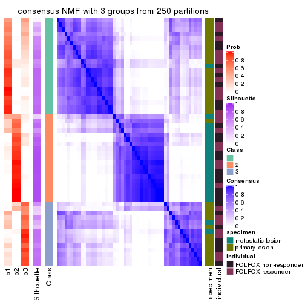
consensus_heatmap(res, k = 4)
consensus_heatmap(res, k = 5)
consensus_heatmap(res, k = 6)
Heatmaps for the membership of samples in all partitions to see how consistent they are:
membership_heatmap(res, k = 2)
membership_heatmap(res, k = 3)
membership_heatmap(res, k = 4)
membership_heatmap(res, k = 5)

membership_heatmap(res, k = 6)
As soon as we have had the classes for columns, we can look for signatures which are significantly different between classes which can be candidate marks for certain classes. Following are the heatmaps for signatures.
Signature heatmaps where rows are scaled:
get_signatures(res, k = 2)
get_signatures(res, k = 3)
get_signatures(res, k = 4)
get_signatures(res, k = 5)
get_signatures(res, k = 6)
Signature heatmaps where rows are not scaled:
get_signatures(res, k = 2, scale_rows = FALSE)
get_signatures(res, k = 3, scale_rows = FALSE)
get_signatures(res, k = 4, scale_rows = FALSE)
get_signatures(res, k = 5, scale_rows = FALSE)
get_signatures(res, k = 6, scale_rows = FALSE)
Compare the overlap of signatures from different k:
compare_signatures(res)
get_signature() returns a data frame invisibly. TO get the list of signatures, the function
call should be assigned to a variable explicitly. In following code, if plot argument is set
to FALSE, no heatmap is plotted while only the differential analysis is performed.
# code only for demonstration
tb = get_signature(res, k = ..., plot = FALSE)
An example of the output of tb is:
#> which_row fdr mean_1 mean_2 scaled_mean_1 scaled_mean_2 km
#> 1 38 0.042760348 8.373488 9.131774 -0.5533452 0.5164555 1
#> 2 40 0.018707592 7.106213 8.469186 -0.6173731 0.5762149 1
#> 3 55 0.019134737 10.221463 11.207825 -0.6159697 0.5749050 1
#> 4 59 0.006059896 5.921854 7.869574 -0.6899429 0.6439467 1
#> 5 60 0.018055526 8.928898 10.211722 -0.6204761 0.5791110 1
#> 6 98 0.009384629 15.714769 14.887706 0.6635654 -0.6193277 2
...
The columns in tb are:
which_row: row indices corresponding to the input matrix.fdr: FDR for the differential test. mean_x: The mean value in group x.scaled_mean_x: The mean value in group x after rows are scaled.km: Row groups if k-means clustering is applied to rows.UMAP plot which shows how samples are separated.
dimension_reduction(res, k = 2, method = "UMAP")
dimension_reduction(res, k = 3, method = "UMAP")
dimension_reduction(res, k = 4, method = "UMAP")
dimension_reduction(res, k = 5, method = "UMAP")
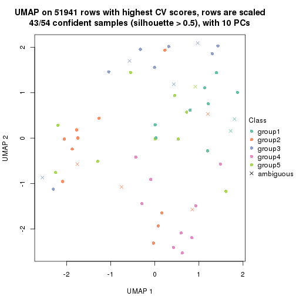
dimension_reduction(res, k = 6, method = "UMAP")
Following heatmap shows how subgroups are split when increasing k:
collect_classes(res)
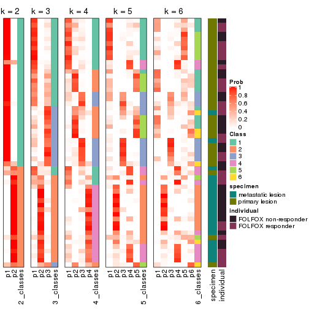
Test correlation between subgroups and known annotations. If the known annotation is numeric, one-way ANOVA test is applied, and if the known annotation is discrete, chi-squared contingency table test is applied.
test_to_known_factors(res)
#> n specimen(p) individual(p) k
#> CV:NMF 52 7.88e-09 0.572 2
#> CV:NMF 45 5.10e-08 0.497 3
#> CV:NMF 45 1.96e-07 0.601 4
#> CV:NMF 43 2.99e-06 0.255 5
#> CV:NMF 22 3.58e-02 0.209 6
If matrix rows can be associated to genes, consider to use GO_Enrichment(res,
...) to perform function enrichment for the signature genes.
The object with results only for a single top-value method and a single partition method can be extracted as:
res = res_list["MAD", "hclust"]
# you can also extract it by
# res = res_list["MAD:hclust"]
A summary of res and all the functions that can be applied to it:
res
#> A 'ConsensusPartition' object with k = 2, 3, 4, 5, 6.
#> On a matrix with 51941 rows and 54 columns.
#> Top rows (1000, 2000, 3000, 4000, 5000) are extracted by 'MAD' method.
#> Subgroups are detected by 'hclust' method.
#> Performed in total 1250 partitions by row resampling.
#> Best k for subgroups seems to be 4.
#>
#> Following methods can be applied to this 'ConsensusPartition' object:
#> [1] "cola_report" "collect_classes" "collect_plots"
#> [4] "collect_stats" "colnames" "compare_signatures"
#> [7] "consensus_heatmap" "dimension_reduction" "functional_enrichment"
#> [10] "get_anno_col" "get_anno" "get_classes"
#> [13] "get_consensus" "get_matrix" "get_membership"
#> [16] "get_param" "get_signatures" "get_stats"
#> [19] "is_best_k" "is_stable_k" "membership_heatmap"
#> [22] "ncol" "nrow" "plot_ecdf"
#> [25] "rownames" "select_partition_number" "show"
#> [28] "suggest_best_k" "test_to_known_factors"
collect_plots() function collects all the plots made from res for all k (number of partitions)
into one single page to provide an easy and fast comparison between different k.
collect_plots(res)
The plots are:
k and the heatmap of
predicted classes for each k.k.k.k.All the plots in panels can be made by individual functions and they are plotted later in this section.
select_partition_number() produces several plots showing different
statistics for choosing “optimized” k. There are following statistics:
k;k, the area increased is defined as \(A_k - A_{k-1}\).The detailed explanations of these statistics can be found in the cola vignette.
Generally speaking, lower PAC score, higher mean silhouette score or higher
concordance corresponds to better partition. Rand index and Jaccard index
measure how similar the current partition is compared to partition with k-1.
If they are too similar, we won't accept k is better than k-1.
select_partition_number(res)
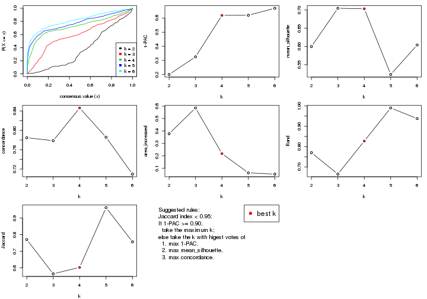
The numeric values for all these statistics can be obtained by get_stats().
get_stats(res)
#> k 1-PAC mean_silhouette concordance area_increased Rand Jaccard
#> 2 2 0.201 0.600 0.785 0.3782 0.770 0.770
#> 3 3 0.325 0.705 0.779 0.5856 0.665 0.564
#> 4 4 0.619 0.703 0.846 0.2183 0.827 0.603
#> 5 5 0.620 0.523 0.786 0.0632 0.990 0.963
#> 6 6 0.669 0.604 0.710 0.0532 0.938 0.757
suggest_best_k() suggests the best \(k\) based on these statistics. The rules are as follows:
NA.suggest_best_k(res)
#> [1] 4
Following shows the table of the partitions (You need to click the show/hide
code output link to see it). The membership matrix (columns with name p*)
is inferred by
clue::cl_consensus()
function with the SE method. Basically the value in the membership matrix
represents the probability to belong to a certain group. The finall class
label for an item is determined with the group with highest probability it
belongs to.
In get_classes() function, the entropy is calculated from the membership
matrix and the silhouette score is calculated from the consensus matrix.
cbind(get_classes(res, k = 2), get_membership(res, k = 2))
#> class entropy silhouette p1 p2
#> GSM710828 2 0.7950 0.6145 0.240 0.760
#> GSM710829 2 0.8861 0.5143 0.304 0.696
#> GSM710839 2 0.7883 0.6252 0.236 0.764
#> GSM710841 2 0.8861 0.5143 0.304 0.696
#> GSM710843 2 0.5629 0.6862 0.132 0.868
#> GSM710845 2 0.7950 0.6111 0.240 0.760
#> GSM710846 2 0.9754 0.4569 0.408 0.592
#> GSM710849 2 0.8861 0.5143 0.304 0.696
#> GSM710853 2 0.8955 0.5079 0.312 0.688
#> GSM710855 1 0.7883 0.6661 0.764 0.236
#> GSM710858 2 0.9087 0.5096 0.324 0.676
#> GSM710860 2 0.7883 0.6252 0.236 0.764
#> GSM710801 2 0.8861 0.5182 0.304 0.696
#> GSM710813 2 0.8909 0.5133 0.308 0.692
#> GSM710814 2 0.7883 0.6249 0.236 0.764
#> GSM710815 2 0.5294 0.6904 0.120 0.880
#> GSM710816 2 0.7950 0.6111 0.240 0.760
#> GSM710817 2 0.8909 0.5084 0.308 0.692
#> GSM710818 2 0.7883 0.6148 0.236 0.764
#> GSM710819 1 0.0672 0.7583 0.992 0.008
#> GSM710820 2 0.8861 0.5143 0.304 0.696
#> GSM710830 2 0.0376 0.6985 0.004 0.996
#> GSM710831 2 0.8955 0.5086 0.312 0.688
#> GSM710832 2 0.0376 0.6985 0.004 0.996
#> GSM710833 1 0.4022 0.8136 0.920 0.080
#> GSM710834 2 0.7299 0.6399 0.204 0.796
#> GSM710835 2 0.8861 0.5143 0.304 0.696
#> GSM710836 1 0.3879 0.8112 0.924 0.076
#> GSM710837 2 0.9000 0.3769 0.316 0.684
#> GSM710862 2 0.6623 0.6599 0.172 0.828
#> GSM710863 2 0.2043 0.7031 0.032 0.968
#> GSM710865 2 0.3733 0.7003 0.072 0.928
#> GSM710867 2 0.5737 0.6395 0.136 0.864
#> GSM710869 1 0.9881 0.0168 0.564 0.436
#> GSM710871 2 0.5737 0.6395 0.136 0.864
#> GSM710873 1 0.4562 0.8134 0.904 0.096
#> GSM710802 2 0.5294 0.6904 0.120 0.880
#> GSM710803 2 0.0376 0.6985 0.004 0.996
#> GSM710804 2 0.8861 0.5143 0.304 0.696
#> GSM710805 2 0.9833 0.4797 0.424 0.576
#> GSM710806 2 0.8267 0.5539 0.260 0.740
#> GSM710807 2 0.9000 0.3769 0.316 0.684
#> GSM710808 2 0.0938 0.7005 0.012 0.988
#> GSM710809 1 0.6623 0.7644 0.828 0.172
#> GSM710810 2 0.6887 0.6509 0.184 0.816
#> GSM710811 2 0.2948 0.6882 0.052 0.948
#> GSM710812 2 0.2948 0.6882 0.052 0.948
#> GSM710821 2 0.3431 0.6987 0.064 0.936
#> GSM710822 2 0.9833 0.3660 0.424 0.576
#> GSM710823 2 0.9833 0.3660 0.424 0.576
#> GSM710824 2 0.7883 0.6149 0.236 0.764
#> GSM710825 2 0.3431 0.6987 0.064 0.936
#> GSM710826 2 0.0376 0.6985 0.004 0.996
#> GSM710827 2 0.1843 0.7023 0.028 0.972
cbind(get_classes(res, k = 3), get_membership(res, k = 3))
#> class entropy silhouette p1 p2 p3
#> GSM710828 1 0.6757 0.6354 0.736 0.084 0.180
#> GSM710829 2 0.0424 0.9324 0.008 0.992 0.000
#> GSM710839 1 0.7485 0.6047 0.696 0.132 0.172
#> GSM710841 2 0.0424 0.9324 0.008 0.992 0.000
#> GSM710843 1 0.5913 0.6727 0.788 0.144 0.068
#> GSM710845 1 0.4346 0.6659 0.816 0.000 0.184
#> GSM710846 2 0.3933 0.8432 0.028 0.880 0.092
#> GSM710849 2 0.0424 0.9324 0.008 0.992 0.000
#> GSM710853 2 0.1182 0.9262 0.012 0.976 0.012
#> GSM710855 3 0.5722 0.5992 0.004 0.292 0.704
#> GSM710858 2 0.1751 0.9184 0.012 0.960 0.028
#> GSM710860 1 0.7485 0.6047 0.696 0.132 0.172
#> GSM710801 2 0.0983 0.9296 0.016 0.980 0.004
#> GSM710813 2 0.1015 0.9309 0.012 0.980 0.008
#> GSM710814 1 0.7433 0.6077 0.700 0.132 0.168
#> GSM710815 1 0.5816 0.6700 0.788 0.156 0.056
#> GSM710816 1 0.4915 0.6639 0.804 0.012 0.184
#> GSM710817 2 0.0848 0.9267 0.008 0.984 0.008
#> GSM710818 1 0.4861 0.6663 0.808 0.012 0.180
#> GSM710819 3 0.1905 0.7861 0.016 0.028 0.956
#> GSM710820 2 0.0424 0.9324 0.008 0.992 0.000
#> GSM710830 1 0.5412 0.6993 0.796 0.172 0.032
#> GSM710831 2 0.1129 0.9272 0.004 0.976 0.020
#> GSM710832 1 0.5412 0.6993 0.796 0.172 0.032
#> GSM710833 3 0.4179 0.8192 0.052 0.072 0.876
#> GSM710834 1 0.4390 0.6842 0.840 0.012 0.148
#> GSM710835 2 0.2599 0.8978 0.052 0.932 0.016
#> GSM710836 3 0.4087 0.8145 0.068 0.052 0.880
#> GSM710837 1 0.9568 0.2162 0.456 0.208 0.336
#> GSM710862 1 0.6332 0.7135 0.768 0.088 0.144
#> GSM710863 1 0.5053 0.7089 0.812 0.164 0.024
#> GSM710865 1 0.5823 0.7181 0.792 0.144 0.064
#> GSM710867 1 0.8485 0.5597 0.612 0.224 0.164
#> GSM710869 3 0.8509 -0.0291 0.392 0.096 0.512
#> GSM710871 1 0.8485 0.5597 0.612 0.224 0.164
#> GSM710873 3 0.4477 0.8191 0.068 0.068 0.864
#> GSM710802 1 0.5816 0.6700 0.788 0.156 0.056
#> GSM710803 1 0.5412 0.6993 0.796 0.172 0.032
#> GSM710804 2 0.2804 0.8908 0.060 0.924 0.016
#> GSM710805 2 0.6981 0.6338 0.132 0.732 0.136
#> GSM710806 2 0.4094 0.8374 0.100 0.872 0.028
#> GSM710807 1 0.9823 0.1625 0.412 0.252 0.336
#> GSM710808 1 0.5180 0.7050 0.812 0.156 0.032
#> GSM710809 3 0.5514 0.7644 0.044 0.156 0.800
#> GSM710810 1 0.5538 0.7090 0.808 0.060 0.132
#> GSM710811 1 0.6599 0.6685 0.748 0.168 0.084
#> GSM710812 1 0.6599 0.6685 0.748 0.168 0.084
#> GSM710821 1 0.2301 0.7187 0.936 0.060 0.004
#> GSM710822 1 0.8595 0.4623 0.496 0.100 0.404
#> GSM710823 1 0.8595 0.4623 0.496 0.100 0.404
#> GSM710824 1 0.5455 0.6825 0.788 0.028 0.184
#> GSM710825 1 0.2301 0.7187 0.936 0.060 0.004
#> GSM710826 1 0.5412 0.6993 0.796 0.172 0.032
#> GSM710827 1 0.4921 0.7094 0.816 0.164 0.020
cbind(get_classes(res, k = 4), get_membership(res, k = 4))
#> class entropy silhouette p1 p2 p3 p4
#> GSM710828 4 0.0524 0.8025 0.000 0.008 0.004 0.988
#> GSM710829 2 0.0376 0.9099 0.004 0.992 0.000 0.004
#> GSM710839 4 0.2021 0.7921 0.000 0.056 0.012 0.932
#> GSM710841 2 0.0376 0.9099 0.004 0.992 0.000 0.004
#> GSM710843 4 0.4858 0.7902 0.068 0.132 0.008 0.792
#> GSM710845 4 0.2011 0.8189 0.080 0.000 0.000 0.920
#> GSM710846 2 0.3991 0.8006 0.000 0.808 0.020 0.172
#> GSM710849 2 0.0376 0.9099 0.004 0.992 0.000 0.004
#> GSM710853 2 0.2984 0.8678 0.000 0.888 0.028 0.084
#> GSM710855 3 0.4222 0.5989 0.000 0.272 0.728 0.000
#> GSM710858 2 0.3198 0.8575 0.000 0.880 0.040 0.080
#> GSM710860 4 0.2021 0.7921 0.000 0.056 0.012 0.932
#> GSM710801 2 0.0967 0.9072 0.004 0.976 0.004 0.016
#> GSM710813 2 0.1590 0.9066 0.008 0.956 0.028 0.008
#> GSM710814 4 0.1807 0.7974 0.000 0.052 0.008 0.940
#> GSM710815 4 0.4867 0.7828 0.068 0.144 0.004 0.784
#> GSM710816 4 0.1792 0.8192 0.068 0.000 0.000 0.932
#> GSM710817 2 0.1151 0.9042 0.008 0.968 0.024 0.000
#> GSM710818 4 0.4234 0.7053 0.228 0.004 0.004 0.764
#> GSM710819 3 0.1302 0.7745 0.000 0.000 0.956 0.044
#> GSM710820 2 0.0564 0.9089 0.004 0.988 0.004 0.004
#> GSM710830 1 0.0188 0.7585 0.996 0.004 0.000 0.000
#> GSM710831 2 0.1396 0.9043 0.004 0.960 0.032 0.004
#> GSM710832 1 0.0188 0.7585 0.996 0.004 0.000 0.000
#> GSM710833 3 0.3495 0.8094 0.032 0.036 0.884 0.048
#> GSM710834 4 0.4134 0.7519 0.188 0.008 0.008 0.796
#> GSM710835 2 0.2563 0.8756 0.072 0.908 0.020 0.000
#> GSM710836 3 0.3536 0.8021 0.048 0.020 0.880 0.052
#> GSM710837 1 0.6170 0.3743 0.600 0.068 0.332 0.000
#> GSM710862 1 0.6130 0.2473 0.564 0.004 0.044 0.388
#> GSM710863 1 0.1443 0.7554 0.960 0.004 0.008 0.028
#> GSM710865 1 0.2891 0.7354 0.896 0.004 0.020 0.080
#> GSM710867 1 0.4322 0.6591 0.804 0.044 0.152 0.000
#> GSM710869 3 0.6539 -0.0575 0.428 0.004 0.504 0.064
#> GSM710871 1 0.4322 0.6591 0.804 0.044 0.152 0.000
#> GSM710873 3 0.3674 0.8076 0.048 0.032 0.876 0.044
#> GSM710802 4 0.4867 0.7828 0.068 0.144 0.004 0.784
#> GSM710803 1 0.0188 0.7585 0.996 0.004 0.000 0.000
#> GSM710804 2 0.2706 0.8693 0.080 0.900 0.020 0.000
#> GSM710805 2 0.5925 0.6705 0.048 0.720 0.036 0.196
#> GSM710806 2 0.4036 0.7848 0.160 0.816 0.020 0.004
#> GSM710807 1 0.6764 0.2935 0.556 0.112 0.332 0.000
#> GSM710808 1 0.1637 0.7481 0.940 0.000 0.000 0.060
#> GSM710809 3 0.4182 0.7776 0.036 0.104 0.840 0.020
#> GSM710810 4 0.6029 -0.0297 0.480 0.004 0.032 0.484
#> GSM710811 1 0.1474 0.7479 0.948 0.000 0.052 0.000
#> GSM710812 1 0.1557 0.7484 0.944 0.000 0.056 0.000
#> GSM710821 1 0.5047 0.3350 0.636 0.004 0.004 0.356
#> GSM710822 1 0.6288 0.3319 0.572 0.008 0.372 0.048
#> GSM710823 1 0.6288 0.3319 0.572 0.008 0.372 0.048
#> GSM710824 4 0.3052 0.7961 0.136 0.000 0.004 0.860
#> GSM710825 1 0.5064 0.3238 0.632 0.004 0.004 0.360
#> GSM710826 1 0.0188 0.7585 0.996 0.004 0.000 0.000
#> GSM710827 1 0.1296 0.7561 0.964 0.004 0.004 0.028
cbind(get_classes(res, k = 5), get_membership(res, k = 5))
#> class entropy silhouette p1 p2 p3 p4 p5
#> GSM710828 4 0.2068 0.8066 0.000 0.004 0.000 0.904 0.092
#> GSM710829 2 0.0000 0.4964 0.000 1.000 0.000 0.000 0.000
#> GSM710839 4 0.2825 0.7841 0.000 0.016 0.000 0.860 0.124
#> GSM710841 2 0.0703 0.4955 0.000 0.976 0.000 0.000 0.024
#> GSM710843 4 0.3174 0.7678 0.000 0.132 0.004 0.844 0.020
#> GSM710845 4 0.0404 0.8161 0.000 0.000 0.000 0.988 0.012
#> GSM710846 2 0.5808 -0.7400 0.000 0.512 0.000 0.096 0.392
#> GSM710849 2 0.0703 0.4955 0.000 0.976 0.000 0.000 0.024
#> GSM710853 5 0.4546 0.0000 0.000 0.460 0.000 0.008 0.532
#> GSM710855 3 0.5283 0.5214 0.000 0.124 0.672 0.000 0.204
#> GSM710858 2 0.4562 -0.8839 0.000 0.500 0.000 0.008 0.492
#> GSM710860 4 0.2825 0.7841 0.000 0.016 0.000 0.860 0.124
#> GSM710801 2 0.0693 0.4868 0.000 0.980 0.000 0.012 0.008
#> GSM710813 2 0.1573 0.5093 0.004 0.948 0.008 0.004 0.036
#> GSM710814 4 0.2674 0.7922 0.000 0.012 0.000 0.868 0.120
#> GSM710815 4 0.3055 0.7594 0.000 0.144 0.000 0.840 0.016
#> GSM710816 4 0.0000 0.8152 0.000 0.000 0.000 1.000 0.000
#> GSM710817 2 0.4253 0.5260 0.008 0.700 0.008 0.000 0.284
#> GSM710818 4 0.3835 0.7323 0.140 0.004 0.004 0.812 0.040
#> GSM710819 3 0.1671 0.7519 0.000 0.000 0.924 0.000 0.076
#> GSM710820 2 0.0880 0.4871 0.000 0.968 0.000 0.000 0.032
#> GSM710830 1 0.0865 0.7271 0.972 0.004 0.000 0.000 0.024
#> GSM710831 2 0.4428 0.5221 0.004 0.692 0.020 0.000 0.284
#> GSM710832 1 0.0162 0.7237 0.996 0.004 0.000 0.000 0.000
#> GSM710833 3 0.1748 0.7969 0.016 0.028 0.944 0.008 0.004
#> GSM710834 4 0.3748 0.7696 0.072 0.008 0.024 0.848 0.048
#> GSM710835 2 0.5379 0.4922 0.064 0.608 0.004 0.000 0.324
#> GSM710836 3 0.1393 0.7948 0.024 0.012 0.956 0.008 0.000
#> GSM710837 1 0.5908 0.3461 0.588 0.052 0.324 0.000 0.036
#> GSM710862 1 0.7431 0.1921 0.432 0.004 0.104 0.376 0.084
#> GSM710863 1 0.2186 0.7210 0.924 0.004 0.044 0.016 0.012
#> GSM710865 1 0.3944 0.6961 0.836 0.004 0.072 0.052 0.036
#> GSM710867 1 0.4207 0.6331 0.796 0.032 0.140 0.000 0.032
#> GSM710869 3 0.5236 0.0167 0.392 0.004 0.568 0.032 0.004
#> GSM710871 1 0.4207 0.6331 0.796 0.032 0.140 0.000 0.032
#> GSM710873 3 0.1814 0.7989 0.028 0.024 0.940 0.004 0.004
#> GSM710802 4 0.3055 0.7594 0.000 0.144 0.000 0.840 0.016
#> GSM710803 1 0.0865 0.7271 0.972 0.004 0.000 0.000 0.024
#> GSM710804 2 0.5264 0.5104 0.068 0.660 0.008 0.000 0.264
#> GSM710805 2 0.7976 0.2617 0.012 0.432 0.096 0.144 0.316
#> GSM710806 2 0.6348 0.4050 0.140 0.516 0.008 0.000 0.336
#> GSM710807 1 0.6468 0.2756 0.544 0.096 0.324 0.000 0.036
#> GSM710808 1 0.3226 0.7074 0.868 0.000 0.016 0.060 0.056
#> GSM710809 3 0.3410 0.7477 0.016 0.080 0.860 0.004 0.040
#> GSM710810 4 0.7271 0.0309 0.344 0.004 0.088 0.476 0.088
#> GSM710811 1 0.2514 0.7192 0.896 0.000 0.060 0.000 0.044
#> GSM710812 1 0.2645 0.7195 0.888 0.000 0.068 0.000 0.044
#> GSM710821 1 0.6641 0.2550 0.504 0.004 0.036 0.368 0.088
#> GSM710822 1 0.5811 0.2869 0.556 0.000 0.348 0.004 0.092
#> GSM710823 1 0.5811 0.2869 0.556 0.000 0.348 0.004 0.092
#> GSM710824 4 0.2141 0.8016 0.064 0.000 0.004 0.916 0.016
#> GSM710825 1 0.6649 0.2432 0.500 0.004 0.036 0.372 0.088
#> GSM710826 1 0.0865 0.7271 0.972 0.004 0.000 0.000 0.024
#> GSM710827 1 0.1779 0.7228 0.940 0.004 0.040 0.008 0.008
cbind(get_classes(res, k = 6), get_membership(res, k = 6))
#> class entropy silhouette p1 p2 p3 p4 p5 p6
#> GSM710828 4 0.3826 0.728 0.000 0.004 0.000 0.784 0.124 0.088
#> GSM710829 2 0.0000 0.629 0.000 1.000 0.000 0.000 0.000 0.000
#> GSM710839 4 0.2623 0.756 0.000 0.016 0.000 0.852 0.000 0.132
#> GSM710841 2 0.0632 0.629 0.000 0.976 0.000 0.000 0.000 0.024
#> GSM710843 4 0.3703 0.707 0.000 0.132 0.004 0.792 0.072 0.000
#> GSM710845 4 0.1204 0.757 0.000 0.000 0.000 0.944 0.056 0.000
#> GSM710846 6 0.5104 0.784 0.000 0.372 0.000 0.088 0.000 0.540
#> GSM710849 2 0.0632 0.629 0.000 0.976 0.000 0.000 0.000 0.024
#> GSM710853 6 0.3405 0.845 0.000 0.272 0.000 0.000 0.004 0.724
#> GSM710855 3 0.5901 0.432 0.000 0.024 0.556 0.000 0.156 0.264
#> GSM710858 6 0.3774 0.856 0.000 0.328 0.000 0.000 0.008 0.664
#> GSM710860 4 0.2623 0.756 0.000 0.016 0.000 0.852 0.000 0.132
#> GSM710801 2 0.0870 0.617 0.000 0.972 0.000 0.012 0.004 0.012
#> GSM710813 2 0.1911 0.639 0.000 0.928 0.020 0.004 0.036 0.012
#> GSM710814 4 0.3058 0.757 0.000 0.012 0.000 0.840 0.024 0.124
#> GSM710815 4 0.3570 0.698 0.000 0.144 0.000 0.792 0.064 0.000
#> GSM710816 4 0.0260 0.768 0.000 0.000 0.000 0.992 0.008 0.000
#> GSM710817 2 0.5202 0.650 0.004 0.640 0.020 0.000 0.076 0.260
#> GSM710818 4 0.4408 0.418 0.032 0.004 0.000 0.660 0.300 0.004
#> GSM710819 3 0.2743 0.695 0.000 0.000 0.828 0.000 0.164 0.008
#> GSM710820 2 0.1010 0.619 0.000 0.960 0.000 0.000 0.004 0.036
#> GSM710830 1 0.1910 0.595 0.892 0.000 0.000 0.000 0.108 0.000
#> GSM710831 2 0.5233 0.647 0.000 0.636 0.032 0.000 0.072 0.260
#> GSM710832 1 0.0458 0.619 0.984 0.000 0.000 0.000 0.016 0.000
#> GSM710833 3 0.1321 0.779 0.000 0.024 0.952 0.004 0.020 0.000
#> GSM710834 4 0.4030 0.570 0.028 0.008 0.016 0.764 0.184 0.000
#> GSM710835 2 0.6110 0.611 0.064 0.540 0.008 0.000 0.068 0.320
#> GSM710836 3 0.1514 0.777 0.004 0.012 0.944 0.004 0.036 0.000
#> GSM710837 1 0.5780 0.304 0.552 0.036 0.336 0.000 0.068 0.008
#> GSM710862 5 0.6254 0.734 0.120 0.000 0.092 0.212 0.576 0.000
#> GSM710863 1 0.3203 0.562 0.812 0.000 0.024 0.004 0.160 0.000
#> GSM710865 1 0.4627 0.468 0.704 0.000 0.056 0.024 0.216 0.000
#> GSM710867 1 0.4305 0.588 0.768 0.024 0.144 0.000 0.056 0.008
#> GSM710869 3 0.5556 0.158 0.320 0.000 0.552 0.012 0.116 0.000
#> GSM710871 1 0.4305 0.588 0.768 0.024 0.144 0.000 0.056 0.008
#> GSM710873 3 0.1700 0.781 0.012 0.024 0.936 0.000 0.028 0.000
#> GSM710802 4 0.3570 0.698 0.000 0.144 0.000 0.792 0.064 0.000
#> GSM710803 1 0.1814 0.596 0.900 0.000 0.000 0.000 0.100 0.000
#> GSM710804 2 0.5942 0.632 0.068 0.600 0.008 0.000 0.072 0.252
#> GSM710805 2 0.7937 0.395 0.004 0.396 0.076 0.092 0.120 0.312
#> GSM710806 2 0.6918 0.522 0.140 0.452 0.008 0.000 0.080 0.320
#> GSM710807 1 0.6365 0.238 0.508 0.060 0.336 0.000 0.084 0.012
#> GSM710808 1 0.4401 0.280 0.656 0.000 0.004 0.040 0.300 0.000
#> GSM710809 3 0.2680 0.734 0.000 0.060 0.880 0.000 0.048 0.012
#> GSM710810 5 0.6382 0.703 0.092 0.004 0.080 0.300 0.524 0.000
#> GSM710811 1 0.4110 0.464 0.712 0.000 0.052 0.000 0.236 0.000
#> GSM710812 1 0.4158 0.458 0.704 0.000 0.052 0.000 0.244 0.000
#> GSM710821 5 0.6177 0.783 0.244 0.000 0.020 0.232 0.504 0.000
#> GSM710822 1 0.6161 0.138 0.452 0.000 0.284 0.000 0.256 0.008
#> GSM710823 1 0.6161 0.138 0.452 0.000 0.284 0.000 0.256 0.008
#> GSM710824 4 0.2880 0.699 0.024 0.000 0.012 0.856 0.108 0.000
#> GSM710825 5 0.6160 0.787 0.240 0.000 0.020 0.232 0.508 0.000
#> GSM710826 1 0.1910 0.595 0.892 0.000 0.000 0.000 0.108 0.000
#> GSM710827 1 0.2199 0.599 0.892 0.000 0.020 0.000 0.088 0.000
Heatmaps for the consensus matrix. It visualizes the probability of two samples to be in a same group.
consensus_heatmap(res, k = 2)
consensus_heatmap(res, k = 3)
consensus_heatmap(res, k = 4)
consensus_heatmap(res, k = 5)
consensus_heatmap(res, k = 6)
Heatmaps for the membership of samples in all partitions to see how consistent they are:
membership_heatmap(res, k = 2)
membership_heatmap(res, k = 3)
membership_heatmap(res, k = 4)
membership_heatmap(res, k = 5)
membership_heatmap(res, k = 6)
As soon as we have had the classes for columns, we can look for signatures which are significantly different between classes which can be candidate marks for certain classes. Following are the heatmaps for signatures.
Signature heatmaps where rows are scaled:
get_signatures(res, k = 2)
get_signatures(res, k = 3)
get_signatures(res, k = 4)
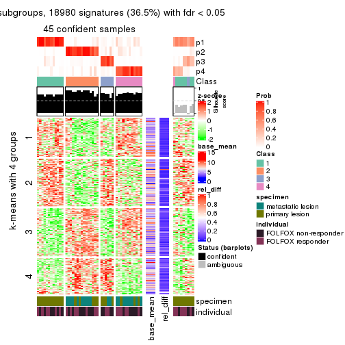
get_signatures(res, k = 5)
get_signatures(res, k = 6)
Signature heatmaps where rows are not scaled:
get_signatures(res, k = 2, scale_rows = FALSE)
get_signatures(res, k = 3, scale_rows = FALSE)
get_signatures(res, k = 4, scale_rows = FALSE)
get_signatures(res, k = 5, scale_rows = FALSE)
get_signatures(res, k = 6, scale_rows = FALSE)

Compare the overlap of signatures from different k:
compare_signatures(res)
get_signature() returns a data frame invisibly. TO get the list of signatures, the function
call should be assigned to a variable explicitly. In following code, if plot argument is set
to FALSE, no heatmap is plotted while only the differential analysis is performed.
# code only for demonstration
tb = get_signature(res, k = ..., plot = FALSE)
An example of the output of tb is:
#> which_row fdr mean_1 mean_2 scaled_mean_1 scaled_mean_2 km
#> 1 38 0.042760348 8.373488 9.131774 -0.5533452 0.5164555 1
#> 2 40 0.018707592 7.106213 8.469186 -0.6173731 0.5762149 1
#> 3 55 0.019134737 10.221463 11.207825 -0.6159697 0.5749050 1
#> 4 59 0.006059896 5.921854 7.869574 -0.6899429 0.6439467 1
#> 5 60 0.018055526 8.928898 10.211722 -0.6204761 0.5791110 1
#> 6 98 0.009384629 15.714769 14.887706 0.6635654 -0.6193277 2
...
The columns in tb are:
which_row: row indices corresponding to the input matrix.fdr: FDR for the differential test. mean_x: The mean value in group x.scaled_mean_x: The mean value in group x after rows are scaled.km: Row groups if k-means clustering is applied to rows.UMAP plot which shows how samples are separated.
dimension_reduction(res, k = 2, method = "UMAP")
dimension_reduction(res, k = 3, method = "UMAP")
dimension_reduction(res, k = 4, method = "UMAP")
dimension_reduction(res, k = 5, method = "UMAP")
dimension_reduction(res, k = 6, method = "UMAP")
Following heatmap shows how subgroups are split when increasing k:
collect_classes(res)
Test correlation between subgroups and known annotations. If the known annotation is numeric, one-way ANOVA test is applied, and if the known annotation is discrete, chi-squared contingency table test is applied.
test_to_known_factors(res)
#> n specimen(p) individual(p) k
#> MAD:hclust 47 0.96249 0.703 2
#> MAD:hclust 49 0.08180 0.652 3
#> MAD:hclust 45 0.00064 0.911 4
#> MAD:hclust 34 0.00220 0.644 5
#> MAD:hclust 42 0.00143 0.474 6
If matrix rows can be associated to genes, consider to use GO_Enrichment(res,
...) to perform function enrichment for the signature genes.
The object with results only for a single top-value method and a single partition method can be extracted as:
res = res_list["MAD", "kmeans"]
# you can also extract it by
# res = res_list["MAD:kmeans"]
A summary of res and all the functions that can be applied to it:
res
#> A 'ConsensusPartition' object with k = 2, 3, 4, 5, 6.
#> On a matrix with 51941 rows and 54 columns.
#> Top rows (1000, 2000, 3000, 4000, 5000) are extracted by 'MAD' method.
#> Subgroups are detected by 'kmeans' method.
#> Performed in total 1250 partitions by row resampling.
#> Best k for subgroups seems to be 2.
#>
#> Following methods can be applied to this 'ConsensusPartition' object:
#> [1] "cola_report" "collect_classes" "collect_plots"
#> [4] "collect_stats" "colnames" "compare_signatures"
#> [7] "consensus_heatmap" "dimension_reduction" "functional_enrichment"
#> [10] "get_anno_col" "get_anno" "get_classes"
#> [13] "get_consensus" "get_matrix" "get_membership"
#> [16] "get_param" "get_signatures" "get_stats"
#> [19] "is_best_k" "is_stable_k" "membership_heatmap"
#> [22] "ncol" "nrow" "plot_ecdf"
#> [25] "rownames" "select_partition_number" "show"
#> [28] "suggest_best_k" "test_to_known_factors"
collect_plots() function collects all the plots made from res for all k (number of partitions)
into one single page to provide an easy and fast comparison between different k.
collect_plots(res)
The plots are:
k and the heatmap of
predicted classes for each k.k.k.k.All the plots in panels can be made by individual functions and they are plotted later in this section.
select_partition_number() produces several plots showing different
statistics for choosing “optimized” k. There are following statistics:
k;k, the area increased is defined as \(A_k - A_{k-1}\).The detailed explanations of these statistics can be found in the cola vignette.
Generally speaking, lower PAC score, higher mean silhouette score or higher
concordance corresponds to better partition. Rand index and Jaccard index
measure how similar the current partition is compared to partition with k-1.
If they are too similar, we won't accept k is better than k-1.
select_partition_number(res)
The numeric values for all these statistics can be obtained by get_stats().
get_stats(res)
#> k 1-PAC mean_silhouette concordance area_increased Rand Jaccard
#> 2 2 0.492 0.774 0.890 0.5043 0.497 0.497
#> 3 3 0.474 0.301 0.604 0.3198 0.709 0.477
#> 4 4 0.584 0.722 0.818 0.1311 0.769 0.420
#> 5 5 0.628 0.534 0.735 0.0650 0.946 0.786
#> 6 6 0.654 0.473 0.658 0.0405 0.916 0.630
suggest_best_k() suggests the best \(k\) based on these statistics. The rules are as follows:
NA.suggest_best_k(res)
#> [1] 2
Following shows the table of the partitions (You need to click the show/hide
code output link to see it). The membership matrix (columns with name p*)
is inferred by
clue::cl_consensus()
function with the SE method. Basically the value in the membership matrix
represents the probability to belong to a certain group. The finall class
label for an item is determined with the group with highest probability it
belongs to.
In get_classes() function, the entropy is calculated from the membership
matrix and the silhouette score is calculated from the consensus matrix.
cbind(get_classes(res, k = 2), get_membership(res, k = 2))
#> class entropy silhouette p1 p2
#> GSM710828 2 0.4298 0.865 0.088 0.912
#> GSM710829 2 0.0000 0.875 0.000 1.000
#> GSM710839 2 0.4298 0.865 0.088 0.912
#> GSM710841 2 0.2423 0.869 0.040 0.960
#> GSM710843 2 0.3431 0.872 0.064 0.936
#> GSM710845 2 0.6801 0.793 0.180 0.820
#> GSM710846 2 0.0000 0.875 0.000 1.000
#> GSM710849 2 0.4161 0.844 0.084 0.916
#> GSM710853 2 0.0000 0.875 0.000 1.000
#> GSM710855 1 0.9993 0.241 0.516 0.484
#> GSM710858 2 0.0376 0.873 0.004 0.996
#> GSM710860 2 0.4298 0.865 0.088 0.912
#> GSM710801 2 0.0000 0.875 0.000 1.000
#> GSM710813 2 0.0000 0.875 0.000 1.000
#> GSM710814 2 0.4298 0.865 0.088 0.912
#> GSM710815 2 0.3431 0.872 0.064 0.936
#> GSM710816 2 0.4298 0.865 0.088 0.912
#> GSM710817 2 0.7056 0.740 0.192 0.808
#> GSM710818 1 0.9850 0.263 0.572 0.428
#> GSM710819 1 0.8955 0.630 0.688 0.312
#> GSM710820 2 0.0000 0.875 0.000 1.000
#> GSM710830 1 0.0376 0.861 0.996 0.004
#> GSM710831 2 0.5178 0.813 0.116 0.884
#> GSM710832 1 0.0376 0.861 0.996 0.004
#> GSM710833 1 0.8955 0.630 0.688 0.312
#> GSM710834 2 0.8861 0.641 0.304 0.696
#> GSM710835 2 0.9754 0.279 0.408 0.592
#> GSM710836 1 0.4562 0.826 0.904 0.096
#> GSM710837 1 0.3879 0.833 0.924 0.076
#> GSM710862 1 0.3584 0.833 0.932 0.068
#> GSM710863 1 0.0376 0.861 0.996 0.004
#> GSM710865 1 0.0376 0.861 0.996 0.004
#> GSM710867 1 0.1843 0.854 0.972 0.028
#> GSM710869 1 0.2603 0.855 0.956 0.044
#> GSM710871 1 0.0376 0.861 0.996 0.004
#> GSM710873 1 0.4298 0.826 0.912 0.088
#> GSM710802 1 0.0376 0.861 0.996 0.004
#> GSM710803 1 0.0376 0.861 0.996 0.004
#> GSM710804 2 0.8713 0.579 0.292 0.708
#> GSM710805 2 0.2043 0.872 0.032 0.968
#> GSM710806 1 0.9970 0.130 0.532 0.468
#> GSM710807 1 0.3879 0.833 0.924 0.076
#> GSM710808 1 0.5842 0.757 0.860 0.140
#> GSM710809 1 0.5629 0.803 0.868 0.132
#> GSM710810 1 0.2043 0.852 0.968 0.032
#> GSM710811 1 0.0376 0.861 0.996 0.004
#> GSM710812 1 0.0376 0.861 0.996 0.004
#> GSM710821 1 0.7745 0.629 0.772 0.228
#> GSM710822 1 0.0376 0.860 0.996 0.004
#> GSM710823 1 0.7139 0.709 0.804 0.196
#> GSM710824 2 0.7139 0.775 0.196 0.804
#> GSM710825 1 0.8555 0.554 0.720 0.280
#> GSM710826 1 0.0376 0.861 0.996 0.004
#> GSM710827 1 0.0376 0.861 0.996 0.004
cbind(get_classes(res, k = 3), get_membership(res, k = 3))
#> class entropy silhouette p1 p2 p3
#> GSM710828 2 0.1182 0.67249 0.012 0.976 0.012
#> GSM710829 2 0.7178 0.58890 0.024 0.512 0.464
#> GSM710839 2 0.0000 0.68228 0.000 1.000 0.000
#> GSM710841 2 0.7075 0.57359 0.020 0.492 0.488
#> GSM710843 2 0.0592 0.67876 0.012 0.988 0.000
#> GSM710845 2 0.5393 0.54705 0.072 0.820 0.108
#> GSM710846 2 0.5733 0.65362 0.000 0.676 0.324
#> GSM710849 3 0.7187 -0.60718 0.024 0.480 0.496
#> GSM710853 2 0.6204 0.62443 0.000 0.576 0.424
#> GSM710855 1 0.7458 0.25983 0.676 0.088 0.236
#> GSM710858 2 0.6489 0.60776 0.004 0.540 0.456
#> GSM710860 2 0.0000 0.68228 0.000 1.000 0.000
#> GSM710801 2 0.5905 0.64947 0.000 0.648 0.352
#> GSM710813 2 0.7668 0.58136 0.044 0.496 0.460
#> GSM710814 2 0.0000 0.68228 0.000 1.000 0.000
#> GSM710815 2 0.2165 0.68008 0.000 0.936 0.064
#> GSM710816 2 0.0892 0.67636 0.020 0.980 0.000
#> GSM710817 3 0.8338 -0.06720 0.400 0.084 0.516
#> GSM710818 2 0.8495 0.22152 0.220 0.612 0.168
#> GSM710819 1 0.3764 0.48398 0.892 0.068 0.040
#> GSM710820 2 0.6925 0.60314 0.016 0.532 0.452
#> GSM710830 3 0.6495 -0.00638 0.460 0.004 0.536
#> GSM710831 3 0.8363 -0.07066 0.412 0.084 0.504
#> GSM710832 3 0.6291 -0.01641 0.468 0.000 0.532
#> GSM710833 1 0.4189 0.47409 0.876 0.056 0.068
#> GSM710834 2 0.6757 0.43568 0.084 0.736 0.180
#> GSM710835 3 0.8249 -0.05482 0.424 0.076 0.500
#> GSM710836 1 0.2050 0.51133 0.952 0.020 0.028
#> GSM710837 1 0.2796 0.50394 0.908 0.000 0.092
#> GSM710862 3 0.9425 0.04940 0.368 0.180 0.452
#> GSM710863 1 0.6518 -0.04859 0.512 0.004 0.484
#> GSM710865 1 0.6295 -0.03684 0.528 0.000 0.472
#> GSM710867 1 0.6280 0.04372 0.540 0.000 0.460
#> GSM710869 1 0.3502 0.50043 0.896 0.020 0.084
#> GSM710871 3 0.6299 -0.02701 0.476 0.000 0.524
#> GSM710873 1 0.2448 0.50717 0.924 0.000 0.076
#> GSM710802 3 0.7295 -0.04719 0.484 0.028 0.488
#> GSM710803 3 0.6495 -0.00638 0.460 0.004 0.536
#> GSM710804 3 0.8191 -0.05537 0.396 0.076 0.528
#> GSM710805 2 0.8627 0.58128 0.104 0.504 0.392
#> GSM710806 3 0.6728 0.08911 0.124 0.128 0.748
#> GSM710807 1 0.2356 0.50752 0.928 0.000 0.072
#> GSM710808 3 0.9100 0.10877 0.324 0.160 0.516
#> GSM710809 1 0.6302 0.03739 0.520 0.000 0.480
#> GSM710810 3 0.9687 0.12161 0.268 0.272 0.460
#> GSM710811 3 0.6299 -0.02701 0.476 0.000 0.524
#> GSM710812 1 0.6295 -0.03271 0.528 0.000 0.472
#> GSM710821 3 0.9437 0.15614 0.208 0.300 0.492
#> GSM710822 1 0.3340 0.47829 0.880 0.000 0.120
#> GSM710823 1 0.5492 0.46537 0.816 0.080 0.104
#> GSM710824 2 0.5263 0.56503 0.088 0.828 0.084
#> GSM710825 3 0.9146 0.14713 0.148 0.380 0.472
#> GSM710826 3 0.6495 -0.00638 0.460 0.004 0.536
#> GSM710827 1 0.6521 -0.05695 0.504 0.004 0.492
cbind(get_classes(res, k = 4), get_membership(res, k = 4))
#> class entropy silhouette p1 p2 p3 p4
#> GSM710828 4 0.130 0.7858 0.000 0.044 0.000 0.956
#> GSM710829 2 0.292 0.7512 0.000 0.876 0.008 0.116
#> GSM710839 4 0.259 0.7715 0.000 0.116 0.000 0.884
#> GSM710841 2 0.166 0.7719 0.000 0.944 0.004 0.052
#> GSM710843 4 0.218 0.7859 0.000 0.064 0.012 0.924
#> GSM710845 4 0.443 0.7066 0.092 0.008 0.076 0.824
#> GSM710846 2 0.520 0.3401 0.000 0.576 0.008 0.416
#> GSM710849 2 0.172 0.7721 0.000 0.944 0.008 0.048
#> GSM710853 2 0.490 0.5135 0.000 0.660 0.008 0.332
#> GSM710855 3 0.486 0.7396 0.008 0.112 0.796 0.084
#> GSM710858 2 0.442 0.6540 0.000 0.748 0.012 0.240
#> GSM710860 4 0.253 0.7734 0.000 0.112 0.000 0.888
#> GSM710801 4 0.524 0.0799 0.000 0.436 0.008 0.556
#> GSM710813 2 0.264 0.7698 0.000 0.908 0.032 0.060
#> GSM710814 4 0.259 0.7715 0.000 0.116 0.000 0.884
#> GSM710815 4 0.302 0.7459 0.000 0.148 0.000 0.852
#> GSM710816 4 0.230 0.7811 0.000 0.048 0.028 0.924
#> GSM710817 2 0.317 0.7167 0.000 0.840 0.160 0.000
#> GSM710818 4 0.591 0.4614 0.264 0.004 0.064 0.668
#> GSM710819 3 0.221 0.8530 0.028 0.016 0.936 0.020
#> GSM710820 2 0.359 0.7199 0.000 0.824 0.008 0.168
#> GSM710830 1 0.247 0.8248 0.924 0.044 0.016 0.016
#> GSM710831 2 0.344 0.7043 0.000 0.816 0.184 0.000
#> GSM710832 1 0.221 0.8254 0.928 0.044 0.028 0.000
#> GSM710833 3 0.291 0.8508 0.028 0.044 0.908 0.020
#> GSM710834 4 0.541 0.6253 0.168 0.012 0.068 0.752
#> GSM710835 2 0.370 0.7041 0.016 0.828 0.156 0.000
#> GSM710836 3 0.250 0.8504 0.040 0.016 0.924 0.020
#> GSM710837 3 0.508 0.7803 0.172 0.072 0.756 0.000
#> GSM710862 1 0.655 0.6222 0.640 0.004 0.128 0.228
#> GSM710863 1 0.273 0.8223 0.896 0.000 0.088 0.016
#> GSM710865 1 0.316 0.8170 0.880 0.004 0.096 0.020
#> GSM710867 1 0.484 0.6357 0.760 0.048 0.192 0.000
#> GSM710869 3 0.320 0.8283 0.092 0.004 0.880 0.024
#> GSM710871 1 0.212 0.8266 0.932 0.040 0.028 0.000
#> GSM710873 3 0.274 0.8461 0.036 0.060 0.904 0.000
#> GSM710802 1 0.643 0.6920 0.676 0.012 0.124 0.188
#> GSM710803 1 0.200 0.8275 0.936 0.044 0.020 0.000
#> GSM710804 2 0.320 0.7236 0.008 0.856 0.136 0.000
#> GSM710805 2 0.582 0.6689 0.032 0.748 0.136 0.084
#> GSM710806 2 0.583 0.4455 0.324 0.636 0.024 0.016
#> GSM710807 3 0.515 0.8006 0.140 0.100 0.760 0.000
#> GSM710808 1 0.121 0.8303 0.964 0.004 0.000 0.032
#> GSM710809 3 0.327 0.7553 0.000 0.168 0.832 0.000
#> GSM710810 1 0.650 0.6252 0.644 0.004 0.124 0.228
#> GSM710811 1 0.212 0.8266 0.932 0.040 0.028 0.000
#> GSM710812 1 0.305 0.8182 0.884 0.004 0.096 0.016
#> GSM710821 1 0.364 0.7957 0.848 0.000 0.032 0.120
#> GSM710822 3 0.416 0.7529 0.192 0.004 0.792 0.012
#> GSM710823 3 0.451 0.7570 0.176 0.004 0.788 0.032
#> GSM710824 4 0.454 0.6750 0.060 0.000 0.144 0.796
#> GSM710825 1 0.621 0.5160 0.600 0.000 0.072 0.328
#> GSM710826 1 0.235 0.8249 0.928 0.044 0.012 0.016
#> GSM710827 1 0.166 0.8319 0.944 0.004 0.052 0.000
cbind(get_classes(res, k = 5), get_membership(res, k = 5))
#> class entropy silhouette p1 p2 p3 p4 p5
#> GSM710828 4 0.2536 0.61870 0.000 0.004 0.000 0.868 0.128
#> GSM710829 2 0.2471 0.62366 0.000 0.864 0.000 0.136 0.000
#> GSM710839 4 0.1121 0.65608 0.000 0.044 0.000 0.956 0.000
#> GSM710841 2 0.1670 0.66295 0.000 0.936 0.000 0.052 0.012
#> GSM710843 4 0.2983 0.63983 0.000 0.032 0.004 0.868 0.096
#> GSM710845 4 0.4356 0.38871 0.000 0.000 0.012 0.648 0.340
#> GSM710846 4 0.4562 -0.19566 0.000 0.492 0.000 0.500 0.008
#> GSM710849 2 0.1270 0.66117 0.000 0.948 0.000 0.052 0.000
#> GSM710853 2 0.4726 0.26721 0.000 0.580 0.000 0.400 0.020
#> GSM710855 3 0.4920 0.70002 0.008 0.132 0.768 0.044 0.048
#> GSM710858 2 0.4692 0.42110 0.000 0.652 0.004 0.320 0.024
#> GSM710860 4 0.1043 0.65755 0.000 0.040 0.000 0.960 0.000
#> GSM710801 4 0.4559 -0.02411 0.000 0.480 0.000 0.512 0.008
#> GSM710813 2 0.3870 0.63822 0.000 0.816 0.028 0.132 0.024
#> GSM710814 4 0.1197 0.65484 0.000 0.048 0.000 0.952 0.000
#> GSM710815 4 0.3123 0.58734 0.000 0.160 0.000 0.828 0.012
#> GSM710816 4 0.2505 0.63465 0.000 0.000 0.020 0.888 0.092
#> GSM710817 2 0.5190 0.60505 0.000 0.668 0.096 0.000 0.236
#> GSM710818 4 0.7172 0.00137 0.120 0.004 0.052 0.464 0.360
#> GSM710819 3 0.1554 0.78190 0.008 0.004 0.952 0.012 0.024
#> GSM710820 2 0.3246 0.58200 0.000 0.808 0.000 0.184 0.008
#> GSM710830 1 0.2068 0.66218 0.904 0.004 0.000 0.000 0.092
#> GSM710831 2 0.5373 0.59356 0.000 0.652 0.112 0.000 0.236
#> GSM710832 1 0.0865 0.70045 0.972 0.000 0.004 0.000 0.024
#> GSM710833 3 0.1602 0.78244 0.008 0.012 0.952 0.012 0.016
#> GSM710834 4 0.5349 0.15510 0.036 0.000 0.008 0.516 0.440
#> GSM710835 2 0.5807 0.59287 0.024 0.648 0.096 0.000 0.232
#> GSM710836 3 0.1942 0.77199 0.012 0.000 0.920 0.000 0.068
#> GSM710837 3 0.5857 0.58139 0.312 0.012 0.588 0.000 0.088
#> GSM710862 5 0.6551 0.72733 0.288 0.000 0.044 0.104 0.564
#> GSM710863 1 0.4167 0.53238 0.724 0.000 0.024 0.000 0.252
#> GSM710865 1 0.4184 0.48690 0.700 0.000 0.016 0.000 0.284
#> GSM710867 1 0.1830 0.67049 0.924 0.000 0.068 0.000 0.008
#> GSM710869 3 0.2740 0.75933 0.028 0.000 0.876 0.000 0.096
#> GSM710871 1 0.0880 0.70708 0.968 0.000 0.000 0.000 0.032
#> GSM710873 3 0.2483 0.77104 0.016 0.028 0.908 0.000 0.048
#> GSM710802 1 0.6783 -0.46752 0.476 0.000 0.060 0.080 0.384
#> GSM710803 1 0.0290 0.70635 0.992 0.000 0.000 0.000 0.008
#> GSM710804 2 0.5386 0.61678 0.032 0.680 0.052 0.000 0.236
#> GSM710805 2 0.6495 0.55314 0.000 0.612 0.076 0.088 0.224
#> GSM710806 2 0.6885 0.22464 0.368 0.400 0.008 0.000 0.224
#> GSM710807 3 0.5418 0.71234 0.196 0.020 0.692 0.000 0.092
#> GSM710808 1 0.4499 0.12884 0.584 0.004 0.000 0.004 0.408
#> GSM710809 3 0.5949 0.42311 0.004 0.168 0.608 0.000 0.220
#> GSM710810 5 0.6437 0.74016 0.272 0.000 0.044 0.100 0.584
#> GSM710811 1 0.1121 0.70604 0.956 0.000 0.000 0.000 0.044
#> GSM710812 1 0.4014 0.52806 0.728 0.000 0.016 0.000 0.256
#> GSM710821 5 0.5229 0.40903 0.392 0.000 0.012 0.028 0.568
#> GSM710822 3 0.5322 0.66667 0.184 0.004 0.684 0.000 0.128
#> GSM710823 3 0.5609 0.65424 0.152 0.004 0.668 0.004 0.172
#> GSM710824 4 0.5654 0.22242 0.000 0.000 0.084 0.536 0.380
#> GSM710825 5 0.5814 0.65835 0.176 0.000 0.008 0.176 0.640
#> GSM710826 1 0.2339 0.66177 0.892 0.004 0.004 0.000 0.100
#> GSM710827 1 0.3419 0.61316 0.804 0.000 0.016 0.000 0.180
cbind(get_classes(res, k = 6), get_membership(res, k = 6))
#> class entropy silhouette p1 p2 p3 p4 p5 p6
#> GSM710828 4 0.2887 0.6638 0.000 0.036 0.000 0.844 0.120 0.000
#> GSM710829 6 0.4855 -0.1131 0.000 0.460 0.000 0.056 0.000 0.484
#> GSM710839 4 0.0858 0.6993 0.000 0.028 0.000 0.968 0.004 0.000
#> GSM710841 6 0.4176 0.1959 0.000 0.404 0.000 0.016 0.000 0.580
#> GSM710843 4 0.4591 0.6522 0.000 0.128 0.012 0.752 0.088 0.020
#> GSM710845 4 0.5336 0.1673 0.000 0.096 0.004 0.568 0.328 0.004
#> GSM710846 4 0.5678 -0.6606 0.000 0.376 0.000 0.464 0.000 0.160
#> GSM710849 6 0.4238 0.0934 0.000 0.444 0.000 0.016 0.000 0.540
#> GSM710853 2 0.5909 0.7197 0.000 0.520 0.000 0.308 0.016 0.156
#> GSM710855 3 0.5059 0.5561 0.000 0.260 0.660 0.040 0.028 0.012
#> GSM710858 2 0.6139 0.7011 0.000 0.496 0.000 0.268 0.016 0.220
#> GSM710860 4 0.0692 0.7032 0.000 0.020 0.000 0.976 0.004 0.000
#> GSM710801 2 0.5548 0.5679 0.000 0.464 0.000 0.424 0.008 0.104
#> GSM710813 6 0.5701 0.0995 0.000 0.372 0.032 0.068 0.004 0.524
#> GSM710814 4 0.0935 0.6980 0.000 0.032 0.000 0.964 0.004 0.000
#> GSM710815 4 0.3269 0.6364 0.000 0.128 0.000 0.828 0.016 0.028
#> GSM710816 4 0.3609 0.6362 0.000 0.092 0.004 0.812 0.088 0.004
#> GSM710817 6 0.0935 0.5525 0.000 0.000 0.032 0.000 0.004 0.964
#> GSM710818 5 0.7182 0.1995 0.084 0.080 0.048 0.360 0.428 0.000
#> GSM710819 3 0.1563 0.7076 0.000 0.056 0.932 0.000 0.012 0.000
#> GSM710820 2 0.5442 0.3638 0.000 0.508 0.000 0.128 0.000 0.364
#> GSM710830 1 0.3017 0.6402 0.848 0.052 0.000 0.000 0.096 0.004
#> GSM710831 6 0.1429 0.5464 0.000 0.004 0.052 0.000 0.004 0.940
#> GSM710832 1 0.2373 0.6816 0.888 0.084 0.000 0.000 0.024 0.004
#> GSM710833 3 0.0820 0.7136 0.000 0.016 0.972 0.000 0.012 0.000
#> GSM710834 5 0.5481 0.2894 0.012 0.084 0.000 0.320 0.576 0.008
#> GSM710835 6 0.2244 0.5513 0.016 0.032 0.036 0.000 0.004 0.912
#> GSM710836 3 0.2669 0.6988 0.016 0.032 0.880 0.000 0.072 0.000
#> GSM710837 3 0.6817 0.4406 0.316 0.112 0.484 0.000 0.020 0.068
#> GSM710862 5 0.4461 0.5121 0.164 0.060 0.008 0.020 0.748 0.000
#> GSM710863 1 0.5351 0.4131 0.552 0.096 0.008 0.000 0.344 0.000
#> GSM710865 1 0.5658 0.3665 0.496 0.112 0.012 0.000 0.380 0.000
#> GSM710867 1 0.2868 0.6709 0.876 0.040 0.060 0.000 0.020 0.004
#> GSM710869 3 0.3597 0.6861 0.036 0.048 0.824 0.000 0.092 0.000
#> GSM710871 1 0.2402 0.6934 0.900 0.044 0.008 0.000 0.044 0.004
#> GSM710873 3 0.2414 0.7121 0.012 0.036 0.896 0.000 0.000 0.056
#> GSM710802 5 0.7338 0.3982 0.288 0.112 0.068 0.044 0.480 0.008
#> GSM710803 1 0.1232 0.6960 0.956 0.016 0.000 0.000 0.024 0.004
#> GSM710804 6 0.0767 0.5521 0.012 0.008 0.004 0.000 0.000 0.976
#> GSM710805 6 0.6168 0.4022 0.000 0.180 0.060 0.016 0.128 0.616
#> GSM710806 6 0.6475 0.1044 0.368 0.092 0.000 0.000 0.088 0.452
#> GSM710807 3 0.6611 0.5916 0.204 0.120 0.572 0.000 0.020 0.084
#> GSM710808 5 0.4561 0.0329 0.392 0.040 0.000 0.000 0.568 0.000
#> GSM710809 3 0.4315 0.2234 0.000 0.008 0.524 0.000 0.008 0.460
#> GSM710810 5 0.3775 0.5314 0.156 0.032 0.008 0.012 0.792 0.000
#> GSM710811 1 0.2291 0.6937 0.904 0.044 0.012 0.000 0.040 0.000
#> GSM710812 1 0.5199 0.4480 0.584 0.056 0.024 0.000 0.336 0.000
#> GSM710821 5 0.3659 0.4619 0.180 0.028 0.000 0.012 0.780 0.000
#> GSM710822 3 0.6337 0.5961 0.152 0.176 0.596 0.000 0.060 0.016
#> GSM710823 3 0.6613 0.5888 0.136 0.180 0.580 0.004 0.088 0.012
#> GSM710824 5 0.6420 0.0368 0.000 0.100 0.060 0.412 0.424 0.004
#> GSM710825 5 0.3231 0.5525 0.076 0.024 0.000 0.052 0.848 0.000
#> GSM710826 1 0.3382 0.6335 0.820 0.064 0.000 0.000 0.112 0.004
#> GSM710827 1 0.4967 0.5435 0.644 0.108 0.000 0.000 0.244 0.004
Heatmaps for the consensus matrix. It visualizes the probability of two samples to be in a same group.
consensus_heatmap(res, k = 2)
consensus_heatmap(res, k = 3)
consensus_heatmap(res, k = 4)
consensus_heatmap(res, k = 5)

consensus_heatmap(res, k = 6)
Heatmaps for the membership of samples in all partitions to see how consistent they are:
membership_heatmap(res, k = 2)
membership_heatmap(res, k = 3)
membership_heatmap(res, k = 4)
membership_heatmap(res, k = 5)
membership_heatmap(res, k = 6)
As soon as we have had the classes for columns, we can look for signatures which are significantly different between classes which can be candidate marks for certain classes. Following are the heatmaps for signatures.
Signature heatmaps where rows are scaled:
get_signatures(res, k = 2)
get_signatures(res, k = 3)
get_signatures(res, k = 4)
get_signatures(res, k = 5)
get_signatures(res, k = 6)

Signature heatmaps where rows are not scaled:
get_signatures(res, k = 2, scale_rows = FALSE)
get_signatures(res, k = 3, scale_rows = FALSE)
get_signatures(res, k = 4, scale_rows = FALSE)
get_signatures(res, k = 5, scale_rows = FALSE)
get_signatures(res, k = 6, scale_rows = FALSE)
Compare the overlap of signatures from different k:
compare_signatures(res)
get_signature() returns a data frame invisibly. TO get the list of signatures, the function
call should be assigned to a variable explicitly. In following code, if plot argument is set
to FALSE, no heatmap is plotted while only the differential analysis is performed.
# code only for demonstration
tb = get_signature(res, k = ..., plot = FALSE)
An example of the output of tb is:
#> which_row fdr mean_1 mean_2 scaled_mean_1 scaled_mean_2 km
#> 1 38 0.042760348 8.373488 9.131774 -0.5533452 0.5164555 1
#> 2 40 0.018707592 7.106213 8.469186 -0.6173731 0.5762149 1
#> 3 55 0.019134737 10.221463 11.207825 -0.6159697 0.5749050 1
#> 4 59 0.006059896 5.921854 7.869574 -0.6899429 0.6439467 1
#> 5 60 0.018055526 8.928898 10.211722 -0.6204761 0.5791110 1
#> 6 98 0.009384629 15.714769 14.887706 0.6635654 -0.6193277 2
...
The columns in tb are:
which_row: row indices corresponding to the input matrix.fdr: FDR for the differential test. mean_x: The mean value in group x.scaled_mean_x: The mean value in group x after rows are scaled.km: Row groups if k-means clustering is applied to rows.UMAP plot which shows how samples are separated.
dimension_reduction(res, k = 2, method = "UMAP")
dimension_reduction(res, k = 3, method = "UMAP")
dimension_reduction(res, k = 4, method = "UMAP")

dimension_reduction(res, k = 5, method = "UMAP")
dimension_reduction(res, k = 6, method = "UMAP")
Following heatmap shows how subgroups are split when increasing k:
collect_classes(res)
Test correlation between subgroups and known annotations. If the known annotation is numeric, one-way ANOVA test is applied, and if the known annotation is discrete, chi-squared contingency table test is applied.
test_to_known_factors(res)
#> n specimen(p) individual(p) k
#> MAD:kmeans 50 3.04e-07 0.570 2
#> MAD:kmeans 23 1.07e-03 0.636 3
#> MAD:kmeans 50 2.08e-05 0.735 4
#> MAD:kmeans 40 1.31e-04 0.941 5
#> MAD:kmeans 34 1.95e-04 0.977 6
If matrix rows can be associated to genes, consider to use GO_Enrichment(res,
...) to perform function enrichment for the signature genes.
The object with results only for a single top-value method and a single partition method can be extracted as:
res = res_list["MAD", "skmeans"]
# you can also extract it by
# res = res_list["MAD:skmeans"]
A summary of res and all the functions that can be applied to it:
res
#> A 'ConsensusPartition' object with k = 2, 3, 4, 5, 6.
#> On a matrix with 51941 rows and 54 columns.
#> Top rows (1000, 2000, 3000, 4000, 5000) are extracted by 'MAD' method.
#> Subgroups are detected by 'skmeans' method.
#> Performed in total 1250 partitions by row resampling.
#> Best k for subgroups seems to be 2.
#>
#> Following methods can be applied to this 'ConsensusPartition' object:
#> [1] "cola_report" "collect_classes" "collect_plots"
#> [4] "collect_stats" "colnames" "compare_signatures"
#> [7] "consensus_heatmap" "dimension_reduction" "functional_enrichment"
#> [10] "get_anno_col" "get_anno" "get_classes"
#> [13] "get_consensus" "get_matrix" "get_membership"
#> [16] "get_param" "get_signatures" "get_stats"
#> [19] "is_best_k" "is_stable_k" "membership_heatmap"
#> [22] "ncol" "nrow" "plot_ecdf"
#> [25] "rownames" "select_partition_number" "show"
#> [28] "suggest_best_k" "test_to_known_factors"
collect_plots() function collects all the plots made from res for all k (number of partitions)
into one single page to provide an easy and fast comparison between different k.
collect_plots(res)

The plots are:
k and the heatmap of
predicted classes for each k.k.k.k.All the plots in panels can be made by individual functions and they are plotted later in this section.
select_partition_number() produces several plots showing different
statistics for choosing “optimized” k. There are following statistics:
k;k, the area increased is defined as \(A_k - A_{k-1}\).The detailed explanations of these statistics can be found in the cola vignette.
Generally speaking, lower PAC score, higher mean silhouette score or higher
concordance corresponds to better partition. Rand index and Jaccard index
measure how similar the current partition is compared to partition with k-1.
If they are too similar, we won't accept k is better than k-1.
select_partition_number(res)
The numeric values for all these statistics can be obtained by get_stats().
get_stats(res)
#> k 1-PAC mean_silhouette concordance area_increased Rand Jaccard
#> 2 2 0.684 0.847 0.935 0.5088 0.493 0.493
#> 3 3 0.596 0.551 0.743 0.3225 0.706 0.476
#> 4 4 0.638 0.780 0.831 0.1272 0.792 0.472
#> 5 5 0.604 0.476 0.650 0.0623 0.885 0.588
#> 6 6 0.634 0.472 0.665 0.0373 0.898 0.593
suggest_best_k() suggests the best \(k\) based on these statistics. The rules are as follows:
NA.suggest_best_k(res)
#> [1] 2
Following shows the table of the partitions (You need to click the show/hide
code output link to see it). The membership matrix (columns with name p*)
is inferred by
clue::cl_consensus()
function with the SE method. Basically the value in the membership matrix
represents the probability to belong to a certain group. The finall class
label for an item is determined with the group with highest probability it
belongs to.
In get_classes() function, the entropy is calculated from the membership
matrix and the silhouette score is calculated from the consensus matrix.
cbind(get_classes(res, k = 2), get_membership(res, k = 2))
#> class entropy silhouette p1 p2
#> GSM710828 2 0.0000 0.940 0.000 1.000
#> GSM710829 2 0.0000 0.940 0.000 1.000
#> GSM710839 2 0.0000 0.940 0.000 1.000
#> GSM710841 2 0.0000 0.940 0.000 1.000
#> GSM710843 2 0.0000 0.940 0.000 1.000
#> GSM710845 2 0.1633 0.922 0.024 0.976
#> GSM710846 2 0.0000 0.940 0.000 1.000
#> GSM710849 2 0.0376 0.938 0.004 0.996
#> GSM710853 2 0.0000 0.940 0.000 1.000
#> GSM710855 1 0.9944 0.255 0.544 0.456
#> GSM710858 2 0.0000 0.940 0.000 1.000
#> GSM710860 2 0.0000 0.940 0.000 1.000
#> GSM710801 2 0.0000 0.940 0.000 1.000
#> GSM710813 2 0.0000 0.940 0.000 1.000
#> GSM710814 2 0.0000 0.940 0.000 1.000
#> GSM710815 2 0.0000 0.940 0.000 1.000
#> GSM710816 2 0.0000 0.940 0.000 1.000
#> GSM710817 2 0.0376 0.938 0.004 0.996
#> GSM710818 1 0.9815 0.351 0.580 0.420
#> GSM710819 1 0.7602 0.719 0.780 0.220
#> GSM710820 2 0.0000 0.940 0.000 1.000
#> GSM710830 1 0.0000 0.911 1.000 0.000
#> GSM710831 2 0.0000 0.940 0.000 1.000
#> GSM710832 1 0.0000 0.911 1.000 0.000
#> GSM710833 1 0.7950 0.694 0.760 0.240
#> GSM710834 2 0.7528 0.707 0.216 0.784
#> GSM710835 2 0.9552 0.400 0.376 0.624
#> GSM710836 1 0.0000 0.911 1.000 0.000
#> GSM710837 1 0.0000 0.911 1.000 0.000
#> GSM710862 1 0.0376 0.909 0.996 0.004
#> GSM710863 1 0.0000 0.911 1.000 0.000
#> GSM710865 1 0.0000 0.911 1.000 0.000
#> GSM710867 1 0.0000 0.911 1.000 0.000
#> GSM710869 1 0.0000 0.911 1.000 0.000
#> GSM710871 1 0.0000 0.911 1.000 0.000
#> GSM710873 1 0.0000 0.911 1.000 0.000
#> GSM710802 1 0.0000 0.911 1.000 0.000
#> GSM710803 1 0.0000 0.911 1.000 0.000
#> GSM710804 2 0.7219 0.727 0.200 0.800
#> GSM710805 2 0.0000 0.940 0.000 1.000
#> GSM710806 2 0.9815 0.291 0.420 0.580
#> GSM710807 1 0.0000 0.911 1.000 0.000
#> GSM710808 1 0.2043 0.890 0.968 0.032
#> GSM710809 1 0.8327 0.616 0.736 0.264
#> GSM710810 1 0.0376 0.909 0.996 0.004
#> GSM710811 1 0.0000 0.911 1.000 0.000
#> GSM710812 1 0.0000 0.911 1.000 0.000
#> GSM710821 1 0.7219 0.718 0.800 0.200
#> GSM710822 1 0.0000 0.911 1.000 0.000
#> GSM710823 1 0.7219 0.739 0.800 0.200
#> GSM710824 2 0.1414 0.926 0.020 0.980
#> GSM710825 1 0.7219 0.718 0.800 0.200
#> GSM710826 1 0.0000 0.911 1.000 0.000
#> GSM710827 1 0.0000 0.911 1.000 0.000
cbind(get_classes(res, k = 3), get_membership(res, k = 3))
#> class entropy silhouette p1 p2 p3
#> GSM710828 3 0.6260 0.6310 0.000 0.448 0.552
#> GSM710829 2 0.0237 0.7078 0.000 0.996 0.004
#> GSM710839 3 0.6260 0.6310 0.000 0.448 0.552
#> GSM710841 2 0.0983 0.7079 0.016 0.980 0.004
#> GSM710843 3 0.6260 0.6310 0.000 0.448 0.552
#> GSM710845 3 0.7328 0.6333 0.040 0.364 0.596
#> GSM710846 2 0.1964 0.6517 0.000 0.944 0.056
#> GSM710849 2 0.1399 0.7035 0.028 0.968 0.004
#> GSM710853 2 0.0747 0.6961 0.000 0.984 0.016
#> GSM710855 3 0.9888 -0.4410 0.348 0.264 0.388
#> GSM710858 2 0.0747 0.6961 0.000 0.984 0.016
#> GSM710860 3 0.6260 0.6310 0.000 0.448 0.552
#> GSM710801 2 0.1163 0.6840 0.000 0.972 0.028
#> GSM710813 2 0.0424 0.7092 0.000 0.992 0.008
#> GSM710814 3 0.6260 0.6310 0.000 0.448 0.552
#> GSM710815 3 0.6308 0.5805 0.000 0.492 0.508
#> GSM710816 3 0.6260 0.6310 0.000 0.448 0.552
#> GSM710817 2 0.7570 0.5266 0.044 0.552 0.404
#> GSM710818 3 0.9131 0.5700 0.144 0.396 0.460
#> GSM710819 1 0.7758 0.5381 0.484 0.048 0.468
#> GSM710820 2 0.0000 0.7061 0.000 1.000 0.000
#> GSM710830 1 0.0000 0.6851 1.000 0.000 0.000
#> GSM710831 2 0.7570 0.5266 0.044 0.552 0.404
#> GSM710832 1 0.0000 0.6851 1.000 0.000 0.000
#> GSM710833 1 0.8688 0.4897 0.460 0.104 0.436
#> GSM710834 3 0.8823 0.5916 0.176 0.248 0.576
#> GSM710835 2 0.7660 0.5225 0.048 0.548 0.404
#> GSM710836 1 0.6948 0.5792 0.512 0.016 0.472
#> GSM710837 1 0.6140 0.5977 0.596 0.000 0.404
#> GSM710862 3 0.6299 0.2385 0.476 0.000 0.524
#> GSM710863 1 0.1643 0.6711 0.956 0.000 0.044
#> GSM710865 1 0.1643 0.6711 0.956 0.000 0.044
#> GSM710867 1 0.1753 0.6839 0.952 0.000 0.048
#> GSM710869 1 0.6267 0.6066 0.548 0.000 0.452
#> GSM710871 1 0.0000 0.6851 1.000 0.000 0.000
#> GSM710873 1 0.6937 0.5812 0.576 0.020 0.404
#> GSM710802 1 0.5216 0.3106 0.740 0.000 0.260
#> GSM710803 1 0.0000 0.6851 1.000 0.000 0.000
#> GSM710804 2 0.7546 0.5335 0.044 0.560 0.396
#> GSM710805 2 0.2796 0.6601 0.000 0.908 0.092
#> GSM710806 1 0.7074 -0.0979 0.500 0.480 0.020
#> GSM710807 1 0.6359 0.5949 0.592 0.004 0.404
#> GSM710808 1 0.6215 -0.1116 0.572 0.000 0.428
#> GSM710809 2 0.7660 0.5225 0.048 0.548 0.404
#> GSM710810 3 0.6204 0.3350 0.424 0.000 0.576
#> GSM710811 1 0.0000 0.6851 1.000 0.000 0.000
#> GSM710812 1 0.1643 0.6711 0.956 0.000 0.044
#> GSM710821 3 0.6308 0.2192 0.492 0.000 0.508
#> GSM710822 1 0.6192 0.6101 0.580 0.000 0.420
#> GSM710823 1 0.7069 0.5685 0.508 0.020 0.472
#> GSM710824 3 0.6483 0.6317 0.008 0.392 0.600
#> GSM710825 3 0.6260 0.3033 0.448 0.000 0.552
#> GSM710826 1 0.0000 0.6851 1.000 0.000 0.000
#> GSM710827 1 0.1643 0.6711 0.956 0.000 0.044
cbind(get_classes(res, k = 4), get_membership(res, k = 4))
#> class entropy silhouette p1 p2 p3 p4
#> GSM710828 4 0.0817 0.884 0.000 0.024 0.000 0.976
#> GSM710829 2 0.1302 0.810 0.000 0.956 0.000 0.044
#> GSM710839 4 0.1940 0.879 0.000 0.076 0.000 0.924
#> GSM710841 2 0.0921 0.811 0.000 0.972 0.000 0.028
#> GSM710843 4 0.1792 0.882 0.000 0.068 0.000 0.932
#> GSM710845 4 0.2111 0.849 0.044 0.000 0.024 0.932
#> GSM710846 2 0.4804 0.466 0.000 0.616 0.000 0.384
#> GSM710849 2 0.0707 0.812 0.000 0.980 0.000 0.020
#> GSM710853 2 0.3942 0.677 0.000 0.764 0.000 0.236
#> GSM710855 3 0.4532 0.780 0.000 0.156 0.792 0.052
#> GSM710858 2 0.3123 0.756 0.000 0.844 0.000 0.156
#> GSM710860 4 0.1792 0.882 0.000 0.068 0.000 0.932
#> GSM710801 2 0.4933 0.290 0.000 0.568 0.000 0.432
#> GSM710813 2 0.2300 0.811 0.000 0.920 0.016 0.064
#> GSM710814 4 0.2011 0.877 0.000 0.080 0.000 0.920
#> GSM710815 4 0.3356 0.779 0.000 0.176 0.000 0.824
#> GSM710816 4 0.1256 0.883 0.000 0.028 0.008 0.964
#> GSM710817 2 0.2888 0.758 0.004 0.872 0.124 0.000
#> GSM710818 4 0.6002 0.638 0.080 0.016 0.196 0.708
#> GSM710819 3 0.1767 0.893 0.000 0.012 0.944 0.044
#> GSM710820 2 0.2011 0.800 0.000 0.920 0.000 0.080
#> GSM710830 1 0.1042 0.850 0.972 0.020 0.008 0.000
#> GSM710831 2 0.3219 0.737 0.000 0.836 0.164 0.000
#> GSM710832 1 0.1913 0.846 0.940 0.020 0.040 0.000
#> GSM710833 3 0.2224 0.892 0.000 0.040 0.928 0.032
#> GSM710834 4 0.3789 0.777 0.140 0.004 0.020 0.836
#> GSM710835 2 0.3708 0.735 0.020 0.832 0.148 0.000
#> GSM710836 3 0.1631 0.895 0.016 0.008 0.956 0.020
#> GSM710837 3 0.3812 0.823 0.140 0.028 0.832 0.000
#> GSM710862 1 0.5989 0.619 0.656 0.000 0.080 0.264
#> GSM710863 1 0.2335 0.845 0.920 0.000 0.060 0.020
#> GSM710865 1 0.2882 0.841 0.892 0.000 0.084 0.024
#> GSM710867 1 0.4507 0.674 0.756 0.020 0.224 0.000
#> GSM710869 3 0.2363 0.878 0.024 0.000 0.920 0.056
#> GSM710871 1 0.1913 0.846 0.940 0.020 0.040 0.000
#> GSM710873 3 0.2060 0.887 0.016 0.052 0.932 0.000
#> GSM710802 1 0.6242 0.701 0.704 0.020 0.108 0.168
#> GSM710803 1 0.1174 0.850 0.968 0.020 0.012 0.000
#> GSM710804 2 0.2644 0.782 0.032 0.908 0.060 0.000
#> GSM710805 2 0.4477 0.750 0.016 0.812 0.032 0.140
#> GSM710806 2 0.4877 0.485 0.328 0.664 0.008 0.000
#> GSM710807 3 0.3056 0.872 0.072 0.040 0.888 0.000
#> GSM710808 1 0.1004 0.851 0.972 0.004 0.000 0.024
#> GSM710809 3 0.3726 0.740 0.000 0.212 0.788 0.000
#> GSM710810 1 0.5744 0.646 0.676 0.000 0.068 0.256
#> GSM710811 1 0.2089 0.844 0.932 0.020 0.048 0.000
#> GSM710812 1 0.3166 0.830 0.868 0.000 0.116 0.016
#> GSM710821 1 0.4244 0.767 0.804 0.000 0.036 0.160
#> GSM710822 3 0.1978 0.881 0.068 0.000 0.928 0.004
#> GSM710823 3 0.2759 0.882 0.044 0.000 0.904 0.052
#> GSM710824 4 0.2450 0.837 0.016 0.000 0.072 0.912
#> GSM710825 1 0.6007 0.366 0.548 0.000 0.044 0.408
#> GSM710826 1 0.1042 0.850 0.972 0.020 0.008 0.000
#> GSM710827 1 0.2142 0.846 0.928 0.000 0.056 0.016
cbind(get_classes(res, k = 5), get_membership(res, k = 5))
#> class entropy silhouette p1 p2 p3 p4 p5
#> GSM710828 4 0.4973 0.4154 0.000 0.320 0.000 0.632 0.048
#> GSM710829 2 0.3816 0.0648 0.000 0.696 0.000 0.000 0.304
#> GSM710839 4 0.4430 0.3021 0.000 0.456 0.000 0.540 0.004
#> GSM710841 2 0.4283 -0.4004 0.000 0.544 0.000 0.000 0.456
#> GSM710843 4 0.4798 0.3234 0.000 0.440 0.000 0.540 0.020
#> GSM710845 4 0.1549 0.4882 0.000 0.040 0.000 0.944 0.016
#> GSM710846 2 0.3727 0.3237 0.000 0.768 0.000 0.216 0.016
#> GSM710849 2 0.4268 -0.3736 0.000 0.556 0.000 0.000 0.444
#> GSM710853 2 0.2770 0.4676 0.000 0.880 0.000 0.076 0.044
#> GSM710855 3 0.3343 0.7297 0.000 0.172 0.812 0.000 0.016
#> GSM710858 2 0.3192 0.4269 0.000 0.848 0.000 0.040 0.112
#> GSM710860 4 0.4403 0.3241 0.000 0.436 0.000 0.560 0.004
#> GSM710801 2 0.3596 0.2905 0.000 0.784 0.000 0.200 0.016
#> GSM710813 2 0.5524 0.1433 0.000 0.648 0.028 0.052 0.272
#> GSM710814 4 0.4443 0.2844 0.000 0.472 0.000 0.524 0.004
#> GSM710815 2 0.4617 -0.2624 0.000 0.552 0.000 0.436 0.012
#> GSM710816 4 0.4166 0.3815 0.000 0.348 0.004 0.648 0.000
#> GSM710817 5 0.5919 0.7000 0.008 0.332 0.096 0.000 0.564
#> GSM710818 4 0.9210 0.3244 0.076 0.196 0.204 0.384 0.140
#> GSM710819 3 0.1281 0.8041 0.000 0.000 0.956 0.032 0.012
#> GSM710820 2 0.3109 0.3007 0.000 0.800 0.000 0.000 0.200
#> GSM710830 1 0.2006 0.7957 0.916 0.000 0.000 0.012 0.072
#> GSM710831 5 0.6030 0.6918 0.000 0.316 0.140 0.000 0.544
#> GSM710832 1 0.0609 0.8059 0.980 0.000 0.000 0.000 0.020
#> GSM710833 3 0.0898 0.8042 0.000 0.008 0.972 0.020 0.000
#> GSM710834 4 0.3315 0.4716 0.052 0.008 0.000 0.856 0.084
#> GSM710835 5 0.6628 0.7086 0.044 0.308 0.104 0.000 0.544
#> GSM710836 3 0.1571 0.8016 0.000 0.000 0.936 0.004 0.060
#> GSM710837 3 0.5200 0.5636 0.304 0.000 0.628 0.000 0.068
#> GSM710862 4 0.7074 0.0560 0.228 0.000 0.020 0.444 0.308
#> GSM710863 1 0.4221 0.7595 0.780 0.000 0.008 0.052 0.160
#> GSM710865 1 0.5296 0.7163 0.700 0.000 0.028 0.064 0.208
#> GSM710867 1 0.3194 0.7170 0.832 0.000 0.148 0.000 0.020
#> GSM710869 3 0.3374 0.7736 0.032 0.000 0.852 0.016 0.100
#> GSM710871 1 0.1399 0.8086 0.952 0.000 0.020 0.000 0.028
#> GSM710873 3 0.1725 0.7963 0.020 0.000 0.936 0.000 0.044
#> GSM710802 1 0.6621 0.3947 0.556 0.000 0.064 0.300 0.080
#> GSM710803 1 0.0510 0.8095 0.984 0.000 0.000 0.000 0.016
#> GSM710804 5 0.5963 0.6823 0.052 0.340 0.036 0.000 0.572
#> GSM710805 5 0.6692 0.4877 0.000 0.344 0.032 0.120 0.504
#> GSM710806 5 0.6445 0.3520 0.360 0.184 0.000 0.000 0.456
#> GSM710807 3 0.4238 0.7462 0.164 0.000 0.768 0.000 0.068
#> GSM710808 1 0.5864 0.5968 0.600 0.000 0.000 0.164 0.236
#> GSM710809 3 0.5569 0.1122 0.000 0.080 0.556 0.000 0.364
#> GSM710810 4 0.6781 0.0789 0.188 0.000 0.012 0.460 0.340
#> GSM710811 1 0.2300 0.8048 0.908 0.000 0.040 0.000 0.052
#> GSM710812 1 0.5967 0.7206 0.660 0.000 0.084 0.052 0.204
#> GSM710821 4 0.7025 -0.1798 0.316 0.000 0.008 0.380 0.296
#> GSM710822 3 0.3846 0.7603 0.144 0.000 0.800 0.000 0.056
#> GSM710823 3 0.4601 0.7684 0.100 0.000 0.788 0.052 0.060
#> GSM710824 4 0.2737 0.4832 0.000 0.052 0.032 0.896 0.020
#> GSM710825 4 0.6160 0.2054 0.116 0.000 0.008 0.532 0.344
#> GSM710826 1 0.2505 0.7913 0.888 0.000 0.000 0.020 0.092
#> GSM710827 1 0.3712 0.7765 0.820 0.000 0.008 0.040 0.132
cbind(get_classes(res, k = 6), get_membership(res, k = 6))
#> class entropy silhouette p1 p2 p3 p4 p5 p6
#> GSM710828 4 0.3373 0.5913 0.000 0.008 0.004 0.828 0.116 NA
#> GSM710829 2 0.2618 0.5520 0.000 0.860 0.000 0.116 0.000 NA
#> GSM710839 4 0.1080 0.6383 0.000 0.032 0.000 0.960 0.004 NA
#> GSM710841 2 0.2250 0.6209 0.000 0.888 0.000 0.020 0.000 NA
#> GSM710843 4 0.4764 0.5983 0.000 0.104 0.004 0.748 0.072 NA
#> GSM710845 4 0.5894 0.1183 0.000 0.000 0.012 0.516 0.304 NA
#> GSM710846 4 0.4763 0.0291 0.000 0.440 0.000 0.516 0.004 NA
#> GSM710849 2 0.1549 0.6131 0.000 0.936 0.000 0.020 0.000 NA
#> GSM710853 2 0.4976 0.0982 0.000 0.540 0.000 0.400 0.008 NA
#> GSM710855 3 0.4668 0.6242 0.000 0.144 0.744 0.056 0.004 NA
#> GSM710858 2 0.5756 0.2144 0.000 0.508 0.004 0.356 0.008 NA
#> GSM710860 4 0.1944 0.6289 0.000 0.016 0.000 0.924 0.036 NA
#> GSM710801 4 0.4819 0.1154 0.000 0.440 0.000 0.512 0.004 NA
#> GSM710813 2 0.5355 0.4743 0.000 0.640 0.020 0.204 0.000 NA
#> GSM710814 4 0.1888 0.6375 0.000 0.068 0.000 0.916 0.012 NA
#> GSM710815 4 0.3816 0.6006 0.000 0.156 0.000 0.780 0.008 NA
#> GSM710816 4 0.3726 0.5635 0.000 0.008 0.020 0.804 0.028 NA
#> GSM710817 2 0.4509 0.5633 0.000 0.532 0.032 0.000 0.000 NA
#> GSM710818 4 0.8142 0.0885 0.060 0.004 0.172 0.400 0.244 NA
#> GSM710819 3 0.0767 0.7115 0.000 0.000 0.976 0.008 0.004 NA
#> GSM710820 2 0.3018 0.4872 0.000 0.816 0.000 0.168 0.004 NA
#> GSM710830 1 0.2258 0.6180 0.896 0.000 0.000 0.000 0.060 NA
#> GSM710831 2 0.4945 0.5322 0.000 0.484 0.064 0.000 0.000 NA
#> GSM710832 1 0.1562 0.6385 0.940 0.000 0.004 0.000 0.024 NA
#> GSM710833 3 0.0603 0.7129 0.000 0.000 0.980 0.004 0.000 NA
#> GSM710834 5 0.6142 0.1442 0.020 0.004 0.000 0.356 0.476 NA
#> GSM710835 2 0.5410 0.5244 0.044 0.492 0.036 0.000 0.000 NA
#> GSM710836 3 0.2973 0.6998 0.004 0.004 0.860 0.000 0.064 NA
#> GSM710837 3 0.6312 0.3764 0.352 0.008 0.476 0.000 0.028 NA
#> GSM710862 5 0.4462 0.6095 0.108 0.000 0.012 0.024 0.768 NA
#> GSM710863 1 0.5102 0.4254 0.608 0.000 0.016 0.000 0.308 NA
#> GSM710865 1 0.5894 0.3155 0.496 0.000 0.032 0.000 0.372 NA
#> GSM710867 1 0.4372 0.5693 0.764 0.000 0.116 0.000 0.036 NA
#> GSM710869 3 0.4392 0.6519 0.044 0.000 0.764 0.000 0.120 NA
#> GSM710871 1 0.2952 0.6339 0.864 0.000 0.016 0.000 0.052 NA
#> GSM710873 3 0.3536 0.7049 0.024 0.024 0.832 0.000 0.016 NA
#> GSM710802 1 0.7994 0.0842 0.424 0.008 0.048 0.112 0.160 NA
#> GSM710803 1 0.0725 0.6390 0.976 0.000 0.000 0.000 0.012 NA
#> GSM710804 2 0.4588 0.5695 0.024 0.548 0.008 0.000 0.000 NA
#> GSM710805 2 0.6049 0.5425 0.000 0.592 0.032 0.024 0.096 NA
#> GSM710806 1 0.6783 -0.1292 0.368 0.320 0.000 0.000 0.040 NA
#> GSM710807 3 0.5939 0.6190 0.180 0.020 0.624 0.000 0.028 NA
#> GSM710808 1 0.4889 0.1562 0.504 0.000 0.000 0.000 0.436 NA
#> GSM710809 3 0.5873 0.1427 0.000 0.204 0.444 0.000 0.000 NA
#> GSM710810 5 0.4176 0.6362 0.112 0.000 0.000 0.020 0.772 NA
#> GSM710811 1 0.2798 0.6329 0.876 0.000 0.020 0.000 0.048 NA
#> GSM710812 1 0.6265 0.3896 0.524 0.000 0.088 0.000 0.304 NA
#> GSM710821 5 0.4716 0.5299 0.188 0.000 0.000 0.048 0.716 NA
#> GSM710822 3 0.6076 0.5706 0.160 0.000 0.608 0.000 0.088 NA
#> GSM710823 3 0.6623 0.5542 0.104 0.000 0.592 0.032 0.096 NA
#> GSM710824 4 0.6790 0.0809 0.004 0.000 0.052 0.464 0.252 NA
#> GSM710825 5 0.3849 0.6679 0.060 0.000 0.000 0.104 0.804 NA
#> GSM710826 1 0.3211 0.5974 0.824 0.000 0.000 0.000 0.120 NA
#> GSM710827 1 0.4613 0.4870 0.676 0.000 0.008 0.000 0.252 NA
Heatmaps for the consensus matrix. It visualizes the probability of two samples to be in a same group.
consensus_heatmap(res, k = 2)
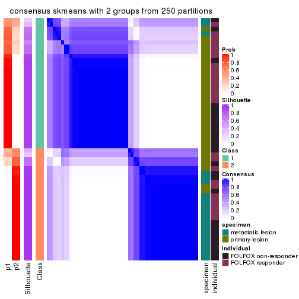
consensus_heatmap(res, k = 3)
consensus_heatmap(res, k = 4)
consensus_heatmap(res, k = 5)
consensus_heatmap(res, k = 6)
Heatmaps for the membership of samples in all partitions to see how consistent they are:
membership_heatmap(res, k = 2)
membership_heatmap(res, k = 3)
membership_heatmap(res, k = 4)
membership_heatmap(res, k = 5)
membership_heatmap(res, k = 6)
As soon as we have had the classes for columns, we can look for signatures which are significantly different between classes which can be candidate marks for certain classes. Following are the heatmaps for signatures.
Signature heatmaps where rows are scaled:
get_signatures(res, k = 2)
get_signatures(res, k = 3)
get_signatures(res, k = 4)
get_signatures(res, k = 5)
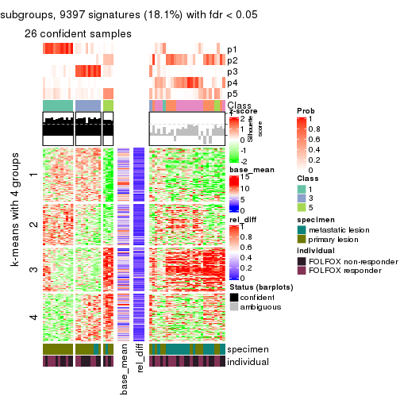
get_signatures(res, k = 6)
Signature heatmaps where rows are not scaled:
get_signatures(res, k = 2, scale_rows = FALSE)
get_signatures(res, k = 3, scale_rows = FALSE)
get_signatures(res, k = 4, scale_rows = FALSE)
get_signatures(res, k = 5, scale_rows = FALSE)
get_signatures(res, k = 6, scale_rows = FALSE)
Compare the overlap of signatures from different k:
compare_signatures(res)
get_signature() returns a data frame invisibly. TO get the list of signatures, the function
call should be assigned to a variable explicitly. In following code, if plot argument is set
to FALSE, no heatmap is plotted while only the differential analysis is performed.
# code only for demonstration
tb = get_signature(res, k = ..., plot = FALSE)
An example of the output of tb is:
#> which_row fdr mean_1 mean_2 scaled_mean_1 scaled_mean_2 km
#> 1 38 0.042760348 8.373488 9.131774 -0.5533452 0.5164555 1
#> 2 40 0.018707592 7.106213 8.469186 -0.6173731 0.5762149 1
#> 3 55 0.019134737 10.221463 11.207825 -0.6159697 0.5749050 1
#> 4 59 0.006059896 5.921854 7.869574 -0.6899429 0.6439467 1
#> 5 60 0.018055526 8.928898 10.211722 -0.6204761 0.5791110 1
#> 6 98 0.009384629 15.714769 14.887706 0.6635654 -0.6193277 2
...
The columns in tb are:
which_row: row indices corresponding to the input matrix.fdr: FDR for the differential test. mean_x: The mean value in group x.scaled_mean_x: The mean value in group x after rows are scaled.km: Row groups if k-means clustering is applied to rows.UMAP plot which shows how samples are separated.
dimension_reduction(res, k = 2, method = "UMAP")

dimension_reduction(res, k = 3, method = "UMAP")
dimension_reduction(res, k = 4, method = "UMAP")
dimension_reduction(res, k = 5, method = "UMAP")
dimension_reduction(res, k = 6, method = "UMAP")
Following heatmap shows how subgroups are split when increasing k:
collect_classes(res)
Test correlation between subgroups and known annotations. If the known annotation is numeric, one-way ANOVA test is applied, and if the known annotation is discrete, chi-squared contingency table test is applied.
test_to_known_factors(res)
#> n specimen(p) individual(p) k
#> MAD:skmeans 50 3.04e-07 0.570 2
#> MAD:skmeans 45 2.70e-05 0.995 3
#> MAD:skmeans 50 1.71e-05 0.876 4
#> MAD:skmeans 26 2.26e-01 0.884 5
#> MAD:skmeans 35 5.54e-04 0.799 6
If matrix rows can be associated to genes, consider to use GO_Enrichment(res,
...) to perform function enrichment for the signature genes.
The object with results only for a single top-value method and a single partition method can be extracted as:
res = res_list["MAD", "pam"]
# you can also extract it by
# res = res_list["MAD:pam"]
A summary of res and all the functions that can be applied to it:
res
#> A 'ConsensusPartition' object with k = 2, 3, 4, 5, 6.
#> On a matrix with 51941 rows and 54 columns.
#> Top rows (1000, 2000, 3000, 4000, 5000) are extracted by 'MAD' method.
#> Subgroups are detected by 'pam' method.
#> Performed in total 1250 partitions by row resampling.
#> Best k for subgroups seems to be 2.
#>
#> Following methods can be applied to this 'ConsensusPartition' object:
#> [1] "cola_report" "collect_classes" "collect_plots"
#> [4] "collect_stats" "colnames" "compare_signatures"
#> [7] "consensus_heatmap" "dimension_reduction" "functional_enrichment"
#> [10] "get_anno_col" "get_anno" "get_classes"
#> [13] "get_consensus" "get_matrix" "get_membership"
#> [16] "get_param" "get_signatures" "get_stats"
#> [19] "is_best_k" "is_stable_k" "membership_heatmap"
#> [22] "ncol" "nrow" "plot_ecdf"
#> [25] "rownames" "select_partition_number" "show"
#> [28] "suggest_best_k" "test_to_known_factors"
collect_plots() function collects all the plots made from res for all k (number of partitions)
into one single page to provide an easy and fast comparison between different k.
collect_plots(res)
The plots are:
k and the heatmap of
predicted classes for each k.k.k.k.All the plots in panels can be made by individual functions and they are plotted later in this section.
select_partition_number() produces several plots showing different
statistics for choosing “optimized” k. There are following statistics:
k;k, the area increased is defined as \(A_k - A_{k-1}\).The detailed explanations of these statistics can be found in the cola vignette.
Generally speaking, lower PAC score, higher mean silhouette score or higher
concordance corresponds to better partition. Rand index and Jaccard index
measure how similar the current partition is compared to partition with k-1.
If they are too similar, we won't accept k is better than k-1.
select_partition_number(res)
The numeric values for all these statistics can be obtained by get_stats().
get_stats(res)
#> k 1-PAC mean_silhouette concordance area_increased Rand Jaccard
#> 2 2 0.689 0.872 0.942 0.5057 0.493 0.493
#> 3 3 0.552 0.536 0.742 0.3074 0.736 0.513
#> 4 4 0.560 0.581 0.791 0.1292 0.824 0.527
#> 5 5 0.704 0.392 0.721 0.0679 0.790 0.386
#> 6 6 0.728 0.586 0.797 0.0435 0.886 0.562
suggest_best_k() suggests the best \(k\) based on these statistics. The rules are as follows:
NA.suggest_best_k(res)
#> [1] 2
Following shows the table of the partitions (You need to click the show/hide
code output link to see it). The membership matrix (columns with name p*)
is inferred by
clue::cl_consensus()
function with the SE method. Basically the value in the membership matrix
represents the probability to belong to a certain group. The finall class
label for an item is determined with the group with highest probability it
belongs to.
In get_classes() function, the entropy is calculated from the membership
matrix and the silhouette score is calculated from the consensus matrix.
cbind(get_classes(res, k = 2), get_membership(res, k = 2))
#> class entropy silhouette p1 p2
#> GSM710828 2 0.5178 0.84314 0.116 0.884
#> GSM710829 2 0.0000 0.93562 0.000 1.000
#> GSM710839 2 0.0000 0.93562 0.000 1.000
#> GSM710841 2 0.0938 0.93126 0.012 0.988
#> GSM710843 2 0.0000 0.93562 0.000 1.000
#> GSM710845 1 0.8661 0.57966 0.712 0.288
#> GSM710846 2 0.0000 0.93562 0.000 1.000
#> GSM710849 2 0.0376 0.93434 0.004 0.996
#> GSM710853 2 0.0000 0.93562 0.000 1.000
#> GSM710855 1 0.9608 0.45421 0.616 0.384
#> GSM710858 2 0.0000 0.93562 0.000 1.000
#> GSM710860 2 0.0000 0.93562 0.000 1.000
#> GSM710801 2 0.0000 0.93562 0.000 1.000
#> GSM710813 2 0.0000 0.93562 0.000 1.000
#> GSM710814 2 0.0000 0.93562 0.000 1.000
#> GSM710815 2 0.0000 0.93562 0.000 1.000
#> GSM710816 2 0.2236 0.91623 0.036 0.964
#> GSM710817 2 0.0000 0.93562 0.000 1.000
#> GSM710818 1 0.8144 0.69341 0.748 0.252
#> GSM710819 1 0.4431 0.86832 0.908 0.092
#> GSM710820 2 0.0000 0.93562 0.000 1.000
#> GSM710830 1 0.0000 0.93427 1.000 0.000
#> GSM710831 2 0.0000 0.93562 0.000 1.000
#> GSM710832 1 0.0000 0.93427 1.000 0.000
#> GSM710833 1 0.9635 0.43078 0.612 0.388
#> GSM710834 2 0.6048 0.83944 0.148 0.852
#> GSM710835 2 0.5737 0.85251 0.136 0.864
#> GSM710836 1 0.2603 0.90494 0.956 0.044
#> GSM710837 1 0.0000 0.93427 1.000 0.000
#> GSM710862 1 0.0376 0.93243 0.996 0.004
#> GSM710863 1 0.0000 0.93427 1.000 0.000
#> GSM710865 1 0.0000 0.93427 1.000 0.000
#> GSM710867 1 0.0000 0.93427 1.000 0.000
#> GSM710869 1 0.0000 0.93427 1.000 0.000
#> GSM710871 1 0.0000 0.93427 1.000 0.000
#> GSM710873 1 0.3431 0.88885 0.936 0.064
#> GSM710802 1 0.0000 0.93427 1.000 0.000
#> GSM710803 1 0.0000 0.93427 1.000 0.000
#> GSM710804 2 0.5629 0.85558 0.132 0.868
#> GSM710805 2 0.3733 0.89792 0.072 0.928
#> GSM710806 2 0.5737 0.85251 0.136 0.864
#> GSM710807 1 0.0000 0.93427 1.000 0.000
#> GSM710808 1 0.0000 0.93427 1.000 0.000
#> GSM710809 2 0.5629 0.85621 0.132 0.868
#> GSM710810 1 0.0000 0.93427 1.000 0.000
#> GSM710811 1 0.0000 0.93427 1.000 0.000
#> GSM710812 1 0.0000 0.93427 1.000 0.000
#> GSM710821 1 0.0376 0.93258 0.996 0.004
#> GSM710822 1 0.2778 0.90404 0.952 0.048
#> GSM710823 1 0.6438 0.80693 0.836 0.164
#> GSM710824 2 0.9963 0.00859 0.464 0.536
#> GSM710825 1 0.0376 0.93258 0.996 0.004
#> GSM710826 1 0.0000 0.93427 1.000 0.000
#> GSM710827 1 0.0000 0.93427 1.000 0.000
cbind(get_classes(res, k = 3), get_membership(res, k = 3))
#> class entropy silhouette p1 p2 p3
#> GSM710828 2 0.1031 0.7073 0.024 0.976 0.000
#> GSM710829 2 0.5968 0.7173 0.000 0.636 0.364
#> GSM710839 2 0.0000 0.7240 0.000 1.000 0.000
#> GSM710841 2 0.5988 0.7152 0.000 0.632 0.368
#> GSM710843 2 0.5968 0.7173 0.000 0.636 0.364
#> GSM710845 1 0.5706 0.3329 0.680 0.320 0.000
#> GSM710846 2 0.0000 0.7240 0.000 1.000 0.000
#> GSM710849 2 0.6209 0.7129 0.004 0.628 0.368
#> GSM710853 2 0.0000 0.7240 0.000 1.000 0.000
#> GSM710855 3 0.6045 0.4216 0.000 0.380 0.620
#> GSM710858 2 0.0000 0.7240 0.000 1.000 0.000
#> GSM710860 2 0.0000 0.7240 0.000 1.000 0.000
#> GSM710801 2 0.5363 0.7294 0.000 0.724 0.276
#> GSM710813 2 0.5988 0.7152 0.000 0.632 0.368
#> GSM710814 2 0.0000 0.7240 0.000 1.000 0.000
#> GSM710815 2 0.5810 0.7239 0.000 0.664 0.336
#> GSM710816 2 0.0000 0.7240 0.000 1.000 0.000
#> GSM710817 3 0.6235 -0.5049 0.000 0.436 0.564
#> GSM710818 2 0.5465 0.3640 0.288 0.712 0.000
#> GSM710819 3 0.8141 0.4126 0.260 0.116 0.624
#> GSM710820 2 0.5968 0.7173 0.000 0.636 0.364
#> GSM710830 1 0.6307 -0.1100 0.512 0.000 0.488
#> GSM710831 3 0.6291 -0.5481 0.000 0.468 0.532
#> GSM710832 1 0.4121 0.6724 0.832 0.000 0.168
#> GSM710833 3 0.6026 0.4233 0.000 0.376 0.624
#> GSM710834 2 0.9596 0.4974 0.212 0.452 0.336
#> GSM710835 3 0.2584 0.4125 0.008 0.064 0.928
#> GSM710836 3 0.6111 0.2921 0.396 0.000 0.604
#> GSM710837 3 0.5968 0.3474 0.364 0.000 0.636
#> GSM710862 1 0.0237 0.7985 0.996 0.004 0.000
#> GSM710863 1 0.1529 0.7811 0.960 0.000 0.040
#> GSM710865 1 0.0000 0.8003 1.000 0.000 0.000
#> GSM710867 3 0.5988 0.3423 0.368 0.000 0.632
#> GSM710869 3 0.6235 0.2195 0.436 0.000 0.564
#> GSM710871 1 0.6280 -0.0339 0.540 0.000 0.460
#> GSM710873 3 0.4842 0.4527 0.224 0.000 0.776
#> GSM710802 1 0.3941 0.6780 0.844 0.000 0.156
#> GSM710803 1 0.1031 0.7928 0.976 0.000 0.024
#> GSM710804 2 0.6274 0.6261 0.000 0.544 0.456
#> GSM710805 2 0.7534 0.6787 0.048 0.584 0.368
#> GSM710806 3 0.6148 0.3398 0.148 0.076 0.776
#> GSM710807 3 0.5968 0.3474 0.364 0.000 0.636
#> GSM710808 1 0.0000 0.8003 1.000 0.000 0.000
#> GSM710809 3 0.1529 0.4296 0.000 0.040 0.960
#> GSM710810 1 0.0000 0.8003 1.000 0.000 0.000
#> GSM710811 1 0.6225 0.0423 0.568 0.000 0.432
#> GSM710812 1 0.0747 0.7967 0.984 0.000 0.016
#> GSM710821 1 0.0000 0.8003 1.000 0.000 0.000
#> GSM710822 3 0.6608 0.2015 0.432 0.008 0.560
#> GSM710823 1 0.5360 0.6010 0.768 0.012 0.220
#> GSM710824 2 0.1289 0.7013 0.032 0.968 0.000
#> GSM710825 1 0.0000 0.8003 1.000 0.000 0.000
#> GSM710826 1 0.0424 0.7991 0.992 0.000 0.008
#> GSM710827 1 0.0000 0.8003 1.000 0.000 0.000
cbind(get_classes(res, k = 4), get_membership(res, k = 4))
#> class entropy silhouette p1 p2 p3 p4
#> GSM710828 4 0.0000 0.77273 0.000 0.000 0.000 1.000
#> GSM710829 2 0.4277 0.69298 0.000 0.720 0.000 0.280
#> GSM710839 4 0.0000 0.77273 0.000 0.000 0.000 1.000
#> GSM710841 2 0.4277 0.69298 0.000 0.720 0.000 0.280
#> GSM710843 2 0.4331 0.68447 0.000 0.712 0.000 0.288
#> GSM710845 1 0.7272 0.33461 0.496 0.160 0.000 0.344
#> GSM710846 4 0.2921 0.67790 0.000 0.140 0.000 0.860
#> GSM710849 2 0.4277 0.69298 0.000 0.720 0.000 0.280
#> GSM710853 4 0.3024 0.67260 0.000 0.148 0.000 0.852
#> GSM710855 3 0.3852 0.67829 0.000 0.008 0.800 0.192
#> GSM710858 4 0.1118 0.76161 0.000 0.036 0.000 0.964
#> GSM710860 4 0.0000 0.77273 0.000 0.000 0.000 1.000
#> GSM710801 4 0.4977 -0.10115 0.000 0.460 0.000 0.540
#> GSM710813 2 0.4456 0.69271 0.000 0.716 0.004 0.280
#> GSM710814 4 0.0188 0.77185 0.000 0.004 0.000 0.996
#> GSM710815 4 0.4877 0.00283 0.000 0.408 0.000 0.592
#> GSM710816 4 0.0000 0.77273 0.000 0.000 0.000 1.000
#> GSM710817 3 0.4250 0.56222 0.000 0.276 0.724 0.000
#> GSM710818 4 0.4933 0.14642 0.432 0.000 0.000 0.568
#> GSM710819 3 0.3925 0.69346 0.016 0.000 0.808 0.176
#> GSM710820 2 0.4277 0.69298 0.000 0.720 0.000 0.280
#> GSM710830 3 0.7253 -0.25137 0.428 0.144 0.428 0.000
#> GSM710831 2 0.6722 0.08142 0.000 0.500 0.408 0.092
#> GSM710832 1 0.4477 0.48945 0.688 0.000 0.312 0.000
#> GSM710833 3 0.3528 0.68239 0.000 0.000 0.808 0.192
#> GSM710834 2 0.6110 0.44485 0.176 0.680 0.000 0.144
#> GSM710835 3 0.6568 0.09945 0.000 0.408 0.512 0.080
#> GSM710836 3 0.5016 0.23896 0.396 0.004 0.600 0.000
#> GSM710837 3 0.0000 0.74893 0.000 0.000 1.000 0.000
#> GSM710862 1 0.0336 0.79217 0.992 0.000 0.000 0.008
#> GSM710863 1 0.0000 0.79367 1.000 0.000 0.000 0.000
#> GSM710865 1 0.0000 0.79367 1.000 0.000 0.000 0.000
#> GSM710867 3 0.0592 0.74942 0.016 0.000 0.984 0.000
#> GSM710869 1 0.4898 0.25314 0.584 0.000 0.416 0.000
#> GSM710871 1 0.3610 0.66038 0.800 0.000 0.200 0.000
#> GSM710873 3 0.0376 0.74877 0.004 0.004 0.992 0.000
#> GSM710802 1 0.4567 0.54131 0.716 0.000 0.276 0.008
#> GSM710803 1 0.2048 0.77781 0.928 0.008 0.064 0.000
#> GSM710804 2 0.3300 0.62312 0.000 0.848 0.008 0.144
#> GSM710805 2 0.4456 0.69271 0.000 0.716 0.004 0.280
#> GSM710806 2 0.6511 0.31258 0.172 0.640 0.188 0.000
#> GSM710807 3 0.0188 0.74970 0.004 0.000 0.996 0.000
#> GSM710808 1 0.3157 0.76420 0.852 0.144 0.004 0.000
#> GSM710809 2 0.4999 0.07357 0.000 0.508 0.492 0.000
#> GSM710810 1 0.0817 0.79572 0.976 0.024 0.000 0.000
#> GSM710811 1 0.5028 0.31220 0.596 0.004 0.400 0.000
#> GSM710812 1 0.0921 0.79545 0.972 0.028 0.000 0.000
#> GSM710821 1 0.3157 0.76296 0.852 0.144 0.000 0.004
#> GSM710822 3 0.1211 0.74484 0.040 0.000 0.960 0.000
#> GSM710823 3 0.4365 0.61597 0.188 0.000 0.784 0.028
#> GSM710824 4 0.2742 0.72439 0.076 0.024 0.000 0.900
#> GSM710825 1 0.3157 0.76296 0.852 0.144 0.000 0.004
#> GSM710826 1 0.4141 0.75542 0.820 0.144 0.032 0.004
#> GSM710827 1 0.0000 0.79367 1.000 0.000 0.000 0.000
cbind(get_classes(res, k = 5), get_membership(res, k = 5))
#> class entropy silhouette p1 p2 p3 p4 p5
#> GSM710828 3 0.4664 0.2276 0.008 0.000 0.552 0.004 0.436
#> GSM710829 2 0.4101 0.8186 0.000 0.628 0.372 0.000 0.000
#> GSM710839 3 0.4410 0.2291 0.000 0.000 0.556 0.004 0.440
#> GSM710841 2 0.4101 0.8186 0.000 0.628 0.372 0.000 0.000
#> GSM710843 2 0.4251 0.8162 0.000 0.624 0.372 0.000 0.004
#> GSM710845 4 0.3010 0.8086 0.116 0.008 0.000 0.860 0.016
#> GSM710846 3 0.4517 0.2220 0.000 0.008 0.556 0.000 0.436
#> GSM710849 2 0.4101 0.8186 0.000 0.628 0.372 0.000 0.000
#> GSM710853 3 0.4504 0.2146 0.000 0.008 0.564 0.000 0.428
#> GSM710855 3 0.4074 -0.1097 0.000 0.364 0.636 0.000 0.000
#> GSM710858 3 0.4268 0.2276 0.000 0.000 0.556 0.000 0.444
#> GSM710860 3 0.4410 0.2291 0.000 0.000 0.556 0.004 0.440
#> GSM710801 3 0.6792 -0.4484 0.000 0.324 0.380 0.000 0.296
#> GSM710813 2 0.4074 0.8150 0.000 0.636 0.364 0.000 0.000
#> GSM710814 3 0.4403 0.2266 0.000 0.000 0.560 0.004 0.436
#> GSM710815 2 0.6671 0.5000 0.000 0.396 0.372 0.000 0.232
#> GSM710816 3 0.4410 0.2291 0.000 0.000 0.556 0.004 0.440
#> GSM710817 5 0.5272 0.6870 0.000 0.052 0.396 0.000 0.552
#> GSM710818 1 0.6452 0.2755 0.476 0.000 0.196 0.000 0.328
#> GSM710819 3 0.4735 -0.1251 0.012 0.372 0.608 0.000 0.008
#> GSM710820 2 0.4101 0.8186 0.000 0.628 0.372 0.000 0.000
#> GSM710830 4 0.0162 0.8027 0.000 0.000 0.004 0.996 0.000
#> GSM710831 5 0.6249 0.7639 0.004 0.264 0.176 0.000 0.556
#> GSM710832 1 0.6751 0.5088 0.624 0.004 0.152 0.124 0.096
#> GSM710833 3 0.4517 -0.1199 0.004 0.372 0.616 0.000 0.008
#> GSM710834 4 0.2984 0.7696 0.016 0.124 0.004 0.856 0.000
#> GSM710835 5 0.6444 0.8196 0.000 0.204 0.224 0.012 0.560
#> GSM710836 1 0.1087 0.7356 0.968 0.008 0.016 0.000 0.008
#> GSM710837 3 0.6845 -0.2573 0.000 0.372 0.424 0.012 0.192
#> GSM710862 1 0.0162 0.7413 0.996 0.000 0.004 0.000 0.000
#> GSM710863 1 0.0609 0.7392 0.980 0.000 0.000 0.020 0.000
#> GSM710865 1 0.0162 0.7416 0.996 0.000 0.000 0.004 0.000
#> GSM710867 3 0.7245 -0.2580 0.000 0.360 0.424 0.040 0.176
#> GSM710869 1 0.1029 0.7384 0.972 0.008 0.004 0.008 0.008
#> GSM710871 1 0.2891 0.6839 0.824 0.000 0.000 0.176 0.000
#> GSM710873 3 0.7051 -0.2571 0.008 0.372 0.424 0.012 0.184
#> GSM710802 1 0.6285 0.5088 0.652 0.000 0.168 0.084 0.096
#> GSM710803 4 0.4297 -0.2479 0.472 0.000 0.000 0.528 0.000
#> GSM710804 2 0.4088 0.1205 0.000 0.632 0.000 0.000 0.368
#> GSM710805 2 0.4074 0.8150 0.000 0.636 0.364 0.000 0.000
#> GSM710806 4 0.2389 0.7457 0.000 0.116 0.000 0.880 0.004
#> GSM710807 3 0.7141 -0.2530 0.012 0.368 0.424 0.012 0.184
#> GSM710808 4 0.1732 0.8191 0.080 0.000 0.000 0.920 0.000
#> GSM710809 2 0.4742 -0.4434 0.004 0.644 0.008 0.012 0.332
#> GSM710810 1 0.3177 0.5974 0.792 0.000 0.000 0.208 0.000
#> GSM710811 1 0.4306 0.2312 0.508 0.000 0.000 0.492 0.000
#> GSM710812 1 0.4451 -0.0647 0.504 0.000 0.004 0.492 0.000
#> GSM710821 4 0.2561 0.8018 0.144 0.000 0.000 0.856 0.000
#> GSM710822 3 0.7222 -0.2521 0.016 0.364 0.424 0.012 0.184
#> GSM710823 3 0.7103 -0.2550 0.028 0.364 0.424 0.000 0.184
#> GSM710824 3 0.4658 0.2267 0.008 0.000 0.556 0.004 0.432
#> GSM710825 4 0.2561 0.8018 0.144 0.000 0.000 0.856 0.000
#> GSM710826 4 0.0404 0.8063 0.012 0.000 0.000 0.988 0.000
#> GSM710827 1 0.0162 0.7416 0.996 0.000 0.000 0.004 0.000
cbind(get_classes(res, k = 6), get_membership(res, k = 6))
#> class entropy silhouette p1 p2 p3 p4 p5 p6
#> GSM710828 4 0.0713 0.811 0.000 0.028 0.000 0.972 0.000 0.000
#> GSM710829 2 0.1007 0.861 0.000 0.956 0.000 0.044 0.000 0.000
#> GSM710839 4 0.0713 0.811 0.000 0.028 0.000 0.972 0.000 0.000
#> GSM710841 2 0.1007 0.861 0.000 0.956 0.000 0.044 0.000 0.000
#> GSM710843 2 0.1204 0.842 0.000 0.944 0.000 0.056 0.000 0.000
#> GSM710845 5 0.7046 0.484 0.124 0.004 0.000 0.128 0.452 0.292
#> GSM710846 4 0.2048 0.784 0.000 0.120 0.000 0.880 0.000 0.000
#> GSM710849 2 0.1007 0.861 0.000 0.956 0.000 0.044 0.000 0.000
#> GSM710853 4 0.2260 0.775 0.000 0.140 0.000 0.860 0.000 0.000
#> GSM710855 3 0.5541 0.530 0.000 0.052 0.652 0.176 0.000 0.120
#> GSM710858 4 0.2384 0.788 0.000 0.048 0.000 0.888 0.000 0.064
#> GSM710860 4 0.0713 0.811 0.000 0.028 0.000 0.972 0.000 0.000
#> GSM710801 4 0.3843 0.285 0.000 0.452 0.000 0.548 0.000 0.000
#> GSM710813 2 0.1498 0.847 0.000 0.940 0.000 0.032 0.000 0.028
#> GSM710814 4 0.0790 0.811 0.000 0.032 0.000 0.968 0.000 0.000
#> GSM710815 4 0.5584 0.313 0.000 0.316 0.000 0.520 0.000 0.164
#> GSM710816 4 0.0914 0.792 0.000 0.016 0.000 0.968 0.000 0.016
#> GSM710817 3 0.4651 -0.736 0.000 0.040 0.480 0.000 0.000 0.480
#> GSM710818 4 0.4095 -0.088 0.480 0.000 0.000 0.512 0.000 0.008
#> GSM710819 3 0.5288 0.555 0.000 0.028 0.644 0.096 0.000 0.232
#> GSM710820 2 0.1007 0.861 0.000 0.956 0.000 0.044 0.000 0.000
#> GSM710830 5 0.0891 0.586 0.000 0.000 0.024 0.000 0.968 0.008
#> GSM710831 6 0.5320 0.770 0.000 0.144 0.280 0.000 0.000 0.576
#> GSM710832 1 0.5087 0.492 0.628 0.000 0.116 0.000 0.252 0.004
#> GSM710833 3 0.5352 0.557 0.000 0.028 0.652 0.128 0.000 0.192
#> GSM710834 5 0.5978 0.525 0.024 0.120 0.000 0.024 0.608 0.224
#> GSM710835 6 0.5221 0.748 0.000 0.092 0.432 0.000 0.000 0.476
#> GSM710836 1 0.3245 0.682 0.800 0.028 0.000 0.000 0.000 0.172
#> GSM710837 3 0.0000 0.672 0.000 0.000 1.000 0.000 0.000 0.000
#> GSM710862 1 0.0000 0.785 1.000 0.000 0.000 0.000 0.000 0.000
#> GSM710863 1 0.0260 0.783 0.992 0.000 0.000 0.000 0.008 0.000
#> GSM710865 1 0.0000 0.785 1.000 0.000 0.000 0.000 0.000 0.000
#> GSM710867 3 0.0260 0.673 0.000 0.000 0.992 0.000 0.008 0.000
#> GSM710869 1 0.1967 0.753 0.904 0.000 0.012 0.000 0.000 0.084
#> GSM710871 1 0.3086 0.710 0.820 0.000 0.020 0.000 0.156 0.004
#> GSM710873 3 0.3240 0.548 0.000 0.000 0.752 0.004 0.000 0.244
#> GSM710802 1 0.5418 0.506 0.632 0.012 0.064 0.028 0.000 0.264
#> GSM710803 5 0.4852 -0.132 0.420 0.000 0.000 0.004 0.528 0.048
#> GSM710804 2 0.3851 0.101 0.000 0.540 0.000 0.000 0.000 0.460
#> GSM710805 2 0.1693 0.852 0.000 0.932 0.000 0.044 0.004 0.020
#> GSM710806 5 0.2994 0.465 0.000 0.208 0.000 0.000 0.788 0.004
#> GSM710807 3 0.0000 0.672 0.000 0.000 1.000 0.000 0.000 0.000
#> GSM710808 5 0.3163 0.600 0.140 0.000 0.000 0.000 0.820 0.040
#> GSM710809 2 0.5108 0.329 0.000 0.628 0.164 0.000 0.000 0.208
#> GSM710810 1 0.4406 0.559 0.728 0.004 0.000 0.000 0.152 0.116
#> GSM710811 5 0.3867 -0.260 0.488 0.000 0.000 0.000 0.512 0.000
#> GSM710812 1 0.3349 0.529 0.748 0.000 0.000 0.000 0.244 0.008
#> GSM710821 5 0.5668 0.517 0.240 0.004 0.000 0.024 0.608 0.124
#> GSM710822 3 0.0458 0.672 0.016 0.000 0.984 0.000 0.000 0.000
#> GSM710823 3 0.0858 0.667 0.028 0.000 0.968 0.000 0.000 0.004
#> GSM710824 4 0.2529 0.772 0.004 0.028 0.000 0.892 0.012 0.064
#> GSM710825 5 0.5068 0.467 0.324 0.004 0.000 0.024 0.608 0.040
#> GSM710826 5 0.0291 0.596 0.004 0.000 0.000 0.000 0.992 0.004
#> GSM710827 1 0.0000 0.785 1.000 0.000 0.000 0.000 0.000 0.000
Heatmaps for the consensus matrix. It visualizes the probability of two samples to be in a same group.
consensus_heatmap(res, k = 2)
consensus_heatmap(res, k = 3)
consensus_heatmap(res, k = 4)
consensus_heatmap(res, k = 5)
consensus_heatmap(res, k = 6)
Heatmaps for the membership of samples in all partitions to see how consistent they are:
membership_heatmap(res, k = 2)
membership_heatmap(res, k = 3)
membership_heatmap(res, k = 4)
membership_heatmap(res, k = 5)
membership_heatmap(res, k = 6)
As soon as we have had the classes for columns, we can look for signatures which are significantly different between classes which can be candidate marks for certain classes. Following are the heatmaps for signatures.
Signature heatmaps where rows are scaled:
get_signatures(res, k = 2)
get_signatures(res, k = 3)
get_signatures(res, k = 4)

get_signatures(res, k = 5)
get_signatures(res, k = 6)
Signature heatmaps where rows are not scaled:
get_signatures(res, k = 2, scale_rows = FALSE)
get_signatures(res, k = 3, scale_rows = FALSE)
get_signatures(res, k = 4, scale_rows = FALSE)
get_signatures(res, k = 5, scale_rows = FALSE)
get_signatures(res, k = 6, scale_rows = FALSE)
Compare the overlap of signatures from different k:
compare_signatures(res)
get_signature() returns a data frame invisibly. TO get the list of signatures, the function
call should be assigned to a variable explicitly. In following code, if plot argument is set
to FALSE, no heatmap is plotted while only the differential analysis is performed.
# code only for demonstration
tb = get_signature(res, k = ..., plot = FALSE)
An example of the output of tb is:
#> which_row fdr mean_1 mean_2 scaled_mean_1 scaled_mean_2 km
#> 1 38 0.042760348 8.373488 9.131774 -0.5533452 0.5164555 1
#> 2 40 0.018707592 7.106213 8.469186 -0.6173731 0.5762149 1
#> 3 55 0.019134737 10.221463 11.207825 -0.6159697 0.5749050 1
#> 4 59 0.006059896 5.921854 7.869574 -0.6899429 0.6439467 1
#> 5 60 0.018055526 8.928898 10.211722 -0.6204761 0.5791110 1
#> 6 98 0.009384629 15.714769 14.887706 0.6635654 -0.6193277 2
...
The columns in tb are:
which_row: row indices corresponding to the input matrix.fdr: FDR for the differential test. mean_x: The mean value in group x.scaled_mean_x: The mean value in group x after rows are scaled.km: Row groups if k-means clustering is applied to rows.UMAP plot which shows how samples are separated.
dimension_reduction(res, k = 2, method = "UMAP")
dimension_reduction(res, k = 3, method = "UMAP")
dimension_reduction(res, k = 4, method = "UMAP")
dimension_reduction(res, k = 5, method = "UMAP")
dimension_reduction(res, k = 6, method = "UMAP")
Following heatmap shows how subgroups are split when increasing k:
collect_classes(res)
Test correlation between subgroups and known annotations. If the known annotation is numeric, one-way ANOVA test is applied, and if the known annotation is discrete, chi-squared contingency table test is applied.
test_to_known_factors(res)
#> n specimen(p) individual(p) k
#> MAD:pam 51 4.64e-05 0.680 2
#> MAD:pam 33 9.36e-06 0.305 3
#> MAD:pam 40 7.78e-05 0.419 4
#> MAD:pam 29 5.05e-04 0.543 5
#> MAD:pam 42 3.64e-05 0.789 6
If matrix rows can be associated to genes, consider to use GO_Enrichment(res,
...) to perform function enrichment for the signature genes.
The object with results only for a single top-value method and a single partition method can be extracted as:
res = res_list["MAD", "mclust"]
# you can also extract it by
# res = res_list["MAD:mclust"]
A summary of res and all the functions that can be applied to it:
res
#> A 'ConsensusPartition' object with k = 2, 3, 4, 5, 6.
#> On a matrix with 51941 rows and 54 columns.
#> Top rows (1000, 2000, 3000, 4000, 5000) are extracted by 'MAD' method.
#> Subgroups are detected by 'mclust' method.
#> Performed in total 1250 partitions by row resampling.
#> Best k for subgroups seems to be 2.
#>
#> Following methods can be applied to this 'ConsensusPartition' object:
#> [1] "cola_report" "collect_classes" "collect_plots"
#> [4] "collect_stats" "colnames" "compare_signatures"
#> [7] "consensus_heatmap" "dimension_reduction" "functional_enrichment"
#> [10] "get_anno_col" "get_anno" "get_classes"
#> [13] "get_consensus" "get_matrix" "get_membership"
#> [16] "get_param" "get_signatures" "get_stats"
#> [19] "is_best_k" "is_stable_k" "membership_heatmap"
#> [22] "ncol" "nrow" "plot_ecdf"
#> [25] "rownames" "select_partition_number" "show"
#> [28] "suggest_best_k" "test_to_known_factors"
collect_plots() function collects all the plots made from res for all k (number of partitions)
into one single page to provide an easy and fast comparison between different k.
collect_plots(res)
The plots are:
k and the heatmap of
predicted classes for each k.k.k.k.All the plots in panels can be made by individual functions and they are plotted later in this section.
select_partition_number() produces several plots showing different
statistics for choosing “optimized” k. There are following statistics:
k;k, the area increased is defined as \(A_k - A_{k-1}\).The detailed explanations of these statistics can be found in the cola vignette.
Generally speaking, lower PAC score, higher mean silhouette score or higher
concordance corresponds to better partition. Rand index and Jaccard index
measure how similar the current partition is compared to partition with k-1.
If they are too similar, we won't accept k is better than k-1.
select_partition_number(res)

The numeric values for all these statistics can be obtained by get_stats().
get_stats(res)
#> k 1-PAC mean_silhouette concordance area_increased Rand Jaccard
#> 2 2 0.413 0.850 0.886 0.4579 0.497 0.497
#> 3 3 0.309 0.667 0.725 0.2854 0.797 0.642
#> 4 4 0.616 0.756 0.858 0.2342 0.743 0.455
#> 5 5 0.534 0.536 0.682 0.0569 0.897 0.637
#> 6 6 0.729 0.610 0.781 0.0775 0.859 0.460
suggest_best_k() suggests the best \(k\) based on these statistics. The rules are as follows:
NA.suggest_best_k(res)
#> [1] 2
Following shows the table of the partitions (You need to click the show/hide
code output link to see it). The membership matrix (columns with name p*)
is inferred by
clue::cl_consensus()
function with the SE method. Basically the value in the membership matrix
represents the probability to belong to a certain group. The finall class
label for an item is determined with the group with highest probability it
belongs to.
In get_classes() function, the entropy is calculated from the membership
matrix and the silhouette score is calculated from the consensus matrix.
cbind(get_classes(res, k = 2), get_membership(res, k = 2))
#> class entropy silhouette p1 p2
#> GSM710828 2 0.0938 0.9515 0.012 0.988
#> GSM710829 2 0.0938 0.9514 0.012 0.988
#> GSM710839 2 0.0000 0.9482 0.000 1.000
#> GSM710841 2 0.2423 0.9418 0.040 0.960
#> GSM710843 2 0.0376 0.9511 0.004 0.996
#> GSM710845 2 0.5629 0.8427 0.132 0.868
#> GSM710846 2 0.0376 0.9511 0.004 0.996
#> GSM710849 2 0.2423 0.9418 0.040 0.960
#> GSM710853 2 0.0376 0.9511 0.004 0.996
#> GSM710855 1 0.9661 0.6064 0.608 0.392
#> GSM710858 2 0.0672 0.9516 0.008 0.992
#> GSM710860 2 0.0000 0.9482 0.000 1.000
#> GSM710801 2 0.0376 0.9511 0.004 0.996
#> GSM710813 2 0.0376 0.9511 0.004 0.996
#> GSM710814 2 0.0000 0.9482 0.000 1.000
#> GSM710815 2 0.0376 0.9511 0.004 0.996
#> GSM710816 2 0.0938 0.9515 0.012 0.988
#> GSM710817 2 0.2603 0.9393 0.044 0.956
#> GSM710818 1 0.9358 0.6808 0.648 0.352
#> GSM710819 1 0.6973 0.8730 0.812 0.188
#> GSM710820 2 0.0376 0.9511 0.004 0.996
#> GSM710830 1 0.0376 0.7956 0.996 0.004
#> GSM710831 2 0.2778 0.9364 0.048 0.952
#> GSM710832 1 0.0000 0.7952 1.000 0.000
#> GSM710833 1 0.7299 0.8633 0.796 0.204
#> GSM710834 2 0.4939 0.8747 0.108 0.892
#> GSM710835 2 0.7376 0.7077 0.208 0.792
#> GSM710836 1 0.6973 0.8730 0.812 0.188
#> GSM710837 1 0.6973 0.8730 0.812 0.188
#> GSM710862 1 0.6973 0.8730 0.812 0.188
#> GSM710863 1 0.6438 0.8706 0.836 0.164
#> GSM710865 1 0.6438 0.8706 0.836 0.164
#> GSM710867 1 0.1414 0.8068 0.980 0.020
#> GSM710869 1 0.6973 0.8730 0.812 0.188
#> GSM710871 1 0.0000 0.7952 1.000 0.000
#> GSM710873 1 0.6973 0.8730 0.812 0.188
#> GSM710802 1 0.6973 0.8730 0.812 0.188
#> GSM710803 1 0.0000 0.7952 1.000 0.000
#> GSM710804 2 0.2603 0.9393 0.044 0.956
#> GSM710805 2 0.2236 0.9441 0.036 0.964
#> GSM710806 1 0.9954 -0.0507 0.540 0.460
#> GSM710807 1 0.6973 0.8730 0.812 0.188
#> GSM710808 1 0.3114 0.8027 0.944 0.056
#> GSM710809 1 0.8763 0.7646 0.704 0.296
#> GSM710810 1 0.7056 0.8709 0.808 0.192
#> GSM710811 1 0.0000 0.7952 1.000 0.000
#> GSM710812 1 0.6438 0.8706 0.836 0.164
#> GSM710821 1 0.8144 0.8195 0.748 0.252
#> GSM710822 1 0.6973 0.8730 0.812 0.188
#> GSM710823 1 0.6973 0.8730 0.812 0.188
#> GSM710824 2 0.6973 0.7490 0.188 0.812
#> GSM710825 1 0.9522 0.6321 0.628 0.372
#> GSM710826 1 0.0376 0.7956 0.996 0.004
#> GSM710827 1 0.6438 0.8706 0.836 0.164
cbind(get_classes(res, k = 3), get_membership(res, k = 3))
#> class entropy silhouette p1 p2 p3
#> GSM710828 3 0.1964 0.907 0.000 0.056 0.944
#> GSM710829 2 0.5058 0.744 0.000 0.756 0.244
#> GSM710839 3 0.0892 0.899 0.000 0.020 0.980
#> GSM710841 2 0.4974 0.745 0.000 0.764 0.236
#> GSM710843 3 0.2959 0.862 0.000 0.100 0.900
#> GSM710845 1 0.9390 0.525 0.488 0.192 0.320
#> GSM710846 2 0.5098 0.741 0.000 0.752 0.248
#> GSM710849 2 0.6168 0.738 0.036 0.740 0.224
#> GSM710853 2 0.5216 0.731 0.000 0.740 0.260
#> GSM710855 1 0.7872 0.660 0.632 0.276 0.092
#> GSM710858 2 0.5098 0.741 0.000 0.752 0.248
#> GSM710860 3 0.1031 0.898 0.000 0.024 0.976
#> GSM710801 2 0.6302 0.185 0.000 0.520 0.480
#> GSM710813 2 0.5058 0.744 0.000 0.756 0.244
#> GSM710814 3 0.0892 0.899 0.000 0.020 0.980
#> GSM710815 3 0.4291 0.759 0.000 0.180 0.820
#> GSM710816 3 0.2261 0.902 0.000 0.068 0.932
#> GSM710817 2 0.3921 0.671 0.036 0.884 0.080
#> GSM710818 1 0.8386 0.644 0.624 0.204 0.172
#> GSM710819 1 0.5948 0.694 0.640 0.360 0.000
#> GSM710820 2 0.5098 0.741 0.000 0.752 0.248
#> GSM710830 1 0.5291 0.525 0.732 0.000 0.268
#> GSM710831 2 0.3554 0.658 0.036 0.900 0.064
#> GSM710832 1 0.0237 0.712 0.996 0.000 0.004
#> GSM710833 1 0.5948 0.694 0.640 0.360 0.000
#> GSM710834 1 0.9358 0.535 0.496 0.192 0.312
#> GSM710835 2 0.5977 0.238 0.252 0.728 0.020
#> GSM710836 1 0.5882 0.701 0.652 0.348 0.000
#> GSM710837 1 0.5115 0.733 0.768 0.228 0.004
#> GSM710862 1 0.4968 0.746 0.800 0.188 0.012
#> GSM710863 1 0.2945 0.745 0.908 0.088 0.004
#> GSM710865 1 0.3030 0.746 0.904 0.092 0.004
#> GSM710867 1 0.1525 0.727 0.964 0.032 0.004
#> GSM710869 1 0.5760 0.710 0.672 0.328 0.000
#> GSM710871 1 0.0237 0.712 0.996 0.000 0.004
#> GSM710873 1 0.5835 0.705 0.660 0.340 0.000
#> GSM710802 1 0.4749 0.746 0.816 0.172 0.012
#> GSM710803 1 0.0237 0.712 0.996 0.000 0.004
#> GSM710804 2 0.5285 0.711 0.040 0.812 0.148
#> GSM710805 2 0.4782 0.731 0.016 0.820 0.164
#> GSM710806 1 0.6189 0.461 0.632 0.364 0.004
#> GSM710807 1 0.5754 0.720 0.700 0.296 0.004
#> GSM710808 1 0.5692 0.532 0.724 0.008 0.268
#> GSM710809 2 0.6298 -0.368 0.388 0.608 0.004
#> GSM710810 1 0.9006 0.603 0.556 0.188 0.256
#> GSM710811 1 0.0237 0.712 0.996 0.000 0.004
#> GSM710812 1 0.2945 0.745 0.908 0.088 0.004
#> GSM710821 1 0.8714 0.599 0.580 0.156 0.264
#> GSM710822 1 0.5733 0.712 0.676 0.324 0.000
#> GSM710823 1 0.5926 0.697 0.644 0.356 0.000
#> GSM710824 1 0.9944 0.506 0.384 0.320 0.296
#> GSM710825 1 0.8896 0.598 0.564 0.172 0.264
#> GSM710826 1 0.5291 0.525 0.732 0.000 0.268
#> GSM710827 1 0.2945 0.745 0.908 0.088 0.004
cbind(get_classes(res, k = 4), get_membership(res, k = 4))
#> class entropy silhouette p1 p2 p3 p4
#> GSM710828 4 0.0336 0.8594 0.000 0.008 0.000 0.992
#> GSM710829 2 0.0336 0.8501 0.000 0.992 0.000 0.008
#> GSM710839 4 0.0469 0.8609 0.000 0.012 0.000 0.988
#> GSM710841 2 0.0336 0.8501 0.000 0.992 0.000 0.008
#> GSM710843 4 0.1940 0.8517 0.000 0.076 0.000 0.924
#> GSM710845 4 0.4597 0.8153 0.024 0.092 0.060 0.824
#> GSM710846 2 0.4989 -0.0184 0.000 0.528 0.000 0.472
#> GSM710849 2 0.0188 0.8495 0.000 0.996 0.000 0.004
#> GSM710853 2 0.3074 0.7327 0.000 0.848 0.000 0.152
#> GSM710855 3 0.3710 0.8372 0.000 0.192 0.804 0.004
#> GSM710858 2 0.0817 0.8410 0.000 0.976 0.000 0.024
#> GSM710860 4 0.0469 0.8609 0.000 0.012 0.000 0.988
#> GSM710801 4 0.4632 0.6170 0.000 0.308 0.004 0.688
#> GSM710813 2 0.0336 0.8501 0.000 0.992 0.000 0.008
#> GSM710814 4 0.0469 0.8609 0.000 0.012 0.000 0.988
#> GSM710815 4 0.3494 0.7938 0.000 0.172 0.004 0.824
#> GSM710816 4 0.0469 0.8597 0.000 0.012 0.000 0.988
#> GSM710817 2 0.0469 0.8443 0.000 0.988 0.012 0.000
#> GSM710818 4 0.4175 0.6742 0.200 0.016 0.000 0.784
#> GSM710819 3 0.3401 0.8703 0.000 0.152 0.840 0.008
#> GSM710820 2 0.0524 0.8484 0.000 0.988 0.004 0.008
#> GSM710830 1 0.0000 0.8607 1.000 0.000 0.000 0.000
#> GSM710831 2 0.0469 0.8443 0.000 0.988 0.012 0.000
#> GSM710832 1 0.0000 0.8607 1.000 0.000 0.000 0.000
#> GSM710833 3 0.3401 0.8703 0.000 0.152 0.840 0.008
#> GSM710834 4 0.4941 0.7968 0.040 0.052 0.100 0.808
#> GSM710835 2 0.1211 0.8239 0.000 0.960 0.040 0.000
#> GSM710836 3 0.3727 0.8710 0.008 0.152 0.832 0.008
#> GSM710837 1 0.7028 0.1774 0.560 0.160 0.280 0.000
#> GSM710862 1 0.4287 0.8196 0.836 0.072 0.080 0.012
#> GSM710863 1 0.3306 0.8480 0.840 0.000 0.156 0.004
#> GSM710865 1 0.3306 0.8480 0.840 0.000 0.156 0.004
#> GSM710867 1 0.0188 0.8606 0.996 0.004 0.000 0.000
#> GSM710869 3 0.3727 0.8710 0.008 0.152 0.832 0.008
#> GSM710871 1 0.0000 0.8607 1.000 0.000 0.000 0.000
#> GSM710873 3 0.3306 0.8689 0.000 0.156 0.840 0.004
#> GSM710802 1 0.3933 0.7346 0.828 0.148 0.012 0.012
#> GSM710803 1 0.0000 0.8607 1.000 0.000 0.000 0.000
#> GSM710804 2 0.0564 0.8485 0.004 0.988 0.004 0.004
#> GSM710805 2 0.1545 0.8357 0.000 0.952 0.008 0.040
#> GSM710806 2 0.4941 0.2870 0.436 0.564 0.000 0.000
#> GSM710807 3 0.3355 0.8675 0.004 0.160 0.836 0.000
#> GSM710808 1 0.0927 0.8621 0.976 0.008 0.016 0.000
#> GSM710809 2 0.4916 0.0135 0.000 0.576 0.424 0.000
#> GSM710810 1 0.4093 0.8416 0.836 0.032 0.120 0.012
#> GSM710811 1 0.0000 0.8607 1.000 0.000 0.000 0.000
#> GSM710812 1 0.3306 0.8480 0.840 0.000 0.156 0.004
#> GSM710821 1 0.3965 0.8430 0.840 0.032 0.120 0.008
#> GSM710822 3 0.7454 0.5189 0.328 0.152 0.512 0.008
#> GSM710823 3 0.7467 0.5112 0.332 0.152 0.508 0.008
#> GSM710824 4 0.4239 0.7716 0.004 0.152 0.032 0.812
#> GSM710825 1 0.7877 0.0994 0.432 0.032 0.120 0.416
#> GSM710826 1 0.0000 0.8607 1.000 0.000 0.000 0.000
#> GSM710827 1 0.3441 0.8481 0.840 0.004 0.152 0.004
cbind(get_classes(res, k = 5), get_membership(res, k = 5))
#> class entropy silhouette p1 p2 p3 p4 p5
#> GSM710828 4 0.3932 0.6284 0.000 0.328 0.000 0.672 0.000
#> GSM710829 2 0.1197 0.7167 0.000 0.952 0.048 0.000 0.000
#> GSM710839 4 0.3932 0.6284 0.000 0.328 0.000 0.672 0.000
#> GSM710841 2 0.3958 0.5571 0.000 0.776 0.040 0.184 0.000
#> GSM710843 4 0.3932 0.6284 0.000 0.328 0.000 0.672 0.000
#> GSM710845 4 0.8572 0.3858 0.208 0.156 0.008 0.344 0.284
#> GSM710846 2 0.3641 0.6424 0.000 0.820 0.060 0.120 0.000
#> GSM710849 2 0.7389 -0.0968 0.000 0.484 0.148 0.292 0.076
#> GSM710853 2 0.1012 0.7018 0.000 0.968 0.020 0.012 0.000
#> GSM710855 3 0.2409 0.4607 0.000 0.008 0.908 0.056 0.028
#> GSM710858 2 0.2929 0.6674 0.000 0.840 0.152 0.008 0.000
#> GSM710860 4 0.3932 0.6284 0.000 0.328 0.000 0.672 0.000
#> GSM710801 2 0.0703 0.6681 0.000 0.976 0.000 0.024 0.000
#> GSM710813 2 0.3354 0.6682 0.000 0.832 0.140 0.004 0.024
#> GSM710814 4 0.3932 0.6284 0.000 0.328 0.000 0.672 0.000
#> GSM710815 2 0.4114 -0.1909 0.000 0.624 0.000 0.376 0.000
#> GSM710816 4 0.3796 0.6216 0.000 0.300 0.000 0.700 0.000
#> GSM710817 5 0.8360 0.6518 0.000 0.200 0.164 0.296 0.340
#> GSM710818 4 0.7962 0.3616 0.228 0.024 0.228 0.464 0.056
#> GSM710819 3 0.0162 0.5317 0.000 0.000 0.996 0.000 0.004
#> GSM710820 2 0.1792 0.6743 0.000 0.916 0.000 0.084 0.000
#> GSM710830 1 0.0162 0.6798 0.996 0.000 0.000 0.000 0.004
#> GSM710831 5 0.8360 0.6518 0.000 0.200 0.164 0.296 0.340
#> GSM710832 1 0.3039 0.7283 0.808 0.000 0.000 0.000 0.192
#> GSM710833 3 0.0162 0.5317 0.000 0.000 0.996 0.000 0.004
#> GSM710834 4 0.8550 0.3366 0.240 0.136 0.008 0.332 0.284
#> GSM710835 5 0.8477 0.6334 0.000 0.200 0.196 0.296 0.308
#> GSM710836 3 0.4030 0.6401 0.000 0.000 0.648 0.000 0.352
#> GSM710837 5 0.6944 -0.4096 0.328 0.004 0.304 0.000 0.364
#> GSM710862 1 0.5272 0.6918 0.528 0.000 0.008 0.032 0.432
#> GSM710863 1 0.4060 0.7405 0.640 0.000 0.000 0.000 0.360
#> GSM710865 1 0.4060 0.7405 0.640 0.000 0.000 0.000 0.360
#> GSM710867 1 0.5068 0.4611 0.592 0.000 0.044 0.000 0.364
#> GSM710869 3 0.5228 0.6205 0.056 0.000 0.588 0.000 0.356
#> GSM710871 1 0.3039 0.7283 0.808 0.000 0.000 0.000 0.192
#> GSM710873 3 0.4015 0.6402 0.000 0.000 0.652 0.000 0.348
#> GSM710802 1 0.5663 0.6745 0.516 0.004 0.056 0.004 0.420
#> GSM710803 1 0.3039 0.7283 0.808 0.000 0.000 0.000 0.192
#> GSM710804 5 0.8363 0.6502 0.000 0.200 0.164 0.300 0.336
#> GSM710805 2 0.6092 0.3800 0.000 0.616 0.148 0.220 0.016
#> GSM710806 1 0.6296 0.0804 0.600 0.212 0.000 0.020 0.168
#> GSM710807 3 0.5742 0.6015 0.084 0.004 0.556 0.000 0.356
#> GSM710808 1 0.1608 0.6590 0.928 0.000 0.000 0.000 0.072
#> GSM710809 3 0.8083 -0.3869 0.000 0.188 0.440 0.180 0.192
#> GSM710810 1 0.4688 0.6894 0.532 0.000 0.008 0.004 0.456
#> GSM710811 1 0.3039 0.7283 0.808 0.000 0.000 0.000 0.192
#> GSM710812 1 0.4060 0.7405 0.640 0.000 0.000 0.000 0.360
#> GSM710821 1 0.4568 0.5766 0.684 0.000 0.008 0.020 0.288
#> GSM710822 3 0.5663 0.5916 0.088 0.000 0.548 0.000 0.364
#> GSM710823 3 0.5190 0.4566 0.236 0.000 0.668 0.000 0.096
#> GSM710824 4 0.9579 0.3903 0.224 0.156 0.100 0.320 0.200
#> GSM710825 1 0.6168 0.3812 0.568 0.000 0.008 0.140 0.284
#> GSM710826 1 0.0162 0.6798 0.996 0.000 0.000 0.000 0.004
#> GSM710827 1 0.4196 0.7392 0.640 0.000 0.004 0.000 0.356
cbind(get_classes(res, k = 6), get_membership(res, k = 6))
#> class entropy silhouette p1 p2 p3 p4 p5 p6
#> GSM710828 4 0.0000 0.77395 0.000 0.000 0.000 1.000 0.000 0.000
#> GSM710829 2 0.0000 0.94186 0.000 1.000 0.000 0.000 0.000 0.000
#> GSM710839 4 0.0000 0.77395 0.000 0.000 0.000 1.000 0.000 0.000
#> GSM710841 2 0.0260 0.93902 0.000 0.992 0.000 0.000 0.000 0.008
#> GSM710843 4 0.0146 0.77261 0.000 0.004 0.000 0.996 0.000 0.000
#> GSM710845 4 0.4952 0.54272 0.168 0.000 0.000 0.652 0.180 0.000
#> GSM710846 2 0.2664 0.75665 0.000 0.816 0.000 0.184 0.000 0.000
#> GSM710849 2 0.0547 0.93245 0.000 0.980 0.000 0.000 0.000 0.020
#> GSM710853 2 0.0000 0.94186 0.000 1.000 0.000 0.000 0.000 0.000
#> GSM710855 3 0.6848 0.35845 0.000 0.180 0.500 0.000 0.112 0.208
#> GSM710858 2 0.0363 0.93683 0.000 0.988 0.000 0.000 0.000 0.012
#> GSM710860 4 0.0000 0.77395 0.000 0.000 0.000 1.000 0.000 0.000
#> GSM710801 2 0.0146 0.94026 0.000 0.996 0.000 0.004 0.000 0.000
#> GSM710813 2 0.0000 0.94186 0.000 1.000 0.000 0.000 0.000 0.000
#> GSM710814 4 0.0000 0.77395 0.000 0.000 0.000 1.000 0.000 0.000
#> GSM710815 4 0.3706 0.39304 0.000 0.380 0.000 0.620 0.000 0.000
#> GSM710816 4 0.0146 0.77308 0.000 0.000 0.000 0.996 0.000 0.004
#> GSM710817 6 0.1588 0.96007 0.000 0.072 0.004 0.000 0.000 0.924
#> GSM710818 1 0.5836 0.17829 0.468 0.000 0.024 0.416 0.088 0.004
#> GSM710819 3 0.3297 0.64185 0.000 0.000 0.820 0.000 0.112 0.068
#> GSM710820 2 0.0000 0.94186 0.000 1.000 0.000 0.000 0.000 0.000
#> GSM710830 5 0.3371 0.43589 0.292 0.000 0.000 0.000 0.708 0.000
#> GSM710831 6 0.1588 0.96007 0.000 0.072 0.004 0.000 0.000 0.924
#> GSM710832 1 0.3288 0.46869 0.724 0.000 0.000 0.000 0.276 0.000
#> GSM710833 3 0.3297 0.64185 0.000 0.000 0.820 0.000 0.112 0.068
#> GSM710834 4 0.5534 0.43622 0.248 0.000 0.000 0.556 0.196 0.000
#> GSM710835 6 0.1838 0.95648 0.000 0.068 0.016 0.000 0.000 0.916
#> GSM710836 3 0.1714 0.72238 0.092 0.000 0.908 0.000 0.000 0.000
#> GSM710837 3 0.6403 0.54130 0.176 0.000 0.560 0.000 0.084 0.180
#> GSM710862 1 0.2805 0.48286 0.812 0.000 0.000 0.004 0.184 0.000
#> GSM710863 1 0.0146 0.61300 0.996 0.000 0.000 0.000 0.004 0.000
#> GSM710865 1 0.0146 0.61300 0.996 0.000 0.000 0.000 0.004 0.000
#> GSM710867 3 0.6062 0.07452 0.320 0.000 0.404 0.000 0.276 0.000
#> GSM710869 3 0.1863 0.72208 0.104 0.000 0.896 0.000 0.000 0.000
#> GSM710871 1 0.3288 0.46869 0.724 0.000 0.000 0.000 0.276 0.000
#> GSM710873 3 0.2383 0.68359 0.024 0.000 0.880 0.000 0.000 0.096
#> GSM710802 1 0.2632 0.51762 0.832 0.000 0.004 0.000 0.164 0.000
#> GSM710803 1 0.3288 0.46869 0.724 0.000 0.000 0.000 0.276 0.000
#> GSM710804 6 0.1753 0.95507 0.000 0.084 0.004 0.000 0.000 0.912
#> GSM710805 2 0.3372 0.72296 0.176 0.796 0.000 0.020 0.000 0.008
#> GSM710806 5 0.6844 0.28455 0.136 0.308 0.004 0.000 0.464 0.088
#> GSM710807 3 0.4358 0.63633 0.100 0.000 0.716 0.000 0.000 0.184
#> GSM710808 5 0.3101 0.44831 0.244 0.000 0.000 0.000 0.756 0.000
#> GSM710809 6 0.3196 0.86351 0.000 0.064 0.108 0.000 0.000 0.828
#> GSM710810 1 0.3937 0.07467 0.572 0.000 0.000 0.004 0.424 0.000
#> GSM710811 1 0.3288 0.46869 0.724 0.000 0.000 0.000 0.276 0.000
#> GSM710812 1 0.0000 0.61315 1.000 0.000 0.000 0.000 0.000 0.000
#> GSM710821 5 0.4787 0.20110 0.336 0.000 0.000 0.068 0.596 0.000
#> GSM710822 3 0.2340 0.70239 0.148 0.000 0.852 0.000 0.000 0.000
#> GSM710823 1 0.4097 -0.00137 0.500 0.000 0.492 0.000 0.008 0.000
#> GSM710824 5 0.6589 -0.21324 0.088 0.000 0.104 0.384 0.424 0.000
#> GSM710825 4 0.5896 0.31235 0.296 0.000 0.000 0.468 0.236 0.000
#> GSM710826 5 0.3371 0.43589 0.292 0.000 0.000 0.000 0.708 0.000
#> GSM710827 1 0.0000 0.61315 1.000 0.000 0.000 0.000 0.000 0.000
Heatmaps for the consensus matrix. It visualizes the probability of two samples to be in a same group.
consensus_heatmap(res, k = 2)

consensus_heatmap(res, k = 3)
consensus_heatmap(res, k = 4)

consensus_heatmap(res, k = 5)
consensus_heatmap(res, k = 6)
Heatmaps for the membership of samples in all partitions to see how consistent they are:
membership_heatmap(res, k = 2)
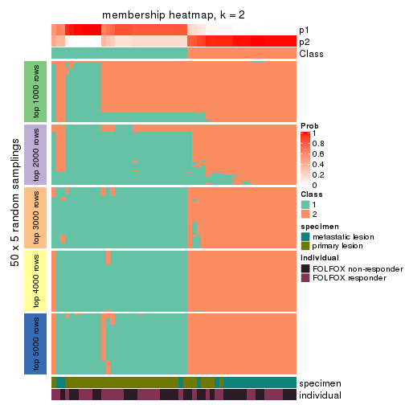
membership_heatmap(res, k = 3)
membership_heatmap(res, k = 4)
membership_heatmap(res, k = 5)
membership_heatmap(res, k = 6)
As soon as we have had the classes for columns, we can look for signatures which are significantly different between classes which can be candidate marks for certain classes. Following are the heatmaps for signatures.
Signature heatmaps where rows are scaled:
get_signatures(res, k = 2)
get_signatures(res, k = 3)
get_signatures(res, k = 4)
get_signatures(res, k = 5)
get_signatures(res, k = 6)
Signature heatmaps where rows are not scaled:
get_signatures(res, k = 2, scale_rows = FALSE)
get_signatures(res, k = 3, scale_rows = FALSE)
get_signatures(res, k = 4, scale_rows = FALSE)
get_signatures(res, k = 5, scale_rows = FALSE)
get_signatures(res, k = 6, scale_rows = FALSE)
Compare the overlap of signatures from different k:
compare_signatures(res)
get_signature() returns a data frame invisibly. TO get the list of signatures, the function
call should be assigned to a variable explicitly. In following code, if plot argument is set
to FALSE, no heatmap is plotted while only the differential analysis is performed.
# code only for demonstration
tb = get_signature(res, k = ..., plot = FALSE)
An example of the output of tb is:
#> which_row fdr mean_1 mean_2 scaled_mean_1 scaled_mean_2 km
#> 1 38 0.042760348 8.373488 9.131774 -0.5533452 0.5164555 1
#> 2 40 0.018707592 7.106213 8.469186 -0.6173731 0.5762149 1
#> 3 55 0.019134737 10.221463 11.207825 -0.6159697 0.5749050 1
#> 4 59 0.006059896 5.921854 7.869574 -0.6899429 0.6439467 1
#> 5 60 0.018055526 8.928898 10.211722 -0.6204761 0.5791110 1
#> 6 98 0.009384629 15.714769 14.887706 0.6635654 -0.6193277 2
...
The columns in tb are:
which_row: row indices corresponding to the input matrix.fdr: FDR for the differential test. mean_x: The mean value in group x.scaled_mean_x: The mean value in group x after rows are scaled.km: Row groups if k-means clustering is applied to rows.UMAP plot which shows how samples are separated.
dimension_reduction(res, k = 2, method = "UMAP")
dimension_reduction(res, k = 3, method = "UMAP")
dimension_reduction(res, k = 4, method = "UMAP")
dimension_reduction(res, k = 5, method = "UMAP")
dimension_reduction(res, k = 6, method = "UMAP")
Following heatmap shows how subgroups are split when increasing k:
collect_classes(res)
Test correlation between subgroups and known annotations. If the known annotation is numeric, one-way ANOVA test is applied, and if the known annotation is discrete, chi-squared contingency table test is applied.
test_to_known_factors(res)
#> n specimen(p) individual(p) k
#> MAD:mclust 53 6.54e-06 0.482 2
#> MAD:mclust 50 2.14e-06 0.807 3
#> MAD:mclust 49 1.85e-05 0.879 4
#> MAD:mclust 40 1.04e-06 0.770 5
#> MAD:mclust 35 5.80e-05 0.752 6
If matrix rows can be associated to genes, consider to use GO_Enrichment(res,
...) to perform function enrichment for the signature genes.
The object with results only for a single top-value method and a single partition method can be extracted as:
res = res_list["MAD", "NMF"]
# you can also extract it by
# res = res_list["MAD:NMF"]
A summary of res and all the functions that can be applied to it:
res
#> A 'ConsensusPartition' object with k = 2, 3, 4, 5, 6.
#> On a matrix with 51941 rows and 54 columns.
#> Top rows (1000, 2000, 3000, 4000, 5000) are extracted by 'MAD' method.
#> Subgroups are detected by 'NMF' method.
#> Performed in total 1250 partitions by row resampling.
#> Best k for subgroups seems to be 2.
#>
#> Following methods can be applied to this 'ConsensusPartition' object:
#> [1] "cola_report" "collect_classes" "collect_plots"
#> [4] "collect_stats" "colnames" "compare_signatures"
#> [7] "consensus_heatmap" "dimension_reduction" "functional_enrichment"
#> [10] "get_anno_col" "get_anno" "get_classes"
#> [13] "get_consensus" "get_matrix" "get_membership"
#> [16] "get_param" "get_signatures" "get_stats"
#> [19] "is_best_k" "is_stable_k" "membership_heatmap"
#> [22] "ncol" "nrow" "plot_ecdf"
#> [25] "rownames" "select_partition_number" "show"
#> [28] "suggest_best_k" "test_to_known_factors"
collect_plots() function collects all the plots made from res for all k (number of partitions)
into one single page to provide an easy and fast comparison between different k.
collect_plots(res)
The plots are:
k and the heatmap of
predicted classes for each k.k.k.k.All the plots in panels can be made by individual functions and they are plotted later in this section.
select_partition_number() produces several plots showing different
statistics for choosing “optimized” k. There are following statistics:
k;k, the area increased is defined as \(A_k - A_{k-1}\).The detailed explanations of these statistics can be found in the cola vignette.
Generally speaking, lower PAC score, higher mean silhouette score or higher
concordance corresponds to better partition. Rand index and Jaccard index
measure how similar the current partition is compared to partition with k-1.
If they are too similar, we won't accept k is better than k-1.
select_partition_number(res)
The numeric values for all these statistics can be obtained by get_stats().
get_stats(res)
#> k 1-PAC mean_silhouette concordance area_increased Rand Jaccard
#> 2 2 0.627 0.838 0.931 0.5066 0.493 0.493
#> 3 3 0.616 0.729 0.860 0.3045 0.746 0.528
#> 4 4 0.522 0.517 0.739 0.1206 0.843 0.580
#> 5 5 0.525 0.355 0.650 0.0710 0.828 0.462
#> 6 6 0.611 0.459 0.686 0.0534 0.853 0.421
suggest_best_k() suggests the best \(k\) based on these statistics. The rules are as follows:
NA.suggest_best_k(res)
#> [1] 2
Following shows the table of the partitions (You need to click the show/hide
code output link to see it). The membership matrix (columns with name p*)
is inferred by
clue::cl_consensus()
function with the SE method. Basically the value in the membership matrix
represents the probability to belong to a certain group. The finall class
label for an item is determined with the group with highest probability it
belongs to.
In get_classes() function, the entropy is calculated from the membership
matrix and the silhouette score is calculated from the consensus matrix.
cbind(get_classes(res, k = 2), get_membership(res, k = 2))
#> class entropy silhouette p1 p2
#> GSM710828 2 0.0000 0.918 0.000 1.000
#> GSM710829 2 0.0000 0.918 0.000 1.000
#> GSM710839 2 0.0000 0.918 0.000 1.000
#> GSM710841 2 0.0000 0.918 0.000 1.000
#> GSM710843 2 0.0000 0.918 0.000 1.000
#> GSM710845 2 0.0000 0.918 0.000 1.000
#> GSM710846 2 0.0000 0.918 0.000 1.000
#> GSM710849 2 0.4431 0.849 0.092 0.908
#> GSM710853 2 0.0000 0.918 0.000 1.000
#> GSM710855 1 0.9661 0.385 0.608 0.392
#> GSM710858 2 0.0000 0.918 0.000 1.000
#> GSM710860 2 0.0000 0.918 0.000 1.000
#> GSM710801 2 0.0000 0.918 0.000 1.000
#> GSM710813 2 0.0000 0.918 0.000 1.000
#> GSM710814 2 0.0000 0.918 0.000 1.000
#> GSM710815 2 0.0000 0.918 0.000 1.000
#> GSM710816 2 0.0000 0.918 0.000 1.000
#> GSM710817 2 0.7745 0.711 0.228 0.772
#> GSM710818 2 0.9460 0.376 0.364 0.636
#> GSM710819 1 0.7219 0.744 0.800 0.200
#> GSM710820 2 0.0000 0.918 0.000 1.000
#> GSM710830 1 0.0000 0.919 1.000 0.000
#> GSM710831 2 0.6343 0.768 0.160 0.840
#> GSM710832 1 0.0000 0.919 1.000 0.000
#> GSM710833 1 0.7602 0.719 0.780 0.220
#> GSM710834 2 0.7219 0.738 0.200 0.800
#> GSM710835 1 0.2948 0.884 0.948 0.052
#> GSM710836 1 0.0376 0.917 0.996 0.004
#> GSM710837 1 0.0000 0.919 1.000 0.000
#> GSM710862 1 0.6148 0.797 0.848 0.152
#> GSM710863 1 0.0000 0.919 1.000 0.000
#> GSM710865 1 0.0000 0.919 1.000 0.000
#> GSM710867 1 0.0000 0.919 1.000 0.000
#> GSM710869 1 0.0376 0.917 0.996 0.004
#> GSM710871 1 0.0000 0.919 1.000 0.000
#> GSM710873 1 0.0000 0.919 1.000 0.000
#> GSM710802 1 0.0000 0.919 1.000 0.000
#> GSM710803 1 0.0000 0.919 1.000 0.000
#> GSM710804 2 0.8608 0.627 0.284 0.716
#> GSM710805 2 0.0000 0.918 0.000 1.000
#> GSM710806 1 0.7674 0.677 0.776 0.224
#> GSM710807 1 0.0000 0.919 1.000 0.000
#> GSM710808 1 0.4690 0.840 0.900 0.100
#> GSM710809 1 0.0672 0.915 0.992 0.008
#> GSM710810 1 0.0938 0.912 0.988 0.012
#> GSM710811 1 0.0000 0.919 1.000 0.000
#> GSM710812 1 0.0000 0.919 1.000 0.000
#> GSM710821 1 0.9795 0.222 0.584 0.416
#> GSM710822 1 0.0000 0.919 1.000 0.000
#> GSM710823 1 0.7219 0.744 0.800 0.200
#> GSM710824 2 0.0000 0.918 0.000 1.000
#> GSM710825 2 0.9833 0.301 0.424 0.576
#> GSM710826 1 0.0000 0.919 1.000 0.000
#> GSM710827 1 0.0000 0.919 1.000 0.000
cbind(get_classes(res, k = 3), get_membership(res, k = 3))
#> class entropy silhouette p1 p2 p3
#> GSM710828 2 0.1781 0.860 0.020 0.960 0.020
#> GSM710829 3 0.6215 0.153 0.000 0.428 0.572
#> GSM710839 2 0.1289 0.879 0.000 0.968 0.032
#> GSM710841 2 0.1711 0.879 0.008 0.960 0.032
#> GSM710843 2 0.0592 0.879 0.000 0.988 0.012
#> GSM710845 2 0.3141 0.833 0.068 0.912 0.020
#> GSM710846 2 0.1411 0.878 0.000 0.964 0.036
#> GSM710849 2 0.7085 0.421 0.032 0.612 0.356
#> GSM710853 2 0.2625 0.852 0.000 0.916 0.084
#> GSM710855 3 0.2448 0.724 0.000 0.076 0.924
#> GSM710858 3 0.5529 0.458 0.000 0.296 0.704
#> GSM710860 2 0.0747 0.880 0.000 0.984 0.016
#> GSM710801 2 0.1753 0.874 0.000 0.952 0.048
#> GSM710813 2 0.5098 0.665 0.000 0.752 0.248
#> GSM710814 2 0.0237 0.877 0.000 0.996 0.004
#> GSM710815 2 0.1289 0.879 0.000 0.968 0.032
#> GSM710816 2 0.1031 0.880 0.000 0.976 0.024
#> GSM710817 3 0.1315 0.742 0.020 0.008 0.972
#> GSM710818 2 0.6600 0.281 0.384 0.604 0.012
#> GSM710819 3 0.2448 0.724 0.000 0.076 0.924
#> GSM710820 2 0.2448 0.858 0.000 0.924 0.076
#> GSM710830 1 0.1964 0.876 0.944 0.000 0.056
#> GSM710831 3 0.2301 0.730 0.004 0.060 0.936
#> GSM710832 1 0.1860 0.877 0.948 0.000 0.052
#> GSM710833 3 0.2448 0.724 0.000 0.076 0.924
#> GSM710834 2 0.5406 0.701 0.200 0.780 0.020
#> GSM710835 3 0.1964 0.739 0.056 0.000 0.944
#> GSM710836 3 0.6305 0.188 0.484 0.000 0.516
#> GSM710837 1 0.2711 0.856 0.912 0.000 0.088
#> GSM710862 1 0.4209 0.783 0.860 0.120 0.020
#> GSM710863 1 0.0000 0.875 1.000 0.000 0.000
#> GSM710865 1 0.1781 0.861 0.960 0.020 0.020
#> GSM710867 1 0.2066 0.874 0.940 0.000 0.060
#> GSM710869 1 0.5016 0.610 0.760 0.000 0.240
#> GSM710871 1 0.1860 0.877 0.948 0.000 0.052
#> GSM710873 3 0.5760 0.481 0.328 0.000 0.672
#> GSM710802 1 0.1774 0.861 0.960 0.024 0.016
#> GSM710803 1 0.1643 0.879 0.956 0.000 0.044
#> GSM710804 3 0.3851 0.699 0.136 0.004 0.860
#> GSM710805 2 0.2846 0.840 0.056 0.924 0.020
#> GSM710806 1 0.6586 0.638 0.728 0.216 0.056
#> GSM710807 3 0.6286 0.154 0.464 0.000 0.536
#> GSM710808 1 0.0747 0.879 0.984 0.000 0.016
#> GSM710809 3 0.1964 0.738 0.056 0.000 0.944
#> GSM710810 1 0.2527 0.847 0.936 0.044 0.020
#> GSM710811 1 0.1643 0.879 0.956 0.000 0.044
#> GSM710812 1 0.1031 0.879 0.976 0.000 0.024
#> GSM710821 1 0.2651 0.841 0.928 0.060 0.012
#> GSM710822 1 0.4654 0.715 0.792 0.000 0.208
#> GSM710823 3 0.8050 0.249 0.436 0.064 0.500
#> GSM710824 2 0.3456 0.834 0.060 0.904 0.036
#> GSM710825 1 0.6994 0.172 0.556 0.424 0.020
#> GSM710826 1 0.1860 0.877 0.948 0.000 0.052
#> GSM710827 1 0.1170 0.868 0.976 0.008 0.016
cbind(get_classes(res, k = 4), get_membership(res, k = 4))
#> class entropy silhouette p1 p2 p3 p4
#> GSM710828 4 0.1576 0.81702 0.048 0.000 0.004 0.948
#> GSM710829 4 0.6731 0.52731 0.000 0.236 0.156 0.608
#> GSM710839 4 0.0336 0.83068 0.000 0.008 0.000 0.992
#> GSM710841 4 0.3400 0.77682 0.000 0.180 0.000 0.820
#> GSM710843 4 0.0592 0.82839 0.016 0.000 0.000 0.984
#> GSM710845 4 0.4134 0.62730 0.260 0.000 0.000 0.740
#> GSM710846 4 0.1411 0.82936 0.000 0.020 0.020 0.960
#> GSM710849 4 0.5855 0.54629 0.000 0.356 0.044 0.600
#> GSM710853 4 0.3176 0.80146 0.000 0.036 0.084 0.880
#> GSM710855 3 0.4297 0.56752 0.000 0.096 0.820 0.084
#> GSM710858 3 0.7761 -0.04220 0.000 0.236 0.388 0.376
#> GSM710860 4 0.0657 0.83095 0.004 0.012 0.000 0.984
#> GSM710801 4 0.2593 0.80999 0.000 0.104 0.004 0.892
#> GSM710813 4 0.4417 0.75779 0.000 0.160 0.044 0.796
#> GSM710814 4 0.0469 0.82841 0.012 0.000 0.000 0.988
#> GSM710815 4 0.0707 0.83034 0.000 0.020 0.000 0.980
#> GSM710816 4 0.0921 0.82435 0.028 0.000 0.000 0.972
#> GSM710817 3 0.6079 0.31070 0.000 0.464 0.492 0.044
#> GSM710818 1 0.7658 -0.07133 0.416 0.000 0.372 0.212
#> GSM710819 3 0.1042 0.61925 0.020 0.008 0.972 0.000
#> GSM710820 4 0.3271 0.79584 0.000 0.132 0.012 0.856
#> GSM710830 2 0.4500 0.55723 0.316 0.684 0.000 0.000
#> GSM710831 3 0.5746 0.45140 0.000 0.348 0.612 0.040
#> GSM710832 1 0.3444 0.49076 0.816 0.184 0.000 0.000
#> GSM710833 3 0.0707 0.61955 0.020 0.000 0.980 0.000
#> GSM710834 4 0.4610 0.65182 0.236 0.020 0.000 0.744
#> GSM710835 2 0.3933 0.20623 0.004 0.796 0.196 0.004
#> GSM710836 3 0.4155 0.53127 0.240 0.004 0.756 0.000
#> GSM710837 1 0.7317 0.00176 0.528 0.268 0.204 0.000
#> GSM710862 1 0.4586 0.53717 0.796 0.000 0.136 0.068
#> GSM710863 1 0.1798 0.61292 0.944 0.016 0.040 0.000
#> GSM710865 1 0.2466 0.60176 0.900 0.004 0.096 0.000
#> GSM710867 2 0.4761 0.50594 0.372 0.628 0.000 0.000
#> GSM710869 3 0.4843 0.30131 0.396 0.000 0.604 0.000
#> GSM710871 1 0.3764 0.45243 0.784 0.216 0.000 0.000
#> GSM710873 3 0.3088 0.60777 0.128 0.008 0.864 0.000
#> GSM710802 1 0.3601 0.58961 0.864 0.012 0.100 0.024
#> GSM710803 1 0.4500 0.26893 0.684 0.316 0.000 0.000
#> GSM710804 2 0.2840 0.37179 0.000 0.900 0.056 0.044
#> GSM710805 4 0.5897 0.71376 0.176 0.112 0.004 0.708
#> GSM710806 2 0.3725 0.57691 0.180 0.812 0.000 0.008
#> GSM710807 3 0.6189 0.40175 0.268 0.092 0.640 0.000
#> GSM710808 2 0.5402 0.33384 0.472 0.516 0.000 0.012
#> GSM710809 3 0.4746 0.50980 0.008 0.304 0.688 0.000
#> GSM710810 1 0.1824 0.60077 0.936 0.004 0.000 0.060
#> GSM710811 1 0.4967 -0.19557 0.548 0.452 0.000 0.000
#> GSM710812 1 0.1820 0.60265 0.944 0.036 0.020 0.000
#> GSM710821 1 0.5440 0.37765 0.736 0.160 0.000 0.104
#> GSM710822 3 0.5512 0.08850 0.492 0.016 0.492 0.000
#> GSM710823 3 0.4220 0.51543 0.248 0.004 0.748 0.000
#> GSM710824 4 0.6536 0.35627 0.324 0.000 0.096 0.580
#> GSM710825 1 0.5119 0.08440 0.556 0.004 0.000 0.440
#> GSM710826 2 0.4961 0.35126 0.448 0.552 0.000 0.000
#> GSM710827 1 0.1576 0.59956 0.948 0.048 0.004 0.000
cbind(get_classes(res, k = 5), get_membership(res, k = 5))
#> class entropy silhouette p1 p2 p3 p4 p5
#> GSM710828 4 0.378 0.48813 0.012 0.000 0.000 0.752 0.236
#> GSM710829 4 0.519 0.51759 0.000 0.168 0.128 0.700 0.004
#> GSM710839 4 0.252 0.63085 0.004 0.012 0.000 0.888 0.096
#> GSM710841 4 0.592 0.41679 0.000 0.316 0.000 0.556 0.128
#> GSM710843 5 0.466 -0.10556 0.000 0.012 0.000 0.492 0.496
#> GSM710845 5 0.505 0.00844 0.008 0.020 0.000 0.432 0.540
#> GSM710846 4 0.165 0.65095 0.000 0.004 0.032 0.944 0.020
#> GSM710849 4 0.483 0.43456 0.000 0.368 0.012 0.608 0.012
#> GSM710853 4 0.239 0.63619 0.000 0.008 0.060 0.908 0.024
#> GSM710855 3 0.458 0.34509 0.000 0.012 0.684 0.288 0.016
#> GSM710858 4 0.598 0.36983 0.036 0.012 0.284 0.624 0.044
#> GSM710860 4 0.288 0.62103 0.004 0.012 0.000 0.860 0.124
#> GSM710801 4 0.165 0.65049 0.000 0.024 0.028 0.944 0.004
#> GSM710813 4 0.675 0.41320 0.000 0.080 0.116 0.596 0.208
#> GSM710814 4 0.353 0.54792 0.000 0.012 0.000 0.784 0.204
#> GSM710815 4 0.377 0.47956 0.000 0.004 0.000 0.728 0.268
#> GSM710816 4 0.488 0.05868 0.004 0.016 0.000 0.516 0.464
#> GSM710817 3 0.595 0.26122 0.000 0.420 0.484 0.092 0.004
#> GSM710818 5 0.675 0.18431 0.076 0.000 0.148 0.172 0.604
#> GSM710819 3 0.236 0.60250 0.000 0.008 0.888 0.000 0.104
#> GSM710820 4 0.281 0.64413 0.000 0.084 0.000 0.876 0.040
#> GSM710830 1 0.431 -0.17713 0.500 0.500 0.000 0.000 0.000
#> GSM710831 3 0.598 0.41540 0.000 0.280 0.596 0.112 0.012
#> GSM710832 1 0.173 0.57613 0.940 0.036 0.004 0.000 0.020
#> GSM710833 3 0.183 0.59974 0.000 0.004 0.920 0.000 0.076
#> GSM710834 5 0.546 -0.07596 0.012 0.036 0.000 0.452 0.500
#> GSM710835 2 0.536 0.14885 0.028 0.684 0.244 0.036 0.008
#> GSM710836 3 0.465 0.51722 0.008 0.012 0.632 0.000 0.348
#> GSM710837 1 0.508 0.43593 0.720 0.132 0.140 0.000 0.008
#> GSM710862 5 0.492 0.15030 0.308 0.000 0.048 0.000 0.644
#> GSM710863 1 0.236 0.57609 0.892 0.000 0.012 0.000 0.096
#> GSM710865 1 0.499 0.37516 0.584 0.004 0.028 0.000 0.384
#> GSM710867 2 0.428 0.07315 0.456 0.544 0.000 0.000 0.000
#> GSM710869 3 0.568 0.45509 0.096 0.000 0.564 0.000 0.340
#> GSM710871 1 0.543 0.47679 0.656 0.136 0.000 0.000 0.208
#> GSM710873 3 0.406 0.56763 0.000 0.012 0.708 0.000 0.280
#> GSM710802 5 0.408 0.30693 0.180 0.004 0.040 0.000 0.776
#> GSM710803 1 0.442 0.29031 0.652 0.332 0.000 0.000 0.016
#> GSM710804 2 0.216 0.41870 0.004 0.920 0.040 0.036 0.000
#> GSM710805 5 0.762 0.04948 0.040 0.192 0.012 0.324 0.432
#> GSM710806 2 0.355 0.44046 0.220 0.772 0.000 0.000 0.008
#> GSM710807 3 0.537 0.03173 0.468 0.036 0.488 0.000 0.008
#> GSM710808 1 0.509 -0.03228 0.524 0.440 0.000 0.000 0.036
#> GSM710809 3 0.442 0.50201 0.000 0.280 0.692 0.000 0.028
#> GSM710810 5 0.463 0.27038 0.272 0.008 0.004 0.020 0.696
#> GSM710811 2 0.521 0.00597 0.432 0.524 0.000 0.000 0.044
#> GSM710812 1 0.574 0.39254 0.556 0.032 0.036 0.000 0.376
#> GSM710821 1 0.374 0.54851 0.836 0.092 0.000 0.020 0.052
#> GSM710822 1 0.519 0.20825 0.620 0.004 0.332 0.004 0.040
#> GSM710823 3 0.681 0.33930 0.308 0.004 0.540 0.096 0.052
#> GSM710824 5 0.773 0.09423 0.148 0.012 0.068 0.328 0.444
#> GSM710825 5 0.686 0.27395 0.372 0.012 0.000 0.196 0.420
#> GSM710826 1 0.297 0.50594 0.836 0.156 0.000 0.000 0.008
#> GSM710827 1 0.130 0.57413 0.960 0.008 0.012 0.000 0.020
cbind(get_classes(res, k = 6), get_membership(res, k = 6))
#> class entropy silhouette p1 p2 p3 p4 p5 p6
#> GSM710828 2 0.412 0.6270 0.000 0.740 0.000 0.064 0.192 0.004
#> GSM710829 2 0.367 0.6680 0.000 0.808 0.048 0.008 0.008 0.128
#> GSM710839 2 0.394 0.2740 0.004 0.572 0.000 0.424 0.000 0.000
#> GSM710841 6 0.672 -0.2109 0.000 0.304 0.000 0.208 0.052 0.436
#> GSM710843 2 0.617 0.3748 0.000 0.484 0.004 0.232 0.272 0.008
#> GSM710845 4 0.222 0.7057 0.000 0.072 0.000 0.896 0.032 0.000
#> GSM710846 2 0.202 0.6878 0.000 0.896 0.008 0.096 0.000 0.000
#> GSM710849 2 0.543 0.5601 0.000 0.636 0.012 0.084 0.020 0.248
#> GSM710853 2 0.272 0.6997 0.000 0.880 0.048 0.060 0.008 0.004
#> GSM710855 3 0.501 -0.0509 0.028 0.468 0.484 0.008 0.012 0.000
#> GSM710858 2 0.381 0.6304 0.040 0.828 0.060 0.060 0.004 0.008
#> GSM710860 4 0.414 0.3325 0.004 0.408 0.000 0.580 0.008 0.000
#> GSM710801 2 0.199 0.6874 0.000 0.912 0.004 0.072 0.004 0.008
#> GSM710813 4 0.496 0.6558 0.004 0.132 0.092 0.724 0.000 0.048
#> GSM710814 2 0.407 0.3508 0.000 0.596 0.000 0.392 0.012 0.000
#> GSM710815 4 0.410 0.4878 0.000 0.372 0.000 0.612 0.016 0.000
#> GSM710816 4 0.236 0.7037 0.000 0.108 0.000 0.876 0.016 0.000
#> GSM710817 3 0.589 0.2215 0.024 0.068 0.488 0.016 0.000 0.404
#> GSM710818 5 0.366 0.5681 0.016 0.084 0.052 0.012 0.832 0.004
#> GSM710819 3 0.201 0.6203 0.008 0.008 0.908 0.000 0.076 0.000
#> GSM710820 2 0.329 0.7007 0.000 0.844 0.000 0.084 0.032 0.040
#> GSM710830 1 0.397 0.1650 0.604 0.000 0.000 0.008 0.000 0.388
#> GSM710831 3 0.560 0.4068 0.024 0.064 0.620 0.024 0.000 0.268
#> GSM710832 1 0.245 0.6152 0.888 0.000 0.000 0.004 0.068 0.040
#> GSM710833 3 0.143 0.6179 0.000 0.004 0.940 0.000 0.052 0.004
#> GSM710834 4 0.448 0.6867 0.000 0.132 0.000 0.752 0.080 0.036
#> GSM710835 6 0.588 0.1572 0.132 0.012 0.244 0.020 0.000 0.592
#> GSM710836 3 0.409 0.2649 0.000 0.000 0.520 0.000 0.472 0.008
#> GSM710837 1 0.304 0.6084 0.860 0.000 0.064 0.000 0.020 0.056
#> GSM710862 5 0.175 0.6437 0.044 0.004 0.004 0.016 0.932 0.000
#> GSM710863 1 0.349 0.5702 0.764 0.000 0.016 0.004 0.216 0.000
#> GSM710865 5 0.320 0.5942 0.196 0.000 0.016 0.000 0.788 0.000
#> GSM710867 6 0.405 0.2164 0.384 0.000 0.000 0.000 0.012 0.604
#> GSM710869 3 0.461 0.3126 0.032 0.000 0.548 0.000 0.416 0.004
#> GSM710871 5 0.582 0.0856 0.340 0.000 0.000 0.000 0.464 0.196
#> GSM710873 3 0.363 0.5569 0.000 0.004 0.740 0.004 0.244 0.008
#> GSM710802 4 0.581 0.3484 0.088 0.008 0.024 0.580 0.296 0.004
#> GSM710803 1 0.525 0.3359 0.620 0.000 0.000 0.032 0.064 0.284
#> GSM710804 6 0.326 0.3974 0.008 0.028 0.076 0.016 0.012 0.860
#> GSM710805 5 0.747 0.2410 0.000 0.128 0.024 0.192 0.468 0.188
#> GSM710806 6 0.446 0.4481 0.192 0.012 0.000 0.044 0.016 0.736
#> GSM710807 1 0.533 0.3252 0.548 0.004 0.384 0.036 0.008 0.020
#> GSM710808 6 0.670 0.2932 0.264 0.008 0.000 0.052 0.180 0.496
#> GSM710809 3 0.346 0.5739 0.000 0.000 0.800 0.008 0.032 0.160
#> GSM710810 5 0.338 0.6444 0.032 0.028 0.000 0.056 0.856 0.028
#> GSM710811 6 0.496 0.2457 0.348 0.000 0.000 0.004 0.068 0.580
#> GSM710812 5 0.402 0.5911 0.188 0.000 0.040 0.000 0.756 0.016
#> GSM710821 1 0.612 0.3844 0.600 0.016 0.000 0.064 0.236 0.084
#> GSM710822 1 0.479 0.5148 0.732 0.016 0.176 0.052 0.016 0.008
#> GSM710823 1 0.658 0.3180 0.540 0.088 0.284 0.068 0.012 0.008
#> GSM710824 4 0.381 0.6389 0.064 0.024 0.068 0.828 0.008 0.008
#> GSM710825 5 0.604 0.4597 0.064 0.060 0.000 0.220 0.624 0.032
#> GSM710826 1 0.224 0.6031 0.896 0.000 0.000 0.004 0.020 0.080
#> GSM710827 1 0.229 0.6239 0.892 0.000 0.004 0.020 0.084 0.000
Heatmaps for the consensus matrix. It visualizes the probability of two samples to be in a same group.
consensus_heatmap(res, k = 2)
consensus_heatmap(res, k = 3)
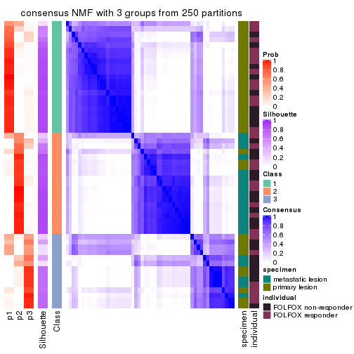
consensus_heatmap(res, k = 4)
consensus_heatmap(res, k = 5)
consensus_heatmap(res, k = 6)
Heatmaps for the membership of samples in all partitions to see how consistent they are:
membership_heatmap(res, k = 2)
membership_heatmap(res, k = 3)
membership_heatmap(res, k = 4)
membership_heatmap(res, k = 5)
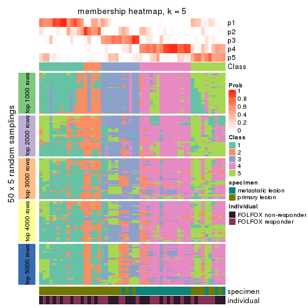
membership_heatmap(res, k = 6)
As soon as we have had the classes for columns, we can look for signatures which are significantly different between classes which can be candidate marks for certain classes. Following are the heatmaps for signatures.
Signature heatmaps where rows are scaled:
get_signatures(res, k = 2)
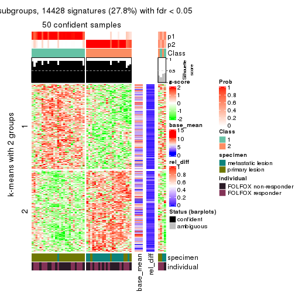
get_signatures(res, k = 3)
get_signatures(res, k = 4)
get_signatures(res, k = 5)

get_signatures(res, k = 6)
Signature heatmaps where rows are not scaled:
get_signatures(res, k = 2, scale_rows = FALSE)
get_signatures(res, k = 3, scale_rows = FALSE)
get_signatures(res, k = 4, scale_rows = FALSE)
get_signatures(res, k = 5, scale_rows = FALSE)
get_signatures(res, k = 6, scale_rows = FALSE)
Compare the overlap of signatures from different k:
compare_signatures(res)
get_signature() returns a data frame invisibly. TO get the list of signatures, the function
call should be assigned to a variable explicitly. In following code, if plot argument is set
to FALSE, no heatmap is plotted while only the differential analysis is performed.
# code only for demonstration
tb = get_signature(res, k = ..., plot = FALSE)
An example of the output of tb is:
#> which_row fdr mean_1 mean_2 scaled_mean_1 scaled_mean_2 km
#> 1 38 0.042760348 8.373488 9.131774 -0.5533452 0.5164555 1
#> 2 40 0.018707592 7.106213 8.469186 -0.6173731 0.5762149 1
#> 3 55 0.019134737 10.221463 11.207825 -0.6159697 0.5749050 1
#> 4 59 0.006059896 5.921854 7.869574 -0.6899429 0.6439467 1
#> 5 60 0.018055526 8.928898 10.211722 -0.6204761 0.5791110 1
#> 6 98 0.009384629 15.714769 14.887706 0.6635654 -0.6193277 2
...
The columns in tb are:
which_row: row indices corresponding to the input matrix.fdr: FDR for the differential test. mean_x: The mean value in group x.scaled_mean_x: The mean value in group x after rows are scaled.km: Row groups if k-means clustering is applied to rows.UMAP plot which shows how samples are separated.
dimension_reduction(res, k = 2, method = "UMAP")
dimension_reduction(res, k = 3, method = "UMAP")
dimension_reduction(res, k = 4, method = "UMAP")
dimension_reduction(res, k = 5, method = "UMAP")
dimension_reduction(res, k = 6, method = "UMAP")
Following heatmap shows how subgroups are split when increasing k:
collect_classes(res)
Test correlation between subgroups and known annotations. If the known annotation is numeric, one-way ANOVA test is applied, and if the known annotation is discrete, chi-squared contingency table test is applied.
test_to_known_factors(res)
#> n specimen(p) individual(p) k
#> MAD:NMF 50 3.04e-07 0.759 2
#> MAD:NMF 45 1.75e-06 0.888 3
#> MAD:NMF 35 6.03e-05 0.847 4
#> MAD:NMF 18 6.11e-04 0.710 5
#> MAD:NMF 28 1.98e-03 0.686 6
If matrix rows can be associated to genes, consider to use GO_Enrichment(res,
...) to perform function enrichment for the signature genes.
The object with results only for a single top-value method and a single partition method can be extracted as:
res = res_list["ATC", "hclust"]
# you can also extract it by
# res = res_list["ATC:hclust"]
A summary of res and all the functions that can be applied to it:
res
#> A 'ConsensusPartition' object with k = 2, 3, 4, 5, 6.
#> On a matrix with 51941 rows and 54 columns.
#> Top rows (1000, 2000, 3000, 4000, 5000) are extracted by 'ATC' method.
#> Subgroups are detected by 'hclust' method.
#> Performed in total 1250 partitions by row resampling.
#> Best k for subgroups seems to be 2.
#>
#> Following methods can be applied to this 'ConsensusPartition' object:
#> [1] "cola_report" "collect_classes" "collect_plots"
#> [4] "collect_stats" "colnames" "compare_signatures"
#> [7] "consensus_heatmap" "dimension_reduction" "functional_enrichment"
#> [10] "get_anno_col" "get_anno" "get_classes"
#> [13] "get_consensus" "get_matrix" "get_membership"
#> [16] "get_param" "get_signatures" "get_stats"
#> [19] "is_best_k" "is_stable_k" "membership_heatmap"
#> [22] "ncol" "nrow" "plot_ecdf"
#> [25] "rownames" "select_partition_number" "show"
#> [28] "suggest_best_k" "test_to_known_factors"
collect_plots() function collects all the plots made from res for all k (number of partitions)
into one single page to provide an easy and fast comparison between different k.
collect_plots(res)
The plots are:
k and the heatmap of
predicted classes for each k.k.k.k.All the plots in panels can be made by individual functions and they are plotted later in this section.
select_partition_number() produces several plots showing different
statistics for choosing “optimized” k. There are following statistics:
k;k, the area increased is defined as \(A_k - A_{k-1}\).The detailed explanations of these statistics can be found in the cola vignette.
Generally speaking, lower PAC score, higher mean silhouette score or higher
concordance corresponds to better partition. Rand index and Jaccard index
measure how similar the current partition is compared to partition with k-1.
If they are too similar, we won't accept k is better than k-1.
select_partition_number(res)
The numeric values for all these statistics can be obtained by get_stats().
get_stats(res)
#> k 1-PAC mean_silhouette concordance area_increased Rand Jaccard
#> 2 2 0.987 0.942 0.973 0.4933 0.508 0.508
#> 3 3 0.628 0.629 0.682 0.2875 0.858 0.729
#> 4 4 0.683 0.837 0.830 0.1516 0.681 0.353
#> 5 5 0.741 0.728 0.834 0.0870 0.916 0.689
#> 6 6 0.742 0.719 0.818 0.0275 0.918 0.632
suggest_best_k() suggests the best \(k\) based on these statistics. The rules are as follows:
NA.suggest_best_k(res)
#> [1] 2
Following shows the table of the partitions (You need to click the show/hide
code output link to see it). The membership matrix (columns with name p*)
is inferred by
clue::cl_consensus()
function with the SE method. Basically the value in the membership matrix
represents the probability to belong to a certain group. The finall class
label for an item is determined with the group with highest probability it
belongs to.
In get_classes() function, the entropy is calculated from the membership
matrix and the silhouette score is calculated from the consensus matrix.
cbind(get_classes(res, k = 2), get_membership(res, k = 2))
#> class entropy silhouette p1 p2
#> GSM710828 2 0.000 0.964 0.000 1.000
#> GSM710829 2 0.000 0.964 0.000 1.000
#> GSM710839 2 0.000 0.964 0.000 1.000
#> GSM710841 2 0.000 0.964 0.000 1.000
#> GSM710843 2 0.000 0.964 0.000 1.000
#> GSM710845 2 0.000 0.964 0.000 1.000
#> GSM710846 2 0.000 0.964 0.000 1.000
#> GSM710849 2 0.000 0.964 0.000 1.000
#> GSM710853 2 0.000 0.964 0.000 1.000
#> GSM710855 1 0.000 0.983 1.000 0.000
#> GSM710858 2 0.000 0.964 0.000 1.000
#> GSM710860 2 0.000 0.964 0.000 1.000
#> GSM710801 2 0.000 0.964 0.000 1.000
#> GSM710813 2 0.000 0.964 0.000 1.000
#> GSM710814 2 0.000 0.964 0.000 1.000
#> GSM710815 2 0.000 0.964 0.000 1.000
#> GSM710816 2 0.000 0.964 0.000 1.000
#> GSM710817 2 0.000 0.964 0.000 1.000
#> GSM710818 1 0.204 0.969 0.968 0.032
#> GSM710819 1 0.000 0.983 1.000 0.000
#> GSM710820 2 0.000 0.964 0.000 1.000
#> GSM710830 2 0.358 0.918 0.068 0.932
#> GSM710831 2 0.000 0.964 0.000 1.000
#> GSM710832 1 0.000 0.983 1.000 0.000
#> GSM710833 1 0.118 0.977 0.984 0.016
#> GSM710834 2 0.000 0.964 0.000 1.000
#> GSM710835 2 0.000 0.964 0.000 1.000
#> GSM710836 1 0.000 0.983 1.000 0.000
#> GSM710837 1 0.000 0.983 1.000 0.000
#> GSM710862 1 0.343 0.943 0.936 0.064
#> GSM710863 1 0.000 0.983 1.000 0.000
#> GSM710865 1 0.000 0.983 1.000 0.000
#> GSM710867 1 0.000 0.983 1.000 0.000
#> GSM710869 1 0.000 0.983 1.000 0.000
#> GSM710871 1 0.000 0.983 1.000 0.000
#> GSM710873 1 0.000 0.983 1.000 0.000
#> GSM710802 1 0.358 0.940 0.932 0.068
#> GSM710803 1 0.000 0.983 1.000 0.000
#> GSM710804 2 0.000 0.964 0.000 1.000
#> GSM710805 2 0.000 0.964 0.000 1.000
#> GSM710806 2 0.000 0.964 0.000 1.000
#> GSM710807 1 0.000 0.983 1.000 0.000
#> GSM710808 2 0.260 0.937 0.044 0.956
#> GSM710809 2 0.876 0.596 0.296 0.704
#> GSM710810 2 0.996 0.156 0.464 0.536
#> GSM710811 1 0.118 0.977 0.984 0.016
#> GSM710812 1 0.204 0.969 0.968 0.032
#> GSM710821 2 0.260 0.937 0.044 0.956
#> GSM710822 1 0.278 0.957 0.952 0.048
#> GSM710823 1 0.358 0.940 0.932 0.068
#> GSM710824 2 0.343 0.921 0.064 0.936
#> GSM710825 2 0.260 0.937 0.044 0.956
#> GSM710826 2 0.343 0.921 0.064 0.936
#> GSM710827 1 0.000 0.983 1.000 0.000
cbind(get_classes(res, k = 3), get_membership(res, k = 3))
#> class entropy silhouette p1 p2 p3
#> GSM710828 2 0.588 0.719 0.000 0.652 0.348
#> GSM710829 2 0.588 0.719 0.000 0.652 0.348
#> GSM710839 2 0.588 0.719 0.000 0.652 0.348
#> GSM710841 2 0.000 0.774 0.000 1.000 0.000
#> GSM710843 2 0.588 0.719 0.000 0.652 0.348
#> GSM710845 2 0.588 0.719 0.000 0.652 0.348
#> GSM710846 2 0.000 0.774 0.000 1.000 0.000
#> GSM710849 2 0.000 0.774 0.000 1.000 0.000
#> GSM710853 2 0.599 0.562 0.368 0.632 0.000
#> GSM710855 3 0.588 0.972 0.348 0.000 0.652
#> GSM710858 2 0.000 0.774 0.000 1.000 0.000
#> GSM710860 2 0.000 0.774 0.000 1.000 0.000
#> GSM710801 2 0.588 0.719 0.000 0.652 0.348
#> GSM710813 2 0.588 0.719 0.000 0.652 0.348
#> GSM710814 2 0.588 0.719 0.000 0.652 0.348
#> GSM710815 2 0.588 0.719 0.000 0.652 0.348
#> GSM710816 2 0.588 0.719 0.000 0.652 0.348
#> GSM710817 2 0.000 0.774 0.000 1.000 0.000
#> GSM710818 1 0.593 0.379 0.644 0.000 0.356
#> GSM710819 3 0.588 0.972 0.348 0.000 0.652
#> GSM710820 2 0.000 0.774 0.000 1.000 0.000
#> GSM710830 2 0.727 0.478 0.448 0.524 0.028
#> GSM710831 2 0.000 0.774 0.000 1.000 0.000
#> GSM710832 3 0.588 0.972 0.348 0.000 0.652
#> GSM710833 1 0.615 0.251 0.592 0.000 0.408
#> GSM710834 2 0.588 0.719 0.000 0.652 0.348
#> GSM710835 2 0.599 0.562 0.368 0.632 0.000
#> GSM710836 1 0.620 0.189 0.576 0.000 0.424
#> GSM710837 1 0.620 0.189 0.576 0.000 0.424
#> GSM710862 1 0.573 0.403 0.676 0.000 0.324
#> GSM710863 1 0.630 -0.190 0.520 0.000 0.480
#> GSM710865 3 0.588 0.972 0.348 0.000 0.652
#> GSM710867 3 0.590 0.962 0.352 0.000 0.648
#> GSM710869 3 0.588 0.972 0.348 0.000 0.652
#> GSM710871 3 0.588 0.972 0.348 0.000 0.652
#> GSM710873 3 0.588 0.972 0.348 0.000 0.652
#> GSM710802 1 0.568 0.403 0.684 0.000 0.316
#> GSM710803 3 0.588 0.972 0.348 0.000 0.652
#> GSM710804 2 0.000 0.774 0.000 1.000 0.000
#> GSM710805 2 0.000 0.774 0.000 1.000 0.000
#> GSM710806 2 0.000 0.774 0.000 1.000 0.000
#> GSM710807 1 0.630 -0.190 0.520 0.000 0.480
#> GSM710808 2 0.623 0.655 0.252 0.720 0.028
#> GSM710809 1 0.650 -0.120 0.648 0.336 0.016
#> GSM710810 1 0.676 0.191 0.736 0.180 0.084
#> GSM710811 3 0.623 0.658 0.436 0.000 0.564
#> GSM710812 1 0.593 0.379 0.644 0.000 0.356
#> GSM710821 2 0.623 0.655 0.252 0.720 0.028
#> GSM710822 1 0.599 0.350 0.632 0.000 0.368
#> GSM710823 1 0.568 0.403 0.684 0.000 0.316
#> GSM710824 2 0.704 0.477 0.448 0.532 0.020
#> GSM710825 2 0.623 0.655 0.252 0.720 0.028
#> GSM710826 2 0.704 0.477 0.448 0.532 0.020
#> GSM710827 3 0.588 0.972 0.348 0.000 0.652
cbind(get_classes(res, k = 4), get_membership(res, k = 4))
#> class entropy silhouette p1 p2 p3 p4
#> GSM710828 4 0.4585 1.000 0.000 0.332 0.000 0.668
#> GSM710829 4 0.4585 1.000 0.000 0.332 0.000 0.668
#> GSM710839 4 0.4585 1.000 0.000 0.332 0.000 0.668
#> GSM710841 2 0.0000 0.844 0.000 1.000 0.000 0.000
#> GSM710843 4 0.4585 1.000 0.000 0.332 0.000 0.668
#> GSM710845 4 0.4585 1.000 0.000 0.332 0.000 0.668
#> GSM710846 2 0.0469 0.840 0.012 0.988 0.000 0.000
#> GSM710849 2 0.0469 0.840 0.012 0.988 0.000 0.000
#> GSM710853 1 0.2408 0.755 0.896 0.104 0.000 0.000
#> GSM710855 3 0.0188 0.831 0.004 0.000 0.996 0.000
#> GSM710858 2 0.0000 0.844 0.000 1.000 0.000 0.000
#> GSM710860 2 0.0000 0.844 0.000 1.000 0.000 0.000
#> GSM710801 4 0.4585 1.000 0.000 0.332 0.000 0.668
#> GSM710813 4 0.4585 1.000 0.000 0.332 0.000 0.668
#> GSM710814 4 0.4585 1.000 0.000 0.332 0.000 0.668
#> GSM710815 4 0.4585 1.000 0.000 0.332 0.000 0.668
#> GSM710816 4 0.4585 1.000 0.000 0.332 0.000 0.668
#> GSM710817 2 0.3356 0.830 0.176 0.824 0.000 0.000
#> GSM710818 3 0.5677 0.778 0.040 0.000 0.628 0.332
#> GSM710819 3 0.0188 0.831 0.004 0.000 0.996 0.000
#> GSM710820 2 0.0000 0.844 0.000 1.000 0.000 0.000
#> GSM710830 1 0.1492 0.797 0.956 0.004 0.004 0.036
#> GSM710831 2 0.3356 0.830 0.176 0.824 0.000 0.000
#> GSM710832 3 0.0000 0.832 0.000 0.000 1.000 0.000
#> GSM710833 3 0.5339 0.805 0.040 0.000 0.688 0.272
#> GSM710834 4 0.4585 1.000 0.000 0.332 0.000 0.668
#> GSM710835 1 0.2408 0.755 0.896 0.104 0.000 0.000
#> GSM710836 3 0.4833 0.821 0.032 0.000 0.740 0.228
#> GSM710837 3 0.4833 0.821 0.032 0.000 0.740 0.228
#> GSM710862 3 0.6232 0.754 0.072 0.000 0.596 0.332
#> GSM710863 3 0.3870 0.830 0.004 0.000 0.788 0.208
#> GSM710865 3 0.0000 0.832 0.000 0.000 1.000 0.000
#> GSM710867 3 0.1211 0.832 0.000 0.000 0.960 0.040
#> GSM710869 3 0.0000 0.832 0.000 0.000 1.000 0.000
#> GSM710871 3 0.0188 0.831 0.004 0.000 0.996 0.000
#> GSM710873 3 0.0188 0.831 0.004 0.000 0.996 0.000
#> GSM710802 3 0.6391 0.746 0.084 0.000 0.588 0.328
#> GSM710803 3 0.0000 0.832 0.000 0.000 1.000 0.000
#> GSM710804 2 0.3356 0.830 0.176 0.824 0.000 0.000
#> GSM710805 2 0.3356 0.830 0.176 0.824 0.000 0.000
#> GSM710806 2 0.3356 0.830 0.176 0.824 0.000 0.000
#> GSM710807 3 0.3870 0.830 0.004 0.000 0.788 0.208
#> GSM710808 1 0.4327 0.733 0.768 0.016 0.000 0.216
#> GSM710809 1 0.4343 0.642 0.732 0.004 0.000 0.264
#> GSM710810 1 0.6993 0.397 0.556 0.000 0.148 0.296
#> GSM710811 3 0.3764 0.831 0.040 0.000 0.844 0.116
#> GSM710812 3 0.5677 0.778 0.040 0.000 0.628 0.332
#> GSM710821 1 0.4327 0.733 0.768 0.016 0.000 0.216
#> GSM710822 3 0.5966 0.787 0.072 0.000 0.648 0.280
#> GSM710823 3 0.6351 0.747 0.080 0.000 0.588 0.332
#> GSM710824 1 0.1042 0.795 0.972 0.008 0.000 0.020
#> GSM710825 1 0.4327 0.733 0.768 0.016 0.000 0.216
#> GSM710826 1 0.1042 0.795 0.972 0.008 0.000 0.020
#> GSM710827 3 0.0000 0.832 0.000 0.000 1.000 0.000
cbind(get_classes(res, k = 5), get_membership(res, k = 5))
#> class entropy silhouette p1 p2 p3 p4 p5
#> GSM710828 4 0.000 1.000 0.000 0.000 0.000 1.000 0.000
#> GSM710829 4 0.000 1.000 0.000 0.000 0.000 1.000 0.000
#> GSM710839 4 0.000 1.000 0.000 0.000 0.000 1.000 0.000
#> GSM710841 2 0.311 0.868 0.000 0.800 0.000 0.200 0.000
#> GSM710843 4 0.000 1.000 0.000 0.000 0.000 1.000 0.000
#> GSM710845 4 0.000 1.000 0.000 0.000 0.000 1.000 0.000
#> GSM710846 2 0.354 0.864 0.008 0.788 0.000 0.200 0.004
#> GSM710849 2 0.354 0.864 0.008 0.788 0.000 0.200 0.004
#> GSM710853 5 0.516 0.628 0.080 0.264 0.000 0.000 0.656
#> GSM710855 1 0.386 0.507 0.688 0.000 0.312 0.000 0.000
#> GSM710858 2 0.311 0.868 0.000 0.800 0.000 0.200 0.000
#> GSM710860 2 0.311 0.868 0.000 0.800 0.000 0.200 0.000
#> GSM710801 4 0.000 1.000 0.000 0.000 0.000 1.000 0.000
#> GSM710813 4 0.000 1.000 0.000 0.000 0.000 1.000 0.000
#> GSM710814 4 0.000 1.000 0.000 0.000 0.000 1.000 0.000
#> GSM710815 4 0.000 1.000 0.000 0.000 0.000 1.000 0.000
#> GSM710816 4 0.000 1.000 0.000 0.000 0.000 1.000 0.000
#> GSM710817 2 0.000 0.839 0.000 1.000 0.000 0.000 0.000
#> GSM710818 3 0.000 0.723 0.000 0.000 1.000 0.000 0.000
#> GSM710819 1 0.386 0.507 0.688 0.000 0.312 0.000 0.000
#> GSM710820 2 0.311 0.868 0.000 0.800 0.000 0.200 0.000
#> GSM710830 5 0.111 0.751 0.000 0.000 0.024 0.012 0.964
#> GSM710831 2 0.000 0.839 0.000 1.000 0.000 0.000 0.000
#> GSM710832 1 0.359 0.693 0.736 0.000 0.264 0.000 0.000
#> GSM710833 3 0.141 0.695 0.060 0.000 0.940 0.000 0.000
#> GSM710834 4 0.000 1.000 0.000 0.000 0.000 1.000 0.000
#> GSM710835 5 0.516 0.628 0.080 0.264 0.000 0.000 0.656
#> GSM710836 3 0.429 0.320 0.384 0.000 0.612 0.000 0.004
#> GSM710837 3 0.429 0.320 0.384 0.000 0.612 0.000 0.004
#> GSM710862 3 0.088 0.720 0.000 0.000 0.968 0.000 0.032
#> GSM710863 3 0.416 0.161 0.392 0.000 0.608 0.000 0.000
#> GSM710865 1 0.361 0.694 0.732 0.000 0.268 0.000 0.000
#> GSM710867 1 0.391 0.609 0.676 0.000 0.324 0.000 0.000
#> GSM710869 1 0.361 0.694 0.732 0.000 0.268 0.000 0.000
#> GSM710871 1 0.386 0.507 0.688 0.000 0.312 0.000 0.000
#> GSM710873 1 0.386 0.507 0.688 0.000 0.312 0.000 0.000
#> GSM710802 3 0.120 0.714 0.000 0.000 0.952 0.000 0.048
#> GSM710803 1 0.359 0.693 0.736 0.000 0.264 0.000 0.000
#> GSM710804 2 0.000 0.839 0.000 1.000 0.000 0.000 0.000
#> GSM710805 2 0.000 0.839 0.000 1.000 0.000 0.000 0.000
#> GSM710806 2 0.000 0.839 0.000 1.000 0.000 0.000 0.000
#> GSM710807 3 0.416 0.161 0.392 0.000 0.608 0.000 0.000
#> GSM710808 5 0.327 0.691 0.000 0.004 0.000 0.200 0.796
#> GSM710809 5 0.528 0.546 0.080 0.000 0.288 0.000 0.632
#> GSM710810 5 0.452 0.244 0.000 0.000 0.436 0.008 0.556
#> GSM710811 3 0.324 0.439 0.216 0.000 0.784 0.000 0.000
#> GSM710812 3 0.000 0.723 0.000 0.000 1.000 0.000 0.000
#> GSM710821 5 0.327 0.691 0.000 0.004 0.000 0.200 0.796
#> GSM710822 3 0.214 0.714 0.052 0.000 0.916 0.000 0.032
#> GSM710823 3 0.104 0.717 0.000 0.000 0.960 0.000 0.040
#> GSM710824 5 0.164 0.756 0.064 0.000 0.004 0.000 0.932
#> GSM710825 5 0.327 0.691 0.000 0.004 0.000 0.200 0.796
#> GSM710826 5 0.164 0.756 0.064 0.000 0.004 0.000 0.932
#> GSM710827 1 0.361 0.694 0.732 0.000 0.268 0.000 0.000
cbind(get_classes(res, k = 6), get_membership(res, k = 6))
#> class entropy silhouette p1 p2 p3 p4 p5 p6
#> GSM710828 4 0.0146 0.997 0.000 0.000 0.000 0.996 0.000 0.004
#> GSM710829 4 0.0000 0.998 0.000 0.000 0.000 1.000 0.000 0.000
#> GSM710839 4 0.0000 0.998 0.000 0.000 0.000 1.000 0.000 0.000
#> GSM710841 2 0.2793 0.844 0.000 0.800 0.000 0.200 0.000 0.000
#> GSM710843 4 0.0000 0.998 0.000 0.000 0.000 1.000 0.000 0.000
#> GSM710845 4 0.0000 0.998 0.000 0.000 0.000 1.000 0.000 0.000
#> GSM710846 2 0.3141 0.839 0.000 0.788 0.000 0.200 0.000 0.012
#> GSM710849 2 0.3141 0.839 0.000 0.788 0.000 0.200 0.000 0.012
#> GSM710853 6 0.3494 0.811 0.000 0.252 0.000 0.000 0.012 0.736
#> GSM710855 3 0.5618 0.311 0.404 0.000 0.492 0.000 0.024 0.080
#> GSM710858 2 0.2793 0.844 0.000 0.800 0.000 0.200 0.000 0.000
#> GSM710860 2 0.2793 0.844 0.000 0.800 0.000 0.200 0.000 0.000
#> GSM710801 4 0.0146 0.997 0.000 0.000 0.000 0.996 0.000 0.004
#> GSM710813 4 0.0000 0.998 0.000 0.000 0.000 1.000 0.000 0.000
#> GSM710814 4 0.0000 0.998 0.000 0.000 0.000 1.000 0.000 0.000
#> GSM710815 4 0.0146 0.997 0.000 0.000 0.000 0.996 0.000 0.004
#> GSM710816 4 0.0000 0.998 0.000 0.000 0.000 1.000 0.000 0.000
#> GSM710817 2 0.0000 0.800 0.000 1.000 0.000 0.000 0.000 0.000
#> GSM710818 3 0.3269 0.578 0.184 0.000 0.792 0.000 0.000 0.024
#> GSM710819 3 0.5618 0.311 0.404 0.000 0.492 0.000 0.024 0.080
#> GSM710820 2 0.2793 0.844 0.000 0.800 0.000 0.200 0.000 0.000
#> GSM710830 5 0.0837 0.669 0.004 0.000 0.020 0.004 0.972 0.000
#> GSM710831 2 0.0000 0.800 0.000 1.000 0.000 0.000 0.000 0.000
#> GSM710832 1 0.0000 0.812 1.000 0.000 0.000 0.000 0.000 0.000
#> GSM710833 3 0.2941 0.559 0.220 0.000 0.780 0.000 0.000 0.000
#> GSM710834 4 0.0146 0.997 0.000 0.000 0.000 0.996 0.000 0.004
#> GSM710835 6 0.3494 0.811 0.000 0.252 0.000 0.000 0.012 0.736
#> GSM710836 3 0.3232 0.522 0.160 0.000 0.812 0.000 0.020 0.008
#> GSM710837 3 0.3232 0.522 0.160 0.000 0.812 0.000 0.020 0.008
#> GSM710862 3 0.3743 0.583 0.152 0.000 0.792 0.000 0.032 0.024
#> GSM710863 1 0.3684 0.406 0.628 0.000 0.372 0.000 0.000 0.000
#> GSM710865 1 0.0146 0.814 0.996 0.000 0.004 0.000 0.000 0.000
#> GSM710867 1 0.1663 0.761 0.912 0.000 0.088 0.000 0.000 0.000
#> GSM710869 1 0.0146 0.814 0.996 0.000 0.004 0.000 0.000 0.000
#> GSM710871 3 0.5618 0.311 0.404 0.000 0.492 0.000 0.024 0.080
#> GSM710873 3 0.5618 0.311 0.404 0.000 0.492 0.000 0.024 0.080
#> GSM710802 3 0.5732 0.509 0.152 0.000 0.628 0.000 0.048 0.172
#> GSM710803 1 0.0000 0.812 1.000 0.000 0.000 0.000 0.000 0.000
#> GSM710804 2 0.0000 0.800 0.000 1.000 0.000 0.000 0.000 0.000
#> GSM710805 2 0.0146 0.799 0.000 0.996 0.000 0.000 0.000 0.004
#> GSM710806 2 0.0146 0.799 0.000 0.996 0.000 0.000 0.000 0.004
#> GSM710807 1 0.3684 0.406 0.628 0.000 0.372 0.000 0.000 0.000
#> GSM710808 5 0.2871 0.706 0.000 0.004 0.000 0.192 0.804 0.000
#> GSM710809 6 0.2212 0.593 0.000 0.000 0.112 0.000 0.008 0.880
#> GSM710810 5 0.6473 0.256 0.140 0.000 0.124 0.000 0.564 0.172
#> GSM710811 3 0.3695 0.446 0.376 0.000 0.624 0.000 0.000 0.000
#> GSM710812 3 0.3269 0.578 0.184 0.000 0.792 0.000 0.000 0.024
#> GSM710821 5 0.2871 0.706 0.000 0.004 0.000 0.192 0.804 0.000
#> GSM710822 3 0.3558 0.580 0.184 0.000 0.780 0.000 0.032 0.004
#> GSM710823 3 0.3881 0.582 0.152 0.000 0.784 0.000 0.040 0.024
#> GSM710824 5 0.2994 0.597 0.000 0.000 0.004 0.000 0.788 0.208
#> GSM710825 5 0.2871 0.706 0.000 0.004 0.000 0.192 0.804 0.000
#> GSM710826 5 0.2994 0.597 0.000 0.000 0.004 0.000 0.788 0.208
#> GSM710827 1 0.0146 0.814 0.996 0.000 0.004 0.000 0.000 0.000
Heatmaps for the consensus matrix. It visualizes the probability of two samples to be in a same group.
consensus_heatmap(res, k = 2)
consensus_heatmap(res, k = 3)
consensus_heatmap(res, k = 4)
consensus_heatmap(res, k = 5)
consensus_heatmap(res, k = 6)
Heatmaps for the membership of samples in all partitions to see how consistent they are:
membership_heatmap(res, k = 2)
membership_heatmap(res, k = 3)
membership_heatmap(res, k = 4)
membership_heatmap(res, k = 5)
membership_heatmap(res, k = 6)
As soon as we have had the classes for columns, we can look for signatures which are significantly different between classes which can be candidate marks for certain classes. Following are the heatmaps for signatures.
Signature heatmaps where rows are scaled:
get_signatures(res, k = 2)
get_signatures(res, k = 3)
get_signatures(res, k = 4)
get_signatures(res, k = 5)
get_signatures(res, k = 6)
Signature heatmaps where rows are not scaled:
get_signatures(res, k = 2, scale_rows = FALSE)
get_signatures(res, k = 3, scale_rows = FALSE)
get_signatures(res, k = 4, scale_rows = FALSE)
get_signatures(res, k = 5, scale_rows = FALSE)

get_signatures(res, k = 6, scale_rows = FALSE)
Compare the overlap of signatures from different k:
compare_signatures(res)
get_signature() returns a data frame invisibly. TO get the list of signatures, the function
call should be assigned to a variable explicitly. In following code, if plot argument is set
to FALSE, no heatmap is plotted while only the differential analysis is performed.
# code only for demonstration
tb = get_signature(res, k = ..., plot = FALSE)
An example of the output of tb is:
#> which_row fdr mean_1 mean_2 scaled_mean_1 scaled_mean_2 km
#> 1 38 0.042760348 8.373488 9.131774 -0.5533452 0.5164555 1
#> 2 40 0.018707592 7.106213 8.469186 -0.6173731 0.5762149 1
#> 3 55 0.019134737 10.221463 11.207825 -0.6159697 0.5749050 1
#> 4 59 0.006059896 5.921854 7.869574 -0.6899429 0.6439467 1
#> 5 60 0.018055526 8.928898 10.211722 -0.6204761 0.5791110 1
#> 6 98 0.009384629 15.714769 14.887706 0.6635654 -0.6193277 2
...
The columns in tb are:
which_row: row indices corresponding to the input matrix.fdr: FDR for the differential test. mean_x: The mean value in group x.scaled_mean_x: The mean value in group x after rows are scaled.km: Row groups if k-means clustering is applied to rows.UMAP plot which shows how samples are separated.
dimension_reduction(res, k = 2, method = "UMAP")
dimension_reduction(res, k = 3, method = "UMAP")
dimension_reduction(res, k = 4, method = "UMAP")
dimension_reduction(res, k = 5, method = "UMAP")
dimension_reduction(res, k = 6, method = "UMAP")

Following heatmap shows how subgroups are split when increasing k:
collect_classes(res)
Test correlation between subgroups and known annotations. If the known annotation is numeric, one-way ANOVA test is applied, and if the known annotation is discrete, chi-squared contingency table test is applied.
test_to_known_factors(res)
#> n specimen(p) individual(p) k
#> ATC:hclust 53 2.95e-03 0.870 2
#> ATC:hclust 38 1.84e-02 0.762 3
#> ATC:hclust 53 2.48e-05 0.718 4
#> ATC:hclust 48 4.23e-04 0.397 5
#> ATC:hclust 46 1.20e-04 0.555 6
If matrix rows can be associated to genes, consider to use GO_Enrichment(res,
...) to perform function enrichment for the signature genes.
The object with results only for a single top-value method and a single partition method can be extracted as:
res = res_list["ATC", "kmeans"]
# you can also extract it by
# res = res_list["ATC:kmeans"]
A summary of res and all the functions that can be applied to it:
res
#> A 'ConsensusPartition' object with k = 2, 3, 4, 5, 6.
#> On a matrix with 51941 rows and 54 columns.
#> Top rows (1000, 2000, 3000, 4000, 5000) are extracted by 'ATC' method.
#> Subgroups are detected by 'kmeans' method.
#> Performed in total 1250 partitions by row resampling.
#> Best k for subgroups seems to be 2.
#>
#> Following methods can be applied to this 'ConsensusPartition' object:
#> [1] "cola_report" "collect_classes" "collect_plots"
#> [4] "collect_stats" "colnames" "compare_signatures"
#> [7] "consensus_heatmap" "dimension_reduction" "functional_enrichment"
#> [10] "get_anno_col" "get_anno" "get_classes"
#> [13] "get_consensus" "get_matrix" "get_membership"
#> [16] "get_param" "get_signatures" "get_stats"
#> [19] "is_best_k" "is_stable_k" "membership_heatmap"
#> [22] "ncol" "nrow" "plot_ecdf"
#> [25] "rownames" "select_partition_number" "show"
#> [28] "suggest_best_k" "test_to_known_factors"
collect_plots() function collects all the plots made from res for all k (number of partitions)
into one single page to provide an easy and fast comparison between different k.
collect_plots(res)
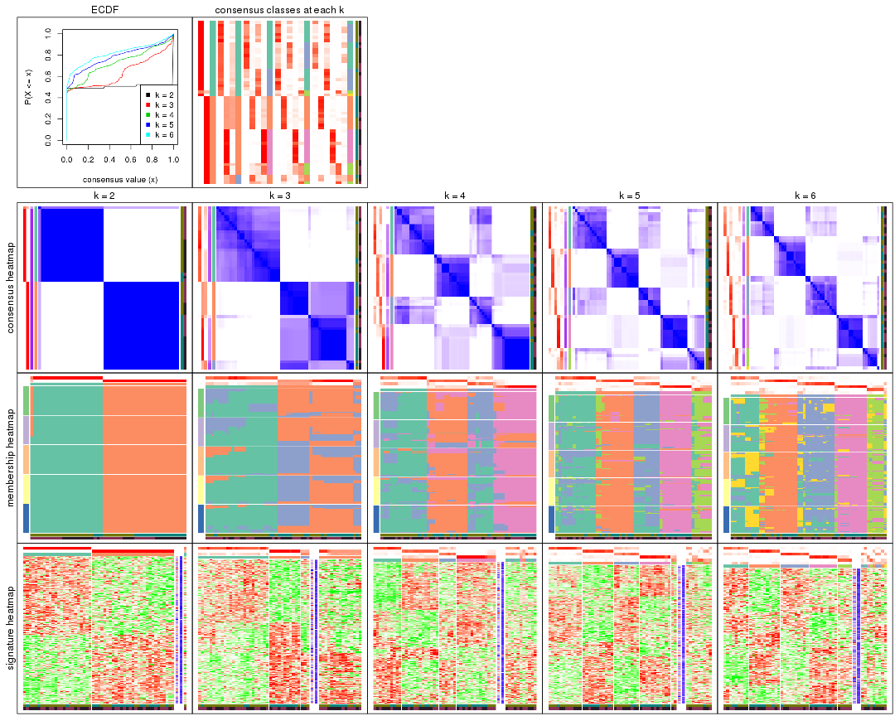
The plots are:
k and the heatmap of
predicted classes for each k.k.k.k.All the plots in panels can be made by individual functions and they are plotted later in this section.
select_partition_number() produces several plots showing different
statistics for choosing “optimized” k. There are following statistics:
k;k, the area increased is defined as \(A_k - A_{k-1}\).The detailed explanations of these statistics can be found in the cola vignette.
Generally speaking, lower PAC score, higher mean silhouette score or higher
concordance corresponds to better partition. Rand index and Jaccard index
measure how similar the current partition is compared to partition with k-1.
If they are too similar, we won't accept k is better than k-1.
select_partition_number(res)
The numeric values for all these statistics can be obtained by get_stats().
get_stats(res)
#> k 1-PAC mean_silhouette concordance area_increased Rand Jaccard
#> 2 2 1.000 0.984 0.994 0.5059 0.493 0.493
#> 3 3 0.651 0.458 0.716 0.2614 0.945 0.890
#> 4 4 0.613 0.644 0.753 0.1480 0.761 0.483
#> 5 5 0.716 0.698 0.792 0.0719 0.862 0.525
#> 6 6 0.750 0.656 0.778 0.0455 0.980 0.903
suggest_best_k() suggests the best \(k\) based on these statistics. The rules are as follows:
NA.suggest_best_k(res)
#> [1] 2
Following shows the table of the partitions (You need to click the show/hide
code output link to see it). The membership matrix (columns with name p*)
is inferred by
clue::cl_consensus()
function with the SE method. Basically the value in the membership matrix
represents the probability to belong to a certain group. The finall class
label for an item is determined with the group with highest probability it
belongs to.
In get_classes() function, the entropy is calculated from the membership
matrix and the silhouette score is calculated from the consensus matrix.
cbind(get_classes(res, k = 2), get_membership(res, k = 2))
#> class entropy silhouette p1 p2
#> GSM710828 2 0.000 1.000 0.000 1.000
#> GSM710829 2 0.000 1.000 0.000 1.000
#> GSM710839 2 0.000 1.000 0.000 1.000
#> GSM710841 2 0.000 1.000 0.000 1.000
#> GSM710843 2 0.000 1.000 0.000 1.000
#> GSM710845 2 0.000 1.000 0.000 1.000
#> GSM710846 2 0.000 1.000 0.000 1.000
#> GSM710849 2 0.000 1.000 0.000 1.000
#> GSM710853 2 0.000 1.000 0.000 1.000
#> GSM710855 1 0.000 0.986 1.000 0.000
#> GSM710858 2 0.000 1.000 0.000 1.000
#> GSM710860 2 0.000 1.000 0.000 1.000
#> GSM710801 2 0.000 1.000 0.000 1.000
#> GSM710813 2 0.000 1.000 0.000 1.000
#> GSM710814 2 0.000 1.000 0.000 1.000
#> GSM710815 2 0.000 1.000 0.000 1.000
#> GSM710816 2 0.000 1.000 0.000 1.000
#> GSM710817 2 0.000 1.000 0.000 1.000
#> GSM710818 1 0.000 0.986 1.000 0.000
#> GSM710819 1 0.000 0.986 1.000 0.000
#> GSM710820 2 0.000 1.000 0.000 1.000
#> GSM710830 2 0.000 1.000 0.000 1.000
#> GSM710831 2 0.000 1.000 0.000 1.000
#> GSM710832 1 0.000 0.986 1.000 0.000
#> GSM710833 1 0.000 0.986 1.000 0.000
#> GSM710834 2 0.000 1.000 0.000 1.000
#> GSM710835 2 0.000 1.000 0.000 1.000
#> GSM710836 1 0.000 0.986 1.000 0.000
#> GSM710837 1 0.000 0.986 1.000 0.000
#> GSM710862 1 0.000 0.986 1.000 0.000
#> GSM710863 1 0.000 0.986 1.000 0.000
#> GSM710865 1 0.000 0.986 1.000 0.000
#> GSM710867 1 0.000 0.986 1.000 0.000
#> GSM710869 1 0.000 0.986 1.000 0.000
#> GSM710871 1 0.000 0.986 1.000 0.000
#> GSM710873 1 0.000 0.986 1.000 0.000
#> GSM710802 1 0.000 0.986 1.000 0.000
#> GSM710803 1 0.000 0.986 1.000 0.000
#> GSM710804 2 0.000 1.000 0.000 1.000
#> GSM710805 2 0.000 1.000 0.000 1.000
#> GSM710806 2 0.000 1.000 0.000 1.000
#> GSM710807 1 0.000 0.986 1.000 0.000
#> GSM710808 2 0.000 1.000 0.000 1.000
#> GSM710809 1 0.000 0.986 1.000 0.000
#> GSM710810 1 0.000 0.986 1.000 0.000
#> GSM710811 1 0.000 0.986 1.000 0.000
#> GSM710812 1 0.000 0.986 1.000 0.000
#> GSM710821 2 0.000 1.000 0.000 1.000
#> GSM710822 1 0.000 0.986 1.000 0.000
#> GSM710823 1 0.000 0.986 1.000 0.000
#> GSM710824 2 0.000 1.000 0.000 1.000
#> GSM710825 2 0.000 1.000 0.000 1.000
#> GSM710826 1 0.929 0.476 0.656 0.344
#> GSM710827 1 0.000 0.986 1.000 0.000
cbind(get_classes(res, k = 3), get_membership(res, k = 3))
#> class entropy silhouette p1 p2 p3
#> GSM710828 2 0.0000 0.531 0.000 1.000 0.000
#> GSM710829 2 0.0000 0.531 0.000 1.000 0.000
#> GSM710839 2 0.0000 0.531 0.000 1.000 0.000
#> GSM710841 2 0.6286 -0.485 0.000 0.536 0.464
#> GSM710843 2 0.0000 0.531 0.000 1.000 0.000
#> GSM710845 2 0.1031 0.513 0.000 0.976 0.024
#> GSM710846 2 0.6305 -0.518 0.000 0.516 0.484
#> GSM710849 2 0.6299 -0.503 0.000 0.524 0.476
#> GSM710853 3 0.6111 0.882 0.000 0.396 0.604
#> GSM710855 1 0.4931 0.831 0.768 0.000 0.232
#> GSM710858 2 0.6299 -0.503 0.000 0.524 0.476
#> GSM710860 2 0.6286 -0.485 0.000 0.536 0.464
#> GSM710801 2 0.0000 0.531 0.000 1.000 0.000
#> GSM710813 2 0.0000 0.531 0.000 1.000 0.000
#> GSM710814 2 0.0000 0.531 0.000 1.000 0.000
#> GSM710815 2 0.0000 0.531 0.000 1.000 0.000
#> GSM710816 2 0.0000 0.531 0.000 1.000 0.000
#> GSM710817 2 0.6305 -0.518 0.000 0.516 0.484
#> GSM710818 1 0.4346 0.804 0.816 0.000 0.184
#> GSM710819 1 0.4796 0.831 0.780 0.000 0.220
#> GSM710820 2 0.6286 -0.485 0.000 0.536 0.464
#> GSM710830 2 0.6771 0.152 0.040 0.684 0.276
#> GSM710831 2 0.6305 -0.518 0.000 0.516 0.484
#> GSM710832 1 0.4702 0.833 0.788 0.000 0.212
#> GSM710833 1 0.1031 0.846 0.976 0.000 0.024
#> GSM710834 2 0.0000 0.531 0.000 1.000 0.000
#> GSM710835 3 0.6111 0.882 0.000 0.396 0.604
#> GSM710836 1 0.2165 0.844 0.936 0.000 0.064
#> GSM710837 1 0.2165 0.844 0.936 0.000 0.064
#> GSM710862 1 0.4750 0.785 0.784 0.000 0.216
#> GSM710863 1 0.1529 0.850 0.960 0.000 0.040
#> GSM710865 1 0.4702 0.833 0.788 0.000 0.212
#> GSM710867 1 0.4702 0.833 0.788 0.000 0.212
#> GSM710869 1 0.4796 0.831 0.780 0.000 0.220
#> GSM710871 1 0.4931 0.832 0.768 0.000 0.232
#> GSM710873 1 0.4931 0.832 0.768 0.000 0.232
#> GSM710802 1 0.4555 0.794 0.800 0.000 0.200
#> GSM710803 1 0.4702 0.833 0.788 0.000 0.212
#> GSM710804 2 0.6305 -0.518 0.000 0.516 0.484
#> GSM710805 2 0.6305 -0.518 0.000 0.516 0.484
#> GSM710806 2 0.6305 -0.518 0.000 0.516 0.484
#> GSM710807 1 0.3816 0.847 0.852 0.000 0.148
#> GSM710808 2 0.2261 0.479 0.000 0.932 0.068
#> GSM710809 1 0.5591 0.743 0.696 0.000 0.304
#> GSM710810 1 0.5465 0.735 0.712 0.000 0.288
#> GSM710811 1 0.0237 0.847 0.996 0.000 0.004
#> GSM710812 1 0.4504 0.790 0.804 0.000 0.196
#> GSM710821 2 0.2066 0.486 0.000 0.940 0.060
#> GSM710822 1 0.2625 0.839 0.916 0.000 0.084
#> GSM710823 1 0.4974 0.773 0.764 0.000 0.236
#> GSM710824 3 0.6192 0.760 0.000 0.420 0.580
#> GSM710825 2 0.2261 0.479 0.000 0.932 0.068
#> GSM710826 1 0.6075 0.699 0.676 0.008 0.316
#> GSM710827 1 0.4452 0.835 0.808 0.000 0.192
cbind(get_classes(res, k = 4), get_membership(res, k = 4))
#> class entropy silhouette p1 p2 p3 p4
#> GSM710828 4 0.0000 0.89177 0.000 0.000 0.000 1.000
#> GSM710829 4 0.0000 0.89177 0.000 0.000 0.000 1.000
#> GSM710839 4 0.0000 0.89177 0.000 0.000 0.000 1.000
#> GSM710841 2 0.4222 0.83642 0.000 0.728 0.000 0.272
#> GSM710843 4 0.0000 0.89177 0.000 0.000 0.000 1.000
#> GSM710845 4 0.2124 0.85741 0.000 0.028 0.040 0.932
#> GSM710846 2 0.3528 0.88468 0.000 0.808 0.000 0.192
#> GSM710849 2 0.3569 0.88433 0.000 0.804 0.000 0.196
#> GSM710853 2 0.5042 0.73758 0.000 0.768 0.136 0.096
#> GSM710855 1 0.2036 0.63341 0.936 0.032 0.032 0.000
#> GSM710858 2 0.3569 0.88433 0.000 0.804 0.000 0.196
#> GSM710860 2 0.4222 0.83642 0.000 0.728 0.000 0.272
#> GSM710801 4 0.0000 0.89177 0.000 0.000 0.000 1.000
#> GSM710813 4 0.0000 0.89177 0.000 0.000 0.000 1.000
#> GSM710814 4 0.0000 0.89177 0.000 0.000 0.000 1.000
#> GSM710815 4 0.0000 0.89177 0.000 0.000 0.000 1.000
#> GSM710816 4 0.0000 0.89177 0.000 0.000 0.000 1.000
#> GSM710817 2 0.4500 0.88007 0.000 0.776 0.032 0.192
#> GSM710818 3 0.4889 0.53269 0.360 0.004 0.636 0.000
#> GSM710819 1 0.1284 0.64231 0.964 0.024 0.012 0.000
#> GSM710820 2 0.4222 0.83642 0.000 0.728 0.000 0.272
#> GSM710830 4 0.7307 0.40570 0.000 0.156 0.376 0.468
#> GSM710831 2 0.4289 0.87461 0.000 0.796 0.032 0.172
#> GSM710832 1 0.3128 0.64217 0.884 0.040 0.076 0.000
#> GSM710833 1 0.5288 -0.07544 0.520 0.008 0.472 0.000
#> GSM710834 4 0.0000 0.89177 0.000 0.000 0.000 1.000
#> GSM710835 2 0.4724 0.75798 0.000 0.792 0.112 0.096
#> GSM710836 1 0.6114 -0.02958 0.524 0.048 0.428 0.000
#> GSM710837 1 0.6114 -0.02958 0.524 0.048 0.428 0.000
#> GSM710862 3 0.4431 0.58133 0.304 0.000 0.696 0.000
#> GSM710863 1 0.5132 -0.00947 0.548 0.004 0.448 0.000
#> GSM710865 1 0.3037 0.64271 0.888 0.036 0.076 0.000
#> GSM710867 1 0.3876 0.62383 0.836 0.040 0.124 0.000
#> GSM710869 1 0.0817 0.64460 0.976 0.024 0.000 0.000
#> GSM710871 1 0.3286 0.61126 0.876 0.044 0.080 0.000
#> GSM710873 1 0.3286 0.61126 0.876 0.044 0.080 0.000
#> GSM710802 3 0.4819 0.55500 0.344 0.004 0.652 0.000
#> GSM710803 1 0.3128 0.64217 0.884 0.040 0.076 0.000
#> GSM710804 2 0.4500 0.88007 0.000 0.776 0.032 0.192
#> GSM710805 2 0.3528 0.88468 0.000 0.808 0.000 0.192
#> GSM710806 2 0.3400 0.88203 0.000 0.820 0.000 0.180
#> GSM710807 1 0.4635 0.47681 0.720 0.012 0.268 0.000
#> GSM710808 4 0.5361 0.72903 0.000 0.108 0.148 0.744
#> GSM710809 3 0.4547 0.48337 0.092 0.104 0.804 0.000
#> GSM710810 3 0.4259 0.54770 0.128 0.056 0.816 0.000
#> GSM710811 1 0.5285 -0.08450 0.524 0.008 0.468 0.000
#> GSM710812 3 0.4679 0.56326 0.352 0.000 0.648 0.000
#> GSM710821 4 0.5304 0.73275 0.000 0.104 0.148 0.748
#> GSM710822 3 0.5685 0.10478 0.460 0.024 0.516 0.000
#> GSM710823 3 0.4262 0.60198 0.236 0.008 0.756 0.000
#> GSM710824 2 0.7323 0.32594 0.000 0.456 0.388 0.156
#> GSM710825 4 0.5705 0.69659 0.000 0.108 0.180 0.712
#> GSM710826 3 0.3962 0.48978 0.044 0.124 0.832 0.000
#> GSM710827 1 0.2892 0.64559 0.896 0.036 0.068 0.000
cbind(get_classes(res, k = 5), get_membership(res, k = 5))
#> class entropy silhouette p1 p2 p3 p4 p5
#> GSM710828 4 0.1281 0.936 0.000 0.000 0.032 0.956 0.012
#> GSM710829 4 0.0324 0.947 0.000 0.004 0.000 0.992 0.004
#> GSM710839 4 0.0324 0.947 0.000 0.004 0.000 0.992 0.004
#> GSM710841 2 0.2583 0.844 0.000 0.864 0.000 0.132 0.004
#> GSM710843 4 0.0613 0.944 0.000 0.004 0.008 0.984 0.004
#> GSM710845 4 0.3961 0.625 0.000 0.004 0.032 0.780 0.184
#> GSM710846 2 0.1638 0.875 0.000 0.932 0.000 0.064 0.004
#> GSM710849 2 0.1638 0.875 0.000 0.932 0.000 0.064 0.004
#> GSM710853 2 0.6049 0.242 0.000 0.460 0.060 0.024 0.456
#> GSM710855 3 0.3474 0.777 0.192 0.004 0.796 0.000 0.008
#> GSM710858 2 0.1478 0.874 0.000 0.936 0.000 0.064 0.000
#> GSM710860 2 0.2583 0.844 0.000 0.864 0.000 0.132 0.004
#> GSM710801 4 0.1281 0.936 0.000 0.000 0.032 0.956 0.012
#> GSM710813 4 0.0324 0.947 0.000 0.004 0.000 0.992 0.004
#> GSM710814 4 0.0162 0.947 0.000 0.004 0.000 0.996 0.000
#> GSM710815 4 0.1195 0.937 0.000 0.000 0.028 0.960 0.012
#> GSM710816 4 0.0451 0.946 0.000 0.004 0.008 0.988 0.000
#> GSM710817 2 0.3255 0.860 0.000 0.868 0.040 0.068 0.024
#> GSM710818 1 0.2072 0.742 0.928 0.016 0.020 0.000 0.036
#> GSM710819 3 0.3039 0.781 0.192 0.000 0.808 0.000 0.000
#> GSM710820 2 0.2583 0.844 0.000 0.864 0.000 0.132 0.004
#> GSM710830 5 0.5469 0.569 0.020 0.004 0.048 0.276 0.652
#> GSM710831 2 0.4283 0.821 0.000 0.808 0.040 0.060 0.092
#> GSM710832 3 0.6230 0.706 0.344 0.032 0.548 0.000 0.076
#> GSM710833 1 0.2209 0.727 0.912 0.000 0.056 0.000 0.032
#> GSM710834 4 0.1041 0.939 0.000 0.000 0.032 0.964 0.004
#> GSM710835 2 0.5948 0.426 0.000 0.544 0.060 0.024 0.372
#> GSM710836 1 0.5262 0.525 0.680 0.016 0.240 0.000 0.064
#> GSM710837 1 0.5337 0.507 0.668 0.016 0.252 0.000 0.064
#> GSM710862 1 0.1498 0.752 0.952 0.016 0.008 0.000 0.024
#> GSM710863 1 0.1331 0.747 0.952 0.000 0.040 0.000 0.008
#> GSM710865 3 0.5921 0.737 0.320 0.028 0.588 0.000 0.064
#> GSM710867 1 0.6308 -0.385 0.516 0.032 0.376 0.000 0.076
#> GSM710869 3 0.3074 0.782 0.196 0.000 0.804 0.000 0.000
#> GSM710871 3 0.4724 0.703 0.248 0.008 0.704 0.000 0.040
#> GSM710873 3 0.4835 0.698 0.244 0.008 0.700 0.000 0.048
#> GSM710802 1 0.1787 0.747 0.936 0.016 0.004 0.000 0.044
#> GSM710803 3 0.6241 0.701 0.348 0.032 0.544 0.000 0.076
#> GSM710804 2 0.3255 0.860 0.000 0.868 0.040 0.068 0.024
#> GSM710805 2 0.1478 0.874 0.000 0.936 0.000 0.064 0.000
#> GSM710806 2 0.1901 0.871 0.000 0.928 0.004 0.056 0.012
#> GSM710807 1 0.4004 0.586 0.748 0.004 0.232 0.000 0.016
#> GSM710808 5 0.5447 0.463 0.000 0.008 0.044 0.416 0.532
#> GSM710809 5 0.6741 -0.191 0.392 0.020 0.144 0.000 0.444
#> GSM710810 1 0.5403 0.248 0.580 0.016 0.036 0.000 0.368
#> GSM710811 1 0.1356 0.746 0.956 0.004 0.028 0.000 0.012
#> GSM710812 1 0.1018 0.753 0.968 0.016 0.000 0.000 0.016
#> GSM710821 5 0.5447 0.463 0.000 0.008 0.044 0.416 0.532
#> GSM710822 1 0.2694 0.715 0.876 0.008 0.108 0.000 0.008
#> GSM710823 1 0.3653 0.707 0.840 0.016 0.056 0.000 0.088
#> GSM710824 5 0.3798 0.485 0.000 0.128 0.000 0.064 0.808
#> GSM710825 5 0.5532 0.507 0.004 0.008 0.044 0.384 0.560
#> GSM710826 5 0.3171 0.482 0.176 0.000 0.008 0.000 0.816
#> GSM710827 3 0.6024 0.733 0.328 0.032 0.576 0.000 0.064
cbind(get_classes(res, k = 6), get_membership(res, k = 6))
#> class entropy silhouette p1 p2 p3 p4 p5 p6
#> GSM710828 4 0.2605 0.888 0.032 0.012 0.000 0.888 0.004 0.064
#> GSM710829 4 0.0508 0.913 0.000 0.012 0.000 0.984 0.000 0.004
#> GSM710839 4 0.0508 0.913 0.000 0.012 0.000 0.984 0.000 0.004
#> GSM710841 2 0.1682 0.821 0.000 0.928 0.000 0.052 0.000 0.020
#> GSM710843 4 0.1167 0.906 0.008 0.012 0.000 0.960 0.000 0.020
#> GSM710845 4 0.4278 0.255 0.008 0.000 0.000 0.624 0.352 0.016
#> GSM710846 2 0.0622 0.835 0.000 0.980 0.000 0.012 0.008 0.000
#> GSM710849 2 0.1078 0.835 0.000 0.964 0.000 0.012 0.008 0.016
#> GSM710853 2 0.6074 0.088 0.000 0.388 0.000 0.000 0.340 0.272
#> GSM710855 1 0.5198 0.619 0.564 0.004 0.092 0.000 0.000 0.340
#> GSM710858 2 0.0820 0.833 0.000 0.972 0.000 0.012 0.000 0.016
#> GSM710860 2 0.1682 0.821 0.000 0.928 0.000 0.052 0.000 0.020
#> GSM710801 4 0.2605 0.888 0.032 0.012 0.000 0.888 0.004 0.064
#> GSM710813 4 0.0508 0.913 0.000 0.012 0.000 0.984 0.000 0.004
#> GSM710814 4 0.0798 0.912 0.004 0.012 0.000 0.976 0.004 0.004
#> GSM710815 4 0.1982 0.901 0.020 0.012 0.000 0.924 0.004 0.040
#> GSM710816 4 0.1167 0.906 0.008 0.012 0.000 0.960 0.000 0.020
#> GSM710817 2 0.3754 0.778 0.036 0.804 0.000 0.012 0.012 0.136
#> GSM710818 3 0.2224 0.671 0.064 0.000 0.904 0.000 0.012 0.020
#> GSM710819 1 0.5048 0.641 0.608 0.004 0.092 0.000 0.000 0.296
#> GSM710820 2 0.1682 0.821 0.000 0.928 0.000 0.052 0.000 0.020
#> GSM710830 5 0.3158 0.775 0.000 0.004 0.000 0.164 0.812 0.020
#> GSM710831 2 0.4778 0.734 0.036 0.736 0.000 0.008 0.072 0.148
#> GSM710832 1 0.3262 0.620 0.788 0.000 0.196 0.000 0.008 0.008
#> GSM710833 3 0.3511 0.661 0.104 0.000 0.828 0.008 0.012 0.048
#> GSM710834 4 0.2402 0.891 0.032 0.012 0.000 0.896 0.000 0.060
#> GSM710835 2 0.5963 0.235 0.000 0.452 0.000 0.000 0.272 0.276
#> GSM710836 3 0.6070 0.176 0.120 0.000 0.528 0.012 0.020 0.320
#> GSM710837 3 0.6184 0.114 0.124 0.000 0.488 0.012 0.020 0.356
#> GSM710862 3 0.1007 0.672 0.000 0.000 0.956 0.000 0.000 0.044
#> GSM710863 3 0.2074 0.690 0.048 0.000 0.912 0.004 0.000 0.036
#> GSM710865 1 0.3312 0.642 0.792 0.000 0.180 0.000 0.000 0.028
#> GSM710867 1 0.4841 0.398 0.620 0.004 0.320 0.000 0.008 0.048
#> GSM710869 1 0.5048 0.641 0.608 0.004 0.092 0.000 0.000 0.296
#> GSM710871 1 0.5645 0.533 0.456 0.000 0.152 0.000 0.000 0.392
#> GSM710873 1 0.5651 0.527 0.448 0.000 0.152 0.000 0.000 0.400
#> GSM710802 3 0.2758 0.640 0.036 0.000 0.872 0.000 0.012 0.080
#> GSM710803 1 0.3463 0.613 0.776 0.004 0.204 0.000 0.008 0.008
#> GSM710804 2 0.3589 0.784 0.036 0.820 0.000 0.012 0.012 0.120
#> GSM710805 2 0.0363 0.835 0.000 0.988 0.000 0.012 0.000 0.000
#> GSM710806 2 0.1577 0.826 0.000 0.940 0.000 0.008 0.016 0.036
#> GSM710807 3 0.4094 0.595 0.172 0.000 0.760 0.008 0.004 0.056
#> GSM710808 5 0.2996 0.788 0.000 0.000 0.000 0.228 0.772 0.000
#> GSM710809 6 0.6720 0.000 0.024 0.000 0.352 0.008 0.236 0.380
#> GSM710810 3 0.5550 0.060 0.032 0.004 0.640 0.000 0.208 0.116
#> GSM710811 3 0.2527 0.685 0.056 0.004 0.892 0.008 0.000 0.040
#> GSM710812 3 0.1124 0.672 0.008 0.000 0.956 0.000 0.000 0.036
#> GSM710821 5 0.3136 0.787 0.004 0.000 0.000 0.228 0.768 0.000
#> GSM710822 3 0.2893 0.646 0.060 0.000 0.876 0.008 0.016 0.040
#> GSM710823 3 0.2538 0.628 0.020 0.000 0.892 0.000 0.040 0.048
#> GSM710824 5 0.2964 0.542 0.000 0.032 0.004 0.004 0.852 0.108
#> GSM710825 5 0.2912 0.792 0.000 0.000 0.000 0.216 0.784 0.000
#> GSM710826 5 0.3475 0.441 0.000 0.000 0.060 0.000 0.800 0.140
#> GSM710827 1 0.2854 0.637 0.792 0.000 0.208 0.000 0.000 0.000
Heatmaps for the consensus matrix. It visualizes the probability of two samples to be in a same group.
consensus_heatmap(res, k = 2)
consensus_heatmap(res, k = 3)
consensus_heatmap(res, k = 4)
consensus_heatmap(res, k = 5)
consensus_heatmap(res, k = 6)
Heatmaps for the membership of samples in all partitions to see how consistent they are:
membership_heatmap(res, k = 2)
membership_heatmap(res, k = 3)
membership_heatmap(res, k = 4)
membership_heatmap(res, k = 5)
membership_heatmap(res, k = 6)
As soon as we have had the classes for columns, we can look for signatures which are significantly different between classes which can be candidate marks for certain classes. Following are the heatmaps for signatures.
Signature heatmaps where rows are scaled:
get_signatures(res, k = 2)
get_signatures(res, k = 3)
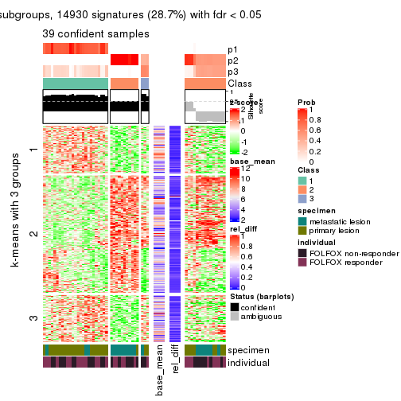
get_signatures(res, k = 4)
get_signatures(res, k = 5)
get_signatures(res, k = 6)
Signature heatmaps where rows are not scaled:
get_signatures(res, k = 2, scale_rows = FALSE)
get_signatures(res, k = 3, scale_rows = FALSE)
get_signatures(res, k = 4, scale_rows = FALSE)
get_signatures(res, k = 5, scale_rows = FALSE)
get_signatures(res, k = 6, scale_rows = FALSE)
Compare the overlap of signatures from different k:
compare_signatures(res)
get_signature() returns a data frame invisibly. TO get the list of signatures, the function
call should be assigned to a variable explicitly. In following code, if plot argument is set
to FALSE, no heatmap is plotted while only the differential analysis is performed.
# code only for demonstration
tb = get_signature(res, k = ..., plot = FALSE)
An example of the output of tb is:
#> which_row fdr mean_1 mean_2 scaled_mean_1 scaled_mean_2 km
#> 1 38 0.042760348 8.373488 9.131774 -0.5533452 0.5164555 1
#> 2 40 0.018707592 7.106213 8.469186 -0.6173731 0.5762149 1
#> 3 55 0.019134737 10.221463 11.207825 -0.6159697 0.5749050 1
#> 4 59 0.006059896 5.921854 7.869574 -0.6899429 0.6439467 1
#> 5 60 0.018055526 8.928898 10.211722 -0.6204761 0.5791110 1
#> 6 98 0.009384629 15.714769 14.887706 0.6635654 -0.6193277 2
...
The columns in tb are:
which_row: row indices corresponding to the input matrix.fdr: FDR for the differential test. mean_x: The mean value in group x.scaled_mean_x: The mean value in group x after rows are scaled.km: Row groups if k-means clustering is applied to rows.UMAP plot which shows how samples are separated.
dimension_reduction(res, k = 2, method = "UMAP")
dimension_reduction(res, k = 3, method = "UMAP")
dimension_reduction(res, k = 4, method = "UMAP")
dimension_reduction(res, k = 5, method = "UMAP")
dimension_reduction(res, k = 6, method = "UMAP")
Following heatmap shows how subgroups are split when increasing k:
collect_classes(res)
Test correlation between subgroups and known annotations. If the known annotation is numeric, one-way ANOVA test is applied, and if the known annotation is discrete, chi-squared contingency table test is applied.
test_to_known_factors(res)
#> n specimen(p) individual(p) k
#> ATC:kmeans 53 6.98e-04 1.000 2
#> ATC:kmeans 39 3.23e-05 0.803 3
#> ATC:kmeans 43 2.32e-02 0.156 4
#> ATC:kmeans 45 3.17e-04 0.858 5
#> ATC:kmeans 45 3.45e-04 0.366 6
If matrix rows can be associated to genes, consider to use GO_Enrichment(res,
...) to perform function enrichment for the signature genes.
The object with results only for a single top-value method and a single partition method can be extracted as:
res = res_list["ATC", "skmeans"]
# you can also extract it by
# res = res_list["ATC:skmeans"]
A summary of res and all the functions that can be applied to it:
res
#> A 'ConsensusPartition' object with k = 2, 3, 4, 5, 6.
#> On a matrix with 51941 rows and 54 columns.
#> Top rows (1000, 2000, 3000, 4000, 5000) are extracted by 'ATC' method.
#> Subgroups are detected by 'skmeans' method.
#> Performed in total 1250 partitions by row resampling.
#> Best k for subgroups seems to be 3.
#>
#> Following methods can be applied to this 'ConsensusPartition' object:
#> [1] "cola_report" "collect_classes" "collect_plots"
#> [4] "collect_stats" "colnames" "compare_signatures"
#> [7] "consensus_heatmap" "dimension_reduction" "functional_enrichment"
#> [10] "get_anno_col" "get_anno" "get_classes"
#> [13] "get_consensus" "get_matrix" "get_membership"
#> [16] "get_param" "get_signatures" "get_stats"
#> [19] "is_best_k" "is_stable_k" "membership_heatmap"
#> [22] "ncol" "nrow" "plot_ecdf"
#> [25] "rownames" "select_partition_number" "show"
#> [28] "suggest_best_k" "test_to_known_factors"
collect_plots() function collects all the plots made from res for all k (number of partitions)
into one single page to provide an easy and fast comparison between different k.
collect_plots(res)
The plots are:
k and the heatmap of
predicted classes for each k.k.k.k.All the plots in panels can be made by individual functions and they are plotted later in this section.
select_partition_number() produces several plots showing different
statistics for choosing “optimized” k. There are following statistics:
k;k, the area increased is defined as \(A_k - A_{k-1}\).The detailed explanations of these statistics can be found in the cola vignette.
Generally speaking, lower PAC score, higher mean silhouette score or higher
concordance corresponds to better partition. Rand index and Jaccard index
measure how similar the current partition is compared to partition with k-1.
If they are too similar, we won't accept k is better than k-1.
select_partition_number(res)
The numeric values for all these statistics can be obtained by get_stats().
get_stats(res)
#> k 1-PAC mean_silhouette concordance area_increased Rand Jaccard
#> 2 2 1.000 1.000 1.000 0.5071 0.493 0.493
#> 3 3 1.000 0.989 0.993 0.2909 0.853 0.703
#> 4 4 0.865 0.788 0.894 0.0931 0.968 0.907
#> 5 5 0.784 0.623 0.847 0.0489 0.938 0.813
#> 6 6 0.779 0.631 0.807 0.0333 0.973 0.909
suggest_best_k() suggests the best \(k\) based on these statistics. The rules are as follows:
NA.suggest_best_k(res)
#> [1] 3
#> attr(,"optional")
#> [1] 2
There is also optional best \(k\) = 2 that is worth to check.
Following shows the table of the partitions (You need to click the show/hide
code output link to see it). The membership matrix (columns with name p*)
is inferred by
clue::cl_consensus()
function with the SE method. Basically the value in the membership matrix
represents the probability to belong to a certain group. The finall class
label for an item is determined with the group with highest probability it
belongs to.
In get_classes() function, the entropy is calculated from the membership
matrix and the silhouette score is calculated from the consensus matrix.
cbind(get_classes(res, k = 2), get_membership(res, k = 2))
#> class entropy silhouette p1 p2
#> GSM710828 2 0 1 0 1
#> GSM710829 2 0 1 0 1
#> GSM710839 2 0 1 0 1
#> GSM710841 2 0 1 0 1
#> GSM710843 2 0 1 0 1
#> GSM710845 2 0 1 0 1
#> GSM710846 2 0 1 0 1
#> GSM710849 2 0 1 0 1
#> GSM710853 2 0 1 0 1
#> GSM710855 1 0 1 1 0
#> GSM710858 2 0 1 0 1
#> GSM710860 2 0 1 0 1
#> GSM710801 2 0 1 0 1
#> GSM710813 2 0 1 0 1
#> GSM710814 2 0 1 0 1
#> GSM710815 2 0 1 0 1
#> GSM710816 2 0 1 0 1
#> GSM710817 2 0 1 0 1
#> GSM710818 1 0 1 1 0
#> GSM710819 1 0 1 1 0
#> GSM710820 2 0 1 0 1
#> GSM710830 2 0 1 0 1
#> GSM710831 2 0 1 0 1
#> GSM710832 1 0 1 1 0
#> GSM710833 1 0 1 1 0
#> GSM710834 2 0 1 0 1
#> GSM710835 2 0 1 0 1
#> GSM710836 1 0 1 1 0
#> GSM710837 1 0 1 1 0
#> GSM710862 1 0 1 1 0
#> GSM710863 1 0 1 1 0
#> GSM710865 1 0 1 1 0
#> GSM710867 1 0 1 1 0
#> GSM710869 1 0 1 1 0
#> GSM710871 1 0 1 1 0
#> GSM710873 1 0 1 1 0
#> GSM710802 1 0 1 1 0
#> GSM710803 1 0 1 1 0
#> GSM710804 2 0 1 0 1
#> GSM710805 2 0 1 0 1
#> GSM710806 2 0 1 0 1
#> GSM710807 1 0 1 1 0
#> GSM710808 2 0 1 0 1
#> GSM710809 1 0 1 1 0
#> GSM710810 1 0 1 1 0
#> GSM710811 1 0 1 1 0
#> GSM710812 1 0 1 1 0
#> GSM710821 2 0 1 0 1
#> GSM710822 1 0 1 1 0
#> GSM710823 1 0 1 1 0
#> GSM710824 2 0 1 0 1
#> GSM710825 2 0 1 0 1
#> GSM710826 1 0 1 1 0
#> GSM710827 1 0 1 1 0
cbind(get_classes(res, k = 3), get_membership(res, k = 3))
#> class entropy silhouette p1 p2 p3
#> GSM710828 3 0.0424 0.998 0.000 0.008 0.992
#> GSM710829 3 0.0424 0.998 0.000 0.008 0.992
#> GSM710839 3 0.0424 0.998 0.000 0.008 0.992
#> GSM710841 2 0.0237 0.999 0.000 0.996 0.004
#> GSM710843 3 0.0424 0.998 0.000 0.008 0.992
#> GSM710845 3 0.0424 0.998 0.000 0.008 0.992
#> GSM710846 2 0.0237 0.999 0.000 0.996 0.004
#> GSM710849 2 0.0237 0.999 0.000 0.996 0.004
#> GSM710853 2 0.0000 0.996 0.000 1.000 0.000
#> GSM710855 1 0.0000 0.990 1.000 0.000 0.000
#> GSM710858 2 0.0237 0.999 0.000 0.996 0.004
#> GSM710860 2 0.0237 0.999 0.000 0.996 0.004
#> GSM710801 3 0.0424 0.998 0.000 0.008 0.992
#> GSM710813 3 0.0424 0.998 0.000 0.008 0.992
#> GSM710814 3 0.0424 0.998 0.000 0.008 0.992
#> GSM710815 3 0.0424 0.998 0.000 0.008 0.992
#> GSM710816 3 0.0424 0.998 0.000 0.008 0.992
#> GSM710817 2 0.0237 0.999 0.000 0.996 0.004
#> GSM710818 1 0.0000 0.990 1.000 0.000 0.000
#> GSM710819 1 0.0000 0.990 1.000 0.000 0.000
#> GSM710820 2 0.0237 0.999 0.000 0.996 0.004
#> GSM710830 3 0.0000 0.994 0.000 0.000 1.000
#> GSM710831 2 0.0237 0.999 0.000 0.996 0.004
#> GSM710832 1 0.0000 0.990 1.000 0.000 0.000
#> GSM710833 1 0.0000 0.990 1.000 0.000 0.000
#> GSM710834 3 0.0424 0.998 0.000 0.008 0.992
#> GSM710835 2 0.0000 0.996 0.000 1.000 0.000
#> GSM710836 1 0.0000 0.990 1.000 0.000 0.000
#> GSM710837 1 0.0000 0.990 1.000 0.000 0.000
#> GSM710862 1 0.0000 0.990 1.000 0.000 0.000
#> GSM710863 1 0.0000 0.990 1.000 0.000 0.000
#> GSM710865 1 0.0000 0.990 1.000 0.000 0.000
#> GSM710867 1 0.0000 0.990 1.000 0.000 0.000
#> GSM710869 1 0.0000 0.990 1.000 0.000 0.000
#> GSM710871 1 0.0000 0.990 1.000 0.000 0.000
#> GSM710873 1 0.0000 0.990 1.000 0.000 0.000
#> GSM710802 1 0.0000 0.990 1.000 0.000 0.000
#> GSM710803 1 0.0000 0.990 1.000 0.000 0.000
#> GSM710804 2 0.0237 0.999 0.000 0.996 0.004
#> GSM710805 2 0.0237 0.999 0.000 0.996 0.004
#> GSM710806 2 0.0237 0.999 0.000 0.996 0.004
#> GSM710807 1 0.0000 0.990 1.000 0.000 0.000
#> GSM710808 3 0.0000 0.994 0.000 0.000 1.000
#> GSM710809 1 0.4605 0.744 0.796 0.204 0.000
#> GSM710810 1 0.0000 0.990 1.000 0.000 0.000
#> GSM710811 1 0.0000 0.990 1.000 0.000 0.000
#> GSM710812 1 0.0000 0.990 1.000 0.000 0.000
#> GSM710821 3 0.0000 0.994 0.000 0.000 1.000
#> GSM710822 1 0.0000 0.990 1.000 0.000 0.000
#> GSM710823 1 0.0000 0.990 1.000 0.000 0.000
#> GSM710824 2 0.0424 0.989 0.000 0.992 0.008
#> GSM710825 3 0.0000 0.994 0.000 0.000 1.000
#> GSM710826 1 0.1453 0.964 0.968 0.024 0.008
#> GSM710827 1 0.0000 0.990 1.000 0.000 0.000
cbind(get_classes(res, k = 4), get_membership(res, k = 4))
#> class entropy silhouette p1 p2 p3 p4
#> GSM710828 4 0.0000 0.9726 0.000 0.000 0.000 1.000
#> GSM710829 4 0.0000 0.9726 0.000 0.000 0.000 1.000
#> GSM710839 4 0.0000 0.9726 0.000 0.000 0.000 1.000
#> GSM710841 2 0.0000 0.9665 0.000 1.000 0.000 0.000
#> GSM710843 4 0.0000 0.9726 0.000 0.000 0.000 1.000
#> GSM710845 4 0.0000 0.9726 0.000 0.000 0.000 1.000
#> GSM710846 2 0.0000 0.9665 0.000 1.000 0.000 0.000
#> GSM710849 2 0.0000 0.9665 0.000 1.000 0.000 0.000
#> GSM710853 2 0.0592 0.9566 0.000 0.984 0.016 0.000
#> GSM710855 1 0.3726 0.6329 0.788 0.000 0.212 0.000
#> GSM710858 2 0.0000 0.9665 0.000 1.000 0.000 0.000
#> GSM710860 2 0.0000 0.9665 0.000 1.000 0.000 0.000
#> GSM710801 4 0.0000 0.9726 0.000 0.000 0.000 1.000
#> GSM710813 4 0.0000 0.9726 0.000 0.000 0.000 1.000
#> GSM710814 4 0.0000 0.9726 0.000 0.000 0.000 1.000
#> GSM710815 4 0.0000 0.9726 0.000 0.000 0.000 1.000
#> GSM710816 4 0.0000 0.9726 0.000 0.000 0.000 1.000
#> GSM710817 2 0.0000 0.9665 0.000 1.000 0.000 0.000
#> GSM710818 1 0.0469 0.8006 0.988 0.000 0.012 0.000
#> GSM710819 1 0.0707 0.7989 0.980 0.000 0.020 0.000
#> GSM710820 2 0.0000 0.9665 0.000 1.000 0.000 0.000
#> GSM710830 4 0.0000 0.9726 0.000 0.000 0.000 1.000
#> GSM710831 2 0.0000 0.9665 0.000 1.000 0.000 0.000
#> GSM710832 1 0.0336 0.8018 0.992 0.000 0.008 0.000
#> GSM710833 1 0.0336 0.8018 0.992 0.000 0.008 0.000
#> GSM710834 4 0.0000 0.9726 0.000 0.000 0.000 1.000
#> GSM710835 2 0.0592 0.9566 0.000 0.984 0.016 0.000
#> GSM710836 1 0.4866 0.2889 0.596 0.000 0.404 0.000
#> GSM710837 1 0.4866 0.2889 0.596 0.000 0.404 0.000
#> GSM710862 1 0.2469 0.7406 0.892 0.000 0.108 0.000
#> GSM710863 1 0.0469 0.8021 0.988 0.000 0.012 0.000
#> GSM710865 1 0.0336 0.8018 0.992 0.000 0.008 0.000
#> GSM710867 1 0.0336 0.8018 0.992 0.000 0.008 0.000
#> GSM710869 1 0.0336 0.8027 0.992 0.000 0.008 0.000
#> GSM710871 1 0.4776 0.3595 0.624 0.000 0.376 0.000
#> GSM710873 1 0.4866 0.2889 0.596 0.000 0.404 0.000
#> GSM710802 1 0.0336 0.8018 0.992 0.000 0.008 0.000
#> GSM710803 1 0.0336 0.8018 0.992 0.000 0.008 0.000
#> GSM710804 2 0.0000 0.9665 0.000 1.000 0.000 0.000
#> GSM710805 2 0.0000 0.9665 0.000 1.000 0.000 0.000
#> GSM710806 2 0.0000 0.9665 0.000 1.000 0.000 0.000
#> GSM710807 1 0.3356 0.6750 0.824 0.000 0.176 0.000
#> GSM710808 4 0.1389 0.9417 0.000 0.000 0.048 0.952
#> GSM710809 3 0.5865 -0.0475 0.412 0.036 0.552 0.000
#> GSM710810 1 0.0817 0.7904 0.976 0.000 0.024 0.000
#> GSM710811 1 0.0336 0.8027 0.992 0.000 0.008 0.000
#> GSM710812 1 0.0188 0.8025 0.996 0.000 0.004 0.000
#> GSM710821 4 0.3356 0.8350 0.000 0.000 0.176 0.824
#> GSM710822 1 0.4761 0.3724 0.628 0.000 0.372 0.000
#> GSM710823 1 0.4985 0.0714 0.532 0.000 0.468 0.000
#> GSM710824 2 0.4948 0.4270 0.000 0.560 0.440 0.000
#> GSM710825 4 0.3569 0.8150 0.000 0.000 0.196 0.804
#> GSM710826 3 0.0336 0.4430 0.008 0.000 0.992 0.000
#> GSM710827 1 0.0336 0.8027 0.992 0.000 0.008 0.000
cbind(get_classes(res, k = 5), get_membership(res, k = 5))
#> class entropy silhouette p1 p2 p3 p4 p5
#> GSM710828 4 0.0000 0.9553 0.000 0.000 0.000 1.000 0.000
#> GSM710829 4 0.0000 0.9553 0.000 0.000 0.000 1.000 0.000
#> GSM710839 4 0.0000 0.9553 0.000 0.000 0.000 1.000 0.000
#> GSM710841 2 0.0000 0.9785 0.000 1.000 0.000 0.000 0.000
#> GSM710843 4 0.0162 0.9526 0.000 0.000 0.000 0.996 0.004
#> GSM710845 4 0.0609 0.9386 0.000 0.000 0.000 0.980 0.020
#> GSM710846 2 0.0000 0.9785 0.000 1.000 0.000 0.000 0.000
#> GSM710849 2 0.0000 0.9785 0.000 1.000 0.000 0.000 0.000
#> GSM710853 2 0.2722 0.8717 0.000 0.872 0.108 0.000 0.020
#> GSM710855 1 0.1892 0.5452 0.916 0.000 0.080 0.000 0.004
#> GSM710858 2 0.0000 0.9785 0.000 1.000 0.000 0.000 0.000
#> GSM710860 2 0.0000 0.9785 0.000 1.000 0.000 0.000 0.000
#> GSM710801 4 0.0000 0.9553 0.000 0.000 0.000 1.000 0.000
#> GSM710813 4 0.0000 0.9553 0.000 0.000 0.000 1.000 0.000
#> GSM710814 4 0.0000 0.9553 0.000 0.000 0.000 1.000 0.000
#> GSM710815 4 0.0000 0.9553 0.000 0.000 0.000 1.000 0.000
#> GSM710816 4 0.0000 0.9553 0.000 0.000 0.000 1.000 0.000
#> GSM710817 2 0.0000 0.9785 0.000 1.000 0.000 0.000 0.000
#> GSM710818 1 0.4114 -0.0791 0.624 0.000 0.376 0.000 0.000
#> GSM710819 1 0.0404 0.5545 0.988 0.000 0.012 0.000 0.000
#> GSM710820 2 0.0000 0.9785 0.000 1.000 0.000 0.000 0.000
#> GSM710830 4 0.2580 0.8475 0.000 0.000 0.044 0.892 0.064
#> GSM710831 2 0.0000 0.9785 0.000 1.000 0.000 0.000 0.000
#> GSM710832 1 0.3966 0.0043 0.664 0.000 0.336 0.000 0.000
#> GSM710833 1 0.3857 0.1222 0.688 0.000 0.312 0.000 0.000
#> GSM710834 4 0.0000 0.9553 0.000 0.000 0.000 1.000 0.000
#> GSM710835 2 0.2722 0.8717 0.000 0.872 0.108 0.000 0.020
#> GSM710836 1 0.3769 0.4807 0.788 0.000 0.180 0.000 0.032
#> GSM710837 1 0.3769 0.4807 0.788 0.000 0.180 0.000 0.032
#> GSM710862 1 0.3764 0.5057 0.800 0.000 0.156 0.000 0.044
#> GSM710863 1 0.2886 0.4963 0.844 0.000 0.148 0.000 0.008
#> GSM710865 1 0.3837 0.1112 0.692 0.000 0.308 0.000 0.000
#> GSM710867 1 0.3707 0.1856 0.716 0.000 0.284 0.000 0.000
#> GSM710869 1 0.1792 0.5266 0.916 0.000 0.084 0.000 0.000
#> GSM710871 1 0.2920 0.5215 0.852 0.000 0.132 0.000 0.016
#> GSM710873 1 0.3769 0.4807 0.788 0.000 0.180 0.000 0.032
#> GSM710802 1 0.3966 0.0083 0.664 0.000 0.336 0.000 0.000
#> GSM710803 1 0.3983 -0.0115 0.660 0.000 0.340 0.000 0.000
#> GSM710804 2 0.0000 0.9785 0.000 1.000 0.000 0.000 0.000
#> GSM710805 2 0.0000 0.9785 0.000 1.000 0.000 0.000 0.000
#> GSM710806 2 0.0000 0.9785 0.000 1.000 0.000 0.000 0.000
#> GSM710807 1 0.1082 0.5558 0.964 0.000 0.028 0.000 0.008
#> GSM710808 4 0.3796 0.4596 0.000 0.000 0.000 0.700 0.300
#> GSM710809 1 0.6131 0.1083 0.532 0.012 0.356 0.000 0.100
#> GSM710810 3 0.4359 0.0000 0.412 0.000 0.584 0.000 0.004
#> GSM710811 1 0.2179 0.5091 0.888 0.000 0.112 0.000 0.000
#> GSM710812 1 0.3123 0.4555 0.812 0.000 0.184 0.000 0.004
#> GSM710821 5 0.4268 0.2382 0.000 0.000 0.000 0.444 0.556
#> GSM710822 1 0.3445 0.5160 0.824 0.000 0.140 0.000 0.036
#> GSM710823 1 0.5399 0.3146 0.664 0.000 0.188 0.000 0.148
#> GSM710824 5 0.5008 0.3327 0.000 0.300 0.056 0.000 0.644
#> GSM710825 5 0.4182 0.4270 0.000 0.004 0.000 0.352 0.644
#> GSM710826 5 0.3209 0.4310 0.008 0.000 0.180 0.000 0.812
#> GSM710827 1 0.2230 0.5058 0.884 0.000 0.116 0.000 0.000
cbind(get_classes(res, k = 6), get_membership(res, k = 6))
#> class entropy silhouette p1 p2 p3 p4 p5 p6
#> GSM710828 4 0.0000 0.9739 0.000 0.000 0.000 1.000 0.000 0.000
#> GSM710829 4 0.0000 0.9739 0.000 0.000 0.000 1.000 0.000 0.000
#> GSM710839 4 0.0000 0.9739 0.000 0.000 0.000 1.000 0.000 0.000
#> GSM710841 2 0.0000 0.9531 0.000 1.000 0.000 0.000 0.000 0.000
#> GSM710843 4 0.0260 0.9692 0.000 0.000 0.000 0.992 0.008 0.000
#> GSM710845 4 0.0865 0.9406 0.000 0.000 0.000 0.964 0.036 0.000
#> GSM710846 2 0.0000 0.9531 0.000 1.000 0.000 0.000 0.000 0.000
#> GSM710849 2 0.0146 0.9519 0.000 0.996 0.004 0.000 0.000 0.000
#> GSM710853 2 0.4173 0.7108 0.000 0.732 0.212 0.000 0.012 0.044
#> GSM710855 1 0.2912 0.4846 0.784 0.000 0.216 0.000 0.000 0.000
#> GSM710858 2 0.0146 0.9523 0.000 0.996 0.000 0.000 0.000 0.004
#> GSM710860 2 0.0000 0.9531 0.000 1.000 0.000 0.000 0.000 0.000
#> GSM710801 4 0.0000 0.9739 0.000 0.000 0.000 1.000 0.000 0.000
#> GSM710813 4 0.0000 0.9739 0.000 0.000 0.000 1.000 0.000 0.000
#> GSM710814 4 0.0000 0.9739 0.000 0.000 0.000 1.000 0.000 0.000
#> GSM710815 4 0.0000 0.9739 0.000 0.000 0.000 1.000 0.000 0.000
#> GSM710816 4 0.0260 0.9692 0.000 0.000 0.000 0.992 0.008 0.000
#> GSM710817 2 0.0260 0.9514 0.000 0.992 0.000 0.000 0.000 0.008
#> GSM710818 1 0.3727 0.2485 0.612 0.000 0.000 0.000 0.000 0.388
#> GSM710819 1 0.2178 0.5598 0.868 0.000 0.132 0.000 0.000 0.000
#> GSM710820 2 0.0000 0.9531 0.000 1.000 0.000 0.000 0.000 0.000
#> GSM710830 4 0.3666 0.7365 0.000 0.000 0.016 0.812 0.080 0.092
#> GSM710831 2 0.0260 0.9514 0.000 0.992 0.000 0.000 0.000 0.008
#> GSM710832 1 0.3266 0.3788 0.728 0.000 0.000 0.000 0.000 0.272
#> GSM710833 1 0.3133 0.5001 0.780 0.000 0.008 0.000 0.000 0.212
#> GSM710834 4 0.0000 0.9739 0.000 0.000 0.000 1.000 0.000 0.000
#> GSM710835 2 0.4031 0.7175 0.000 0.736 0.212 0.000 0.004 0.048
#> GSM710836 1 0.3672 0.2123 0.632 0.000 0.368 0.000 0.000 0.000
#> GSM710837 1 0.3684 0.2002 0.628 0.000 0.372 0.000 0.000 0.000
#> GSM710862 1 0.4570 0.4530 0.680 0.000 0.092 0.000 0.000 0.228
#> GSM710863 1 0.3098 0.5509 0.812 0.000 0.024 0.000 0.000 0.164
#> GSM710865 1 0.2697 0.5037 0.812 0.000 0.000 0.000 0.000 0.188
#> GSM710867 1 0.2527 0.5262 0.832 0.000 0.000 0.000 0.000 0.168
#> GSM710869 1 0.1411 0.5959 0.936 0.000 0.060 0.000 0.000 0.004
#> GSM710871 1 0.3351 0.3798 0.712 0.000 0.288 0.000 0.000 0.000
#> GSM710873 1 0.3672 0.2123 0.632 0.000 0.368 0.000 0.000 0.000
#> GSM710802 1 0.3409 0.3271 0.700 0.000 0.000 0.000 0.000 0.300
#> GSM710803 1 0.3266 0.3788 0.728 0.000 0.000 0.000 0.000 0.272
#> GSM710804 2 0.0260 0.9514 0.000 0.992 0.000 0.000 0.000 0.008
#> GSM710805 2 0.0000 0.9531 0.000 1.000 0.000 0.000 0.000 0.000
#> GSM710806 2 0.0146 0.9520 0.000 0.996 0.004 0.000 0.000 0.000
#> GSM710807 1 0.2790 0.5591 0.844 0.000 0.132 0.000 0.000 0.024
#> GSM710808 5 0.3864 0.1536 0.000 0.000 0.000 0.480 0.520 0.000
#> GSM710809 3 0.4515 0.0000 0.280 0.000 0.656 0.000 0.000 0.064
#> GSM710810 6 0.4992 0.0000 0.268 0.000 0.112 0.000 0.000 0.620
#> GSM710811 1 0.0603 0.6106 0.980 0.000 0.004 0.000 0.000 0.016
#> GSM710812 1 0.3374 0.5119 0.772 0.000 0.020 0.000 0.000 0.208
#> GSM710821 5 0.3499 0.4914 0.000 0.000 0.000 0.320 0.680 0.000
#> GSM710822 1 0.5083 0.3993 0.632 0.000 0.204 0.000 0.000 0.164
#> GSM710823 1 0.6795 0.0755 0.464 0.000 0.216 0.000 0.068 0.252
#> GSM710824 5 0.6509 0.2095 0.000 0.284 0.152 0.000 0.500 0.064
#> GSM710825 5 0.2996 0.5236 0.000 0.000 0.000 0.228 0.772 0.000
#> GSM710826 5 0.5789 0.1169 0.008 0.000 0.316 0.000 0.516 0.160
#> GSM710827 1 0.1168 0.6127 0.956 0.000 0.016 0.000 0.000 0.028
Heatmaps for the consensus matrix. It visualizes the probability of two samples to be in a same group.
consensus_heatmap(res, k = 2)

consensus_heatmap(res, k = 3)
consensus_heatmap(res, k = 4)
consensus_heatmap(res, k = 5)
consensus_heatmap(res, k = 6)
Heatmaps for the membership of samples in all partitions to see how consistent they are:
membership_heatmap(res, k = 2)
membership_heatmap(res, k = 3)
membership_heatmap(res, k = 4)
membership_heatmap(res, k = 5)
membership_heatmap(res, k = 6)
As soon as we have had the classes for columns, we can look for signatures which are significantly different between classes which can be candidate marks for certain classes. Following are the heatmaps for signatures.
Signature heatmaps where rows are scaled:
get_signatures(res, k = 2)
get_signatures(res, k = 3)
get_signatures(res, k = 4)
get_signatures(res, k = 5)
get_signatures(res, k = 6)
Signature heatmaps where rows are not scaled:
get_signatures(res, k = 2, scale_rows = FALSE)
get_signatures(res, k = 3, scale_rows = FALSE)
get_signatures(res, k = 4, scale_rows = FALSE)
get_signatures(res, k = 5, scale_rows = FALSE)
get_signatures(res, k = 6, scale_rows = FALSE)
Compare the overlap of signatures from different k:
compare_signatures(res)
get_signature() returns a data frame invisibly. TO get the list of signatures, the function
call should be assigned to a variable explicitly. In following code, if plot argument is set
to FALSE, no heatmap is plotted while only the differential analysis is performed.
# code only for demonstration
tb = get_signature(res, k = ..., plot = FALSE)
An example of the output of tb is:
#> which_row fdr mean_1 mean_2 scaled_mean_1 scaled_mean_2 km
#> 1 38 0.042760348 8.373488 9.131774 -0.5533452 0.5164555 1
#> 2 40 0.018707592 7.106213 8.469186 -0.6173731 0.5762149 1
#> 3 55 0.019134737 10.221463 11.207825 -0.6159697 0.5749050 1
#> 4 59 0.006059896 5.921854 7.869574 -0.6899429 0.6439467 1
#> 5 60 0.018055526 8.928898 10.211722 -0.6204761 0.5791110 1
#> 6 98 0.009384629 15.714769 14.887706 0.6635654 -0.6193277 2
...
The columns in tb are:
which_row: row indices corresponding to the input matrix.fdr: FDR for the differential test. mean_x: The mean value in group x.scaled_mean_x: The mean value in group x after rows are scaled.km: Row groups if k-means clustering is applied to rows.UMAP plot which shows how samples are separated.
dimension_reduction(res, k = 2, method = "UMAP")
dimension_reduction(res, k = 3, method = "UMAP")
dimension_reduction(res, k = 4, method = "UMAP")
dimension_reduction(res, k = 5, method = "UMAP")
dimension_reduction(res, k = 6, method = "UMAP")
Following heatmap shows how subgroups are split when increasing k:
collect_classes(res)
Test correlation between subgroups and known annotations. If the known annotation is numeric, one-way ANOVA test is applied, and if the known annotation is discrete, chi-squared contingency table test is applied.
test_to_known_factors(res)
#> n specimen(p) individual(p) k
#> ATC:skmeans 54 0.000495 1.000 2
#> ATC:skmeans 54 0.000732 0.822 3
#> ATC:skmeans 45 0.009476 0.672 4
#> ATC:skmeans 34 0.018375 0.713 5
#> ATC:skmeans 36 0.003927 0.659 6
If matrix rows can be associated to genes, consider to use GO_Enrichment(res,
...) to perform function enrichment for the signature genes.
The object with results only for a single top-value method and a single partition method can be extracted as:
res = res_list["ATC", "pam"]
# you can also extract it by
# res = res_list["ATC:pam"]
A summary of res and all the functions that can be applied to it:
res
#> A 'ConsensusPartition' object with k = 2, 3, 4, 5, 6.
#> On a matrix with 51941 rows and 54 columns.
#> Top rows (1000, 2000, 3000, 4000, 5000) are extracted by 'ATC' method.
#> Subgroups are detected by 'pam' method.
#> Performed in total 1250 partitions by row resampling.
#> Best k for subgroups seems to be 5.
#>
#> Following methods can be applied to this 'ConsensusPartition' object:
#> [1] "cola_report" "collect_classes" "collect_plots"
#> [4] "collect_stats" "colnames" "compare_signatures"
#> [7] "consensus_heatmap" "dimension_reduction" "functional_enrichment"
#> [10] "get_anno_col" "get_anno" "get_classes"
#> [13] "get_consensus" "get_matrix" "get_membership"
#> [16] "get_param" "get_signatures" "get_stats"
#> [19] "is_best_k" "is_stable_k" "membership_heatmap"
#> [22] "ncol" "nrow" "plot_ecdf"
#> [25] "rownames" "select_partition_number" "show"
#> [28] "suggest_best_k" "test_to_known_factors"
collect_plots() function collects all the plots made from res for all k (number of partitions)
into one single page to provide an easy and fast comparison between different k.
collect_plots(res)
The plots are:
k and the heatmap of
predicted classes for each k.k.k.k.All the plots in panels can be made by individual functions and they are plotted later in this section.
select_partition_number() produces several plots showing different
statistics for choosing “optimized” k. There are following statistics:
k;k, the area increased is defined as \(A_k - A_{k-1}\).The detailed explanations of these statistics can be found in the cola vignette.
Generally speaking, lower PAC score, higher mean silhouette score or higher
concordance corresponds to better partition. Rand index and Jaccard index
measure how similar the current partition is compared to partition with k-1.
If they are too similar, we won't accept k is better than k-1.
select_partition_number(res)
The numeric values for all these statistics can be obtained by get_stats().
get_stats(res)
#> k 1-PAC mean_silhouette concordance area_increased Rand Jaccard
#> 2 2 1.000 0.983 0.993 0.5090 0.491 0.491
#> 3 3 1.000 0.991 0.996 0.2823 0.840 0.680
#> 4 4 0.831 0.912 0.927 0.1190 0.895 0.714
#> 5 5 0.934 0.878 0.952 0.1054 0.909 0.675
#> 6 6 0.876 0.775 0.896 0.0316 0.939 0.708
suggest_best_k() suggests the best \(k\) based on these statistics. The rules are as follows:
NA.suggest_best_k(res)
#> [1] 5
#> attr(,"optional")
#> [1] 2 3
There is also optional best \(k\) = 2 3 that is worth to check.
Following shows the table of the partitions (You need to click the show/hide
code output link to see it). The membership matrix (columns with name p*)
is inferred by
clue::cl_consensus()
function with the SE method. Basically the value in the membership matrix
represents the probability to belong to a certain group. The finall class
label for an item is determined with the group with highest probability it
belongs to.
In get_classes() function, the entropy is calculated from the membership
matrix and the silhouette score is calculated from the consensus matrix.
cbind(get_classes(res, k = 2), get_membership(res, k = 2))
#> class entropy silhouette p1 p2
#> GSM710828 2 0.000 0.992 0.000 1.000
#> GSM710829 2 0.000 0.992 0.000 1.000
#> GSM710839 2 0.000 0.992 0.000 1.000
#> GSM710841 2 0.000 0.992 0.000 1.000
#> GSM710843 2 0.000 0.992 0.000 1.000
#> GSM710845 2 0.000 0.992 0.000 1.000
#> GSM710846 2 0.000 0.992 0.000 1.000
#> GSM710849 2 0.000 0.992 0.000 1.000
#> GSM710853 2 0.000 0.992 0.000 1.000
#> GSM710855 1 0.000 0.992 1.000 0.000
#> GSM710858 2 0.000 0.992 0.000 1.000
#> GSM710860 2 0.000 0.992 0.000 1.000
#> GSM710801 2 0.000 0.992 0.000 1.000
#> GSM710813 2 0.000 0.992 0.000 1.000
#> GSM710814 2 0.000 0.992 0.000 1.000
#> GSM710815 2 0.000 0.992 0.000 1.000
#> GSM710816 2 0.000 0.992 0.000 1.000
#> GSM710817 2 0.000 0.992 0.000 1.000
#> GSM710818 1 0.000 0.992 1.000 0.000
#> GSM710819 1 0.000 0.992 1.000 0.000
#> GSM710820 2 0.000 0.992 0.000 1.000
#> GSM710830 1 0.722 0.746 0.800 0.200
#> GSM710831 2 0.000 0.992 0.000 1.000
#> GSM710832 1 0.000 0.992 1.000 0.000
#> GSM710833 1 0.000 0.992 1.000 0.000
#> GSM710834 2 0.000 0.992 0.000 1.000
#> GSM710835 2 0.000 0.992 0.000 1.000
#> GSM710836 1 0.000 0.992 1.000 0.000
#> GSM710837 1 0.000 0.992 1.000 0.000
#> GSM710862 1 0.000 0.992 1.000 0.000
#> GSM710863 1 0.000 0.992 1.000 0.000
#> GSM710865 1 0.000 0.992 1.000 0.000
#> GSM710867 1 0.000 0.992 1.000 0.000
#> GSM710869 1 0.000 0.992 1.000 0.000
#> GSM710871 1 0.000 0.992 1.000 0.000
#> GSM710873 1 0.000 0.992 1.000 0.000
#> GSM710802 1 0.000 0.992 1.000 0.000
#> GSM710803 1 0.000 0.992 1.000 0.000
#> GSM710804 2 0.000 0.992 0.000 1.000
#> GSM710805 2 0.000 0.992 0.000 1.000
#> GSM710806 2 0.000 0.992 0.000 1.000
#> GSM710807 1 0.000 0.992 1.000 0.000
#> GSM710808 2 0.000 0.992 0.000 1.000
#> GSM710809 1 0.000 0.992 1.000 0.000
#> GSM710810 1 0.000 0.992 1.000 0.000
#> GSM710811 1 0.000 0.992 1.000 0.000
#> GSM710812 1 0.000 0.992 1.000 0.000
#> GSM710821 2 0.000 0.992 0.000 1.000
#> GSM710822 1 0.000 0.992 1.000 0.000
#> GSM710823 1 0.000 0.992 1.000 0.000
#> GSM710824 2 0.730 0.739 0.204 0.796
#> GSM710825 2 0.000 0.992 0.000 1.000
#> GSM710826 1 0.000 0.992 1.000 0.000
#> GSM710827 1 0.000 0.992 1.000 0.000
cbind(get_classes(res, k = 3), get_membership(res, k = 3))
#> class entropy silhouette p1 p2 p3
#> GSM710828 3 0.0000 1.000 0 0.000 1.000
#> GSM710829 3 0.0000 1.000 0 0.000 1.000
#> GSM710839 3 0.0000 1.000 0 0.000 1.000
#> GSM710841 2 0.0000 0.985 0 1.000 0.000
#> GSM710843 3 0.0000 1.000 0 0.000 1.000
#> GSM710845 3 0.0237 0.996 0 0.004 0.996
#> GSM710846 2 0.0000 0.985 0 1.000 0.000
#> GSM710849 2 0.0000 0.985 0 1.000 0.000
#> GSM710853 2 0.0000 0.985 0 1.000 0.000
#> GSM710855 1 0.0000 1.000 1 0.000 0.000
#> GSM710858 2 0.0000 0.985 0 1.000 0.000
#> GSM710860 2 0.0000 0.985 0 1.000 0.000
#> GSM710801 3 0.0000 1.000 0 0.000 1.000
#> GSM710813 3 0.0000 1.000 0 0.000 1.000
#> GSM710814 3 0.0000 1.000 0 0.000 1.000
#> GSM710815 3 0.0000 1.000 0 0.000 1.000
#> GSM710816 3 0.0000 1.000 0 0.000 1.000
#> GSM710817 2 0.0000 0.985 0 1.000 0.000
#> GSM710818 1 0.0000 1.000 1 0.000 0.000
#> GSM710819 1 0.0000 1.000 1 0.000 0.000
#> GSM710820 2 0.0000 0.985 0 1.000 0.000
#> GSM710830 3 0.0000 1.000 0 0.000 1.000
#> GSM710831 2 0.0000 0.985 0 1.000 0.000
#> GSM710832 1 0.0000 1.000 1 0.000 0.000
#> GSM710833 1 0.0000 1.000 1 0.000 0.000
#> GSM710834 3 0.0000 1.000 0 0.000 1.000
#> GSM710835 2 0.0000 0.985 0 1.000 0.000
#> GSM710836 1 0.0000 1.000 1 0.000 0.000
#> GSM710837 1 0.0000 1.000 1 0.000 0.000
#> GSM710862 1 0.0000 1.000 1 0.000 0.000
#> GSM710863 1 0.0000 1.000 1 0.000 0.000
#> GSM710865 1 0.0000 1.000 1 0.000 0.000
#> GSM710867 1 0.0000 1.000 1 0.000 0.000
#> GSM710869 1 0.0000 1.000 1 0.000 0.000
#> GSM710871 1 0.0000 1.000 1 0.000 0.000
#> GSM710873 1 0.0000 1.000 1 0.000 0.000
#> GSM710802 1 0.0000 1.000 1 0.000 0.000
#> GSM710803 1 0.0000 1.000 1 0.000 0.000
#> GSM710804 2 0.0000 0.985 0 1.000 0.000
#> GSM710805 2 0.0000 0.985 0 1.000 0.000
#> GSM710806 2 0.0000 0.985 0 1.000 0.000
#> GSM710807 1 0.0000 1.000 1 0.000 0.000
#> GSM710808 3 0.0000 1.000 0 0.000 1.000
#> GSM710809 1 0.0000 1.000 1 0.000 0.000
#> GSM710810 1 0.0000 1.000 1 0.000 0.000
#> GSM710811 1 0.0000 1.000 1 0.000 0.000
#> GSM710812 1 0.0000 1.000 1 0.000 0.000
#> GSM710821 2 0.4750 0.724 0 0.784 0.216
#> GSM710822 1 0.0000 1.000 1 0.000 0.000
#> GSM710823 1 0.0000 1.000 1 0.000 0.000
#> GSM710824 2 0.0000 0.985 0 1.000 0.000
#> GSM710825 2 0.0000 0.985 0 1.000 0.000
#> GSM710826 1 0.0000 1.000 1 0.000 0.000
#> GSM710827 1 0.0000 1.000 1 0.000 0.000
cbind(get_classes(res, k = 4), get_membership(res, k = 4))
#> class entropy silhouette p1 p2 p3 p4
#> GSM710828 4 0.0000 1.000 0.000 0.000 0.000 1.000
#> GSM710829 4 0.0000 1.000 0.000 0.000 0.000 1.000
#> GSM710839 4 0.0000 1.000 0.000 0.000 0.000 1.000
#> GSM710841 2 0.0000 0.997 0.000 1.000 0.000 0.000
#> GSM710843 4 0.0000 1.000 0.000 0.000 0.000 1.000
#> GSM710845 3 0.3751 0.770 0.000 0.004 0.800 0.196
#> GSM710846 2 0.0000 0.997 0.000 1.000 0.000 0.000
#> GSM710849 2 0.0000 0.997 0.000 1.000 0.000 0.000
#> GSM710853 3 0.3610 0.816 0.000 0.200 0.800 0.000
#> GSM710855 1 0.0000 0.884 1.000 0.000 0.000 0.000
#> GSM710858 2 0.0000 0.997 0.000 1.000 0.000 0.000
#> GSM710860 2 0.0000 0.997 0.000 1.000 0.000 0.000
#> GSM710801 4 0.0000 1.000 0.000 0.000 0.000 1.000
#> GSM710813 4 0.0000 1.000 0.000 0.000 0.000 1.000
#> GSM710814 4 0.0000 1.000 0.000 0.000 0.000 1.000
#> GSM710815 4 0.0000 1.000 0.000 0.000 0.000 1.000
#> GSM710816 4 0.0000 1.000 0.000 0.000 0.000 1.000
#> GSM710817 2 0.0000 0.997 0.000 1.000 0.000 0.000
#> GSM710818 1 0.3610 0.887 0.800 0.000 0.200 0.000
#> GSM710819 1 0.0000 0.884 1.000 0.000 0.000 0.000
#> GSM710820 2 0.0000 0.997 0.000 1.000 0.000 0.000
#> GSM710830 3 0.2704 0.804 0.000 0.000 0.876 0.124
#> GSM710831 2 0.0817 0.971 0.000 0.976 0.024 0.000
#> GSM710832 1 0.0000 0.884 1.000 0.000 0.000 0.000
#> GSM710833 1 0.3610 0.887 0.800 0.000 0.200 0.000
#> GSM710834 4 0.0000 1.000 0.000 0.000 0.000 1.000
#> GSM710835 2 0.0000 0.997 0.000 1.000 0.000 0.000
#> GSM710836 1 0.3610 0.887 0.800 0.000 0.200 0.000
#> GSM710837 1 0.3610 0.887 0.800 0.000 0.200 0.000
#> GSM710862 1 0.3610 0.887 0.800 0.000 0.200 0.000
#> GSM710863 1 0.3610 0.887 0.800 0.000 0.200 0.000
#> GSM710865 1 0.0000 0.884 1.000 0.000 0.000 0.000
#> GSM710867 1 0.0000 0.884 1.000 0.000 0.000 0.000
#> GSM710869 1 0.0000 0.884 1.000 0.000 0.000 0.000
#> GSM710871 1 0.0000 0.884 1.000 0.000 0.000 0.000
#> GSM710873 1 0.0000 0.884 1.000 0.000 0.000 0.000
#> GSM710802 1 0.3610 0.887 0.800 0.000 0.200 0.000
#> GSM710803 1 0.0000 0.884 1.000 0.000 0.000 0.000
#> GSM710804 2 0.0000 0.997 0.000 1.000 0.000 0.000
#> GSM710805 2 0.0000 0.997 0.000 1.000 0.000 0.000
#> GSM710806 2 0.0000 0.997 0.000 1.000 0.000 0.000
#> GSM710807 1 0.0188 0.884 0.996 0.000 0.004 0.000
#> GSM710808 3 0.3610 0.766 0.000 0.000 0.800 0.200
#> GSM710809 3 0.0000 0.784 0.000 0.000 1.000 0.000
#> GSM710810 1 0.4843 0.650 0.604 0.000 0.396 0.000
#> GSM710811 1 0.3610 0.887 0.800 0.000 0.200 0.000
#> GSM710812 1 0.3610 0.887 0.800 0.000 0.200 0.000
#> GSM710821 3 0.4194 0.828 0.000 0.172 0.800 0.028
#> GSM710822 1 0.3610 0.887 0.800 0.000 0.200 0.000
#> GSM710823 1 0.3610 0.887 0.800 0.000 0.200 0.000
#> GSM710824 3 0.3610 0.816 0.000 0.200 0.800 0.000
#> GSM710825 3 0.3610 0.816 0.000 0.200 0.800 0.000
#> GSM710826 3 0.0000 0.784 0.000 0.000 1.000 0.000
#> GSM710827 1 0.0000 0.884 1.000 0.000 0.000 0.000
cbind(get_classes(res, k = 5), get_membership(res, k = 5))
#> class entropy silhouette p1 p2 p3 p4 p5
#> GSM710828 4 0.000 1.0000 0.000 0.000 0.000 1.000 0.000
#> GSM710829 4 0.000 1.0000 0.000 0.000 0.000 1.000 0.000
#> GSM710839 4 0.000 1.0000 0.000 0.000 0.000 1.000 0.000
#> GSM710841 2 0.000 0.9984 0.000 1.000 0.000 0.000 0.000
#> GSM710843 4 0.000 1.0000 0.000 0.000 0.000 1.000 0.000
#> GSM710845 5 0.260 0.7846 0.000 0.000 0.000 0.148 0.852
#> GSM710846 2 0.000 0.9984 0.000 1.000 0.000 0.000 0.000
#> GSM710849 2 0.000 0.9984 0.000 1.000 0.000 0.000 0.000
#> GSM710853 5 0.327 0.7134 0.000 0.220 0.000 0.000 0.780
#> GSM710855 1 0.000 0.9090 1.000 0.000 0.000 0.000 0.000
#> GSM710858 2 0.000 0.9984 0.000 1.000 0.000 0.000 0.000
#> GSM710860 2 0.000 0.9984 0.000 1.000 0.000 0.000 0.000
#> GSM710801 4 0.000 1.0000 0.000 0.000 0.000 1.000 0.000
#> GSM710813 4 0.000 1.0000 0.000 0.000 0.000 1.000 0.000
#> GSM710814 4 0.000 1.0000 0.000 0.000 0.000 1.000 0.000
#> GSM710815 4 0.000 1.0000 0.000 0.000 0.000 1.000 0.000
#> GSM710816 4 0.000 1.0000 0.000 0.000 0.000 1.000 0.000
#> GSM710817 2 0.000 0.9984 0.000 1.000 0.000 0.000 0.000
#> GSM710818 3 0.000 0.8936 0.000 0.000 1.000 0.000 0.000
#> GSM710819 1 0.000 0.9090 1.000 0.000 0.000 0.000 0.000
#> GSM710820 2 0.000 0.9984 0.000 1.000 0.000 0.000 0.000
#> GSM710830 5 0.000 0.8840 0.000 0.000 0.000 0.000 1.000
#> GSM710831 2 0.051 0.9824 0.000 0.984 0.000 0.000 0.016
#> GSM710832 1 0.000 0.9090 1.000 0.000 0.000 0.000 0.000
#> GSM710833 3 0.418 0.2906 0.400 0.000 0.600 0.000 0.000
#> GSM710834 4 0.000 1.0000 0.000 0.000 0.000 1.000 0.000
#> GSM710835 2 0.000 0.9984 0.000 1.000 0.000 0.000 0.000
#> GSM710836 3 0.377 0.5389 0.296 0.000 0.704 0.000 0.000
#> GSM710837 1 0.407 0.3774 0.636 0.000 0.364 0.000 0.000
#> GSM710862 3 0.000 0.8936 0.000 0.000 1.000 0.000 0.000
#> GSM710863 3 0.000 0.8936 0.000 0.000 1.000 0.000 0.000
#> GSM710865 1 0.000 0.9090 1.000 0.000 0.000 0.000 0.000
#> GSM710867 1 0.029 0.9056 0.992 0.000 0.008 0.000 0.000
#> GSM710869 1 0.000 0.9090 1.000 0.000 0.000 0.000 0.000
#> GSM710871 1 0.000 0.9090 1.000 0.000 0.000 0.000 0.000
#> GSM710873 1 0.000 0.9090 1.000 0.000 0.000 0.000 0.000
#> GSM710802 3 0.000 0.8936 0.000 0.000 1.000 0.000 0.000
#> GSM710803 1 0.029 0.9056 0.992 0.000 0.008 0.000 0.000
#> GSM710804 2 0.000 0.9984 0.000 1.000 0.000 0.000 0.000
#> GSM710805 2 0.000 0.9984 0.000 1.000 0.000 0.000 0.000
#> GSM710806 2 0.000 0.9984 0.000 1.000 0.000 0.000 0.000
#> GSM710807 1 0.167 0.8490 0.924 0.000 0.076 0.000 0.000
#> GSM710808 5 0.000 0.8840 0.000 0.000 0.000 0.000 1.000
#> GSM710809 5 0.361 0.6576 0.000 0.000 0.268 0.000 0.732
#> GSM710810 3 0.161 0.8237 0.000 0.000 0.928 0.000 0.072
#> GSM710811 1 0.431 -0.0705 0.500 0.000 0.500 0.000 0.000
#> GSM710812 3 0.000 0.8936 0.000 0.000 1.000 0.000 0.000
#> GSM710821 5 0.000 0.8840 0.000 0.000 0.000 0.000 1.000
#> GSM710822 3 0.000 0.8936 0.000 0.000 1.000 0.000 0.000
#> GSM710823 3 0.000 0.8936 0.000 0.000 1.000 0.000 0.000
#> GSM710824 5 0.000 0.8840 0.000 0.000 0.000 0.000 1.000
#> GSM710825 5 0.000 0.8840 0.000 0.000 0.000 0.000 1.000
#> GSM710826 5 0.327 0.7184 0.000 0.000 0.220 0.000 0.780
#> GSM710827 1 0.000 0.9090 1.000 0.000 0.000 0.000 0.000
cbind(get_classes(res, k = 6), get_membership(res, k = 6))
#> class entropy silhouette p1 p2 p3 p4 p5 p6
#> GSM710828 4 0.2491 0.8968 0.000 0.000 0.164 0.836 0.000 0.000
#> GSM710829 4 0.0000 0.9484 0.000 0.000 0.000 1.000 0.000 0.000
#> GSM710839 4 0.0000 0.9484 0.000 0.000 0.000 1.000 0.000 0.000
#> GSM710841 2 0.0000 0.9606 0.000 1.000 0.000 0.000 0.000 0.000
#> GSM710843 4 0.0000 0.9484 0.000 0.000 0.000 1.000 0.000 0.000
#> GSM710845 5 0.2003 0.8389 0.000 0.000 0.000 0.116 0.884 0.000
#> GSM710846 2 0.0000 0.9606 0.000 1.000 0.000 0.000 0.000 0.000
#> GSM710849 2 0.0000 0.9606 0.000 1.000 0.000 0.000 0.000 0.000
#> GSM710853 2 0.3756 0.3005 0.000 0.600 0.000 0.000 0.400 0.000
#> GSM710855 1 0.0000 0.7542 1.000 0.000 0.000 0.000 0.000 0.000
#> GSM710858 2 0.0000 0.9606 0.000 1.000 0.000 0.000 0.000 0.000
#> GSM710860 2 0.0000 0.9606 0.000 1.000 0.000 0.000 0.000 0.000
#> GSM710801 4 0.2491 0.8968 0.000 0.000 0.164 0.836 0.000 0.000
#> GSM710813 4 0.0000 0.9484 0.000 0.000 0.000 1.000 0.000 0.000
#> GSM710814 4 0.0000 0.9484 0.000 0.000 0.000 1.000 0.000 0.000
#> GSM710815 4 0.1387 0.9321 0.000 0.000 0.068 0.932 0.000 0.000
#> GSM710816 4 0.0000 0.9484 0.000 0.000 0.000 1.000 0.000 0.000
#> GSM710817 2 0.0260 0.9571 0.000 0.992 0.008 0.000 0.000 0.000
#> GSM710818 6 0.0000 0.8909 0.000 0.000 0.000 0.000 0.000 1.000
#> GSM710819 1 0.0000 0.7542 1.000 0.000 0.000 0.000 0.000 0.000
#> GSM710820 2 0.0000 0.9606 0.000 1.000 0.000 0.000 0.000 0.000
#> GSM710830 5 0.0260 0.9620 0.000 0.000 0.008 0.000 0.992 0.000
#> GSM710831 2 0.0520 0.9515 0.000 0.984 0.008 0.000 0.008 0.000
#> GSM710832 1 0.1387 0.7093 0.932 0.000 0.068 0.000 0.000 0.000
#> GSM710833 3 0.5576 0.3224 0.376 0.000 0.480 0.000 0.000 0.144
#> GSM710834 4 0.2491 0.8968 0.000 0.000 0.164 0.836 0.000 0.000
#> GSM710835 2 0.0000 0.9606 0.000 1.000 0.000 0.000 0.000 0.000
#> GSM710836 3 0.3956 0.5281 0.152 0.000 0.760 0.000 0.000 0.088
#> GSM710837 3 0.3271 0.4454 0.232 0.000 0.760 0.000 0.000 0.008
#> GSM710862 6 0.0000 0.8909 0.000 0.000 0.000 0.000 0.000 1.000
#> GSM710863 6 0.0458 0.8851 0.000 0.000 0.016 0.000 0.000 0.984
#> GSM710865 1 0.0000 0.7542 1.000 0.000 0.000 0.000 0.000 0.000
#> GSM710867 1 0.3464 0.3841 0.688 0.000 0.312 0.000 0.000 0.000
#> GSM710869 1 0.0000 0.7542 1.000 0.000 0.000 0.000 0.000 0.000
#> GSM710871 1 0.2854 0.5890 0.792 0.000 0.208 0.000 0.000 0.000
#> GSM710873 1 0.3151 0.5328 0.748 0.000 0.252 0.000 0.000 0.000
#> GSM710802 6 0.1610 0.8383 0.000 0.000 0.084 0.000 0.000 0.916
#> GSM710803 1 0.3756 0.2969 0.600 0.000 0.400 0.000 0.000 0.000
#> GSM710804 2 0.0260 0.9571 0.000 0.992 0.008 0.000 0.000 0.000
#> GSM710805 2 0.0000 0.9606 0.000 1.000 0.000 0.000 0.000 0.000
#> GSM710806 2 0.0000 0.9606 0.000 1.000 0.000 0.000 0.000 0.000
#> GSM710807 1 0.5602 -0.1562 0.456 0.000 0.400 0.000 0.000 0.144
#> GSM710808 5 0.0000 0.9670 0.000 0.000 0.000 0.000 1.000 0.000
#> GSM710809 3 0.5927 -0.0769 0.000 0.000 0.428 0.000 0.356 0.216
#> GSM710810 6 0.0000 0.8909 0.000 0.000 0.000 0.000 0.000 1.000
#> GSM710811 3 0.5854 0.4447 0.228 0.000 0.480 0.000 0.000 0.292
#> GSM710812 6 0.1910 0.8107 0.000 0.000 0.108 0.000 0.000 0.892
#> GSM710821 5 0.0000 0.9670 0.000 0.000 0.000 0.000 1.000 0.000
#> GSM710822 6 0.0937 0.8701 0.000 0.000 0.040 0.000 0.000 0.960
#> GSM710823 6 0.0000 0.8909 0.000 0.000 0.000 0.000 0.000 1.000
#> GSM710824 5 0.0000 0.9670 0.000 0.000 0.000 0.000 1.000 0.000
#> GSM710825 5 0.0000 0.9670 0.000 0.000 0.000 0.000 1.000 0.000
#> GSM710826 6 0.3756 0.3109 0.000 0.000 0.000 0.000 0.400 0.600
#> GSM710827 1 0.0000 0.7542 1.000 0.000 0.000 0.000 0.000 0.000
Heatmaps for the consensus matrix. It visualizes the probability of two samples to be in a same group.
consensus_heatmap(res, k = 2)
consensus_heatmap(res, k = 3)
consensus_heatmap(res, k = 4)
consensus_heatmap(res, k = 5)
consensus_heatmap(res, k = 6)
Heatmaps for the membership of samples in all partitions to see how consistent they are:
membership_heatmap(res, k = 2)
membership_heatmap(res, k = 3)
membership_heatmap(res, k = 4)
membership_heatmap(res, k = 5)
membership_heatmap(res, k = 6)
As soon as we have had the classes for columns, we can look for signatures which are significantly different between classes which can be candidate marks for certain classes. Following are the heatmaps for signatures.
Signature heatmaps where rows are scaled:
get_signatures(res, k = 2)
get_signatures(res, k = 3)
get_signatures(res, k = 4)
get_signatures(res, k = 5)
get_signatures(res, k = 6)
Signature heatmaps where rows are not scaled:
get_signatures(res, k = 2, scale_rows = FALSE)
get_signatures(res, k = 3, scale_rows = FALSE)
get_signatures(res, k = 4, scale_rows = FALSE)
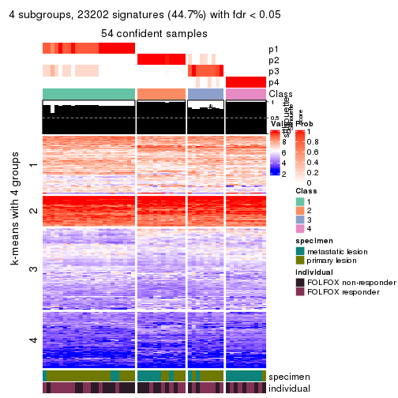
get_signatures(res, k = 5, scale_rows = FALSE)
get_signatures(res, k = 6, scale_rows = FALSE)
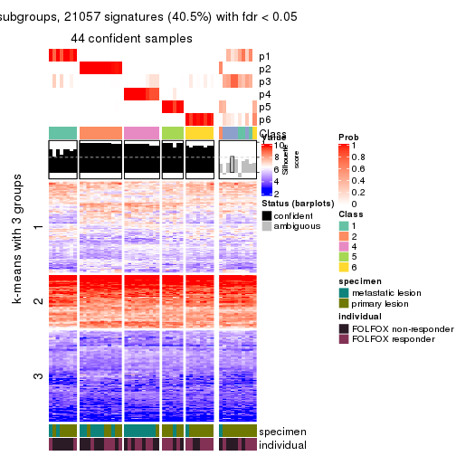
Compare the overlap of signatures from different k:
compare_signatures(res)
get_signature() returns a data frame invisibly. TO get the list of signatures, the function
call should be assigned to a variable explicitly. In following code, if plot argument is set
to FALSE, no heatmap is plotted while only the differential analysis is performed.
# code only for demonstration
tb = get_signature(res, k = ..., plot = FALSE)
An example of the output of tb is:
#> which_row fdr mean_1 mean_2 scaled_mean_1 scaled_mean_2 km
#> 1 38 0.042760348 8.373488 9.131774 -0.5533452 0.5164555 1
#> 2 40 0.018707592 7.106213 8.469186 -0.6173731 0.5762149 1
#> 3 55 0.019134737 10.221463 11.207825 -0.6159697 0.5749050 1
#> 4 59 0.006059896 5.921854 7.869574 -0.6899429 0.6439467 1
#> 5 60 0.018055526 8.928898 10.211722 -0.6204761 0.5791110 1
#> 6 98 0.009384629 15.714769 14.887706 0.6635654 -0.6193277 2
...
The columns in tb are:
which_row: row indices corresponding to the input matrix.fdr: FDR for the differential test. mean_x: The mean value in group x.scaled_mean_x: The mean value in group x after rows are scaled.km: Row groups if k-means clustering is applied to rows.UMAP plot which shows how samples are separated.
dimension_reduction(res, k = 2, method = "UMAP")
dimension_reduction(res, k = 3, method = "UMAP")
dimension_reduction(res, k = 4, method = "UMAP")
dimension_reduction(res, k = 5, method = "UMAP")
dimension_reduction(res, k = 6, method = "UMAP")
Following heatmap shows how subgroups are split when increasing k:
collect_classes(res)
Test correlation between subgroups and known annotations. If the known annotation is numeric, one-way ANOVA test is applied, and if the known annotation is discrete, chi-squared contingency table test is applied.
test_to_known_factors(res)
#> n specimen(p) individual(p) k
#> ATC:pam 54 0.000221 1.000 2
#> ATC:pam 54 0.000282 0.943 3
#> ATC:pam 54 0.000139 0.711 4
#> ATC:pam 51 0.001033 0.536 5
#> ATC:pam 45 0.005440 0.308 6
If matrix rows can be associated to genes, consider to use GO_Enrichment(res,
...) to perform function enrichment for the signature genes.
The object with results only for a single top-value method and a single partition method can be extracted as:
res = res_list["ATC", "mclust"]
# you can also extract it by
# res = res_list["ATC:mclust"]
A summary of res and all the functions that can be applied to it:
res
#> A 'ConsensusPartition' object with k = 2, 3, 4, 5, 6.
#> On a matrix with 51941 rows and 54 columns.
#> Top rows (1000, 2000, 3000, 4000, 5000) are extracted by 'ATC' method.
#> Subgroups are detected by 'mclust' method.
#> Performed in total 1250 partitions by row resampling.
#> Best k for subgroups seems to be 3.
#>
#> Following methods can be applied to this 'ConsensusPartition' object:
#> [1] "cola_report" "collect_classes" "collect_plots"
#> [4] "collect_stats" "colnames" "compare_signatures"
#> [7] "consensus_heatmap" "dimension_reduction" "functional_enrichment"
#> [10] "get_anno_col" "get_anno" "get_classes"
#> [13] "get_consensus" "get_matrix" "get_membership"
#> [16] "get_param" "get_signatures" "get_stats"
#> [19] "is_best_k" "is_stable_k" "membership_heatmap"
#> [22] "ncol" "nrow" "plot_ecdf"
#> [25] "rownames" "select_partition_number" "show"
#> [28] "suggest_best_k" "test_to_known_factors"
collect_plots() function collects all the plots made from res for all k (number of partitions)
into one single page to provide an easy and fast comparison between different k.
collect_plots(res)
The plots are:
k and the heatmap of
predicted classes for each k.k.k.k.All the plots in panels can be made by individual functions and they are plotted later in this section.
select_partition_number() produces several plots showing different
statistics for choosing “optimized” k. There are following statistics:
k;k, the area increased is defined as \(A_k - A_{k-1}\).The detailed explanations of these statistics can be found in the cola vignette.
Generally speaking, lower PAC score, higher mean silhouette score or higher
concordance corresponds to better partition. Rand index and Jaccard index
measure how similar the current partition is compared to partition with k-1.
If they are too similar, we won't accept k is better than k-1.
select_partition_number(res)
The numeric values for all these statistics can be obtained by get_stats().
get_stats(res)
#> k 1-PAC mean_silhouette concordance area_increased Rand Jaccard
#> 2 2 0.576 0.933 0.953 0.4922 0.491 0.491
#> 3 3 0.943 0.944 0.976 0.3278 0.836 0.672
#> 4 4 0.889 0.853 0.926 0.0916 0.881 0.676
#> 5 5 0.817 0.834 0.889 0.0544 0.973 0.902
#> 6 6 0.762 0.690 0.816 0.0600 0.910 0.675
suggest_best_k() suggests the best \(k\) based on these statistics. The rules are as follows:
NA.suggest_best_k(res)
#> [1] 3
Following shows the table of the partitions (You need to click the show/hide
code output link to see it). The membership matrix (columns with name p*)
is inferred by
clue::cl_consensus()
function with the SE method. Basically the value in the membership matrix
represents the probability to belong to a certain group. The finall class
label for an item is determined with the group with highest probability it
belongs to.
In get_classes() function, the entropy is calculated from the membership
matrix and the silhouette score is calculated from the consensus matrix.
cbind(get_classes(res, k = 2), get_membership(res, k = 2))
#> class entropy silhouette p1 p2
#> GSM710828 2 0.5629 0.923 0.132 0.868
#> GSM710829 2 0.5629 0.923 0.132 0.868
#> GSM710839 2 0.5629 0.923 0.132 0.868
#> GSM710841 2 0.0000 0.918 0.000 1.000
#> GSM710843 2 0.5629 0.923 0.132 0.868
#> GSM710845 2 0.5629 0.923 0.132 0.868
#> GSM710846 2 0.0000 0.918 0.000 1.000
#> GSM710849 2 0.0000 0.918 0.000 1.000
#> GSM710853 2 0.0672 0.916 0.008 0.992
#> GSM710855 1 0.0000 0.976 1.000 0.000
#> GSM710858 2 0.0000 0.918 0.000 1.000
#> GSM710860 2 0.0000 0.918 0.000 1.000
#> GSM710801 2 0.5629 0.923 0.132 0.868
#> GSM710813 2 0.5629 0.923 0.132 0.868
#> GSM710814 2 0.5629 0.923 0.132 0.868
#> GSM710815 2 0.5629 0.923 0.132 0.868
#> GSM710816 2 0.5629 0.923 0.132 0.868
#> GSM710817 2 0.0000 0.918 0.000 1.000
#> GSM710818 1 0.0000 0.976 1.000 0.000
#> GSM710819 1 0.0000 0.976 1.000 0.000
#> GSM710820 2 0.0000 0.918 0.000 1.000
#> GSM710830 1 0.9248 0.401 0.660 0.340
#> GSM710831 2 0.0000 0.918 0.000 1.000
#> GSM710832 1 0.0000 0.976 1.000 0.000
#> GSM710833 1 0.0000 0.976 1.000 0.000
#> GSM710834 2 0.5629 0.923 0.132 0.868
#> GSM710835 2 0.0000 0.918 0.000 1.000
#> GSM710836 1 0.0000 0.976 1.000 0.000
#> GSM710837 1 0.0000 0.976 1.000 0.000
#> GSM710862 1 0.0000 0.976 1.000 0.000
#> GSM710863 1 0.0000 0.976 1.000 0.000
#> GSM710865 1 0.0000 0.976 1.000 0.000
#> GSM710867 1 0.0000 0.976 1.000 0.000
#> GSM710869 1 0.0000 0.976 1.000 0.000
#> GSM710871 1 0.0000 0.976 1.000 0.000
#> GSM710873 1 0.0000 0.976 1.000 0.000
#> GSM710802 1 0.0000 0.976 1.000 0.000
#> GSM710803 1 0.0000 0.976 1.000 0.000
#> GSM710804 2 0.0000 0.918 0.000 1.000
#> GSM710805 2 0.0000 0.918 0.000 1.000
#> GSM710806 2 0.0000 0.918 0.000 1.000
#> GSM710807 1 0.0000 0.976 1.000 0.000
#> GSM710808 2 0.5629 0.923 0.132 0.868
#> GSM710809 1 0.4815 0.866 0.896 0.104
#> GSM710810 1 0.0000 0.976 1.000 0.000
#> GSM710811 1 0.0000 0.976 1.000 0.000
#> GSM710812 1 0.0000 0.976 1.000 0.000
#> GSM710821 2 0.5842 0.917 0.140 0.860
#> GSM710822 1 0.0000 0.976 1.000 0.000
#> GSM710823 1 0.0000 0.976 1.000 0.000
#> GSM710824 2 0.5946 0.914 0.144 0.856
#> GSM710825 2 0.5946 0.914 0.144 0.856
#> GSM710826 1 0.4161 0.886 0.916 0.084
#> GSM710827 1 0.0000 0.976 1.000 0.000
cbind(get_classes(res, k = 3), get_membership(res, k = 3))
#> class entropy silhouette p1 p2 p3
#> GSM710828 3 0.000 0.986 0.000 0.000 1.000
#> GSM710829 3 0.000 0.986 0.000 0.000 1.000
#> GSM710839 3 0.000 0.986 0.000 0.000 1.000
#> GSM710841 2 0.000 0.962 0.000 1.000 0.000
#> GSM710843 3 0.000 0.986 0.000 0.000 1.000
#> GSM710845 3 0.000 0.986 0.000 0.000 1.000
#> GSM710846 2 0.000 0.962 0.000 1.000 0.000
#> GSM710849 2 0.000 0.962 0.000 1.000 0.000
#> GSM710853 2 0.000 0.962 0.000 1.000 0.000
#> GSM710855 1 0.000 0.974 1.000 0.000 0.000
#> GSM710858 2 0.000 0.962 0.000 1.000 0.000
#> GSM710860 2 0.000 0.962 0.000 1.000 0.000
#> GSM710801 3 0.000 0.986 0.000 0.000 1.000
#> GSM710813 3 0.000 0.986 0.000 0.000 1.000
#> GSM710814 3 0.000 0.986 0.000 0.000 1.000
#> GSM710815 3 0.000 0.986 0.000 0.000 1.000
#> GSM710816 3 0.000 0.986 0.000 0.000 1.000
#> GSM710817 2 0.000 0.962 0.000 1.000 0.000
#> GSM710818 1 0.000 0.974 1.000 0.000 0.000
#> GSM710819 1 0.000 0.974 1.000 0.000 0.000
#> GSM710820 2 0.000 0.962 0.000 1.000 0.000
#> GSM710830 3 0.394 0.793 0.156 0.000 0.844
#> GSM710831 2 0.000 0.962 0.000 1.000 0.000
#> GSM710832 1 0.000 0.974 1.000 0.000 0.000
#> GSM710833 1 0.000 0.974 1.000 0.000 0.000
#> GSM710834 3 0.000 0.986 0.000 0.000 1.000
#> GSM710835 2 0.000 0.962 0.000 1.000 0.000
#> GSM710836 1 0.000 0.974 1.000 0.000 0.000
#> GSM710837 1 0.000 0.974 1.000 0.000 0.000
#> GSM710862 1 0.000 0.974 1.000 0.000 0.000
#> GSM710863 1 0.000 0.974 1.000 0.000 0.000
#> GSM710865 1 0.000 0.974 1.000 0.000 0.000
#> GSM710867 1 0.000 0.974 1.000 0.000 0.000
#> GSM710869 1 0.000 0.974 1.000 0.000 0.000
#> GSM710871 1 0.000 0.974 1.000 0.000 0.000
#> GSM710873 1 0.000 0.974 1.000 0.000 0.000
#> GSM710802 1 0.000 0.974 1.000 0.000 0.000
#> GSM710803 1 0.000 0.974 1.000 0.000 0.000
#> GSM710804 2 0.000 0.962 0.000 1.000 0.000
#> GSM710805 2 0.000 0.962 0.000 1.000 0.000
#> GSM710806 2 0.000 0.962 0.000 1.000 0.000
#> GSM710807 1 0.000 0.974 1.000 0.000 0.000
#> GSM710808 3 0.000 0.986 0.000 0.000 1.000
#> GSM710809 1 0.460 0.747 0.796 0.204 0.000
#> GSM710810 1 0.460 0.750 0.796 0.000 0.204
#> GSM710811 1 0.000 0.974 1.000 0.000 0.000
#> GSM710812 1 0.000 0.974 1.000 0.000 0.000
#> GSM710821 3 0.000 0.986 0.000 0.000 1.000
#> GSM710822 1 0.000 0.974 1.000 0.000 0.000
#> GSM710823 1 0.000 0.974 1.000 0.000 0.000
#> GSM710824 2 0.946 0.215 0.200 0.480 0.320
#> GSM710825 3 0.000 0.986 0.000 0.000 1.000
#> GSM710826 1 0.455 0.756 0.800 0.000 0.200
#> GSM710827 1 0.000 0.974 1.000 0.000 0.000
cbind(get_classes(res, k = 4), get_membership(res, k = 4))
#> class entropy silhouette p1 p2 p3 p4
#> GSM710828 4 0.0336 0.9425 0.000 0.000 0.008 0.992
#> GSM710829 4 0.0336 0.9427 0.000 0.000 0.008 0.992
#> GSM710839 4 0.0000 0.9445 0.000 0.000 0.000 1.000
#> GSM710841 2 0.0000 0.9659 0.000 1.000 0.000 0.000
#> GSM710843 4 0.0817 0.9345 0.000 0.000 0.024 0.976
#> GSM710845 3 0.3528 0.5082 0.000 0.000 0.808 0.192
#> GSM710846 2 0.0000 0.9659 0.000 1.000 0.000 0.000
#> GSM710849 2 0.0000 0.9659 0.000 1.000 0.000 0.000
#> GSM710853 3 0.4989 0.0722 0.000 0.472 0.528 0.000
#> GSM710855 1 0.1716 0.9480 0.936 0.000 0.064 0.000
#> GSM710858 2 0.0000 0.9659 0.000 1.000 0.000 0.000
#> GSM710860 2 0.0000 0.9659 0.000 1.000 0.000 0.000
#> GSM710801 4 0.0000 0.9445 0.000 0.000 0.000 1.000
#> GSM710813 4 0.0000 0.9445 0.000 0.000 0.000 1.000
#> GSM710814 4 0.4746 0.3354 0.000 0.000 0.368 0.632
#> GSM710815 4 0.0000 0.9445 0.000 0.000 0.000 1.000
#> GSM710816 4 0.0707 0.9375 0.000 0.000 0.020 0.980
#> GSM710817 2 0.0000 0.9659 0.000 1.000 0.000 0.000
#> GSM710818 1 0.0469 0.9700 0.988 0.000 0.012 0.000
#> GSM710819 1 0.0592 0.9708 0.984 0.000 0.016 0.000
#> GSM710820 2 0.0000 0.9659 0.000 1.000 0.000 0.000
#> GSM710830 3 0.5522 0.6296 0.204 0.000 0.716 0.080
#> GSM710831 2 0.0000 0.9659 0.000 1.000 0.000 0.000
#> GSM710832 1 0.0592 0.9708 0.984 0.000 0.016 0.000
#> GSM710833 1 0.0188 0.9719 0.996 0.000 0.004 0.000
#> GSM710834 4 0.0000 0.9445 0.000 0.000 0.000 1.000
#> GSM710835 2 0.4477 0.4554 0.000 0.688 0.312 0.000
#> GSM710836 1 0.1637 0.9469 0.940 0.000 0.060 0.000
#> GSM710837 1 0.1637 0.9469 0.940 0.000 0.060 0.000
#> GSM710862 1 0.0592 0.9689 0.984 0.000 0.016 0.000
#> GSM710863 1 0.0188 0.9719 0.996 0.000 0.004 0.000
#> GSM710865 1 0.0592 0.9708 0.984 0.000 0.016 0.000
#> GSM710867 1 0.0592 0.9708 0.984 0.000 0.016 0.000
#> GSM710869 1 0.0592 0.9708 0.984 0.000 0.016 0.000
#> GSM710871 1 0.1716 0.9480 0.936 0.000 0.064 0.000
#> GSM710873 1 0.1716 0.9480 0.936 0.000 0.064 0.000
#> GSM710802 1 0.1940 0.9103 0.924 0.000 0.076 0.000
#> GSM710803 1 0.0592 0.9708 0.984 0.000 0.016 0.000
#> GSM710804 2 0.0000 0.9659 0.000 1.000 0.000 0.000
#> GSM710805 2 0.0000 0.9659 0.000 1.000 0.000 0.000
#> GSM710806 2 0.0000 0.9659 0.000 1.000 0.000 0.000
#> GSM710807 1 0.0000 0.9721 1.000 0.000 0.000 0.000
#> GSM710808 3 0.2011 0.6260 0.000 0.000 0.920 0.080
#> GSM710809 3 0.4855 0.4462 0.400 0.000 0.600 0.000
#> GSM710810 3 0.5716 0.4435 0.420 0.000 0.552 0.028
#> GSM710811 1 0.0188 0.9719 0.996 0.000 0.004 0.000
#> GSM710812 1 0.0592 0.9689 0.984 0.000 0.016 0.000
#> GSM710821 3 0.2011 0.6260 0.000 0.000 0.920 0.080
#> GSM710822 1 0.0469 0.9700 0.988 0.000 0.012 0.000
#> GSM710823 1 0.0592 0.9689 0.984 0.000 0.016 0.000
#> GSM710824 3 0.5118 0.5407 0.008 0.224 0.736 0.032
#> GSM710825 3 0.2011 0.6260 0.000 0.000 0.920 0.080
#> GSM710826 3 0.4855 0.4462 0.400 0.000 0.600 0.000
#> GSM710827 1 0.0592 0.9708 0.984 0.000 0.016 0.000
cbind(get_classes(res, k = 5), get_membership(res, k = 5))
#> class entropy silhouette p1 p2 p3 p4 p5
#> GSM710828 4 0.1216 0.8682 0.000 0.000 0.020 0.960 0.020
#> GSM710829 4 0.2561 0.8376 0.000 0.000 0.144 0.856 0.000
#> GSM710839 4 0.0693 0.8715 0.000 0.000 0.012 0.980 0.008
#> GSM710841 2 0.0000 0.9334 0.000 1.000 0.000 0.000 0.000
#> GSM710843 4 0.3772 0.8125 0.000 0.000 0.172 0.792 0.036
#> GSM710845 5 0.5060 0.5737 0.000 0.000 0.224 0.092 0.684
#> GSM710846 2 0.0000 0.9334 0.000 1.000 0.000 0.000 0.000
#> GSM710849 2 0.0000 0.9334 0.000 1.000 0.000 0.000 0.000
#> GSM710853 5 0.3119 0.7529 0.000 0.068 0.072 0.000 0.860
#> GSM710855 1 0.2471 0.9237 0.864 0.000 0.136 0.000 0.000
#> GSM710858 2 0.0000 0.9334 0.000 1.000 0.000 0.000 0.000
#> GSM710860 2 0.0000 0.9334 0.000 1.000 0.000 0.000 0.000
#> GSM710801 4 0.0404 0.8708 0.000 0.000 0.012 0.988 0.000
#> GSM710813 4 0.0404 0.8708 0.000 0.000 0.012 0.988 0.000
#> GSM710814 4 0.6630 0.1394 0.000 0.000 0.220 0.404 0.376
#> GSM710815 4 0.0404 0.8708 0.000 0.000 0.012 0.988 0.000
#> GSM710816 4 0.3612 0.8172 0.000 0.000 0.172 0.800 0.028
#> GSM710817 3 0.4268 1.0000 0.000 0.444 0.556 0.000 0.000
#> GSM710818 1 0.0000 0.9421 1.000 0.000 0.000 0.000 0.000
#> GSM710819 1 0.2074 0.9356 0.896 0.000 0.104 0.000 0.000
#> GSM710820 2 0.0000 0.9334 0.000 1.000 0.000 0.000 0.000
#> GSM710830 5 0.1106 0.7925 0.024 0.000 0.000 0.012 0.964
#> GSM710831 3 0.4268 1.0000 0.000 0.444 0.556 0.000 0.000
#> GSM710832 1 0.2074 0.9356 0.896 0.000 0.104 0.000 0.000
#> GSM710833 1 0.0000 0.9421 1.000 0.000 0.000 0.000 0.000
#> GSM710834 4 0.0000 0.8718 0.000 0.000 0.000 1.000 0.000
#> GSM710835 5 0.5601 0.0417 0.000 0.448 0.072 0.000 0.480
#> GSM710836 1 0.0880 0.9326 0.968 0.000 0.032 0.000 0.000
#> GSM710837 1 0.0880 0.9326 0.968 0.000 0.032 0.000 0.000
#> GSM710862 1 0.0000 0.9421 1.000 0.000 0.000 0.000 0.000
#> GSM710863 1 0.0000 0.9421 1.000 0.000 0.000 0.000 0.000
#> GSM710865 1 0.2074 0.9356 0.896 0.000 0.104 0.000 0.000
#> GSM710867 1 0.1851 0.9393 0.912 0.000 0.088 0.000 0.000
#> GSM710869 1 0.2074 0.9356 0.896 0.000 0.104 0.000 0.000
#> GSM710871 1 0.2074 0.9343 0.896 0.000 0.104 0.000 0.000
#> GSM710873 1 0.2074 0.9343 0.896 0.000 0.104 0.000 0.000
#> GSM710802 1 0.2773 0.7628 0.836 0.000 0.000 0.000 0.164
#> GSM710803 1 0.2074 0.9356 0.896 0.000 0.104 0.000 0.000
#> GSM710804 2 0.3684 -0.0277 0.000 0.720 0.280 0.000 0.000
#> GSM710805 2 0.0000 0.9334 0.000 1.000 0.000 0.000 0.000
#> GSM710806 2 0.0000 0.9334 0.000 1.000 0.000 0.000 0.000
#> GSM710807 1 0.1341 0.9428 0.944 0.000 0.056 0.000 0.000
#> GSM710808 5 0.1670 0.7837 0.000 0.000 0.052 0.012 0.936
#> GSM710809 5 0.4686 0.6787 0.160 0.000 0.104 0.000 0.736
#> GSM710810 5 0.5107 0.5401 0.296 0.000 0.064 0.000 0.640
#> GSM710811 1 0.0000 0.9421 1.000 0.000 0.000 0.000 0.000
#> GSM710812 1 0.0000 0.9421 1.000 0.000 0.000 0.000 0.000
#> GSM710821 5 0.1670 0.7837 0.000 0.000 0.052 0.012 0.936
#> GSM710822 1 0.0000 0.9421 1.000 0.000 0.000 0.000 0.000
#> GSM710823 1 0.0000 0.9421 1.000 0.000 0.000 0.000 0.000
#> GSM710824 5 0.1704 0.7817 0.000 0.004 0.068 0.000 0.928
#> GSM710825 5 0.1670 0.7837 0.000 0.000 0.052 0.012 0.936
#> GSM710826 5 0.2388 0.7811 0.028 0.000 0.072 0.000 0.900
#> GSM710827 1 0.2074 0.9356 0.896 0.000 0.104 0.000 0.000
cbind(get_classes(res, k = 6), get_membership(res, k = 6))
#> class entropy silhouette p1 p2 p3 p4 p5 p6
#> GSM710828 4 0.1708 0.9260 0.000 0.000 0.024 0.932 0.040 0.004
#> GSM710829 4 0.1938 0.9198 0.000 0.000 0.052 0.920 0.008 0.020
#> GSM710839 4 0.0777 0.9356 0.000 0.000 0.000 0.972 0.024 0.004
#> GSM710841 2 0.0000 0.8363 0.000 1.000 0.000 0.000 0.000 0.000
#> GSM710843 4 0.3880 0.8229 0.000 0.000 0.052 0.792 0.132 0.024
#> GSM710845 5 0.3437 0.6708 0.000 0.000 0.052 0.092 0.832 0.024
#> GSM710846 2 0.0937 0.8233 0.000 0.960 0.000 0.000 0.000 0.040
#> GSM710849 2 0.0260 0.8330 0.000 0.992 0.000 0.000 0.000 0.008
#> GSM710853 2 0.6631 0.2718 0.000 0.540 0.116 0.000 0.172 0.172
#> GSM710855 3 0.3266 0.5839 0.272 0.000 0.728 0.000 0.000 0.000
#> GSM710858 2 0.0146 0.8364 0.000 0.996 0.000 0.000 0.000 0.004
#> GSM710860 2 0.0000 0.8363 0.000 1.000 0.000 0.000 0.000 0.000
#> GSM710801 4 0.0146 0.9371 0.000 0.000 0.000 0.996 0.000 0.004
#> GSM710813 4 0.0146 0.9371 0.000 0.000 0.000 0.996 0.000 0.004
#> GSM710814 5 0.5314 0.0862 0.000 0.000 0.052 0.416 0.508 0.024
#> GSM710815 4 0.0146 0.9371 0.000 0.000 0.000 0.996 0.000 0.004
#> GSM710816 4 0.3177 0.8822 0.000 0.000 0.052 0.852 0.072 0.024
#> GSM710817 6 0.3198 0.8214 0.000 0.260 0.000 0.000 0.000 0.740
#> GSM710818 1 0.0146 0.7594 0.996 0.000 0.000 0.000 0.000 0.004
#> GSM710819 1 0.4024 0.6978 0.744 0.000 0.184 0.000 0.000 0.072
#> GSM710820 2 0.0000 0.8363 0.000 1.000 0.000 0.000 0.000 0.000
#> GSM710830 5 0.2577 0.7309 0.036 0.000 0.044 0.012 0.896 0.012
#> GSM710831 6 0.3266 0.8245 0.000 0.272 0.000 0.000 0.000 0.728
#> GSM710832 1 0.3979 0.7045 0.752 0.000 0.172 0.000 0.000 0.076
#> GSM710833 1 0.0508 0.7568 0.984 0.000 0.012 0.000 0.000 0.004
#> GSM710834 4 0.0000 0.9375 0.000 0.000 0.000 1.000 0.000 0.000
#> GSM710835 2 0.5493 0.4598 0.000 0.656 0.112 0.000 0.052 0.180
#> GSM710836 1 0.3838 -0.2373 0.552 0.000 0.448 0.000 0.000 0.000
#> GSM710837 3 0.3747 0.5593 0.396 0.000 0.604 0.000 0.000 0.000
#> GSM710862 1 0.2101 0.7015 0.892 0.000 0.100 0.000 0.004 0.004
#> GSM710863 1 0.0777 0.7524 0.972 0.000 0.024 0.000 0.000 0.004
#> GSM710865 1 0.3960 0.7041 0.752 0.000 0.176 0.000 0.000 0.072
#> GSM710867 1 0.3297 0.7310 0.820 0.000 0.112 0.000 0.000 0.068
#> GSM710869 1 0.4024 0.6978 0.744 0.000 0.184 0.000 0.000 0.072
#> GSM710871 1 0.3789 0.1782 0.584 0.000 0.416 0.000 0.000 0.000
#> GSM710873 3 0.3371 0.6460 0.292 0.000 0.708 0.000 0.000 0.000
#> GSM710802 1 0.2829 0.6746 0.864 0.000 0.024 0.000 0.096 0.016
#> GSM710803 1 0.3979 0.7045 0.752 0.000 0.172 0.000 0.000 0.076
#> GSM710804 6 0.3867 0.5373 0.000 0.488 0.000 0.000 0.000 0.512
#> GSM710805 2 0.0937 0.8233 0.000 0.960 0.000 0.000 0.000 0.040
#> GSM710806 2 0.0937 0.8233 0.000 0.960 0.000 0.000 0.000 0.040
#> GSM710807 1 0.0937 0.7611 0.960 0.000 0.040 0.000 0.000 0.000
#> GSM710808 5 0.0260 0.7508 0.000 0.000 0.000 0.008 0.992 0.000
#> GSM710809 3 0.7442 0.1644 0.108 0.076 0.512 0.000 0.204 0.100
#> GSM710810 5 0.5984 0.3260 0.320 0.000 0.092 0.000 0.536 0.052
#> GSM710811 1 0.1500 0.7572 0.936 0.000 0.052 0.000 0.000 0.012
#> GSM710812 1 0.0858 0.7513 0.968 0.000 0.028 0.000 0.000 0.004
#> GSM710821 5 0.0260 0.7508 0.000 0.000 0.000 0.008 0.992 0.000
#> GSM710822 1 0.1152 0.7431 0.952 0.000 0.044 0.000 0.000 0.004
#> GSM710823 1 0.2101 0.7015 0.892 0.000 0.100 0.000 0.004 0.004
#> GSM710824 5 0.4500 0.6629 0.008 0.060 0.100 0.000 0.772 0.060
#> GSM710825 5 0.0260 0.7508 0.000 0.000 0.000 0.008 0.992 0.000
#> GSM710826 5 0.5515 0.5440 0.164 0.000 0.100 0.000 0.664 0.072
#> GSM710827 1 0.3927 0.7056 0.756 0.000 0.172 0.000 0.000 0.072
Heatmaps for the consensus matrix. It visualizes the probability of two samples to be in a same group.
consensus_heatmap(res, k = 2)
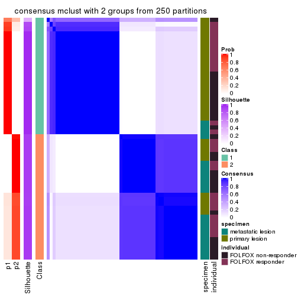
consensus_heatmap(res, k = 3)
consensus_heatmap(res, k = 4)
consensus_heatmap(res, k = 5)
consensus_heatmap(res, k = 6)
Heatmaps for the membership of samples in all partitions to see how consistent they are:
membership_heatmap(res, k = 2)
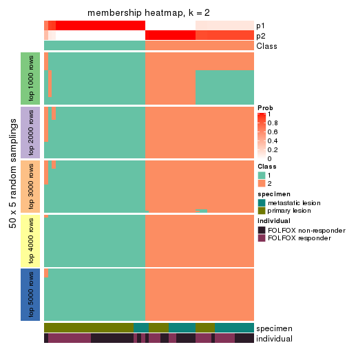
membership_heatmap(res, k = 3)
membership_heatmap(res, k = 4)
membership_heatmap(res, k = 5)
membership_heatmap(res, k = 6)
As soon as we have had the classes for columns, we can look for signatures which are significantly different between classes which can be candidate marks for certain classes. Following are the heatmaps for signatures.
Signature heatmaps where rows are scaled:
get_signatures(res, k = 2)

get_signatures(res, k = 3)
get_signatures(res, k = 4)
get_signatures(res, k = 5)
get_signatures(res, k = 6)
Signature heatmaps where rows are not scaled:
get_signatures(res, k = 2, scale_rows = FALSE)
get_signatures(res, k = 3, scale_rows = FALSE)
get_signatures(res, k = 4, scale_rows = FALSE)
get_signatures(res, k = 5, scale_rows = FALSE)
get_signatures(res, k = 6, scale_rows = FALSE)
Compare the overlap of signatures from different k:
compare_signatures(res)
get_signature() returns a data frame invisibly. TO get the list of signatures, the function
call should be assigned to a variable explicitly. In following code, if plot argument is set
to FALSE, no heatmap is plotted while only the differential analysis is performed.
# code only for demonstration
tb = get_signature(res, k = ..., plot = FALSE)
An example of the output of tb is:
#> which_row fdr mean_1 mean_2 scaled_mean_1 scaled_mean_2 km
#> 1 38 0.042760348 8.373488 9.131774 -0.5533452 0.5164555 1
#> 2 40 0.018707592 7.106213 8.469186 -0.6173731 0.5762149 1
#> 3 55 0.019134737 10.221463 11.207825 -0.6159697 0.5749050 1
#> 4 59 0.006059896 5.921854 7.869574 -0.6899429 0.6439467 1
#> 5 60 0.018055526 8.928898 10.211722 -0.6204761 0.5791110 1
#> 6 98 0.009384629 15.714769 14.887706 0.6635654 -0.6193277 2
...
The columns in tb are:
which_row: row indices corresponding to the input matrix.fdr: FDR for the differential test. mean_x: The mean value in group x.scaled_mean_x: The mean value in group x after rows are scaled.km: Row groups if k-means clustering is applied to rows.UMAP plot which shows how samples are separated.
dimension_reduction(res, k = 2, method = "UMAP")
dimension_reduction(res, k = 3, method = "UMAP")
dimension_reduction(res, k = 4, method = "UMAP")
dimension_reduction(res, k = 5, method = "UMAP")
dimension_reduction(res, k = 6, method = "UMAP")
Following heatmap shows how subgroups are split when increasing k:
collect_classes(res)
Test correlation between subgroups and known annotations. If the known annotation is numeric, one-way ANOVA test is applied, and if the known annotation is discrete, chi-squared contingency table test is applied.
test_to_known_factors(res)
#> n specimen(p) individual(p) k
#> ATC:mclust 53 0.000314 1.000 2
#> ATC:mclust 53 0.000508 0.677 3
#> ATC:mclust 48 0.000235 0.809 4
#> ATC:mclust 51 0.000276 0.667 5
#> ATC:mclust 47 0.000940 0.332 6
If matrix rows can be associated to genes, consider to use GO_Enrichment(res,
...) to perform function enrichment for the signature genes.
The object with results only for a single top-value method and a single partition method can be extracted as:
res = res_list["ATC", "NMF"]
# you can also extract it by
# res = res_list["ATC:NMF"]
A summary of res and all the functions that can be applied to it:
res
#> A 'ConsensusPartition' object with k = 2, 3, 4, 5, 6.
#> On a matrix with 51941 rows and 54 columns.
#> Top rows (1000, 2000, 3000, 4000, 5000) are extracted by 'ATC' method.
#> Subgroups are detected by 'NMF' method.
#> Performed in total 1250 partitions by row resampling.
#> Best k for subgroups seems to be 2.
#>
#> Following methods can be applied to this 'ConsensusPartition' object:
#> [1] "cola_report" "collect_classes" "collect_plots"
#> [4] "collect_stats" "colnames" "compare_signatures"
#> [7] "consensus_heatmap" "dimension_reduction" "functional_enrichment"
#> [10] "get_anno_col" "get_anno" "get_classes"
#> [13] "get_consensus" "get_matrix" "get_membership"
#> [16] "get_param" "get_signatures" "get_stats"
#> [19] "is_best_k" "is_stable_k" "membership_heatmap"
#> [22] "ncol" "nrow" "plot_ecdf"
#> [25] "rownames" "select_partition_number" "show"
#> [28] "suggest_best_k" "test_to_known_factors"
collect_plots() function collects all the plots made from res for all k (number of partitions)
into one single page to provide an easy and fast comparison between different k.
collect_plots(res)
The plots are:
k and the heatmap of
predicted classes for each k.k.k.k.All the plots in panels can be made by individual functions and they are plotted later in this section.
select_partition_number() produces several plots showing different
statistics for choosing “optimized” k. There are following statistics:
k;k, the area increased is defined as \(A_k - A_{k-1}\).The detailed explanations of these statistics can be found in the cola vignette.
Generally speaking, lower PAC score, higher mean silhouette score or higher
concordance corresponds to better partition. Rand index and Jaccard index
measure how similar the current partition is compared to partition with k-1.
If they are too similar, we won't accept k is better than k-1.
select_partition_number(res)
The numeric values for all these statistics can be obtained by get_stats().
get_stats(res)
#> k 1-PAC mean_silhouette concordance area_increased Rand Jaccard
#> 2 2 0.959 0.946 0.976 0.4933 0.502 0.502
#> 3 3 0.667 0.811 0.905 0.2673 0.811 0.643
#> 4 4 0.612 0.611 0.798 0.1498 0.803 0.522
#> 5 5 0.566 0.534 0.727 0.0776 0.828 0.462
#> 6 6 0.563 0.424 0.648 0.0408 0.907 0.630
suggest_best_k() suggests the best \(k\) based on these statistics. The rules are as follows:
NA.suggest_best_k(res)
#> [1] 2
Following shows the table of the partitions (You need to click the show/hide
code output link to see it). The membership matrix (columns with name p*)
is inferred by
clue::cl_consensus()
function with the SE method. Basically the value in the membership matrix
represents the probability to belong to a certain group. The finall class
label for an item is determined with the group with highest probability it
belongs to.
In get_classes() function, the entropy is calculated from the membership
matrix and the silhouette score is calculated from the consensus matrix.
cbind(get_classes(res, k = 2), get_membership(res, k = 2))
#> class entropy silhouette p1 p2
#> GSM710828 2 0.0000 0.987 0.000 1.000
#> GSM710829 2 0.0000 0.987 0.000 1.000
#> GSM710839 2 0.0000 0.987 0.000 1.000
#> GSM710841 2 0.0000 0.987 0.000 1.000
#> GSM710843 2 0.0000 0.987 0.000 1.000
#> GSM710845 2 0.0000 0.987 0.000 1.000
#> GSM710846 2 0.0000 0.987 0.000 1.000
#> GSM710849 2 0.0000 0.987 0.000 1.000
#> GSM710853 2 0.0000 0.987 0.000 1.000
#> GSM710855 1 0.0000 0.958 1.000 0.000
#> GSM710858 2 0.0000 0.987 0.000 1.000
#> GSM710860 2 0.0000 0.987 0.000 1.000
#> GSM710801 2 0.0000 0.987 0.000 1.000
#> GSM710813 2 0.0000 0.987 0.000 1.000
#> GSM710814 2 0.0000 0.987 0.000 1.000
#> GSM710815 2 0.0000 0.987 0.000 1.000
#> GSM710816 2 0.0000 0.987 0.000 1.000
#> GSM710817 2 0.0000 0.987 0.000 1.000
#> GSM710818 1 0.0672 0.953 0.992 0.008
#> GSM710819 1 0.0000 0.958 1.000 0.000
#> GSM710820 2 0.0000 0.987 0.000 1.000
#> GSM710830 2 0.0938 0.976 0.012 0.988
#> GSM710831 2 0.0000 0.987 0.000 1.000
#> GSM710832 1 0.0000 0.958 1.000 0.000
#> GSM710833 1 0.0000 0.958 1.000 0.000
#> GSM710834 2 0.0000 0.987 0.000 1.000
#> GSM710835 2 0.0000 0.987 0.000 1.000
#> GSM710836 1 0.0000 0.958 1.000 0.000
#> GSM710837 1 0.0000 0.958 1.000 0.000
#> GSM710862 1 0.6887 0.786 0.816 0.184
#> GSM710863 1 0.0000 0.958 1.000 0.000
#> GSM710865 1 0.0000 0.958 1.000 0.000
#> GSM710867 1 0.0000 0.958 1.000 0.000
#> GSM710869 1 0.0000 0.958 1.000 0.000
#> GSM710871 1 0.0000 0.958 1.000 0.000
#> GSM710873 1 0.0000 0.958 1.000 0.000
#> GSM710802 1 0.3733 0.906 0.928 0.072
#> GSM710803 1 0.0000 0.958 1.000 0.000
#> GSM710804 2 0.0000 0.987 0.000 1.000
#> GSM710805 2 0.0000 0.987 0.000 1.000
#> GSM710806 2 0.0000 0.987 0.000 1.000
#> GSM710807 1 0.0000 0.958 1.000 0.000
#> GSM710808 2 0.0000 0.987 0.000 1.000
#> GSM710809 2 0.8443 0.603 0.272 0.728
#> GSM710810 1 0.9710 0.367 0.600 0.400
#> GSM710811 1 0.0000 0.958 1.000 0.000
#> GSM710812 1 0.2948 0.922 0.948 0.052
#> GSM710821 2 0.0000 0.987 0.000 1.000
#> GSM710822 1 0.0000 0.958 1.000 0.000
#> GSM710823 1 0.6973 0.781 0.812 0.188
#> GSM710824 2 0.0000 0.987 0.000 1.000
#> GSM710825 2 0.0000 0.987 0.000 1.000
#> GSM710826 2 0.4298 0.893 0.088 0.912
#> GSM710827 1 0.0000 0.958 1.000 0.000
cbind(get_classes(res, k = 3), get_membership(res, k = 3))
#> class entropy silhouette p1 p2 p3
#> GSM710828 3 0.3879 0.7361 0.000 0.152 0.848
#> GSM710829 2 0.3267 0.8653 0.000 0.884 0.116
#> GSM710839 2 0.4235 0.7943 0.000 0.824 0.176
#> GSM710841 2 0.0000 0.9218 0.000 1.000 0.000
#> GSM710843 2 0.2261 0.8953 0.000 0.932 0.068
#> GSM710845 2 0.1643 0.9066 0.000 0.956 0.044
#> GSM710846 2 0.0237 0.9207 0.000 0.996 0.004
#> GSM710849 2 0.0237 0.9207 0.000 0.996 0.004
#> GSM710853 2 0.0237 0.9207 0.000 0.996 0.004
#> GSM710855 1 0.0000 0.9081 1.000 0.000 0.000
#> GSM710858 2 0.0000 0.9218 0.000 1.000 0.000
#> GSM710860 2 0.0000 0.9218 0.000 1.000 0.000
#> GSM710801 3 0.3619 0.7421 0.000 0.136 0.864
#> GSM710813 2 0.4178 0.8007 0.000 0.828 0.172
#> GSM710814 2 0.5465 0.6041 0.000 0.712 0.288
#> GSM710815 3 0.5327 0.6227 0.000 0.272 0.728
#> GSM710816 3 0.6308 -0.0239 0.000 0.492 0.508
#> GSM710817 2 0.0237 0.9207 0.000 0.996 0.004
#> GSM710818 3 0.4887 0.4989 0.228 0.000 0.772
#> GSM710819 1 0.0000 0.9081 1.000 0.000 0.000
#> GSM710820 2 0.0000 0.9218 0.000 1.000 0.000
#> GSM710830 3 0.1163 0.7135 0.000 0.028 0.972
#> GSM710831 2 0.0000 0.9218 0.000 1.000 0.000
#> GSM710832 3 0.5733 0.5048 0.324 0.000 0.676
#> GSM710833 1 0.3551 0.8484 0.868 0.000 0.132
#> GSM710834 2 0.5098 0.7003 0.000 0.752 0.248
#> GSM710835 2 0.0237 0.9207 0.000 0.996 0.004
#> GSM710836 1 0.0237 0.9069 0.996 0.004 0.000
#> GSM710837 1 0.0475 0.9055 0.992 0.004 0.004
#> GSM710862 1 0.3532 0.8556 0.884 0.008 0.108
#> GSM710863 1 0.4399 0.8059 0.812 0.000 0.188
#> GSM710865 1 0.0000 0.9081 1.000 0.000 0.000
#> GSM710867 1 0.0000 0.9081 1.000 0.000 0.000
#> GSM710869 1 0.0000 0.9081 1.000 0.000 0.000
#> GSM710871 1 0.0237 0.9070 0.996 0.000 0.004
#> GSM710873 1 0.0000 0.9081 1.000 0.000 0.000
#> GSM710802 1 0.4178 0.7188 0.828 0.000 0.172
#> GSM710803 3 0.5216 0.5887 0.260 0.000 0.740
#> GSM710804 2 0.0000 0.9218 0.000 1.000 0.000
#> GSM710805 2 0.0000 0.9218 0.000 1.000 0.000
#> GSM710806 2 0.0237 0.9207 0.000 0.996 0.004
#> GSM710807 1 0.2356 0.8796 0.928 0.000 0.072
#> GSM710808 2 0.2959 0.8754 0.000 0.900 0.100
#> GSM710809 1 0.6298 0.2953 0.608 0.388 0.004
#> GSM710810 3 0.4555 0.7106 0.000 0.200 0.800
#> GSM710811 1 0.0000 0.9081 1.000 0.000 0.000
#> GSM710812 1 0.4682 0.7993 0.804 0.004 0.192
#> GSM710821 2 0.3192 0.8654 0.000 0.888 0.112
#> GSM710822 1 0.0000 0.9081 1.000 0.000 0.000
#> GSM710823 1 0.4733 0.7955 0.800 0.004 0.196
#> GSM710824 2 0.0000 0.9218 0.000 1.000 0.000
#> GSM710825 2 0.1964 0.9013 0.000 0.944 0.056
#> GSM710826 2 0.4002 0.7247 0.160 0.840 0.000
#> GSM710827 1 0.0000 0.9081 1.000 0.000 0.000
cbind(get_classes(res, k = 4), get_membership(res, k = 4))
#> class entropy silhouette p1 p2 p3 p4
#> GSM710828 4 0.2342 0.7576 0.080 0.008 0.000 0.912
#> GSM710829 2 0.7654 0.1423 0.352 0.432 0.000 0.216
#> GSM710839 1 0.7693 -0.0121 0.424 0.352 0.000 0.224
#> GSM710841 2 0.4277 0.6920 0.280 0.720 0.000 0.000
#> GSM710843 1 0.6337 0.0302 0.552 0.380 0.000 0.068
#> GSM710845 1 0.5587 0.1180 0.600 0.372 0.000 0.028
#> GSM710846 2 0.3610 0.7371 0.200 0.800 0.000 0.000
#> GSM710849 2 0.4040 0.7188 0.248 0.752 0.000 0.000
#> GSM710853 2 0.4323 0.7346 0.184 0.788 0.028 0.000
#> GSM710855 3 0.0592 0.9013 0.016 0.000 0.984 0.000
#> GSM710858 2 0.4040 0.7153 0.248 0.752 0.000 0.000
#> GSM710860 2 0.4877 0.4720 0.408 0.592 0.000 0.000
#> GSM710801 4 0.0657 0.7755 0.004 0.012 0.000 0.984
#> GSM710813 2 0.7412 0.2096 0.168 0.444 0.000 0.388
#> GSM710814 1 0.6444 0.2820 0.612 0.284 0.000 0.104
#> GSM710815 4 0.2197 0.7685 0.004 0.080 0.000 0.916
#> GSM710816 4 0.7310 -0.0790 0.360 0.160 0.000 0.480
#> GSM710817 2 0.0188 0.6684 0.004 0.996 0.000 0.000
#> GSM710818 3 0.5964 0.4069 0.424 0.000 0.536 0.040
#> GSM710819 3 0.0188 0.9044 0.004 0.000 0.996 0.000
#> GSM710820 2 0.4250 0.6973 0.276 0.724 0.000 0.000
#> GSM710830 1 0.4857 0.2298 0.668 0.008 0.000 0.324
#> GSM710831 2 0.2589 0.7033 0.116 0.884 0.000 0.000
#> GSM710832 4 0.4467 0.6515 0.040 0.000 0.172 0.788
#> GSM710833 3 0.1042 0.9043 0.020 0.000 0.972 0.008
#> GSM710834 1 0.7554 0.2596 0.488 0.244 0.000 0.268
#> GSM710835 2 0.2610 0.7171 0.088 0.900 0.012 0.000
#> GSM710836 3 0.0336 0.9032 0.008 0.000 0.992 0.000
#> GSM710837 3 0.0592 0.9013 0.016 0.000 0.984 0.000
#> GSM710862 1 0.4991 -0.0197 0.608 0.004 0.388 0.000
#> GSM710863 3 0.4277 0.7045 0.280 0.000 0.720 0.000
#> GSM710865 3 0.1820 0.8981 0.036 0.000 0.944 0.020
#> GSM710867 3 0.1520 0.9008 0.024 0.000 0.956 0.020
#> GSM710869 3 0.0524 0.9032 0.008 0.000 0.988 0.004
#> GSM710871 3 0.0592 0.9013 0.016 0.000 0.984 0.000
#> GSM710873 3 0.0927 0.8977 0.016 0.008 0.976 0.000
#> GSM710802 3 0.2542 0.8660 0.012 0.000 0.904 0.084
#> GSM710803 4 0.2546 0.7548 0.028 0.000 0.060 0.912
#> GSM710804 2 0.1940 0.7113 0.076 0.924 0.000 0.000
#> GSM710805 2 0.2973 0.7415 0.144 0.856 0.000 0.000
#> GSM710806 2 0.2921 0.7401 0.140 0.860 0.000 0.000
#> GSM710807 3 0.1940 0.8893 0.076 0.000 0.924 0.000
#> GSM710808 1 0.1792 0.5564 0.932 0.068 0.000 0.000
#> GSM710809 2 0.3900 0.4753 0.020 0.816 0.164 0.000
#> GSM710810 4 0.2654 0.7560 0.004 0.108 0.000 0.888
#> GSM710811 3 0.1211 0.9009 0.040 0.000 0.960 0.000
#> GSM710812 3 0.4781 0.6166 0.336 0.004 0.660 0.000
#> GSM710821 1 0.1716 0.5574 0.936 0.064 0.000 0.000
#> GSM710822 3 0.2530 0.8660 0.112 0.000 0.888 0.000
#> GSM710823 1 0.4936 0.1335 0.652 0.008 0.340 0.000
#> GSM710824 1 0.4356 0.3315 0.708 0.292 0.000 0.000
#> GSM710825 1 0.1716 0.5574 0.936 0.064 0.000 0.000
#> GSM710826 1 0.2500 0.5502 0.916 0.044 0.040 0.000
#> GSM710827 3 0.1211 0.9009 0.040 0.000 0.960 0.000
cbind(get_classes(res, k = 5), get_membership(res, k = 5))
#> class entropy silhouette p1 p2 p3 p4 p5
#> GSM710828 5 0.7343 0.4728 0.176 0.192 0.000 0.096 0.536
#> GSM710829 5 0.8217 0.1799 0.156 0.172 0.000 0.304 0.368
#> GSM710839 4 0.5336 0.4819 0.040 0.052 0.000 0.700 0.208
#> GSM710841 4 0.5220 0.3504 0.044 0.440 0.000 0.516 0.000
#> GSM710843 4 0.4820 0.6015 0.156 0.048 0.000 0.756 0.040
#> GSM710845 4 0.4457 0.6222 0.116 0.124 0.000 0.760 0.000
#> GSM710846 2 0.3519 0.6353 0.008 0.776 0.000 0.216 0.000
#> GSM710849 4 0.5106 0.2702 0.036 0.456 0.000 0.508 0.000
#> GSM710853 4 0.6096 0.4894 0.044 0.220 0.096 0.640 0.000
#> GSM710855 3 0.0404 0.8304 0.012 0.000 0.988 0.000 0.000
#> GSM710858 2 0.3416 0.7672 0.088 0.840 0.000 0.072 0.000
#> GSM710860 2 0.6439 0.2793 0.236 0.504 0.000 0.260 0.000
#> GSM710801 5 0.3888 0.6056 0.004 0.072 0.000 0.112 0.812
#> GSM710813 5 0.6655 0.0257 0.028 0.112 0.000 0.424 0.436
#> GSM710814 4 0.4769 0.5757 0.112 0.028 0.000 0.768 0.092
#> GSM710815 5 0.3740 0.6008 0.008 0.044 0.000 0.128 0.820
#> GSM710816 4 0.5302 0.4216 0.060 0.016 0.000 0.668 0.256
#> GSM710817 2 0.0579 0.7443 0.008 0.984 0.000 0.008 0.000
#> GSM710818 1 0.5280 0.4387 0.668 0.000 0.248 0.008 0.076
#> GSM710819 3 0.0510 0.8309 0.016 0.000 0.984 0.000 0.000
#> GSM710820 4 0.5043 0.4831 0.044 0.356 0.000 0.600 0.000
#> GSM710830 1 0.6646 -0.0672 0.396 0.000 0.000 0.224 0.380
#> GSM710831 2 0.2136 0.7609 0.088 0.904 0.000 0.008 0.000
#> GSM710832 5 0.4911 0.3697 0.100 0.000 0.160 0.008 0.732
#> GSM710833 3 0.2075 0.8256 0.040 0.000 0.924 0.004 0.032
#> GSM710834 1 0.8506 -0.3564 0.304 0.204 0.000 0.204 0.288
#> GSM710835 2 0.4478 0.6600 0.024 0.768 0.040 0.168 0.000
#> GSM710836 3 0.0807 0.8266 0.012 0.000 0.976 0.012 0.000
#> GSM710837 3 0.1377 0.8177 0.020 0.004 0.956 0.020 0.000
#> GSM710862 1 0.3918 0.5062 0.752 0.000 0.232 0.008 0.008
#> GSM710863 1 0.5002 0.0191 0.548 0.000 0.424 0.004 0.024
#> GSM710865 3 0.3532 0.7977 0.092 0.000 0.832 0.000 0.076
#> GSM710867 3 0.2484 0.8229 0.028 0.000 0.900 0.004 0.068
#> GSM710869 3 0.1710 0.8285 0.004 0.000 0.940 0.016 0.040
#> GSM710871 3 0.1012 0.8259 0.012 0.000 0.968 0.020 0.000
#> GSM710873 3 0.1741 0.8088 0.024 0.000 0.936 0.040 0.000
#> GSM710802 3 0.4827 0.7470 0.020 0.028 0.772 0.036 0.144
#> GSM710803 5 0.3146 0.4997 0.052 0.000 0.092 0.000 0.856
#> GSM710804 2 0.2325 0.7750 0.068 0.904 0.000 0.028 0.000
#> GSM710805 4 0.4430 0.3941 0.012 0.360 0.000 0.628 0.000
#> GSM710806 4 0.4026 0.5376 0.020 0.244 0.000 0.736 0.000
#> GSM710807 3 0.3675 0.7160 0.216 0.000 0.772 0.004 0.008
#> GSM710808 1 0.4588 0.3001 0.604 0.016 0.000 0.380 0.000
#> GSM710809 3 0.7619 -0.2093 0.044 0.280 0.356 0.320 0.000
#> GSM710810 5 0.5308 0.4093 0.036 0.324 0.004 0.012 0.624
#> GSM710811 3 0.3559 0.7984 0.096 0.000 0.836 0.004 0.064
#> GSM710812 3 0.4886 0.5621 0.312 0.000 0.648 0.004 0.036
#> GSM710821 1 0.3608 0.5360 0.812 0.040 0.000 0.148 0.000
#> GSM710822 3 0.3968 0.6427 0.276 0.000 0.716 0.004 0.004
#> GSM710823 1 0.2733 0.5596 0.872 0.004 0.112 0.012 0.000
#> GSM710824 4 0.5238 0.5388 0.260 0.088 0.000 0.652 0.000
#> GSM710825 1 0.3421 0.5335 0.788 0.008 0.000 0.204 0.000
#> GSM710826 1 0.4429 0.5687 0.772 0.016 0.052 0.160 0.000
#> GSM710827 3 0.3516 0.7930 0.108 0.000 0.836 0.004 0.052
cbind(get_classes(res, k = 6), get_membership(res, k = 6))
#> class entropy silhouette p1 p2 p3 p4 p5 p6
#> GSM710828 4 0.5939 0.2968 NA 0.032 0.000 0.564 0.080 0.308
#> GSM710829 4 0.6705 0.1252 NA 0.264 0.000 0.520 0.148 0.044
#> GSM710839 2 0.5513 0.0192 NA 0.476 0.000 0.444 0.048 0.024
#> GSM710841 2 0.5508 0.0887 NA 0.476 0.000 0.032 0.056 0.436
#> GSM710843 2 0.6799 0.1702 NA 0.468 0.000 0.308 0.164 0.044
#> GSM710845 2 0.7681 0.3205 NA 0.516 0.004 0.124 0.144 0.116
#> GSM710846 6 0.3243 0.6855 NA 0.084 0.000 0.008 0.036 0.852
#> GSM710849 6 0.5155 -0.0519 NA 0.452 0.000 0.008 0.044 0.488
#> GSM710853 2 0.3849 0.4821 NA 0.816 0.012 0.004 0.012 0.064
#> GSM710855 3 0.3383 0.7371 NA 0.000 0.728 0.000 0.004 0.000
#> GSM710858 6 0.2940 0.6865 NA 0.048 0.000 0.016 0.048 0.876
#> GSM710860 6 0.6351 0.4553 NA 0.148 0.000 0.068 0.168 0.600
#> GSM710801 4 0.3285 0.4049 NA 0.012 0.000 0.844 0.008 0.096
#> GSM710813 4 0.5574 0.0950 NA 0.328 0.000 0.580 0.032 0.040
#> GSM710814 2 0.6373 0.1116 NA 0.468 0.000 0.376 0.108 0.028
#> GSM710815 4 0.3029 0.3981 NA 0.044 0.000 0.864 0.000 0.060
#> GSM710816 4 0.5669 -0.0400 NA 0.384 0.000 0.520 0.064 0.016
#> GSM710817 6 0.0653 0.7010 NA 0.012 0.000 0.000 0.004 0.980
#> GSM710818 5 0.5114 0.3717 NA 0.004 0.360 0.012 0.572 0.000
#> GSM710819 3 0.3266 0.7349 NA 0.000 0.728 0.000 0.000 0.000
#> GSM710820 2 0.5330 0.3352 NA 0.596 0.000 0.044 0.048 0.312
#> GSM710830 5 0.7906 0.0219 NA 0.212 0.044 0.284 0.364 0.000
#> GSM710831 6 0.1644 0.6913 NA 0.000 0.000 0.004 0.052 0.932
#> GSM710832 4 0.6193 0.1101 NA 0.000 0.364 0.420 0.012 0.000
#> GSM710833 3 0.4606 0.7158 NA 0.004 0.652 0.012 0.032 0.000
#> GSM710834 4 0.7259 0.2145 NA 0.060 0.000 0.420 0.172 0.320
#> GSM710835 6 0.3721 0.6018 NA 0.160 0.000 0.000 0.016 0.788
#> GSM710836 3 0.3426 0.7333 NA 0.000 0.720 0.000 0.004 0.000
#> GSM710837 3 0.3894 0.7154 NA 0.008 0.664 0.000 0.004 0.000
#> GSM710862 5 0.4513 0.5004 NA 0.008 0.300 0.000 0.656 0.004
#> GSM710863 3 0.4184 -0.1949 NA 0.000 0.500 0.000 0.488 0.000
#> GSM710865 3 0.1531 0.6743 NA 0.000 0.928 0.000 0.004 0.000
#> GSM710867 3 0.1531 0.6907 NA 0.000 0.928 0.004 0.000 0.000
#> GSM710869 3 0.3151 0.7384 NA 0.000 0.748 0.000 0.000 0.000
#> GSM710871 3 0.3468 0.7368 NA 0.000 0.712 0.000 0.004 0.000
#> GSM710873 3 0.4006 0.6859 NA 0.004 0.600 0.000 0.004 0.000
#> GSM710802 3 0.6591 0.3152 NA 0.008 0.536 0.108 0.024 0.036
#> GSM710803 4 0.5850 0.0724 NA 0.000 0.408 0.424 0.004 0.000
#> GSM710804 6 0.1700 0.7043 NA 0.028 0.000 0.000 0.024 0.936
#> GSM710805 2 0.3477 0.4803 NA 0.804 0.000 0.004 0.016 0.160
#> GSM710806 2 0.2871 0.4882 NA 0.852 0.000 0.000 0.008 0.116
#> GSM710807 3 0.5067 0.6153 NA 0.000 0.636 0.000 0.184 0.000
#> GSM710808 5 0.4215 0.4719 NA 0.300 0.004 0.016 0.672 0.000
#> GSM710809 2 0.7200 0.1700 NA 0.388 0.120 0.000 0.004 0.144
#> GSM710810 6 0.7877 -0.0146 NA 0.000 0.184 0.228 0.020 0.376
#> GSM710811 3 0.1493 0.6777 NA 0.004 0.936 0.000 0.004 0.000
#> GSM710812 3 0.4344 0.3259 NA 0.000 0.652 0.000 0.304 0.000
#> GSM710821 5 0.1988 0.6060 NA 0.004 0.000 0.008 0.912 0.072
#> GSM710822 3 0.4702 0.5149 NA 0.000 0.660 0.000 0.260 0.004
#> GSM710823 5 0.2916 0.6245 NA 0.000 0.096 0.000 0.860 0.020
#> GSM710824 5 0.7179 0.1195 NA 0.388 0.036 0.020 0.424 0.076
#> GSM710825 5 0.3032 0.6196 NA 0.124 0.000 0.004 0.844 0.012
#> GSM710826 5 0.4898 0.6409 NA 0.092 0.088 0.000 0.752 0.032
#> GSM710827 3 0.1088 0.6737 NA 0.000 0.960 0.000 0.016 0.000
Heatmaps for the consensus matrix. It visualizes the probability of two samples to be in a same group.
consensus_heatmap(res, k = 2)
consensus_heatmap(res, k = 3)
consensus_heatmap(res, k = 4)
consensus_heatmap(res, k = 5)
consensus_heatmap(res, k = 6)
Heatmaps for the membership of samples in all partitions to see how consistent they are:
membership_heatmap(res, k = 2)
membership_heatmap(res, k = 3)

membership_heatmap(res, k = 4)

membership_heatmap(res, k = 5)
membership_heatmap(res, k = 6)
As soon as we have had the classes for columns, we can look for signatures which are significantly different between classes which can be candidate marks for certain classes. Following are the heatmaps for signatures.
Signature heatmaps where rows are scaled:
get_signatures(res, k = 2)
get_signatures(res, k = 3)
get_signatures(res, k = 4)
get_signatures(res, k = 5)
get_signatures(res, k = 6)
Signature heatmaps where rows are not scaled:
get_signatures(res, k = 2, scale_rows = FALSE)
get_signatures(res, k = 3, scale_rows = FALSE)
get_signatures(res, k = 4, scale_rows = FALSE)
get_signatures(res, k = 5, scale_rows = FALSE)
get_signatures(res, k = 6, scale_rows = FALSE)
Compare the overlap of signatures from different k:
compare_signatures(res)
get_signature() returns a data frame invisibly. TO get the list of signatures, the function
call should be assigned to a variable explicitly. In following code, if plot argument is set
to FALSE, no heatmap is plotted while only the differential analysis is performed.
# code only for demonstration
tb = get_signature(res, k = ..., plot = FALSE)
An example of the output of tb is:
#> which_row fdr mean_1 mean_2 scaled_mean_1 scaled_mean_2 km
#> 1 38 0.042760348 8.373488 9.131774 -0.5533452 0.5164555 1
#> 2 40 0.018707592 7.106213 8.469186 -0.6173731 0.5762149 1
#> 3 55 0.019134737 10.221463 11.207825 -0.6159697 0.5749050 1
#> 4 59 0.006059896 5.921854 7.869574 -0.6899429 0.6439467 1
#> 5 60 0.018055526 8.928898 10.211722 -0.6204761 0.5791110 1
#> 6 98 0.009384629 15.714769 14.887706 0.6635654 -0.6193277 2
...
The columns in tb are:
which_row: row indices corresponding to the input matrix.fdr: FDR for the differential test. mean_x: The mean value in group x.scaled_mean_x: The mean value in group x after rows are scaled.km: Row groups if k-means clustering is applied to rows.UMAP plot which shows how samples are separated.
dimension_reduction(res, k = 2, method = "UMAP")
dimension_reduction(res, k = 3, method = "UMAP")
dimension_reduction(res, k = 4, method = "UMAP")
dimension_reduction(res, k = 5, method = "UMAP")

dimension_reduction(res, k = 6, method = "UMAP")
Following heatmap shows how subgroups are split when increasing k:
collect_classes(res)
Test correlation between subgroups and known annotations. If the known annotation is numeric, one-way ANOVA test is applied, and if the known annotation is discrete, chi-squared contingency table test is applied.
test_to_known_factors(res)
#> n specimen(p) individual(p) k
#> ATC:NMF 53 0.00295 0.870 2
#> ATC:NMF 51 0.00799 0.786 3
#> ATC:NMF 39 0.01872 0.138 4
#> ATC:NMF 34 0.01360 0.307 5
#> ATC:NMF 25 0.08583 0.192 6
If matrix rows can be associated to genes, consider to use GO_Enrichment(res,
...) to perform function enrichment for the signature genes.
sessionInfo()
#> R version 3.6.0 (2019-04-26)
#> Platform: x86_64-pc-linux-gnu (64-bit)
#> Running under: CentOS Linux 7 (Core)
#>
#> Matrix products: default
#> BLAS: /usr/lib64/libblas.so.3.4.2
#> LAPACK: /usr/lib64/liblapack.so.3.4.2
#>
#> locale:
#> [1] LC_CTYPE=en_GB.UTF-8 LC_NUMERIC=C LC_TIME=en_GB.UTF-8
#> [4] LC_COLLATE=en_GB.UTF-8 LC_MONETARY=en_GB.UTF-8 LC_MESSAGES=en_GB.UTF-8
#> [7] LC_PAPER=en_GB.UTF-8 LC_NAME=C LC_ADDRESS=C
#> [10] LC_TELEPHONE=C LC_MEASUREMENT=en_GB.UTF-8 LC_IDENTIFICATION=C
#>
#> attached base packages:
#> [1] grid parallel stats graphics grDevices utils datasets methods base
#>
#> other attached packages:
#> [1] genefilter_1.66.0 ComplexHeatmap_2.1.1 markdown_1.1 knitr_1.26
#> [5] preprocessCore_1.46.0 cola_1.3.2 GEOquery_2.52.0 Biobase_2.44.0
#> [9] BiocGenerics_0.30.0 GetoptLong_0.1.7
#>
#> loaded via a namespace (and not attached):
#> [1] bitops_1.0-6 matrixStats_0.55.0 bit64_0.9-7 doParallel_1.0.15
#> [5] RColorBrewer_1.1-2 httr_1.4.1 tools_3.6.0 backports_1.1.5
#> [9] R6_2.4.1 DBI_1.0.0 lazyeval_0.2.2 colorspace_1.4-1
#> [13] withr_2.1.2 tidyselect_0.2.5 gridExtra_2.3 bit_1.1-14
#> [17] compiler_3.6.0 xml2_1.2.2 microbenchmark_1.4-7 pkgmaker_0.28
#> [21] slam_0.1-46 scales_1.1.0 readr_1.3.1 NMF_0.23.6
#> [25] stringr_1.4.0 digest_0.6.23 pkgconfig_2.0.3 bibtex_0.4.2
#> [29] highr_0.8 limma_3.40.6 rlang_0.4.2 GlobalOptions_0.1.1
#> [33] RSQLite_2.1.2 impute_1.58.0 shape_1.4.4 mclust_5.4.5
#> [37] dendextend_1.12.0 dplyr_0.8.3 RCurl_1.95-4.12 magrittr_1.5
#> [41] Matrix_1.2-17 Rcpp_1.0.3 munsell_0.5.0 S4Vectors_0.22.1
#> [45] viridis_0.5.1 lifecycle_0.1.0 stringi_1.4.3 plyr_1.8.4
#> [49] blob_1.2.0 crayon_1.3.4 lattice_0.20-38 splines_3.6.0
#> [53] annotate_1.62.0 circlize_0.4.9 hms_0.5.2 zeallot_0.1.0
#> [57] pillar_1.4.2 rjson_0.2.20 rngtools_1.4 reshape2_1.4.3
#> [61] codetools_0.2-16 stats4_3.6.0 XML_3.98-1.20 glue_1.3.1
#> [65] evaluate_0.14 png_0.1-7 vctrs_0.2.0 foreach_1.4.7
#> [69] polyclip_1.10-0 gtable_0.3.0 purrr_0.3.3 tidyr_1.0.0
#> [73] clue_0.3-57 assertthat_0.2.1 ggplot2_3.2.1 xfun_0.11
#> [77] gridBase_0.4-7 eulerr_6.0.0 xtable_1.8-4 skmeans_0.2-11
#> [81] survival_2.44-1.1 viridisLite_0.3.0 tibble_2.1.3 iterators_1.0.12
#> [85] AnnotationDbi_1.46.1 registry_0.5-1 memoise_1.1.0 IRanges_2.18.3
#> [89] cluster_2.1.0 brew_1.0-6